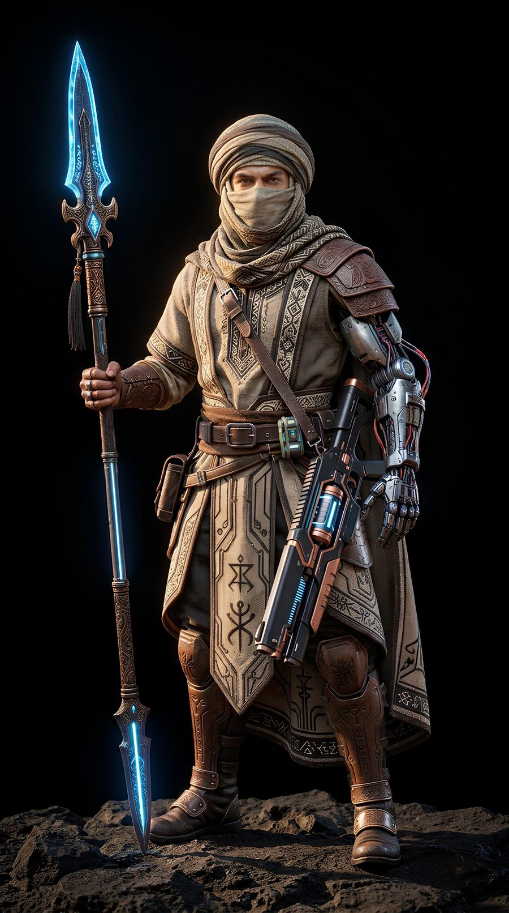
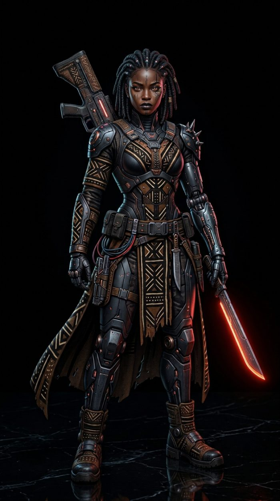
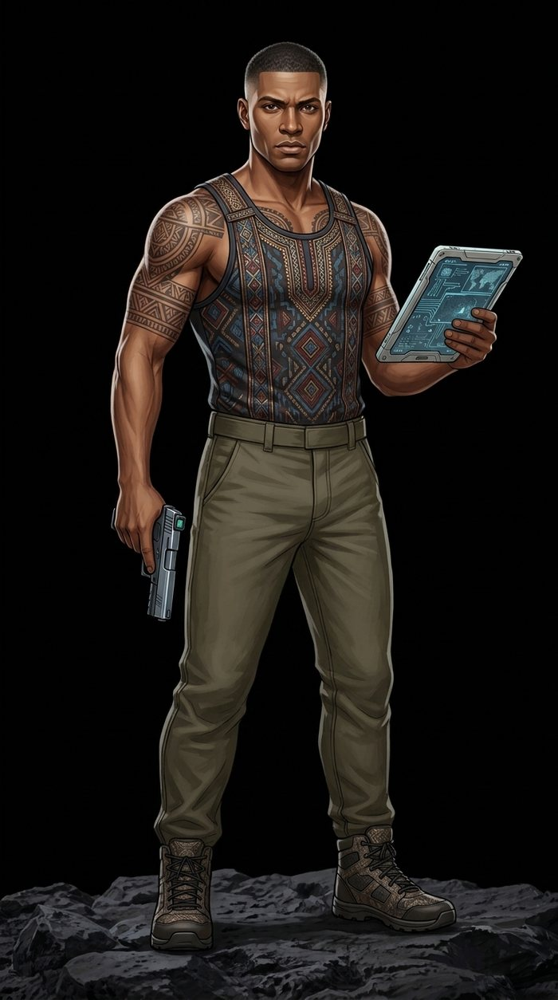
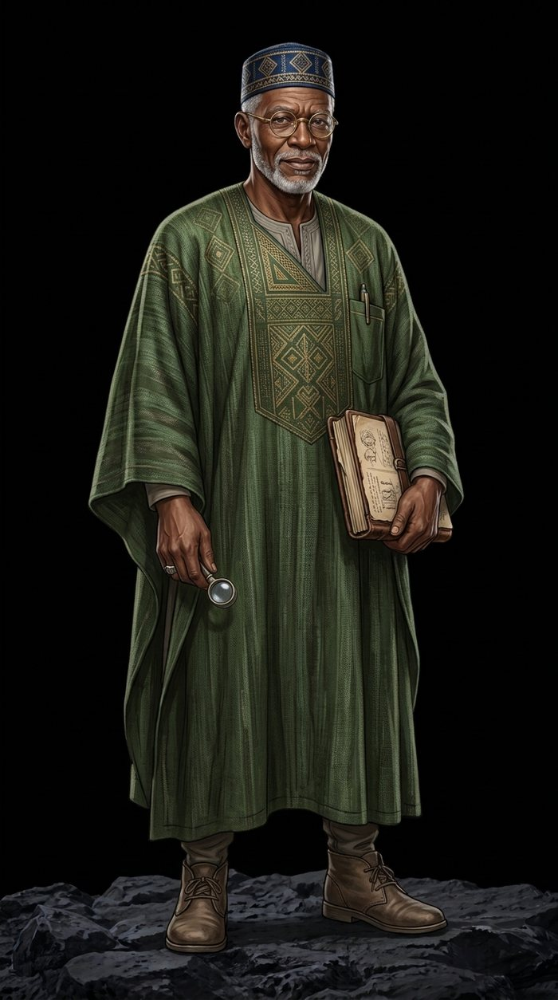
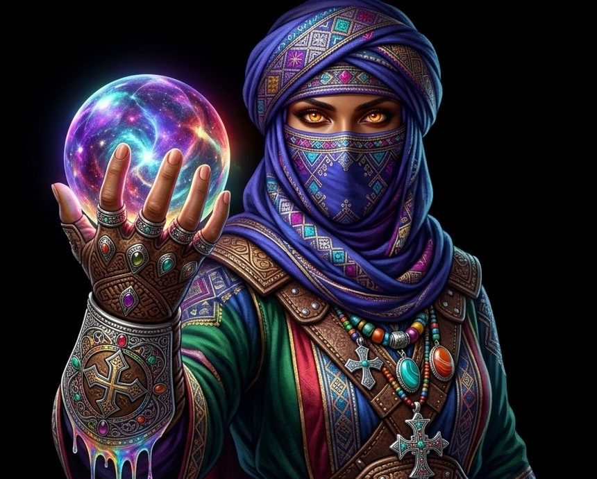
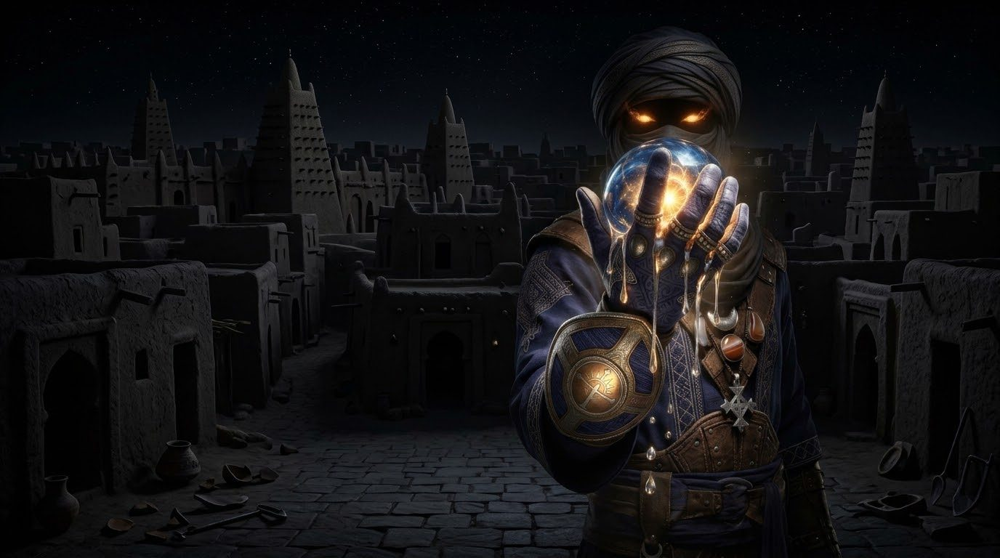

The Winds
of Kirina
The wind that crossed Kirina is still crossing.
Turn the pages with the arrows, the tabs or your keyboard ← →. · Back to the presentation
THE WINDS OF KIRINA
Chronicles of Timbuktu 2142
Concept, world and story created by
Nci Jean Talsim Konte
NJ Talsim
Compiled from the original development sessions: character design, sector geography,
faction design, campaign storyline, combat direction and teaser scripts.
What this volume contains
- The Pitch: the concept at a glance, the teaser and the ask
- The Complete Story: the whole storyline told as prose, from the Vanishing to Reunification
- The world: history, the Fracture, and Timbuktu in 2142
- The four powers: J-Sector, Faya, MLI-Z and the Kirina Resistance Front
- Character dossiers for Khalil, Awa, Dusé and Dr. Amadou
- The full campaign: The Sahara Rebellion, from Prologue to the four endings
- Game systems, combat, the Echo Layer, Ascension and progression
- The Harmattan Royale multiplayer mode
- Art direction, the teaser storyboard and production notes
- Tales of the Sahel: songs, broadcasts, letters and a short story from inside the world
A note on fiction
Every faction, leader, creed and event in this book is invented. The world draws on the real history and culture of Mali (the Battle of Kirina, the scholars of Sankoré, Bogolanfini cloth, the salt caravans of the Sahara) and on the tensions of our own century. It does not depict any real person, movement or faith.
Pitch edition · Revision 3 · 2026.11
Table of Contents
Click any entry to open its page. Use the search box to find a character, place or mission.
The Wind Remembers
In the year 1235, on a plain called Kirina, a young king who had once been unable to walk faced the sorcerer-king of Sosso and won. From that victory grew the Mali Empire. Its scholars filled Timbuktu with manuscripts, and its salt and gold caravans crossed the Sahara. For three centuries it showed what a West African nation could build when its many peoples stood together.
Nine centuries later, the plain is still there. The wind that crosses it is the same Harmattan that scours Timbuktu's mud-brick walls each winter. The unity that Kirina stood for is gone. In 2142 the country is broken into pieces. Timbuktu is cut off from the motherland, and three powers fight over its body. They are corporate oligarchs, zealots and separatists, and each claims to be the only answer.
The Winds of Kirina is a story about putting the pieces back together. Two cousins go looking for a missing father and find a nation instead. Khalil is a desert scout who keeps his face behind his turban. Awa is a tech-shaman who weaves the old mud-cloth patterns into living code. They do not set out to be heroes. The road through the Spires, the Grid and the Borderlands changes them, and by the end the choice of what Mali becomes is in the player's hands.
This volume is both a story bible and a design document. It records the world, the people and the history, and it explains how all of it works as a game: an open-world action-RPG where every path is chosen and every choice costs something.
How to Read This Tiira
The book opens with the pitch and the complete story, then eight parts and a set of appendices. Each type of passage has its own look.
Passages like this one are in-world narrative: scenes, voices and fragments from inside Timbuktu in 2142.
Amber boxes give world facts: history, places and culture.
Red boxes mark escalation, failure states and the cost of choices.
Purple boxes carry intercepted transmissions and hacker commentary.
| Part | Title | Covers |
|---|---|---|
| — | The Pitch | Logline, why now, the player experience, cast, scope and the ask |
| — | The Complete Story | The full storyline as prose, following the canonical path |
| I | The World Before | Mali's golden age, the Fracture of 2092, Timbuktu in 2142 |
| II | The Powers | J-Sector, Faya, MLI-Z, the Kirina Resistance Front and minor groups |
| III | The Operatives | Khalil, Awa, Dusé, Dr. Amadou and dossiers for the supporting cast |
| IV | The Sahara Rebellion | The full campaign and its two interludes, from the Vanishing to the Siege of Timbuktu, and all four endings in full |
| V | Systems of Play | Exploration, the Echo Layer, combat, Ascension, Dusé as the third hero, progression, choice |
| VI | Harmattan Royale | The multiplayer battle-royale mode |
| VII | Art & Production | Visual direction, materials and costume, the teaser storyboard, audio, roadmap |
| VIII | Tales of the Sahel | In-world songs, speeches, broadcasts, letters, notebooks and a short story |
| — | Appendices | Glossary, timeline, index of names, pronunciation, revision history, how names work |
Spoiler blocks
Major story reveals are folded inside blocks like this. Open them when you're ready.
The Winds of Kirina
Two cousins search a divided Timbuktu for a missing father, and the trail leads them to the fight that makes Mali whole again.
The Story in One Page
Why Kirina, Why Now
The Player Experience
Characters Who Carry It
Scope, Platforms and Business
The Ask
At a Glance
An open-world action-RPG set in Timbuktu in 2142, built on the history of Mali.
Logline. In 2142 Timbuktu has been cut off from the rest of Mali for fifty years, carved up by oligarchs, zealots and separatists. When the scholar who keeps the resistance alive disappears, his son and niece go after him. Following his trail across the city and the desert, they end up leading the uprising that reunites the country.
- Title
- The Winds of Kirina: Chronicles of Timbuktu 2142
- Genre
- Open-world action-RPG with first- and third-person shooter combat
- Platforms
- PC and current-generation consoles
- Campaign
- The Sahara Rebellion: single-player, branching, three playable heroes: Khalil and Awa throughout, Dusé joining the swap from Interlude II for the last act
- Multiplayer
- Harmattan Royale: 60 players, squads of three
- Target rating
- PEGI 16 / USK 16 (ESRB M): heavy, weighty combat without dismemberment or lingering gore. Atrocities stay off-screen, shown only through aftermath, testimony and systems
- Languages
- English and French at launch; Bambara subtitles a stated goal
- Creator
- NJ Talsim
Audience
Adult players of story-led action games and shooters who want a world with a real place and history behind it. A second core audience is the West African diaspora and Francophone players, for whom Mali is family history and not an exotic backdrop.
Where it sits
It has the weight and intensity of modern shooter campaigns and the freedom of open-world action-RPGs. Like the best games rooted in real history, it is specific about its culture: the streets, cloth, music and stories all come from one place.
Mud-brick Timbuktu with circuitry in its walls, heavy gunplay, an investigation that asks you to read the city, and choices that each close off something else.
The Story in One Page
A family looks for one man and finds a country.
Dr. Amadou is seventy. He fought as a boy soldier in the Fracture of 2092, the coup that broke Mali and cut Timbuktu away from Bamako. Afterwards he became a historian, a cryptographer, and the founder of the Kirina Resistance Front. One night in 2142 he leaves the Well of Sankoré to find a power source that could free the city from the grid its rulers sell by the hour. He does not come back.
His son Khalil, a desert scout who keeps his face behind his turban, and his niece Awa, a tech-shaman who weaves Bogolan patterns into code, find his vault empty. He has left them bypass keys and a letter written in mud-cloth cipher. Decoding it takes them up to the Bubble, a floating archive from the city's golden decades, where they find a first, unstable Echo Seed and learn that the trail runs through the Faya Sector.
Faya is ruled by the zealots of the Codified Word, who burn manuscripts and ban music. The cousins overload the Spire of the Codified Word and take down Marshal Kessar Vohl, and they watch a quarter start to sing again. The data link Vohl guarded points underground, so they take the Foggara, the old water tunnels, into J-Sector.
In J-Sector the oligarchs of Chairman Lassana Vey own the water, the power and the people's working hours. There the cousins meet Dusé, a hacker who is only a voice and a violet glyph on their screens. Together they attack the Broadcast Tower that keeps Timbuktu blind and deaf. The alarms go off. Sentries close the ground and jets fill the sky, and the cousins fight their way out through an air raid. They take back a power core from the Generation Hall so the lights come on in the workers' quarters, and then they learn the truth: Amadou is alive, held in Vey's Azure Citadel and forced to unlock something called the Kirina Core.
Before the final push Dusé shows his face for the first time and steps out from behind his relays to fight beside them. In the Borderlands the cousins don't fight Commandant Teyr. They make a deal with him: Tenzar gets autonomy inside a reunited Mali in return for fighters and desert roads. At Kirina Deep they get to the Core before the Syndicate, and it lets them Ascend at full power.
Then comes the siege. Caravans and skiffs move on the city while Dusé takes apart its defences from inside. The three of them break into the Citadel, free Amadou and face Vey. They ignite the Core and broadcast to Bamako. When the answer comes it is the voice of the nation. Timbuktu rejoins Mali, elections are announced, and the old man walks home through streets with music in them again.
Why Kirina, Why Now
A great story that games have barely touched.
An empty space on the map
Big-budget games have been to feudal Japan, Viking Scandinavia, ancient Egypt and Greece, the American frontier and most of Europe's wars. West Africa and the Sahel are almost missing. When the region appears at all, it is usually a level, a desert backdrop or a mercenary contract. Very few large productions have let players live in a Sahelian city, learn its streets and care what happens to it. We think that gap is the clearest opening in the genre.
Mythology nobody has used
Mali has the material a franchise needs. The Battle of Kirina, around 1235, is a founding legend as strong as any: Sundiata Keita, a boy who could not walk, grows up to defeat a sorcerer-king and unite the Manding peoples into an empire. A century later Mansa Musa's pilgrimage put Mali on the world's maps. Timbuktu became a city of scholars, and the manuscripts of Sankoré, many of them saved by families who hid them for generations, are a story of people protecting knowledge at real risk. Griots still sing the epic today. All of this is old, documented, and very rarely seen in games.
A theme with weight
The game is about a broken country being put back together. The name Kirina is the promise: a battle that turned rival peoples into one nation. That gives the action a moral purpose that players understand at once, and it holds across cultures. Everyone knows what it means for a family or a country to be divided.
Players want specific worlds
In recent years the games people remember have often been set in a particular place and time, with its own language, food, music and politics. Players have shown they will learn unfamiliar names and customs when a game treats them with care. A world built from Bogolan cloth, banco walls, kora and desert blues stands out on a crowded storefront.
Why this treatment works
Setting the story in 2142 gives the game freedom without disrespect. Every faction, leader and creed is invented, so no real group, faith or politician is made a villain, and the history sits underneath as foundation. The Echo Layer brings the past into the present: players walk through holographic libraries and markets laid over the ruins they are fighting in. Players learn the history by playing, without lectures.
We will build this with Malian historians, griots, artists and musicians, paid and credited, with sign-off on cultural content. Authenticity is part of the production plan from the start.
The Player Experience
Twenty minutes in one Faya quarter, from first clue to the return of music.
- 0:00 Khalil crosses the Market of Silence at dusk. A Lantern Child tells him the Wardens moved prisoners through a dyer's yard last night. He switches on Echo Sight: the wall glows with the outline of a 16th-century library, and a door that should not exist. A hacked water meter logs four heavy footsteps at 02:40.
- 0:05 Swap to Awa. She climbs the toron beams to a rooftop, rune-tags the patrol, and slips through a broadcast spire's blind arc. A guard turns early. She takes him down quietly with the red blade, then hides the body in a dye vat. The Clue Board links two tiles and a cell door shows up on the map.
- 0:10 The cell is empty, and an alarm horn sounds. Back to Khalil. The fight is loud and heavy: banco cover breaks apart under rifle fire, a sparking conduit drops two plated Wardens, and a breached iron door buckles inward. His spear pins a lance-bearer to a pillar and comes back to his hand on its magnetic tether.
- 0:15 The Resonance bar has filled from Echo hacks, team combos and keeping civilians out of the crossfire. Khalil Ascends: his eyes turn amber and an Echo orb forms in his palm. For a short window the Wind of Kirina sweeps the courtyard clear.
- 0:18 The spire's orange lines go dark. The quarter is liberated. Doors open, someone brings out a ngoni, and the crowd starts to put coloured headscarves back on. The Accord meter moves. A choice follows: give the freed prisoners to the KRF or let the Griot Circle hide them. Each option closes the other.
Four design pillars
Read the city
Investigation is the engine. Clues come from hacked machines, Bogolan ruins and informants who may lie. No marker points at the answer.
Every shot has weight
Heavy recoil, armor that deforms, walls that break. Fights are short, brutal and physical, and stealth is always a real alternative.
Choices cost something
The player picks one option and loses the others. Allies, gear, alert states and endings all follow from what was given up.
Liberation you can see
Freed districts change: replastered walls, returning colour and music, safehouses, new routes. The map shows the player's history.
Characters Who Carry It
A family at the centre, and a nation around it.
Khalil Playable
Hook: A quiet desert scout with a cybernetic left arm and a spear that always comes back, looking for the father he never quite understood.
Arc: He starts the game trying to save one man and ends it carrying a city's hopes. Son of a Bambara father and a Tamasheq mother, he learns he can stand between the river and the desert.
Awa Playable
Hook: The "Ghost of the Sahel", a tech-shaman who hacks spires by weaving Bogolan runes and settles arguments with a precision rifle.
Arc: Sharp and impatient, she learns the patterns she uses as weapons are also memory. By the end she is fighting to keep a culture alive as much as to win a war.

Dusé Playable from Interlude II
Hook: Through Act II he is only a voice, a violet glyph and an unseen hand turning the enemy's turrets around. Then he walks in, and the player gets his tablet and his shock baton.
Arc: A hacker who has fought alone in the city's systems for years. When he finally meets the cousins in person, he trades safety for trust, the player sees his face for the first time, and he fights the last act in person as the third hero.

Dr. Amadou The missing father
Hook: A historian, codebreaker and founder of the resistance who disappears in the first scene and leaves a letter in cipher.
Arc: Absent but present everywhere through his clues. He is found alive in the enemy's tower, and his return is the emotional payoff of reunification.
The opposition. Marshal Kessar Vohl, commander of the Wardens of the Spire, is the first great wall: a disciplined, augmented former army officer who stages his authority like a sermon. Behind everything stands Chairman Lassana Vey of J-Sector, polished and reasonable in tone, who believes people cannot govern themselves and has built a city to prove it. Between them, Commandant Assalan Teyr of the separatist Free State of Tenzar has real grievances and can become an enemy or an ally.
Scope, Platforms and Business
A premium campaign first, with a fair multiplayer mode built alongside it.
The shape of the product
The Sahara Rebellion
Prologue, three acts and two interludes, four endings. Estimated 25 to 30 hours on the main path, 50 or more with side quests and Echo sites.
The open world
Timbuktu on three layers (Foggara tunnels, banco streets, floating bastions), the Kabara river port, the Borderlands and the shifting Erg of Echoes. Dense rather than sprawling, with something to read on every street.
Harmattan Royale
A separate 8 km² map, 60 players, matches of about 25 minutes. Live seasons of roughly ten weeks themed on Malian history and the Sahelian year.
Monetisation
The campaign is a premium, full-price release with no microtransactions. Expansions, if any, are story content. Harmattan Royale earns from cosmetics only: skins, cloth patterns and a paid season track next to a free one. Nothing that changes a match can be bought, paid content returns to the shop at a fixed price after six months, and the Royale team begins after the campaign reaches alpha so it never takes resources from the story. No sacred or family Bogolan motif is ever sold; store patterns are licensed from living artists, who are paid.
Production phases and team
| Phase | Goal | Team (estimate) | Duration (estimate) |
|---|---|---|---|
| Proof of concept | Greybox Faya district; spear-link, rune-weaving and Echo Sight feel right; engine and tools chosen | 6–10 core staff plus cultural advisors | 4–6 months |
| Vertical slice | Prologue, the Bubble and one Faya district at final quality: one full firefight, one Echo puzzle, one exclusive choice, one brief and unstable taste of Ascension, music returning on liberation | 30–45, with outsourced art support | 9–12 months |
| Full production | All acts and endings, content complete, localisation, cultural review; Royale team starts after alpha | 120–180 internal, plus external art, audio and QA partners | 30–36 months |
Team sizes and durations are planning estimates for discussion with a partner. They are not quotes. They will be fixed after the proof of concept, once engine, tools and partner capacity are known.
The Ask
What it will take to get from this book to a playable Timbuktu.
What we are looking for
A publishing partner
A publisher who wants a new original IP with a clear identity, and who will back a premium campaign without pushing it toward a live-service model.
Vertical slice funding
Funding for the proof of concept and the vertical slice, the stage that will show whether the game works in your hands.
Co-development and art partners
Studios with open-world, combat and environment experience to grow the core team, and art partners who can build banco, cloth and circuitry to a high standard.
Cultural partners in Mali
Historians, manuscript libraries, griots, Bogolan artisans and musicians, paid and credited, with real sign-off on cultural content.
Milestones a partner would fund
- Proof of concept: greybox Faya district, core traversal, spear-link, rune-weaving and one Echo Sight investigation, playable start to finish.
- Cultural framework: consultation panel formed, motif and music guidelines agreed, first review passed.
- Vertical slice: Prologue, the Bubble and one liberated district at final quality, with the full combat loop and an exclusive choice.
- Go / no-go review: slice playtested, full-production budget and schedule fixed with the partner.
The rest of this Tiira holds the detail behind the pitch: the setting in Part I · The World Before, the factions in Part II · The Powers, the cast in Part III · The Operatives, the full campaign in Part IV · The Sahara Rebellion, mechanics in Part V · Systems of Play, the multiplayer mode in Part VI · Harmattan Royale, and the production plan in Part VII · Art & Production.
I wrote this world because I wanted to play a game set in Mali, made with the people who keep its history. The pieces are here: a city, a family, a war worth winning and a country waiting at the end of it. What it needs now is a team. If you can see Timbuktu in this book, I would like to show you the rest.
— NJ Talsim
The Sahara Rebellion
"The wind never asks the dune for permission. It moves it one grain at a time, all night, and in the morning the dune is standing somewhere else."
Nana Kadia, sung at the Well of Sankoré
I. The Spires
II. The Open Road
III. The Grid
IV. The Gathering Storm
V. The Winds
Epilogue
The Vanishing
The night the Well of Sankoré lost its oldest voice.
Dr. Amadou stopped at his son's bunk a little after the generators changed cycle. Khalil had come in from three days on the eastern rim with sand in his teeth and the shape of a Syndicate sensor stake still drawn on the back of his hand in charcoal. He was asleep before his boots were off. He half woke to find his father sitting on the edge of the cot, a lamp turned low, the green of his boubou almost black in that light.
"I am going up for a day or two," Amadou said. "Someone has to hold the Well."
Khalil said something. Later he could never remember what. Something about the morning, about going with him after he had slept. His father touched the left arm, the metal one, where it met the shoulder, the way he used to touch the boy's head. Then the lamp went away down the corridor and Khalil slept again. He would replay that minute every day for the rest of the year.
Under the Sankoré precinct the air smelled of damp clay, solder and shea smoke. In the mess hall someone was playing the ngoni badly, and nobody told him to stop, because in the north of the city music had been banned and every wrong note down here was a small act of defiance. A day passed. Then the evening of a second day.
Awa came down the ramp with two days of rooftop dust in her short locs. She had been lying on the parapets above the river watching Syndicate drones circle Kabara, and she was hungry and short-tempered and wanted to tell her uncle what she had seen. She found Khalil sitting on an ammunition crate outside Amadou's door with his turban loose around his neck. She knew something was wrong from that alone. Her cousin covered his face in front of everyone, even family.
"He said one day," Khalil said. "That was yesterday at dusk."
"Uncle says a lot of things. Half of them in verse." She tried the door, and it opened. Amadou never left it open.
The vault was a cell cut into the old foundations: a cot, a desk, shelves of manuscript sleeves, a cracked holo-slate wiped clean. On the wall where his field map had hung there were four pin holes and a paler rectangle of clay. Khalil dragged the cot aside. In a niche beneath it, on a strip of indigo cloth, lay three bypass keys of brass and glass, each the length of a finger. Under them was a folded sheet of cotton paper covered in black and ochre marks.
Awa That's Bogolan.
Khalil That's a letter.
Awa looked at the keys, then at him. "You were here. He came to you, didn't he. And you let him go." She heard it as she said it and wished it back at once. Khalil only nodded, as if she had told him the time.
Behind them the ngoni stopped. Colonel Mariam Diarra stood in the doorway in her command jacket and looked at the empty wall for a long while.
"He went for it," she said. "The old fool went for it alone."
The Letter
A father's handwriting, hidden in a cloth older than the empire.
The keys were a month of light. For twenty years Amadou had made them by hand, small liars that told a J-Sector meter it was reading zero while current flowed down into the Well. Leaving three behind meant keep the lamps burning while I'm gone. The Letter was harder. He had written it in the cipher he had been building half his life out of mud-cloth motifs, and he had taught it to his son and his niece in pieces, years apart. Khalil knew the river signs. Awa knew the dyer's marks her mother had painted. Neither of them could read it alone.
They sat on the floor of the vault with the cloth spread between them, and Awa's gauntlet threw the grid of motifs onto the wall like a slow loom turning. Black meant a thing done. Ochre meant a thing still to do. Three motifs belonged to nobody's memory. Khalil put his left hand on the wall, and the circuitry buried in the banco answered; the room went the colour of old paper, and Echo Sight showed them a ghost of Amadou pacing, unpinning his map, wiping the slate, and turning, just before he faded, to look straight at them.
The missing motifs sent them out into the city. One was on a Sun Stele of the east rim that had drawn double load the night Amadou left. One was in a merchant's salt ledger at the Azalai camp. The last was on the Weeping Wall, in a collapsed dyers' yard on the eastern edge of the old city, and Awa stood in front of it for a long time before she raised her gauntlet. It was the yard where she was born. Wardens had burned it when she was nine. Her mother's hand was still on the wall under the soot, the zigzag chain in its band of seven.
Nana Kadia gave them the rest at the Well that night, between two verses, as if it were nothing.
Khalil, Awa, if you are reading the cloth, then I am late, and you were right to come looking. Do not waste time being angry with me. Be angry with the dark.
You will remember, Awa, the story your grandmother told about the pearl that floats without a string. Begin there. Khalil, the way up is the way your mother taught you to find water: follow the cold air.
Khalil, you did not fail me by staying. I asked you to stay. Hold the Well, and hold your cousin, and let her hold you.
If I do not come back, do not finish my work for me. Finish it for the people sleeping above us, and for the ones in Bamako who have waited fifty years for a signal. Kirina was a field where the pieces came together. Make another one.
— A.
"The pearl that floats," Nana Kadia said, turning her good eye up toward the vault ceiling, "is hanging over your heads, children. It has been there since before your fathers were born."
The Bubble. The Aerostat Archive of Sankoré, a sphere of glass and mud-brick adrift above the precinct, which the city had stopped looking at decades ago. Diarra would not give them a squad. She could not spare one, and she said so. Khalil tied his turban, nine turns, the way his mother taught him. Awa packed the three keys in her gear and did not ask whether he was ready.
"He told me to stay," Khalil said at the foot of the ramp.
"He told me to study. I didn't listen to him either." She went up first. "We'll find him, and you can apologise for both of us."
The Pearl Without a String
Four hundred metres above Sankoré, a library that remembers everything.
From the street the Bubble looked like a second moon that never set. Its mooring cables had been cut during the Fracture, and ever since it had drifted on its own levitation field, fed by the five Sun Steles on the rim of the precinct. Nobody had gone up in forty years. The way up was the way Amadou had found: the steles turned toward the sun in the order the Weeping Wall gave them, and one by one the old floating platforms rose out of the alleys like stepping stones. They climbed at dusk, when the Faya watch-posts on the north edge were facing the broadcast and the Harmattan dust dimmed the light. Khalil's spear crossed the gaps first and pulled him after it on its tether. The last platform was dead. Awa knelt on its cracked core and wove a rune, and the Bubble lowered a ramp of light to meet them.
Inside, the air was cold. Khalil laid his hand on the central column and the Echo poured out of it. Sixteenth-century scholars in white boubous sat in circles around their teachers. A boy ground charcoal for ink. Somewhere a voice was reading a treatise on the stars and another was arguing a point of law, and the shelves rebuilt themselves out of light, rank above rank, more books than either of them had known existed.
"They burned this," Awa said quietly. "In the north, last month. This one."
Amadou had lived up here for nine days. They found his bedroll in the observatory ring, a brass teapot gone to crust, and a hundred pages of notes pinned to the glass. He called the thing he was looking for the Core, and in the margins, Sundiata's lamp. A survey map, torn in half, ran its cables down from the Bubble into the old city and stopped at a circle marked Relay S-1. The circle sat under the Spire of the Codified Word. One drive had been wiped by hand.
Beside the bedroll was a small brass cradle, and in it a sphere no larger than a date stone, faintly amber, warm as skin. Amadou's note under it read: An Echo Seed. A fragment only. Do not hold it long.
They met the Warden patrol halfway down the lattice. Six of them on the platforms below, rifles up, the noon sun on their tan plate. Khalil had the Seed in his left fist without remembering he had taken it. It opened.
His eyes burned amber. Light pooled in his palm. For four seconds he could see the wind, every current of it moving across the rooftops, and the spear left his hand riding one of those currents and took two Wardens off the platform before the tether pulled it home. He heard, inside his own head, a griot singing a battle eight hundred years old.
Then the Seed cracked like a dropped lamp. He went down on one knee with blood running from his nose, and Awa's rifle finished what he had started.
Awa What was that?
Khalil I don't know. He knew.
The husk went dark in his pocket. He kept it. On the glass above, the orange circuits of the northern spires were waking for the evening recitation, and the Word was starting up over the rooftops, one calm voice on every tower. Amadou's half-map pointed into it.
"Faya," Awa said. "He walked into Faya."
The City of One Book
In the old heart of learning, the walls have been washed clean of everything they used to say.
They crossed into the Faya Sector at dawn, through a checkpoint built inside the gate of a mosque school. Two Wardens of the Spire scanned their papers. Every strap on their plate was cut to the same length and every rifle sat at the same angle, and neither man raised his voice above a murmur. Above them the transmission spire hummed, and from its crown the Codified Word poured out over the city, calm and endless, in a voice built from the recordings of a dead man.
The alleys were clean. That frightened Awa first. There were no radios, no children chasing goats, no ngoni. Every door was painted one flat colour. The old names of the streets had been chiselled off the lintels and replaced with block letters. In a courtyard a crew of men was pressure-washing a wall, and under the spray a Bogolan mural was dying, a crocodile, a river, a line of dancers, the ochre running into the gutter like something bled out.
A woman passed them in plain grey with a girl of nine at her side. The girl looked up at Awa's armour, at the black and bronze mud-cloth patterns over the plates, and her eyes went wide. Her mother jerked her hand, and they were gone. A minute later a Warden stopped Awa and asked her, very politely, why she was wearing forbidden things.
Khalil answered for her. He kept his face behind the turban and his left hand behind his back, and he said the words the checkpoint had taught him. The Warden nodded and moved on. Awa's jaw was set so hard it clicked.
"Don't," Khalil said under his breath.
"I'm not doing anything."
"You're doing it with your face."
At the Burned Library Courtyard last week's smoke was still in the stones. Ash lay against the walls in small grey dunes. In the middle of it a boy was going through the cinders on his knees, and every scrap that still had writing on it he folded and pushed inside his shirt. He saw them, decided they weren't Wardens, and ran.
"One of Moussa's," Awa whispered. "The Lantern kids."
That night they slept in the safehouse Amadou had kept in the weavers' lanes, two rooms with a loom, a sleeping mat and a steel drawer set into the wall that no rune or crowbar would open. Through the shutters they could hear the noon rules being repeated for the night: no woman walks unescorted after the noon broadcast; girls leave school at twelve; children who report on their families will be rewarded. Order in the Faya Sector was kept less by shouting than by people learning to listen to each other through the walls.
Awa sat by the loom with her mother's three surviving motifs drawn on her palm in charcoal, the way she used to as a child when she was afraid.
Awa I want to burn their spire down tonight.
Khalil I know.
Awa You're supposed to tell me it's a bad idea.
Khalil It's a bad idea tonight. Give me a week.
She laughed despite herself, then turned her face to the wall. He sat with his back against hers until she slept, the way they had in the Well when the drones came low and she was nine and new and would not cry in front of anyone.
Operation Disruptor
Faya's power has one root. Cut it and every shield in the sector goes dark.
The week became three. They freed the weavers from the forced-labour hall where they stitched plain cloth for the Wardens, and the weavers gave them a route under the great square through the dye pits and an old drain. Moussa found them before they could find him: eleven, quick, cheeky, with a hand-cranked lamp on a string around his neck. He idolised Awa on sight and mocked Khalil's turban within the minute. On the night of the curfew they walked twelve of his Lantern Children past the line to the Sankoré edge, and every rooftop on the route had a child on it whistling the patrols in a code only they understood.
"You use children as lookouts," Khalil said to Awa afterwards, carefully.
"They use us," Moussa said from the roof above them. "We were here first."
The hardest gain was a man. Sergeant Siaka Konaté of the Wardens had a daughter, Ramata, drafted at ten as a listener to report on her own family. On their third meeting, in the back of a dyer's shop, he brought patrol schedules, a Warden uniform and the names of men in his unit who no longer believed what the spires said. He would not fight beside them. He would stand his men down when it mattered. That was all he could offer, and it was everything.
Awa built the disruptor in the safehouse from one of her uncle's bypass keys, a salvaged Sun Stele cell and a strip of her own Bogolan cloth wound around the casing, a woven rune that spoke to the old grid in the language it was born in. Once in place, it would ask Relay S-1 for everything at once.
They went in through the dye pits disguised as cloth carriers, and the plant happened with nobody watching. Awa pressed the casing against the foot of the Spire of the Codified Word. Rune by rune, the cloth caught light: black, then bronze, then white.
For one breath nothing happened. Then the orange circuit lines running up the tower turned the colour of a forge and the whole Spire groaned like a ship in a storm. The amber shields over the square flickered and fell in sheets of static that crawled across the paving and died. The Word stopped in the middle of a verse.
In the sudden quiet, everyone in the square could hear the city breathing. Then every Warden in it turned toward them.
Khalil went up the outside of the mosque school with his metal hand sunk into the banco. The first marksman lay behind a parapet with his eye to the scope, and the spear went through his back plate and pinned him to the clay. Khalil tore it free and threw again, a blue streak across the square into the second nest's firing slit, and the tether snapped it home, hot and humming in his palm. Below him the heavy squad came on in step, rotary guns spinning up. Awa dropped behind a fountain that was coming apart under fire and laid her gauntlet flat on the stones. The pattern ran out of her hand like ink in water, found the charge docks in their backs, and the whole squad locked mid-stride and toppled, one by one, two hundred kilos of plate at a time. Sergeant Konaté's unit, on the east side of the square, lowered their rifles and did not raise them again.
When the last sniper fell, Khalil dropped off the roof beside her, and they fought the second wave back to back in the middle of the square, red blade low, blue spear high. Then the great door of the Spire opened, and a single heavy footstep rang on the stair.
The Marshal and the Key
A soldier of the old army who traded his country for a book that told him he was right.
Marshal Kessar Vohl fought them in the Hall of Recitation, a round chamber at the heart of the Spire with three tiers of balconies and walls that had once held shelves and now held speaker grilles. He came down from the dais behind a shield gauntlet with a rotary cannon on his arm, and his honour guard fired from the balconies on his word.
"I served the Republic for twenty years," he called across the hall, almost gently. "I watched it sell itself to bankers in a single night. The Word does not sell. The Word does not break."
Awa cleared the balconies with her long rifle, one shot, one Warden. Khalil drew the cannon until it glowed and coughed and seized. Then Vohl patched himself into the grilles, and every verse he spoke came out of the walls as a blow. His plate knitted itself whole again while the verse played.
"Your father read too many books," the walls said in Vohl's voice. "Look where it led him."
Awa wove counter-runes into the grille nodes, one, two, three, and the voice tore into static. Khalil pinned a live conduit to the dais with his spear and the current ran up through the Marshal's legs. Vohl dropped the cannon then, drew a glaive as long as a man, and charged. Each sweep took a pillar down. On the overswing his back opened, a ridge of coolant ducts along the spine, and Khalil threw everything he had into it. The ridge burst white. Vohl's augmented legs locked, and he fell forward onto the lectern and broke it in half.
He knelt in the steam and looked up at Awa. She gave him nothing. "Then who," he asked her, honestly confused, "will tell them what to do?"
Diarra's fighters took him alive. The Front did not shoot prisoners, and the Marshal would answer to a people's tribunal. On his belt, beside the command seal, hung a ring of keys, and one of them was old brass and far too small for any door in the Spire. In his command post they found the data link: the Bright Decades archive of Relay S-1, the other half of Amadou's map.
The next morning somebody climbed the dead Spire and hung a strip of Bogolan from its crown. Music came back to the Market of Silence before noon. In the square a young Warden named Oumar Sylla unwrapped his face in front of the crowd, the first of them to do it, and stood there shaking with his hands open. The others who laid down their arms began to call themselves the Unveiled. The sector had no power, and nobody cared yet.
The data link opened on the safehouse floor at midnight. It showed what Amadou had been tracing: the ancient water channels of the Foggara running south from Faya under the whole city, and one of them ending directly beneath the Generation Hall in J-Sector. Awa turned the brass key over in her fingers and looked at the steel drawer in the wall.
"It might open now," she said.
"It might be watched now." Khalil looked south, past the dead spires, to where the stacks of J-Sector glowed cyan against the night. "If we go under, they never see us coming." She put the key in her pocket, and the drawer stayed shut.
Players who choose the Path of the Drawer open it with Vohl's key and find Amadou's satellite-linked phone, with coordinates and a relay handle. They enter J-Sector by river at Kabara, with Ferrymen help and every checkpoint already watching for them.
Ash and Salt
Before the cousins go under, the city wants to know what kind of liberators they are.
Diarra gave them a month to make the Foggara ready. The Griot Circle had to map the turns, the Lantern Children had to chalk them, and the north, free and dark, had to eat. So for a month the cousins worked the open road.
Nana Kadia wanted the Burned Library rebuilt in the Echo. She took them to the courtyard where the ash still lay in drifts and set them to counting it. Every scan of Khalil's hand over the scorched floor brought back a title, an author, a catalogue mark. Among her volunteers was a quiet former Warden corporal named Moctar Kané who worked harder than anyone, and when Khalil turned Echo Sight on the courtyard the ghost that lit the last pyre had Moctar's face.
Moctar I had a list. Every book on it had a number. I burned them in order. I can tell you every number.
Nana Kadia Then you are the only catalogue we have left. Sit. Recite.
Awa told the volunteers the truth, because she would not build a library on a lie, and half of them walked out. Moctar stayed and worked nights alone, reciting numbers into the dark while the griots wrote them down. When the shelves were raised there was one book left over, a bound copy of the Codified Word. The crowd wanted it burned. Nana Kadia had it shelved instead, labelled with the date of every pyre it had caused.
"A library that keeps only the books it likes," she told Awa, "is a smaller copy of the thing that burned it."
Then the salt road. The caravan master Amastan ag Tidit greeted Khalil in Tamasheq, because he had known his mother, and asked him to bring in a caravan three days late at the Well of Three Stones: forty camels, six sand-skiffs, two hundred slabs of Taoudenni salt. His skiff pilot, Tama, taught Khalil to read the dust streamers on the dune crests at sunset, which way the sand would walk in the night. Halfway out, the dunes had swallowed a Sun Stele. Awa dug it out with her hands, woke it with a rune, and the desert held still around them for one night. Echo Sight lit the ghost of a fourteenth-century camel train on the sand, and they followed it home through the dark.
At the Syndicate pump station the toll drone wanted a quarter of the salt. Khalil and Awa rode the last kilometre inside hollowed salt stacks while Tama complained loudly about a lame camel and Awa, folded into the dark with salt in her eyes, spoofed the scanner one heartbeat at a time. The drone logged nothing. The caravan came in at the city gate an hour ahead of the Harmattan front.
That night at the fire Amastan poured tea three times, the bitter one, the sweet one and the gentle one, and told Khalil about his mother as a girl, how she could find a foggara shaft by the cold air rising from it before any man in the camp. Khalil kept his face wrapped and said very little. Awa watched him listen and saw his shoulders come down for the first time since the vault.
Low Water and the Undercity
A river that keeps a list of its boats, and a road that runs under everything.
The north was dark and the Ferrymen of Kabara had lamp cells. Djénéba Nientao, river mother of the Ferrymen, ran them up from Mopti on three nights of low water, when the dry-season sandbars hid the pirogues from the patrol radar, and she wanted the cousins in her lead boat. On the first night they poled through the shallows with engines off while Syndicate skimmers swept the channel with search lamps. On the second, the river pirates of the reed islands stopped them at the bend, and their chief, Kassim the Heron, took a third of the medicine as his price and smiled as if he would remember it. On the third, Khalil went over the side in the dark, boarded the Syndicate guard barge and cut the cable boom across the old ferry crossing with nobody aboard ever knowing he was there.
Djénéba sat in the stern with her pole across her knees, talking under her breath to the water, the way her mother had and her grandmother before her. The Bozo say the Niger keeps a list of every boat it has carried. "Engines off," she murmured. "If the river wants us, it will take us quietly." The clinic in the Faya Sector stayed open. For a week there was light in the north again, a few lamps at a time.
Then the month was done, and Nana Kadia's apprentice came for them.
Her name was Sira. She was sixteen and had the old woman's voice already, low and sure. The way into the Foggara was a dry shaft in a courtyard behind the weavers' lanes, where cool air rose out of the ground. Khalil felt it on his face before he saw the opening and stood very still for a moment, because it was the exact thing his mother had taught him to look for, and his father had written it into the Letter.
Below the city the channels ran for kilometres, cut by hand centuries ago to carry water from the deep table to the gardens, and later wired and widened in the Bright Decades into an undercity nobody remembered building. The walls sweated. Water ran ankle-deep in some stretches and vanished in others. Sira walked in front and sang the turns half a verse before they reached them, the way her grandmother had taught her: left at the well of the cracked jar, down at the place where the teacher drowned. The songs were older than the tunnels' wiring and they were never wrong.
Moussa's Lantern Children ran ahead with chalk and left arrows on the clay in a code that changed every hundred metres. Their hand lamps bobbed in the dark like fireflies. One of the smallest fell asleep walking and Khalil carried her on his back for two hours, his metal arm under her knees, and she did not wake.
They walked for three days. On the second night, sitting on a dry ledge above the water, Awa asked him if he still read the Letter.
"Every night," he said. "I keep thinking it's a will."
"It isn't."
"You don't know that."
"I know him." She leaned her shoulder against his. "He wrote if I do not come back. He didn't write when. He's careful with words."
On the third day the channel narrowed and the ceiling began to hum, a deep, steady note that settled in the teeth. Moussa put his palm on the clay and grinned up at them in the lamplight.
"That's the Hall," he said. "Every light south of the river comes from up there."
A Voice in the Wires
Someone has been waiting for years for a person willing to stand in the open.
The maintenance drone came down the tunnel on its rail with its single eye sweeping cyan across the water, and the Lantern Children scattered into the side channels like fish. Khalil set his feet and raised the spear. Awa's rifle was already open on her shoulder. Then the eye turned violet. The drone stopped a metre from the spear point and lowered its tool arm in something close to a bow.
"Nobody has come up the Foggara under the Hall in eleven years," said a man's voice through the drone's speaker, crackling, warm, a little amused. "Either you are very lost, or you are Amadou's children. Please be the second one."
"Who are you?" Awa said.
"Tell me something only his family would know first. Quickly. There is a patrol on the gantry above you, and I have already turned off the floor sensor under your feet once."
Awa looked at Khalil. "He hums when he decodes," she said. "Off-key. Always the same song."
A pause, full of hiss. "Kaira. Badly. Yes." The violet eye blinked slowly. "You can call me Dusé."
They had heard the name. Everyone in the Well had heard it, or rather had seen the glyph: a small violet mark signed at the bottom of leaked water tariffs, on patrol schedules pinned to the walls of the Market of Silence, on six minutes of Generation Hall load reports that once appeared on every kiosk screen in Kabara. Amadou had called him our ghost in the wires and left messages for him in the Echo for years. He had never answered. Now he was a voice in a drone with a cracked casing, and he was guiding them up a ladder into a pump room under the Craft and Data Quarter.
J-Sector looked prosperous. That was the shock of it after Faya. The banco walls of the old artisan quarters still stood, braced with steel and threaded with cyan data lines that pulsed whenever a payment cleared. In the Textile Weaving Cluster women worked looms wired to quota counters. In the Metalwork District smiths hammered Syndicate armour plate and were paid in hour-tokens, one token for one hour of electricity at home. Water ran in open channels behind locked grilles. You could hear it everywhere and drink it nowhere.
"Your father came to me three weeks before he vanished. He found one of my relays and left a question on it, about the Bubble. I answered that one. I wish now I'd asked why."
In a dye-works cellar, with the drone perched on a vat like a heron, Dusé told them what he wanted. The neural blackout dampeners broken for good. The Board of Nine's records opened to the public, unedited. And a promise. "Whatever you take from J-Sector goes to the people. Not to the Front's war chest. I've watched one liberator become the next landlord before."
"And what are you?" Khalil asked. "A soldier?"
"I'm a key," Dusé said. "Keys open doors for whoever holds them. Be careful what you hold me for."
Three Plans on One Table
The Front had the people and the time for one of them.
Diarra came south through the Foggara herself, which she had not done in years, with her command jacket rolled in a waterproof sack and her knees complaining on every ladder. In the dye-works cellar the drone projected three targets onto a wet sheet of cloth, violet light on indigo.
The first was Data-Mining Cluster 7, where the Board kept its manifests: proof of the water theft and of what the dampeners did to people's sleep. The second was a Syndicate weapons convoy in the canyons south of Kabara. The third was the Kabara Dampener Spire, the southern node of the ring of towers that had jammed every signal between Timbuktu and Bamako since 2101.
"Hit one," Dusé said, "and the Syndicate hardens the other two within days. You won't get a second."
Diarra looked at the tower for a long time. "Fifty years," she said. "Bamako has had fifty years of silence from us. They don't know we're alive. They don't know Faya fell." She put her finger on it. "If we break the ring, the country hears us. Everything else is just a better way of losing slowly."
"It's the one that kills the most of us if it goes wrong," Khalil said.
"Yes."
Awa was already drawing the tower's resonator rings on the back of her hand in charcoal.
They chose Strategy Gamma, all of them, the whole squad. Diarra gave them six of the Front's best, and the first of the six to step forward was Sergeant Bourama Traoré, grey at the temples, who had taught Khalil to scout when he was twenty-one and still checked his water and his boots before every mission without asking. The youngest was Ténin Dembélé, nineteen, from the Well's signal workshop, who would carry Awa's rune-charges because she was the only one besides Awa who could arm them.
They crossed the salt flats east of Kabara on a moonless night under Dusé's camera loop, eight figures in a line, no lamps, the salt crust squeaking under their boots so loudly that Ténin started to laugh from nerves and Traoré put a hand on her shoulder until she stopped. Ahead, the Dampener Spire stood alone on the flats like a needle of black steel, ringed at three heights with resonators that hummed just below hearing. Khalil felt them in the metal of his arm. Awa said later that she felt them in her teeth, and in a dull pressure behind the eyes that she realised she had been carrying her whole life without a name for it.
Dusé Loop holds for nine more minutes. After that the cameras start seeing salt again.
Khalil Then let's not admire the architecture.
Dusé Spear. I'm touched. You read my notes.
They went up the lattice in two teams. Khalil climbed first with his metal hand locking onto the crossbars, the spear tethered to his back. Awa followed with Ténin, and at each ring the two of them knelt on the narrow gantry and pressed a rune-charge against the resonator housing, wove it live, and moved on. The flats fell away beneath them into grey. The first ring. The second. On the control deck at the top, Traoré's team held the hatch, and Dusé began to push a burst signal toward Bamako through the hole they were about to make.
Strategy Alpha sends Awa and Dusé into Cluster 7 to steal the Board's manifests and turn the city against Vey; Strategy Beta sends Khalil and Awa into the canyons to seize a weapons convoy and arm the Front for open siege. Each closes the other two for good.
The Ring Closes
The plan assumed silence. It did not get it.
The first alarm was soft, almost polite, a single tone from somewhere inside the control deck. Nobody ever learned what tripped it. The second alarm was everywhere at once.
Out on the flats the sentry pylons began to unfold from the salt, one after another in a wide circle around the Spire, each one rising out of a hidden pit and opening its head like a flower. Their search beams found each other and locked together into a fence of white light. Then the sky started to whine.
"Jets," Dusé said. For the first time his voice had no smile in it. "Two. No. Four. I can blind one. I cannot blind four."
"Finish the upload," Khalil said.
"If we finish the upload," Awa said, "we're still standing up here when they come round again."
"Then we run with it burning."
Ténin armed the last ring with her hands shaking and Awa's hands over hers. Awa wove the trigger. They came down the lattice faster than anyone should, half climbing and half falling, with the first pass of the fighters tearing past the tower so low that the downwash flattened them against the crossbars. Cannon fire walked up the base of the Spire in a line of sparks. When they hit the salt the bombing had started: runs every forty seconds, each one landing closer, each crater a hot white bowl that smelled of burned stone. The banco ruins of an old pump house were the only cover on the flats and they came apart around the team in slabs.
Behind them the Dampener Spire gave a long groan of metal, and the three resonator rings folded one into the next, and the hum that Awa had carried behind her eyes her whole life went out of the world. She stumbled. For a second she could not tell whether she was crying because of that or because of the noise.
"Signal's out," Dusé said. "A fragment. Not eleven seconds. Three. It'll have to be enough."
The sentry ring was tightening. Behind it came Syndicate troopers on foot. Dusé seized one pylon and swung its beam into its neighbour, and Khalil threw the spear into the base of a second and held the tether while the node overloaded in a blue burst that knocked him flat. The gap was four metres wide. They ran for it, carrying the wounded.
Traoré was hit at the edge of the gap. Shrapnel in the thigh, high, where a tourniquet would not hold. He sat down against the broken pylon as if he had chosen to, and checked the charge on his rifle.
Traoré Somebody has to keep the door. Go on, scout. Water. Boots.
Khalil I'm not leaving you on the salt.
Traoré You're not. I'm staying. That's different. Your father would know the difference.
Awa took Khalil by the cloak and pulled, and he let her. Behind them Traoré fired steadily into the light until the next bombing run walked over the pylon, and then there was no more firing. Ténin Dembélé died in the Foggara shaft two hours later with her head in Awa's lap, from a wound she had not mentioned to anyone. Of the six who crossed the flats, four came home.
Operation Lantern
The lights were going out in the north. The Front was going to take one back.
Three seconds reached Bamako. It was enough. Within a week a liaison officer was talking to Diarra over an encrypted line so thin it dropped every few minutes, and the first thing the national government sent through the hole was a pre-Fracture blueprint of the Generation Hall that showed a forgotten service shaft. The second thing was an apology for fifty years, which Diarra listened to without speaking. In the south the neural sleep-signal failed. People woke up and found they were angry. Over the city, Syndicate fighters now flew day and night.
Vey answered the way he always had. He switched off the north. In the old city the hospital generators ran on cooking oil, and the Well's reserve cells dropped below ten percent.
"Three days of oil at the clinic in Badjinde," Diarra said at the war table, a slab of Sankoré sandstone with J-Sector projected on it in cyan and the whole north in black. "After that we choose which machines stay on. I won't make that choice. So we take a core."
"Vey will know who took it," Awa said.
"That's the point. People need to see the lights come back on, and they need to see who did it."
Six power cores sat in the Generation Hall, each a three-tonne cylinder in a magnetic cradle. They needed one. They came up the forgotten service shaft from the Foggara, with Sira singing them to its foot and Moussa's Lanterns holding the tunnel behind them, and Khalil's breaching charge bent the blast door inward like wet cloth.
The noise came through first: turbines the size of granaries and a roar that ate the sound of gunfire. Then the gantry turret found them. It chewed the banco pillar by Awa's head down to the rebar. Khalil dropped behind a coolant tank and felt it ring under the hits, once, twice, until it split and white vapour rolled across the floor, and Awa vanished into it. A heartbeat later the turret's sensor head came off clean under a red blade and the gun spun on its mount firing into the ceiling. Sparks rained down. A conduit overhead began to hiss.
"Conduit. Left side. Spear it."
The spear went up in a cyan line and buried itself in the junction box. The conduit blew, and the four troopers coming down the stairs beneath it went down with it. Then the floor began to shake in a slow rhythm, and a Sentry Enforcer walked out of the smoke with its shoulder cannon spinning up. Behind a glass gallery high on the wall stood Major Idrissa Togola, whom his men called the Auditor because he billed them for every drone they lost, calmly directing the turrets.
Dusé took a turret from him. "Borrowing this," he said, and swung it into the Enforcer's flank. Awa's vent shot cracked open the coolant spine. Khalil's spear went into it, and the machine knelt like a camel and did not rise. In the core gallery the heat climbed every thirty seconds until Awa vented the coolant, and the magnetic cradles dragged at the spear's tether so hard Khalil's arm screamed in its sockets. Then the core was out of its cradle and on the loader, and they were backing toward the cargo lift under fire, and the lift needed ninety seconds to rise.
The Prisoner of the Citadel
The core was out. Then the control room showed them something they were not looking for.
Khalil held the lift doors while two Enforcers beat on them from the far side and the steel bowed inward with every hit. Awa plugged her gauntlet into the control console to find the extraction route. In the corner of the control room a shift engineer sat on the floor with his hands on his head, and when she glanced at him he pointed, without being asked, at the right screen. Through her gauntlet Dusé reached past the console into the Syndicate's own camera net, looking for patrols on the far side of the Foggara.
He found something else. The channel went quiet. Only the turbines were left, and under them, very faintly, a man humming off-key.
A white room high in the Azure Citadel. A thin old man sat at a table covered in Bogolan cloth, the patterns broken into code on a screen beside him. His glasses were cracked across one lens. His hands were steady. He was humming Kaira, badly.
Across the table a man in a pale grey suit poured two glasses of water and pushed one across.
Vey You found it, Doctor. Kirina Deep. I have the coordinates from your own notes. What I don't have is the key, and the Core will not wake for anyone but its keeper. Help me light this city properly. Nobody need buy power by the hour again.
Amadou You'll give them light and keep the switch.
Vey Someone has to keep the switch.
Dr. Amadou was alive. He had reached the Bubble, decoded the place where the Bright Decades hid the Core, and been taken by the Azure Syndicate on his way home. For weeks Chairman Lassana Vey had kept him in the Citadel because the Kirina Core would answer only to the man who knew its key, and Vey's dig teams were already moving into the desert.
The lift reached the top. Neither cousin moved.
"He's humming," Awa said. "He's still humming."
Khalil unwound the turban from his mouth. It was the first time she had seen his face in the open air since the vault, and it looked younger than she remembered, and very tired. "I read his letter every night for a month," he said, "and I thought I was reading a will."
"We go now. The Citadel is a kilometre from here."
"With what? Four of us and a stolen battery?" He looked at the core on its loader, humming to itself in its cradle. "He went to the desert for this. If we die on the Citadel steps, Vey gets both."
Awa said nothing for a long time. Then she pulled the cable out of the console and the white room went dark.
They brought the core home through the Foggara with Sira singing every turn, and the Front's engineers tied it into the old Sun Steles of the Sankoré rim. At dusk the next day the street lamps outside the Well came on one after another, all the way to the river, and the street filled with people who had not seen their own faces at night for weeks. Children played football under the lamps until after midnight because they could.
On the roof of the Well, Khalil took the dead husk of the Echo Seed out of his pocket and turned it in his metal fingers. For a moment, in the new light, he thought it was warm. Far to the south the Citadel stood white over the mud-brick city, and somewhere at the top of it a man who had taught them both to read was refusing, one off-key verse at a time, to give it the key.
The Gathering Storm
The north had its lights back. Its founder was alive. And the Chairman had decided the whole city would pay for both.
The core came home through the Foggara on a stolen loader frame, with the Lantern Children walking ahead of it holding their wind-up lamps like an honour guard. By three in the morning the KRF engineers had tied it into the old Sun Steles above the Sankoré precinct. At four the streets of the north lit up one after another, in the order the Bright Decades wiring remembered. People came out of their houses in nightclothes. Some of them had not seen their neighbours' faces after dark in two months. By sunrise there were boys playing football under the street lamps, because they could.
Khalil watched it from the roof of the Well and could not find the feeling he was supposed to have. Below him the city was celebrating. Behind his eyes, a thin old man sat at a white table and hummed.
Vey spoke at six. His face filled every public screen in J-Sector and the few Faya spires the KRF had not yet pulled down, calm and grey-suited, a glass of water at his elbow as if he had poured it for whoever was watching.
Vey "Last night a criminal group stole one sixth of this city's power. I will not punish the honest for it. The honest will be able to prove, from today, where they were at night."
By dusk the proof had a shape. Curfew fell with the sun. Drones swept every quarter in slow cyan fans and tagged anyone they found outside. Posters went up on the J-Sector walls with a turbaned silhouette and a pair of eyes, and a second one beside it: a slim figure in patterned armour, locs cut short, no face at all, because nobody had ever photographed one. The striking smiths of the Metalwork District lost their hour-tokens. Their streets went dark and stayed dark, and the forges went cold for the first time since the Fracture. Near the river, houses suspected of hiding KRF fighters burned while their owners were marched to the Ledger Cells. Every night the gunships came in low over the roofs, lower than before, because a dampener spire at Kabara had come down under their noses and the Syndicate had not forgiven the sky for it.
Colonel Mariam Diarra heard about Amadou in her office with the door shut. She listened to all of it without interrupting, then sat for a long time looking at the map on the wall.
Diarra "It stays inside this room. If the city learns he's alive, Vey learns we know. He'll dig faster."
Awa "He founded the Front for this city. It has a right to know what's been done to him."
Diarra "Rights are what we fight for. Secrets are how we survive until we win them."
They obeyed her for a day. Then Khalil went down to the mess hall and sat with Nana Kadia, and Awa found Moussa on the ramp with his chalk, and by evening the whole north knew. A new mark spread across the alley walls overnight: the Lantern Children's little flame, with the letter A drawn inside it. The north grew angrier and braver. Across the river, Vey moved two more drilling rigs into the Erg of Echoes, and the race to Kirina Deep began in earnest.
On the sandstone war table Diarra laid a pebble for every group that might stand beside the Front when it came to the Citadel. Some were already theirs. Most would have to be asked, and every one of them had paid for this war once already.
The Chalk Code
Each ally cost a night, and each night the Syndicate drill went deeper. One of them cost a child.
The coalition was built one favour at a time. Awa and Khalil broke a Syndicate seizure of the Well of Three Stones in the western Erg and handed it back to Amastan ag Tidit, who counted his camels twice and then promised the Azalai would carry fighters through any storm the KRF chose. They freed the Ferrymen's impounded pirogues from the Kabara pens on a moonless night, cutting chains under the noses of guards who were watching the sky for KRF gunfire and never thought to look at the water. In the Metalwork District they ran lamp cells and sacks of millet past the curfew drones and stood between the strike leader, Kankou Sidibé, and the snatch team sent to take her. Moctar Kané brought the Unveiled to the Well with their hands open and their rifles carried by the barrel, and Nana Kadia, who had watched men like them burn her books, put them in the same column as her singers. "Let them carry us," she said. "Let them hear what they burned."
Then a captain from Bamako came upriver in the bottom of a Ferryman's boat. Adama Berthé was young and seasick and carried a field radio and a national flag folded in a plastic bag. He had crossed through the hole the cousins had blown in the blackout ring. He told Diarra that the capital had sixty liaison officers, two cargo aircraft and a great deal of goodwill, and he apologised for how little that was.
Moussa was waiting at the bottom of the ramp with a stick of chalk in his fist. He did not say hello.
Moussa "Four of mine got picked up last night. Different streets, same hour. The drones went straight to our marks." He held up the chalk. "Somebody gave them the code. And Lamine didn't come home."
The trail led Awa through three watched dead drops to an old salt store at Kabara that the Syndicate had painted white and named a youth registry. Inside, caught children sat in rows with numbers on their wrists, waiting for families who could not afford to buy them back. Awa went in by the drains with the boy on the roof calling patrols. She did it without killing anyone, because there were children in every room and she would not leave them anything to remember, and she wove a rune across the scanner gate that wiped every number from the registry as if none of them had ever been counted.
Lamine was in the guardroom, eating with the guards. He was ten. The Syndicate had taken his mother's hour-tokens and given them back, one for every Lantern mark he explained. He had done it for six weeks.
Moussa looked at him across the room for a long time. Awa waited. She had an opinion and she kept it to herself, because the network was his and so was the grief.
Moussa "Your mother cooked with the lamps on, right? All six weeks?" Lamine nodded, not looking up. "Then come home and tell the others why. All of it. Then you're a Lantern again."
That night on the roof of the Well, Awa wove a new chalk cipher from the motifs of her mother's third bolt of cloth, river crossings and stepped chevrons, a script the Syndicate's scanners would read as children's scribble. Moussa learned it in an hour. Then he took a folded paper from his shirt: his tally of every child Faya had taken north, a hundred and sixty names in pencil. He crossed out six. He added none.
Moussa "Lamine's mother cried when she saw him. Mine never got the chance." He put the paper away. "That's why I count."
The Face Behind the Voice
For months he had been a violet cursor and a dry joke in the dark. On the last night he walked down the ramp.
Three of Dusé's relays went dark in a single night. On the fourth a message was waiting in the violet channel, signed by Director Halima Cissé of Syndicate network security: I know what you wrote in 2131. So will the city, unless you come in. Then Dusé went silent for a whole day, the longest he had been gone since the drone in the Foggara had first bowed to Khalil's spear.
The next evening a man walked into the Well of Sankoré through the front door. The sentries nearly shot him. He kept his hands where they could see them and said Awa's name, and then Khalil's, and then, because neither worked, "Tell them the Spear stops admiring the architecture." Awa came up the ramp at a run.
He was younger than the voice. Short-cropped hair, an athletic build he carried as though he was not used to being looked at. Geometric tattoos banded his upper arms, black on dark skin, and he wore a sleeveless vest woven in indigo, red and green, with olive cargo trousers and boots worn through at the toes. A compact sidearm sat at his hip. In his hand was a translucent data tablet, and on it, blinking, was the violet glyph they had followed through half of J-Sector.
Dusé "Before the Syndicate tells you, I will. I wrote the scheduler for the sleep-signal. The thing that decides which district dreams tonight. The first test ran over Saddlers' Row, and an old man fell asleep at the wheel of a water truck. I quit the next morning. That was eleven years ago, and I have been trying to pay for it ever since."
Khalil "Everyone in this city did something under the Syndicate to keep the lights on."
Dusé "Most of them didn't write the switch."
He had come to ask what they wanted done with the logs. Awa told him it was his name, so it was his choice. He sat with that for a minute as if it weighed something. Then he plugged his tablet into the relay room and read his own commit history aloud on the public band, every line of it, while Awa slipped into Cissé's annex and took the server that held the rest. By midnight Cissé had nothing left to threaten him with. The city had heard a liberator confess, and by morning most of it had decided it could live with him.
Afterwards he wrote something on a scrap of paper and held it out to Awa. She read it and her face did not change. When she handed it back he burned it with a lighter, and they watched the ash curl.
Dusé "Still Dusé. That's the one I chose."
The convoy for the Borderlands would leave at first light. Nobody in the Well slept. Awa sat on the ammunition crate at the top of the ramp, where Khalil had waited the night his father vanished, sharpening nothing with a whetstone. "If Teyr wants a price we can't pay," she said, "you'll want to pay it anyway. Because it's him. That's why one of us has to say no." At the war table Diarra drank cold tea alone and told Khalil his father had promised her the Front would last six months, thirty-eight years ago. In the mess hall Nana Kadia taught the worst ngoni player in Timbuktu the Song of Kirina, one line at a time.
Nana Kadia "Everyone wants the battle. The song is about the years before it. Child, you are in the verse where everyone thinks it is already lost."
In the relay room, Dusé had fallen asleep in a chair under a lamp that nobody was paying for by the hour. Khalil covered him with a blanket and left the light on.
The Winds
Every road to Kirina Deep ran through land held by people who had been promised things before.
The Borderlands began where the banco ended. East of the city the earth turned ochre and then red, and the wind towers of the oasis farms rose out of the heat like the masts of ships that had run aground. Tenzar riders watched the convoy from the dune crests all morning and never came closer. At noon two of them rode down and led it, without a word, to Tin-Zawar.
Commandant Assalan Teyr received them at the top of a wind tower above a walled farm of date palms. There was a rifle on the table and tea on the coals. He poured three glasses, slowly, from a height, the way Khalil's mother used to.
Teyr "Your father once sat where you sit. He promised me Bamako would listen. Then the Fracture came and Bamako stopped listening to everyone. J-Sector took our water. Faya burned our songs. Now the KRF wants a road. Tell me why Tenzar should give you one."
Two other people sat in the room and said nothing at first. Takamat welet Assa was the eldest of the Council of Wells, a hydrologist trained in Bamako before the Fracture, who had already done the arithmetic and knew Tenzar could not live on four new wells. Captain Ibbo ag Menna commanded the eastern skiff squadrons. The burn scars on his forearms came from the last time anyone had made Tenzar a promise. Teyr could sign a ceasefire alone. He could sign nothing larger without both of them.
Khalil answered in Tamasheq. He spoke of his mother's people, of the camps where Tafsit had taught him to find a foggara shaft by the cold air rising from it. Teyr's face did not move, but welet Assa set down her glass. Then Awa nodded to Captain Berthé, who unpacked his radio on the carpet and opened the narrow channel the cousins had torn through the blackout. A minister in Bamako came on the line. Her voice was thin with distance, and she did not pretend the capital had been blameless.
They argued until the light went red. Tenzar would govern itself inside a reunited Mali, with its own elected council and budget. The eastern water channels would be restored, with a fixed share of the Kabara intake written into law. Schools would teach in Tamasheq and Songhai beside French and Bambara. The Riders would become a regional guard under national command, never disbanded, and the wind-tower settlements would take a share of whatever power the Kirina Core gave.
Near the end ag Menna leaned forward. "Full sovereignty," he said. "Say it, and we ride tonight." Khalil felt how easy it would be. One word, and a road, and his father at the end of it. He looked at Awa, and Awa said no.
Awa "We won't promise you a country Bamako won't sign. Somebody already did that to you once. We'd rather lose the road than be the second."
Teyr (after a long silence) "Amadou's niece." He nearly smiled. "He was also too honest to be useful."
Teyr signed the ceasefire that night, and welet Assa's Council of Wells signed the terms beneath it. Ag Menna signed last, on one condition: his squadrons would ride in front at the Siege, so that Tenzar's blood would be on the treaty before anyone in Bamako could forget it.
Threaten Teyr and the talks end in war: the KRF storms Tin-Zawar's outer farms and fights a second front through the Siege. Promise full sovereignty and the alliance comes easily, but Bamako refuses it later and Reunification is lost.
The Erg of Echoes
The dunes moved every night. The Syndicate's drill did not.
The Azalai say the Erg of Echoes remembers. Every night the dunes drift back toward the old caravan lines as if they were homesick, and by dawn the land a traveller slept beside has walked away. Amastan ag Tidit led the expedition out of Tin-Zawar with forty camels, six sand-skiffs and a convoy of Tenzar riders, and he gave Khalil the same advice he gave every city man who rode with him: "Sleep on the high side. The desert keeps what falls in the low places."
They travelled at night and read the wind at dusk. When the Harmattan streamed dust off the crests from the north-east, the eastern dunes would shift by morning; when it came from due north, the low corridors would fill. Tama, Amastan's skiff pilot, chose each camp, and twice she moved them in the dark, swearing, because the ripples on the sand had changed their minds.
Half-buried Sun Steles stood out of the Erg like the fingers of a drowned hand. Where one still held a charge, Awa laid her gauntlet against its face and woke it, and the sand around it went still for a full cycle. At the third Stele the Echo woke too. Ghosts walked out of the air in amber light: a fourteenth-century salt caravan, camels roped nose to tail, drivers singing to keep themselves awake. Khalil followed them for half a night. The old salt road ran over the only hard ground for forty kilometres, and the ghosts had never once forgotten where it was.
Every night Captain Berthé's radio showed them the Syndicate's progress. Dusé had found the dig team's telemetry and fed it back to them as a thin red bar on the war map, filling. On the fourth night ag Menna's riders hit the dig team's fuel convoy in a canyon of black rock, and Khalil rode with them, spear-linking tyres while the Tenzar skiffs closed in. Three tankers burned. The red bar stopped moving for almost a day. From a skiff at the back of the column, his tablet wrapped in a scarf against the sand, Dusé crept into the drill rigs' control loops and nudged their bit pressure a fraction too high, then waited for the steel to complain.
Dusé (not looking up from the tablet) "Their foreman has rebooted the rig four times. He thinks it's sand. I am sand. I'm everywhere."
On the seventh morning the dune in front of them rolled back like a sheet pulled off a bed. Underneath it was a slab of grey pre-Fracture concrete set into the rock, and carved into its face was a single Bogolan chevron, the same stepped mark on the KRF insignia and down the spine of Awa's armour. Amadou had cut it there in 2104, the year he founded the Front. He had told no one, not even Diarra.
Three hundred metres away, the Syndicate rig stood on the far side of the slab with its gunship idling on a pad of fused sand. The drill had already punched halfway through the door.
Awa "He left us a door."
Khalil "They're using it."
Awa laid both hands on the chevron. The old cipher answered her mother's patterns, the slab ground sideways a hand's width at a time, and the cousins went down into the dark with the sound of the drill above them like a headache.
If the dig team wins the race, the Syndicate lifts the Core out under gunship cover, and the cousins get one desperate skiff chase across the moving dunes to bring the transport down before it reaches the Citadel.
The Heart Under the Sand
The Bright Decades engineers buried their best work with the books it was meant to protect.
Kirina Deep was cold. The stairs went down eleven flights into rock, past rooms of dead servers and a canteen where the chairs were still pushed back from the tables, as if the engineers had heard the news from Bamako in 2092 and simply stood up and left. At the bottom was a round chamber, and every wall of it was lined with manuscripts. They were copies of the Sankoré collection on plates of etched glass, shelf after shelf, astronomy and law and medicine and poetry, catalogued in a hand Awa recognised from the Burned Library. Somebody had decided that if the Core was ever found, whoever found it should have to walk past everything Timbuktu had ever written down.
The Kirina Core sat in the centre on a pedestal of black stone. It was smaller than they expected, the size of a water jar, and dark. Around it, in shallow niches, lay a ring of Echo Seeds, orbs of condensed datastream that glowed like coals under ash. Khalil had held one before, a single unstable fragment in the Bubble that had lit him up for a few seconds and then left him shaking on the floor. These were steady. They hummed when he came close.
Above them the drill broke through.
The Syndicate came down the stairwell in armour, with two Sentry Enforcers lowered on cables behind them, and they came fast because their orders were to take the Core intact and nothing else. The first rounds tore into the glass shelves. A thousand years of copied poetry shattered across the floor. Awa screamed something that was not a word, and Khalil reached for the nearest Seed without thinking.
It opened in his hand. The light ran up his cybernetic arm and into his chest, and his eyes went amber, and in his palm the orb settled like something come home. He heard the Echo all at once, every voice in the chamber reading aloud, and under them a wind he knew, the wind off his mother's desert. When he threw the spear it went out wrapped in that wind. It took the first Enforcer through the chest and kept going, and it came back to his hand carrying a storm of sand and glass that flattened every trooper on the stairs. Later the KRF would call it the Wind of Kirina. In the moment he only knew that he was not afraid.
Awa took a Seed in her gauntlet hand. Her eyes lit amber, and the runes came out of her faster than she could draw them, motif after motif, until the whole chamber was hung with patterns of warm white light like cloth on a drying line. The Mother of Runes. Every one of them meant something. One raised a wall across the stairwell. One reached into the second Enforcer and told its servos to sit down, and they did. One caught a falling shelf of glass plates in mid-air and held it there, trembling, until she could breathe again.
When it was over the chamber smelled of ozone and hot glass. Awa knelt in the shards and picked up a plate that had survived, a page of astronomy tables, and put it inside her armour without a word.
They carried the Core out cold. It would not wake for them. It needed its keeper, the living key that only Amadou held, and that key was the last reason Vey had kept him alive. On the surface the gunship was gone and the rig was burning. Tama had the skiffs turned toward home before anyone told her to.
If the Core is lost here and lost again in the Citadel, the Siege collapses and the story ends in the Silent Wind: the rescue in the White Room fails, the resistance scatters into the Foggara and the desert without its founder, and Amadou stays Vey's prisoner in the Citadel, still refusing him the key.
The Harmattan Wall
They waited for the storm, and then they walked into the city inside it.
The Siege of Timbuktu began with the weather. For four days the KRF waited in the Erg while the Harmattan built in the north-east, a brown wall of dust a kilometre high, and on the fifth morning it came down on the city like a closing hand. Syndicate optics went blind. Dusé fed the gunship crews a forecast so clean and cheerful that half of them stayed on the pad. Inside the storm, Amastan's caravans carried fighters and ammunition across open ground the Syndicate had swept clear for a decade, and the camels walked as calmly as if it were any other morning on the salt road.
Khalil rode at the front with the storm at his back. He thought of his mother, who used to read weather from the colour of the horizon. He did not know yet that his father had written to her from the Citadel, asking her to be in the wind on the night they came and push it at their backs. He would learn that later. Even so, the wind felt like a hand between his shoulders.
At the quarter gates, the Lantern Children went over the roofs in the new chalk code, and the Unveiled stood in their old Warden formation with their rifles finally pointed the right way. Moctar Kané asked to stand in the front rank, and nobody refused him. Lamine walked up to a Syndicate checkpoint alone, a ten-year-old boy in the storm, and sold the sergeant a Lantern mark that pointed the wrong way. The gate team bought two extra minutes with it. Awa used them to weave through the dampeners on the gate towers while Dusé looped the camera net, and the Silent Gates opened from the inside.
On the river the Ferrymen ran their pirogues straight at the Kabara quay and Captain Berthé's men raised the national flag over the cranes. A second column came up through the Foggara behind Nana Kadia's singers, who sang every turn half a verse ahead, the way they always had. In the Metalwork District, Kankou Sidibé's smiths dragged anvils into the streets and cut the Syndicate supply lines with barricades welded from their own looms. Then the Tenzar riders came out of the storm from the east with ag Menna in front, exactly where he had promised to be.
Not everyone came home from the gates. A Lantern girl named Oumou, who knew the left turns of the Foggara better than anyone alive, went over a roof that the drones were watching. The Unveiled lost nine of their front rank. Nana Kadia would sing every one of their names afterwards, and the Lantern Children would chalk a single flame for each, with no second flame beside it.
At the Citadel's outer wall, the Syndicate threw everything it had left. Four Sentry Enforcers walked out of the gate terrace in a line. Then every screen in Timbuktu turned violet.
Behind the gate barricade, crouched at Khalil's shoulder with his tablet propped on a sandbag, Dusé closed his hand around an Echo Seed that Khalil had carried back from Kirina Deep. His eyes went amber. For ten seconds he was everywhere: in every turret, every lift, every drone, every billing screen and street lamp in the south of the city. The Ghost Signal. The Enforcers stopped mid-stride and knelt as if to pray. Every Syndicate display in the Citadel showed the same three words in plain Latin letters: POWER BELONGS TO THE CITIZENS.
Khalil drove his spear into the gate's junction, and the wall buckled.
The White Room
Nine floors below the Board room, one prisoner, one table and a window.
The Citadel had been built to be attacked from the ground. Its makers never imagined anyone coming from underneath, so they had let the river-fed cooling duct climb straight from the coolant cisterns in the bedrock past the eleventh floor, and the cisterns connected to a Foggara spur that had been sealed since the Bright Decades. The Lantern Children had unsealed it in a week, with spoons.
While Khalil and Diarra's breach drew the garrison upward toward the Board room, Awa went up the duct alone. The water was cold enough to stop her heart. The walls were smooth, and she climbed them with the gauntlet's grip and her own knees, counting floors by the drumming of turbines through the concrete, the way her uncle said in his letters he told the time. At the eleventh she cut through a grille with the red blade and came out into a corridor so white it hurt.
There was a guard at the door of the White Room. She was not in armour. She had a tray in her hands with a jug of water on it, and when she saw Awa she set the tray down very carefully on the floor and raised her hands.
Nènè Doumbia "I've read his notes. All of them. I know what you're here for." She stepped aside. "He hasn't eaten today. He said he was waiting."
Amadou was sitting at the table with a Bogolan cloth spread in front of him, a pen in his hand, writing. He was thinner than in the camera footage, and his beard had grown out ragged and white. His hands were steady. He looked up as she came in, and for a moment the old man did not move at all, as if he did not trust what he was seeing and had decided not to frighten it away.
Amadou "Your locs are shorter."
Awa "Your letter was longer than it needed to be, Uncle."
Amadou "I had a lot of time to write it." He stood, slowly, one hand on the table. "Where is the Core?"
Awa "With Khalil. Who is about to meet Vey."
He closed his eyes. Awa had promised herself on the climb that she would not cry until the roof, and she broke the promise then, quietly, with her forehead against his shoulder and the smell of him exactly the same as when she was nine and had arrived at the Well with three bolts of her mother's cloth and nothing else. He held her the way he had held her then. He was humming. Off-key. The same song.
Then he folded the Bogolan cloth into a square and put it inside his boubou.
Amadou "The key. I've been writing it out every night so I wouldn't forget it, and every morning they photographed it and couldn't read a line. Your mother's patterns, Awa. All of it." He turned to Nènè Doumbia. "You'll come with us. You'll be needed at the trial."
Above them the building shook as something very heavy hit the Board room floor. Awa took her uncle's arm. They went up the service stairs together, an old man in a green boubou and a woman in mud-cloth armour, with a Syndicate custody officer carrying the water jug behind them because nobody had told her to put it down.
The Man Who Kept the Switch
At the top of the white tower, a man who believed the city could not be trusted with itself.
Chairman Lassana Vey met Khalil in the Board room with nine empty chairs around the black stone table and a hard-light shield between them. He did not raise a weapon. He offered Khalil a seat. He explained, reasonably, while honour guards died on the glass floor between them, that the Board had fed a city of six hundred thousand through a war, and that democracy was a luxury for people who already had water.
Khalil put his spear through the shield emitters in the ceiling, and Vey went up a floor.
On the City Switch he fought the way he had governed. Under the glass floor the grid map of Timbuktu glowed, and Vey cut it district by district while Khalil watched: the Weaving Cluster, then the clinic at Badjinde, then Kabara, every blackout a hostage. Each time, a call came over Khalil's radio from Awa, who was climbing the service stairs with Amadou and laying her runes on the relay pillars one floor at a time, and a district came back. Each district she saved cost Vey a wave of Enforcers he could no longer call.
On the roof he sealed himself into the Arbiter Frame, a prototype command exo-frame whose cannon took banco and concrete apart like bread. Khalil lost his cover twice. Then Awa came out of the stairwell, unfolded the rifle from her back and put one round into the frame's coolant spine, and Khalil went in through the steam with his left arm and tore the cockpit seam open. The last throw of the spear went through the gap and pinned the control column to the seat.
Vey (cockpit cracked, frame on its knees) "You'll hold elections and they'll vote for whoever keeps the lights on. One day that will be someone like me again."
Khalil "Then we'll vote him out."
Below in the square, the crowd had seen the frame fall and wanted it finished. Khalil could hear them. He took the spear back and stood over Vey with it for long enough that both of them understood what he was deciding. Then he called for Diarra's guards, and Lassana Vey was led down twenty-three floors in handcuffs, to be put on a plane to Bamako and tried in a court that would let him speak.
Amadou came onto the roof leaning on Awa's arm. Khalil saw him and could not move. The old man crossed to him and put both hands on his son's face, on the turban, and then on the cold cybernetic arm.
Amadou "You stayed. I asked you to stay. And then you came anyway." He was smiling. "I will be angry about it later."
The Kirina Core went into the cradle Vey had built for it, under the crown of dampener antennae. Amadou spoke the key. Awa wove it into the Bogolan chevron on the Core's face, her mother's pattern, one thread deliberately wrong. Khalil drove his spear into the socket at its heart and felt the tether lock. Down in the street the Griot Circle began to sing, and the three of them moved together on the beat.
The Core lit blue-white. One after another the dampener antennae overloaded and went dark, and the silence they left behind was the loudest sound Timbuktu had heard in forty years. Across the city, out to the edges of the Erg, every Sun Stele woke.
Executing Vey on the roof is quick. The camera stays on the square below, and the square cheers. It also costs Dusé's trust and, with enough force used along the way, turns the ending into the Iron Peace, with the KRF keeping the dampener crown "for security".
Timbuktu Calling
Three days after the Citadel, on the roof of the old university, the city spoke to the rest of its country.
The Harmattan dropped in the night, and for once the sky over Timbuktu was clean all the way to the horizon. On the roof of the Sankoré precinct the KRF engineers had rigged a transmitter out of Sun Stele panels and the Core's spare cradle. It was not pretty. One of the cables was held together with a strip of Bogolan cloth.
Amadou sat on an upturned crate in the shade of the minaret's buttress, a blanket across his knees though the morning was already warm. Awa adjusted the dish by hand, a few degrees at a time, reading the signal off her gauntlet. In the square below, people had gathered without being told: weavers, smiths with their hands still bandaged from the barricades, Moussa and his Lantern Children in a row along a wall, Nana Kadia with her apprentices. Dusé stood among them with his tablet in his hand, his face turned up, and nobody looked at him twice. His violet cursor blinked in the corner of Awa's display, saying nothing for once.
Awa "Carrier's clean. No dampeners left to fight. Whenever you're ready, Uncle."
Amadou "I've been ready since 2092. Let Khalil speak. My voice belongs to the last war."
Khalil unwound his turban. He had done it once before, in a cargo lift in the Generation Hall, and only Awa had seen. Now the whole square could see his face, younger and calmer than the posters, and very tired.
Khalil "This is Timbuktu, calling Bamako. We are here. We are free. We would like to come home."
For eight seconds there was only static. Awa did not move. Amadou's hands, which had not shaken in the White Room, were shaking now. In the square a thousand people held their breath, and the only sound on the roof was the wind pulling at the strip of cloth on the cable.
Then a voice came back. It was a young woman's, with a Bamako accent, and behind her was a crowd making as much noise as the one below.
Bamako "Timbuktu, we hear you. We hear you. Welcome home."
The square erupted. People who had not touched a stranger in public for twenty years were holding each other. The smiths beat their hammers on the anvils they had dragged into the streets. Somewhere a griot started the old song of Kirina, the one about a broken land made whole, and the crowd took it up, badly and loudly and all at once. Awa laughed and wiped her eyes with the back of her augmented hand. Khalil did not turn around. He kept looking south, toward the river and the long road that ended in Bamako.
Amadou started to hum along. Off-key, as always.
That evening, the lamps came on across the whole city at once, north and south of the river together, and nobody paid for them by the hour. In the Metalwork District, where the dark had lasted longest, people stood in the streets and simply looked at them until midnight.
In the Fragile Accord the same roof hears a formal, delayed answer from Bamako, and the city it speaks for has three councils and no agreement. In the Silent Wind the roof is dark and the transmitter is scrap under a tarp.
What the Wind Carried
A treaty, a date for the vote, and the slow business of living in a city that belongs to itself again.
The terms with Tenzar were signed at a table in Tin-Zawar three weeks later, under the same wind tower where Teyr had poured the tea. A Bamako envoy came on the first plane to land in Timbuktu in fifty years. Amadou came as witness, with a blanket and a cane he refused to use. Everything Khalil and Awa had promised was in the text, and nothing they had refused: autonomy inside the Republic, an elected council in Tin-Zawar, the eastern channels restored with a fixed share of the Kabara intake, schools in Tamasheq and Songhai, the Riders kept as a regional guard, a share of the Core for the wind-tower settlements. Ag Menna read every line twice before he signed, then shook Khalil's hand and said, "My father's palms," and nothing more. In spring the first water ran back into the eastern channels, and he went home to plant them.
The elections were announced for the next dry season. Until then a transitional council would govern the city, with one seat for every group that had stood at the Siege: the Azalai, the Ferrymen, the Griot Circle, the smiths, the Unveiled, and a seat for the Lantern Children that Moussa insisted on and nobody had the heart to refuse. Colonel Diarra handed the Citadel's keys to the national authorities on the steps of the Billing Hall, in front of cameras, and then went back to the Well and slept for two days. When she woke she told reporters she would not stand for any office. "I've watched a promise start a war," she said. "I'd like to watch one end one."
Vey went to Bamako for trial. He spoke for three days in his own defence, calmly, and the country listened to every word, which was the point. Nènè Doumbia testified with Amadou's photographed pages spread on the table in front of her. Halima Cissé, arrested at her console on the night of the Siege, gave evidence against the Board in exchange for a shorter sentence. Hamadoun Tessougué, the old engineer who had sat beside Vey since 2092, walked into the Generation Hall the morning after the fall, put on his overalls, and kept the turbines running for the new council without being asked.
Kankou Sidibé was the first person to register as a candidate. Moctar Kané was the first Unveiled to register as a voter, and he stood in the queue for six hours because nobody would let him jump it, and he did not ask them to.
The dampener crown came down off the Citadel in pieces, and the city voted to keep the white tower and fill it with a library. Awa asked for the eleventh floor. She set up a workshop there with her mother's three bolts of cloth on the wall, and she teaches the rune cipher to anyone who wants to learn it, which turns out to be most of the Lantern Children and a surprising number of former Syndicate engineers.
Khalil turned down a seat on the transitional council. He went back to scouting, mapping the restored channels between Timbuktu and Tin-Zawar on foot, carrying letters between the two councils that could have been sent by radio. Awa says he does it because he likes the walk. Amadou says he does it because he is his mother's son.
Dusé did nothing, for exactly one month, in a lit room that nobody was paying for by the hour. Then the electoral commission asked who could build a vote count that every citizen could check for themselves, and every name on the list they were given was the same one.
The Wind Remembers
Election morning, the next dry season, on the roof of the old university.
The polling stations opened at seven. By six there were already queues outside every one of them, winding through streets that a year earlier had been under curfew, and people were singing in them to pass the time. From the roof of the Sankoré precinct you could hear three different songs at once, and all of them were about Kirina.
They had come up to the roof because Amadou wanted to see it, and none of them could refuse him anything yet. He sat on the same crate, in the same shade, with the same blanket over his knees. On the crate beside him Moussa sat with a school notebook open on his lap, his tongue between his teeth, copying out the Lantern Children's map of the Foggara on paper for the first time. He could read now. He still wrote his letters too large, and he still counted.
Moussa "A hundred and sixty. Forty-one crossed out." He showed Amadou the page. "Forty-one came home after Faya. The council is finding the rest. They gave me a desk."
Dusé leaned on the parapet with his tablet tucked under one tattooed arm and a voter card in his hand. He had registered under the name on the scrap of paper, the one he had burned. Nobody on the roof asked to see the card, and he did not offer it. He turned it over and over, the way a man holds a key to a house he has not lived in for a long time.
Awa "Nervous?"
Dusé "I built the count. I know exactly how it works. I've never been so frightened of anything in my life." He looked out at the queues. "I think that's correct. I think it's supposed to feel like this."
Nana Kadia had climbed the stairs on two sticks and an apprentice, and refused to sit. She sang the Song of the Spear for them the way she would sing it in the square that night, all of it, and when she came to the last verse she changed it, as griots always have, to fit the living. Sosso had seven shapes. Our enemies had three. We have found the claw for all of them. Then she sat down, because now she could.
Khalil stood at the parapet with his face bare to the morning. Amadou called him over, and from inside his boubou he took a folded ration label with writing scratched on the back. "I wrote this to your mother," he said. "In the White Room. I asked her to be in the wind on the night you came." Khalil read it twice. He remembered the storm at his back at the Citadel gate, the hand between his shoulders. He did not say anything. He gave the label back, and his father put it away.
The strip of Bogolan cloth still held the transmitter cable together. The engineers had meant to replace it and never had. Awa untied it now, a black and bronze band of her mother's river crossings with one thread wrong, and put it in Khalil's hand.
The Harmattan was rising off the Erg, warm and steady from the north-east. He held the cloth up and let it go. The wind took it over the roofs of the old city, over the queues and the songs, over the river and the long road, south and west toward Bamako and the plain of Kirina beyond it, where nine hundred years ago a boy who could not walk, grown into a king, had made a broken land whole.
It knew the way. It had carried that song before.
The World Before
"A city is a manuscript. Every generation scrapes the walls, lays down fresh mud, and writes itself over the last. Read carefully and you can still see the old lines underneath."
— Nana Kadia, elder of the Griot Circle
Chapter 2 · Rise and Fracture: The Bright Decades · The Fracture of 2092 · The Scramble
Chapter 3 · The City in 2142: A Chronology of Fracture · Timbuktu, 2142 · Banco and Circuit
Chapter 4 · Land and Machine: Beyond the Walls · The Machinery of 2142
Chapter 5 · The People: Life Under Three Flags · Voices of the City
Gazetteer · The Spires, J-Sector, the Borderlands · Field Notes: The Table
Kirina, 1235
The battle that made a nation, and the name that this game carries.
The griots tell it this way. A boy named Sundiata, son of a Manding king and of Sogolon, a woman so plain the court mocked her, could not walk until he was seven. When he finally stood, he pulled himself up on an iron rod so heavy it bent in his hands. The court that had laughed at him drove him and his mother into exile.
While he was gone, Soumaoro Kanté, the sorcerer-king of Sosso, swept over the Manding lands. He was a smith-king, feared for his magic and for his cruelty, and the small Manding chiefdoms fell to him one by one because none of them would stand with the others.
The Manding called their exile home. Sundiata returned at the head of an alliance of clans that had never fought under one banner before. Around 1235, on the plain of Kirina, near the Niger and not far from present-day Bamako, his army met Soumaoro's. The epic says Sundiata won by striking the sorcerer with an arrow tipped with the spur of a white rooster, his enemy's forbidden thing, and that Soumaoro's power left him. Historians say only that the alliance held and Sosso broke. Both versions agree on what mattered: the clans won because they fought together.
The Kouroukan Fouga
Victory was followed by an assembly. At Kouroukan Fouga, the clan leaders met to decide how the new realm would be governed. Oral tradition preserves what they agreed: the division of the realm among the clans, the duties between them, protections for women and for strangers, and a rule that every human life is sacred. Griot families have carried this charter down the centuries by memory. In 2009 UNESCO recognised the Manden Charter, proclaimed in Kurukan Fuga, as intangible cultural heritage of humanity.
Sundiata took the title Mansa. The Mali Empire he founded would stretch from the Atlantic coast to the bend of the Niger and last for some three hundred years.
The City of Manuscripts
Salt came from the north, gold from the south, and books from everywhere.
Timbuktu began around the year 1100 as a seasonal camp of Tuareg herders, a few wells near the point where the Niger bends closest to the Sahara. Its position made it rich. Camel caravans brought slabs of salt down from the mines of the desert; boats on the Niger brought gold, grain and kola up from the south. Where the two met, a city grew.
Mansa Musa's pilgrimage
In 1324 the Mali ruler Mansa Musa travelled to Mecca with an enormous retinue. Arab chroniclers wrote that he spent and gave away so much gold in Cairo that its value there fell for years afterward. He came home with scholars and an architect, traditionally named as Abu Ishaq al-Sahili, and Timbuktu, now part of his empire, gained a great mosque: Djinguereber, begun in 1327. The pilgrimage put Mali on European maps; the Catalan Atlas of 1375 shows Musa enthroned, holding a gold nugget.
Djinguereber
The Great Mosque of 1327, built of banco, wood and stone, with a pyramidal minaret. It still stands, re-plastered by the community year after year.
Sankoré
The mosque of the northern quarter, linked to a learned community where teachers gathered students around them. Its tapering tower is the city's best-known silhouette.
Sidi Yahia
Built in the first half of the 1400s and named for the scholar and saint Sidi Yahia al-Tadallisi, its first imam. Smallest of the three.
The scholars
Learning in Timbuktu did not happen in one building with a registrar. It happened in houses and mosques, where a teacher taught grammar, law, astronomy, mathematics, medicine or theology to whoever came, and handed out certificates of study. Under the Songhai Empire, which took the city in 1468, this world reached its height. Its most famous son, Ahmed Baba (1556–1627), was said to own a library of some 1,600 volumes. When a Moroccan army seized the city in 1591, he was carried off to Marrakesh, and he never stopped writing about home.
The manuscripts
Paper came by caravan. Copyists, binders and private families did the rest. Over centuries Timbuktu's households built libraries of handwritten books, mostly in Arabic and sometimes in African languages written in Arabic script (the system called Ajami). Families hid them in chests, walls and buried trunks through invasions and droughts. In 2012 and 2013, during a period of occupation, librarians smuggled hundreds of thousands of them to Bamako in rice sacks and on river boats. Those quiet couriers are the true ancestors of the Lantern Children.
In the game's world, the families who kept the manuscripts in 2013 are the same lineages that later fed them to the Echo. Several Griot Circle elders claim descent from them, and the Well of Sankoré still holds a handful of originals that were never scanned.
The Bright Decades
2060s–2080s: thirty years when the sun paid Mali's bills.
The future arrived in Mali the way the old caravans did, slowly and then all at once. By the 2060s the Sahel had more sunlight to sell than almost anywhere on Earth, and cheap storage finally made it worth selling. Solar fields spread north of Ségou and Mopti. Cooled data halls were dug into the bedrock, and the server farms of three continents rented space in them. For the first time in living memory, young people from Gao and Kidal moved to Timbuktu for work instead of leaving it.
The Sun Steles
Timbuktu's planners refused to bury the old town under glass. Instead they built Sun Steles: tall harvesting monuments shaped like the tapering minarets and funerary pillars of the region, faced in banco and studded with toron beams, their collectors hidden in fluted channels that track the sun through the day. Each Stele fed a neighbourhood. Children learned to tell the hour by which face of their Stele was glowing.
Levitation lattices and the scholar bastions
Above the old city rose the levitation lattices, a mesh of field-anchors buried in a ring around Timbuktu. They held up the floating scholar bastions: academies, observatories and reading halls that drifted a few hundred metres over the rooftops, shaded from the dust, linked to the ground by cable lifts and courier drones. The greatest was the Aerostat Archive of Sankoré, a sphere of glass and banco that the city soon nicknamed "the Bubble".
The Echo
The defining project of the age was the digitisation of the manuscripts. Every page from every family library that consented was scanned, transcribed, translated and annotated. The result was not stored in one archive. Its engineers wove it into the city itself, through the lattice nodes, the Steles and the street lighting, so that history became a datastream you could walk through. They called it the Echo. Stand in the right courtyard with the right lens and you could watch a sixteenth-century jurist teach his students, or hear a merchant haggle over salt.
The Bright Decades were not as bright everywhere. The data halls and the grid were built on contracts that put national infrastructure in private hands. The northern borderlands got pipelines running through them and little else. The power was centralised in Bamako's control systems, efficient and fragile. When the centre failed in 2092, everything hanging from it fell too.
The Fracture of 2092
Forty hours in which a country came apart.
The coup was small. A cabal of senior officers and the financiers who held the grid contracts decided the elected government had become an obstacle. Before dawn, armoured units under their command stormed the Presidential Palace in Bamako on the hill of Koulouba. They expected to seize the control rooms intact and run the country by the morning news.
They had not understood how centralised the Bright Decades had made everything. The palace hosted the master keys for the national grid, the water authority and the identity registry. In the fighting, the loyalist operators triggered a lockdown; the plotters' engineers tried to force it. The systems read the clash as an attack and began isolating themselves, region by region. Engineers later called it the Breakdown: a cascade in which every safety protocol worked exactly as designed and the country went dark.
| Hour | Event |
|---|---|
| 0 | Palace assault begins; national broadcast cut mid-sentence. |
| 6 | Grid master keys lock. Regional grids sever from Bamako. |
| 14 | Levitation lattices drop to reserve power; two minor bastions fall over Mopti. |
| 22 | Water pumping stops in the north. Timbuktu's link to the national net goes silent. |
| 40 | The plotters hold the palace but control nothing. The government survives in fragments. |
Amadou, age 20, Timbuktu garrisonWe were told to hold the airfield. Nobody told us against whom. The radio said one thing in the morning and another by noon, then nothing at all. Around dusk the street lights went out across the whole city at once, and then the Steles went dim, one after another, like someone was walking down the avenue blowing out lamps.
Sergeant Coulibaly kept trying Bamako. Static. He tried Mopti. Static. At midnight he took off his helmet and said, "I think we are on our own now," and an old woman who had come to the fence to ask us for water laughed at him. "You only noticed?" she said.
I stayed three more weeks. Then the officers started selling the fuel, and I walked to Sankoré with my rifle and asked the librarians what they needed guarded.
Bamako survived. A weakened but legitimate national government rebuilt itself within months, but the north was already gone. Timbuktu, some 700 kilometres away, had been cut loose.
The Scramble
2092–2101: when three powers divided a city that had stopped receiving orders.
Without a state, Timbuktu belonged to whoever could keep something running. In the first months that meant anyone with a generator, a well or a gun. By the end of the decade it meant three organisations.
J-Sector
The local managers of the grid and water contracts never stopped working. They simply stopped reporting to Bamako. Within a year they controlled the Generation Hall, the pumping stations and the Kabara port, and they billed the city for both. A board of nine executives took charge and called itself the guardian of "order and progress".
Faya
In the old scholarly quarter a preacher calling himself the First Voice offered the frightened something simpler than electricity: certainty. His Codified Word claimed to answer every question. His followers fed the hungry, then began policing them. By 2097 their Wardens held the north of the old city.
MLI-Z
The herders, farmers and salvage crews of the outer ring had been neglected long before the Fracture. They declared the borderlands a free zone, armed their oasis farms and dug in. Their aim hardened over time from autonomy to a state of their own.
The blackout dampeners (2101)
By 2100 rumours reached the city that Bamako was rebuilding, and that a relief column might come north. J-Sector's board had no intention of handing back the grid. Their private security corporation, the Azure Syndicate, raised a ring of tall spires around the city in 2101. Officially they were "network stabilisers". In practice the neural blackout dampeners jam every long-range signal, flood local channels with surveillance hooks, and make it impossible to call Bamako. Timbuktu went from severed to sealed.
The dampeners also stopped the city from hearing itself. Neighbourhood nets were throttled and logged. People learned to pass news by voice, by courier, and by the old griot method of memorising it.
The Kirina Resistance Front (2104)
Amadou had spent twelve years guarding manuscripts, studying cryptography and learning the Echo's oldest code. In 2104, in the vaults beneath the Sankoré precinct, he and a handful of comrades founded the Kirina Resistance Front. Their programme was short: free the city, restore elections, rejoin Mali. Their headquarters took the name of the cistern they hid in, the Well of Sankoré.
A Chronology of Fracture
Nine centuries, from one battlefield to another.
- c. 1100 — Tuareg herders establish a seasonal camp near the Niger bend; Timbuktu begins.
- c. 1235 — Battle of Kirina. Sundiata Keita defeats Soumaoro Kanté; the Mali Empire is founded. The Kouroukan Fouga assembly sets down its charter.
- 1324 — Mansa Musa's pilgrimage to Mecca. Timbuktu becomes a centre of learning.
- 1327 — Djinguereber Mosque begun. Sankoré and, in the 1400s, Sidi Yahia follow as poles of scholarship.
- 1468 — The Songhai Empire takes Timbuktu; its scholarly golden age peaks.
- 1591 — Moroccan invasion; Ahmed Baba exiled. Family libraries go into hiding.
- 2013 — Manuscripts smuggled to safety in Bamako by librarians and couriers.
- 2060s — The Bright Decades begin. Mali becomes a solar and data power.
- 2070s — Sun Steles and levitation lattices raised over Timbuktu; the Aerostat Archive of Sankoré (the Bubble) floats.
- 2072 — Amadou born.
- 2080s — The manuscripts are digitised into the Echo and woven into the city.
- 2092 — The Fracture. Palace coup in Bamako; the Breakdown; Timbuktu severed.
- 2092–2100 — The Scramble. J-Sector seizes grid and water; Faya rises in the old quarter; MLI-Z declares the borderlands free.
- 2101 — The Azure Syndicate raises the neural blackout dampeners.
- 2104 — Amadou and comrades found the KRF in the Well of Sankoré.
- 2110 / 2115 — Khalil born; Awa born.
- 2139 — The Grid Famine. Rolling blackouts; J-Sector sells power by the hour.
- 2142 — Dr. Amadou leaves to retrieve the Kirina Core and does not return. The game begins.
Timbuktu, 2142
One city, three flags, and a sky full of drifting libraries.
The Faya Sector covers the old scholarly heart around Djinguereber and Sankoré. Its mosques and houses have been turned into towers, and transmission spires broadcast the Codified Word day and night. Orange circuit lines glow in the banco. The alleys are narrow and watched.
J-Sector runs south from the old town toward the river. Its factories, data clusters and weaving halls glow cyan at night. The Generation Hall holds the city's power cores; the Azure Citadel holds its masters. Kabara is the only working port.
The MLI-Z Borderlands wrap around the city to the east and north-east: oasis farms behind earth walls, wind towers, salvage yards and the outpost capital of Tin-Zawar. Beyond them lies the Erg of Echoes.
Overhead float the scholar bastions, half-abandoned, chief among them the Bubble above Sankoré. Underneath runs the Foggara, the only road that every faction uses and no faction controls.
Banco and Circuit
Mud first. Machine second. The circuitry should feel like it grew in the walls.
Timbuktu in 2142 is still a mud city. Walls are built of banco, sun-dried earth bricks mixed with straw and rendered with a smooth earthen plaster. Façades carry the Sudano-Sahelian vocabulary players will recognise from Djenné and the old mosques: buttresses ending in pinnacles, rhythmic vertical ribs, carved wooden doors studded with metal, and toron, the palm-wood beams that jut from the walls as permanent scaffolding.
The future sits inside that vocabulary. A conduit runs along a rib rather than across it. A sensor is set into a toron beam. A cooling vent is carved as a lattice window. Seen from the street, a building should read as old first; the technology is what you notice second.
Sun Steles
Harvesting monuments shaped like tapering pillars, faced in banco with fluted collector channels. Many are dark or captured by J-Sector meters. Reawakening a Stele is a recurring environmental puzzle: rotate its faces, clear sand from its channels, and restore power to a neighbourhood.
Floating bastions
Academies from the Bright Decades, hung on the levitation lattices. Earth-plastered undersides, tilted courtyards, broken cable lifts. Some list badly; some drift slowly with the lattice drift. They play as vertical exploration spaces.
The Bubble
The Aerostat Archive of Sankoré: a sphere of glass panels held in a frame of banco ribs, floating above the Sankoré precinct. Inside, ramps spiral past empty reading alcoves. It is where Dr. Amadou went looking for the city's power, and where the Prologue's trail leads first.
Transmission spires
Faya's additions: minaret-like towers grafted onto older buildings, wrapped in orange circuit and loudspeakers. They are the most aggressive silhouettes in the skyline, and that is intended.
The crépissage continues
Mud buildings must be re-plastered regularly or the rains and wind take them. For centuries Timbuktu has held a communal crépissage at its great mosques: neighbourhoods mix fresh banco, climb the toron beams and smooth new earth over the walls, with music and food. In 2142 the tradition survives, in different forms per sector. In J-Sector it is licensed and taxed. In Faya the music is forbidden, so people work in silence. In KRF safe houses it is the one night the resistance relaxes its guard and sings.
Joining a crépissage is an optional open-world event that raises standing with the populace and the Griot Circle, and reveals hidden Echo fragments sealed under old plaster.
Beyond the Walls
The desert is alive, the river is working, and the ground beneath you is hollow.
Outside Timbuktu there is no wasteland. The Sahel in 2142 is harsh but inhabited: herders move with their animals, the Azalai still cross with salt, and the river carries boats day and night. The land is not a ruin to scavenge; it is a set of systems with their own rules, and the player has to learn them.
The Erg of Echoes
East and north-east of the city lies a sea of dunes that the Azalai named for the sound it makes. Fragments of the Bright Decades' lattice anchors lie buried under the sand, and their failing fields push the dunes around. The Erg rearranges itself: ridges migrate overnight, corridors open and close, buried structures surface for an hour and vanish again.
The Foggara
A foggara is an old Saharan water system: a gently sloping tunnel that carries groundwater by gravity, with vertical shafts every few metres to dig and maintain it. Timbuktu's foggara were extended during the Bright Decades into service tunnels and cable runs, then forgotten. Today they form the Undercity: a network of dark channels, shaft-lit chambers and flooded stretches linking all three sectors. Smugglers, Lantern Children and the KRF use it. Every faction patrols its own entrances and pretends the rest does not exist.
The Niger and Kabara
Kabara, the old river port a few kilometres south of the city, is where the Niger's trade has always arrived. In 2142 J-Sector holds the docks, the cranes and the toll barges. The Ferrymen of Kabara hold everything else: the reed channels, the backwaters, the night routes, and long memories of every cargo that passed. Pirogues move under J-Sector's searchlights carrying grain, fuel and people.
Kirina Deep
Far out in the desert, the stories say, the Bright Decades engineers buried something. Caravan masters speak of a door in a cliff that hums when the Harmattan blows. Griots sing of "the deep place named for the old battle", where a power was hidden that could light the whole country. Most people treat Kirina Deep as legend, the kind of thing told to children in a blackout. Dr. Amadou did not.
Azalai caravan masterThe dune you slept beside is gone in the morning. That is not the desert lying to you. That is the desert telling you to wake up earlier.
The Machinery of 2142
Who owns the light, who owns the signal, and who can afford a new arm.
| System | What it is | Who holds it |
|---|---|---|
| The Grid | The city's surviving power network, fed by Sun Steles and stored in cores. Metered street by street. | J-Sector; Faya taps its spires into it under a tense arrangement |
| Power cores | Storage cylinders the size of a grain silo, kept in the Generation Hall. They are what keep the city running at night. | J-Sector |
| Neural blackout dampeners | Ring of jamming and surveillance spires around the city. | Azure Syndicate |
| Levitation lattices | Field-anchors that hold up the scholar bastions. Decaying. | Nobody, fully |
| The Echo | Historical datastream woven into the infrastructure. | Everyone uses it; the Griot Circle understands it |
The Grid and the cores
After the Grid Famine of 2139, J-Sector sells electricity by the hour. A household buys a token, the meter on its wall clicks open, and the lights hold until the token runs out. The cores in the Generation Hall are the heart of this system. Taking one of them back for the people is the purpose of the KRF's Operation Lantern.
The Kirina Core
The KRF's oldest rumour is that the Bright Decades engineers built one core larger than all the others, able to feed a whole region with no grid at all, and hid it before the Fracture. People call it the Kirina Core. Chairman Vey's people call it a fairy tale in public. In private, the Azure Syndicate has been searching for it for years.
The dampeners
The neural blackout dampeners do more than jam. They pull identity data from every implant that passes, which is why augmented citizens are easiest to track. Near a spire, cheap implants buzz, headaches set in, and comms fail entirely.
Cybernetics
Augmentation exists at every level and looks different at each. J-Sector executives and Syndicate officers wear seamless, expensive work. Wardens of the Spire receive regimented military implants. Everyone else gets salvage: patched limbs from Kabara clinics, bought with years of debt. A working cybernetic arm, like Khalil's left arm, is a fortune; most people in the city will never own one.
Low hover sleds running on small lattice-field coils, steered by shifting weight and a tiller. The Azalai keep a fleet for caravan escort. They ride a hand's width above the sand, hate rock, and die if their coils drain. Every skiff pilot carries a spare battery and a shovel.
Machines in 2142 fail. Batteries drain, implants glitch near dampeners, bastions list. Systems in play reflect that: gear degrades, power must be managed, and a stolen core is a burden as much as a prize.
Life Under Three Flags
What it costs to wash, to light a lamp, and to sing.
A family in Timbuktu in 2142 counts its day in tokens. Water is sold at J-Sector standpipes by the litre and the hour; electricity by the hour from wall meters. Prices change without warning. During a blackout, people gather on rooftops to share one charged lamp, and the Lantern Children run messages between them.
Markets
The great market days still happen, in reduced form. In J-Sector they are licensed and taxed, with Syndicate scanners at every gate. In the Faya Sector the Market of Silence trades without haggling or music, and Wardens watch the stalls. In the Borderlands, trade happens at oasis farms and salvage yards, often by barter. Salt from the Azalai, fish from the Ferrymen and grain from the river fields move across all three, usually illegally.
Languages
Spoken
Songhai (Koyra Chiini) is the city's own tongue. Bambara is the common language across Mali and in the KRF. Tamasheq dominates the Borderlands and the caravans. French survives in administration and J-Sector paperwork. Fula and Bozo are heard at the river.
Written
The historic manuscripts appear in Arabic and Ajami in Echo reconstructions. All in-world signage, graffiti, posters and interface text is in Latin script: Bambara, Songhai and French spellings, J-Sector tariff boards, Faya edicts.
EAU · 1 L · 3 JETONS
COURANT · 1 HEURE · 12 JETONS
PAIEMENT D'AVANCE · AUCUN CRÉDIT
// signboard text, Kabara road
Dress
Outside Faya, people dress with pride. Bogolanfini, the mud cloth dyed with fermented mud and leaf decoctions into black, brown and cream geometric patterns, is everyday wear and a quiet political statement. Long robes, indigo veils and turbans protect against dust. Under Faya, dress is regulated: simplified, plain, slim garments and plain turbans, with no intricate embroidery and no Bogolan. Defacing Bogolan is a Warden pastime.
Music
Faya bans music in its sector. Instruments are confiscated and burned in the Burned Library Courtyard alongside manuscripts. People hum behind closed doors; griots perform in Foggara chambers. In J-Sector music is allowed and sold. In the Borderlands it never stopped, and the guitars of the desert carry across the dunes at night.
Voices of the City
Three people, three sectors, one evening.
The weaver · Textile Weaving Cluster, J-Sector
Fatoumata, 44The looms used to be ours. Now there is a quota light above each one, and it goes red if your hands slow. I weave Bogolan patterns for export, and I am not allowed to keep a single strip. The Syndicate says the designs belong to the Board now. So I weave the pattern they order, and I put one thread wrong in every bolt, the way my grandmother taught me. Somewhere in Dakar or Paris a woman is wearing my mistake. That is the only part of the cloth that is still mine.
The girl · near the Market of Silence, Faya Sector
Mariamou, 12My brother is allowed to go to the reading hall. I am allowed to sweep it. The spire says the same verse every hour, and I know all of them now, even the ones I do not believe. At night my mother teaches me letters with a stick in the sand of our courtyard, and in the morning she rubs them out with her foot. Last week a Lantern boy gave me a lens and showed me the old courtyard through it. There was a woman there, teaching. I think she was teaching me.
The farmer · oasis farm near Tin-Zawar, MLI-Z Borderlands
Ibrahim ag Mossa, 58My grandfather waited for Bamako to send a pump. My father waited for Bamako to send a road. I waited for Bamako to send anything. Then J-Sector came with pipes and took the water from under our own palms. So when the Commandant says we will have our own country, I listen. When the young ones from the Front say Mali can be different this time, I listen too. I am old. I am tired of listening. Show me a wet field, and I will tell you whose flag I want.
The River and the Port
The desert made Timbuktu famous. The river kept it fed.
The Niger never quite reaches Timbuktu. It swings north out of its inland delta, touches the edge of the Sahara in a long lazy bend, and turns east toward Gao. Kabara sits on that bend, eight kilometres south of the old city, and for nine hundred years everything that came by water came through it. In good flood years an old channel used to carry canoes almost to the city walls. In 2142 the channel is a concrete J-Sector culvert with a toll gate at each end.
Kabara in 2142
The port has two faces. The Upper Quay belongs to J-Sector: gantry cranes painted Syndicate blue, a customs hall with body scanners, and the toll barges that anchor midstream with searchlights on their roofs. Every crate unloaded there is weighed, logged and taxed twice. The Low Shore belongs to everyone else. It is a kilometre of mud beaches, reed screens and half-sunk hulls where pirogues are caulked, fish are smoked on racks, and cargo changes hands without paperwork.
The Ferrymen
The Ferrymen of Kabara are not one clan but an old partnership of river peoples. Most are Bozo, the fishing families whose name the river itself seems to remember; some are Sorko boatmen of Songhai descent and Somono ferry families from upstream. They marry across the lines and settle disputes by the old rule that the river belongs to whoever is on it. Their boats range from narrow fishing pirogues poled by one person to long motor pinasses with banco-plastered cabins and quiet electric outboards built from salvaged drone motors.
What moves upstream
Salt bars from Kabara's caravan yards, dried fish, smuggled batteries, KRF couriers, refugees heading for Mopti and the south.
What moves downstream
Rice and millet from the delta, medicine, fuel cells, seed, news. Since 2101, almost all the news Timbuktu receives from the south arrives by boat and by mouth.
The flood clock
The rains fall far to the south in summer, but the water takes months to crawl through the delta. At Kabara the river rises from September, peaks around December and January, and drops to its lowest in May and June, when sandbanks break the surface and big boats run aground. The Ferrymen keep a flood calendar in knotted cord. J-Sector keeps one on a server, and the Ferrymen's is more accurate.
Captain Bintou KantaThe Syndicate counts boats. I count water. When the river is low their barges sit on the sand like dead cows and my pirogues go where they like. When it is high, they own the middle and I own the edges. Either way the river decides, and the river has never once asked the Board for permission.
Economy of Scarcity
Five ways to pay, and none of them safe to keep for long.
Timbuktu has no single currency in 2142. It has a hierarchy of things people will accept, and every family learns early which one to use where. The national banknotes of the old Republic still sit in tin boxes under beds. Nobody spends them. People keep them the way they keep a photograph of a relative in Bamako.
Jetons
J-Sector scrip: stamped alloy tokens with a chip in the rim. Required for water, power and anything sold legally. The Board can devalue them overnight, and does.
Power-hours
Pre-loaded meter keys traded as cash. A full key is worth more than its price in jetons during a blackout, and less after one.
Water
Sealed jerrycans and well-chits from MLI-Z oasis farms. The Borderlands price everything in litres.
Salt
Azalai bars from Taoudenni, cut into palm-sized pieces. Salt does not rot, cannot be remotely devalued, and has been money here for a thousand years.
Data
Bandwidth minutes through gaps in the dampeners, stolen manifests, clean identity keys, Echo fragments. Small, valuable, and dangerous to carry.
Favour
The oldest currency of all. A debt to a Ferryman captain or a griot family outlasts any token.
A market day at the Kabara road, dry season 2142
| Item | Licensed stall (jetons) | Low Shore / Foggara price |
|---|---|---|
| 1 litre of water, standpipe | 3 | a fingertip of salt |
| 1 power-hour, wall meter | 12 | 20 in a blackout; 8 the morning after |
| Bowl of rice with fish sauce | 9 | 6, or a story for a griot's table |
| Bundle of firewood | 15 | 1 litre of water |
| Bar of Taoudenni salt (quarter) | 60 | 4 power-hours |
| Antibiotic course | 140, with ID scan | 2 quarter-bars of salt, no questions |
| Ten minutes of clean signal south | not sold | a full power key, or a favour owed |
| Used cybernetic hand | 2,400 plus debt contract | a year's salt, or one very dangerous job |
The black markets
Three grey economies run alongside the licensed one. The Low Shore at Kabara is the river market, run by the Ferrymen and tolerated because J-Sector's own officers shop there. The Foggara bazaars appear in different tunnel chambers each week; the Lantern Children sell the location by the hour. The Market of Silence in Faya has its own hidden layer: goods change hands under the rule of no haggling, so prices are set by gestures and the weight of what is left on a cloth.
Freeing a district's power does not make it rich. After Operation Lantern, power-hours crash and the families who saved in them lose their savings. The game should show that cost.
Faith Before Faya
A city that argued in the margins of its books, and a creed that wants the margins blank.
For most of its history Timbuktu's faith was lived through study. Its mosques were places of prayer and also places of teaching, and its scholars were known across the Sahara for their debates on law, ethics, astronomy and the right conduct of rulers. The manuscripts preserve that habit of mind. Commentaries argue with commentaries; a jurist in one century writes a correction in the margin of a book copied in another. Questions were expected. Disagreement was recorded, signed and kept.
The city was also called the city of 333 saints, for the holy and learned men and women buried in its cemeteries and mausoleums. Families visited the tombs, cared for them, and plastered them as they plastered the mosques. Around that core lived other practices: river peoples who still honoured the spirits of the water, herders with their own blessings for wells, a small Christian community, traders from everywhere. The tradition that grew here was rooted in Islam and at ease with neighbours. It set a high value on learning, hospitality and patience.
How people believe in 2142
In the Faya Sector
Prayer continues, quietly and privately, in the old forms the family remembers. Parents teach children the meaning of the words, not only the words, because the spires give only the Codified Word's version. Visiting a saint's tomb is forbidden, so people walk past it slowly on their way to somewhere else.
Elsewhere
In J-Sector faith is tolerated as long as it keeps the shift on time. In the Borderlands it is open and unhurried. In KRF safe houses, a fighter who prays, a fighter who does not and a fighter who pours milk on the river at dawn share the same rations.
The Codified Word as a distortion
The First Voice did not build his creed from nothing. He took the city's reverence for learning and turned it inside out. Where the scholars taught that every answer opens a further question, the Codified Word claims to be the last answer. Where the manuscripts were full of argument, his book has no margins. He borrowed the dress of piety and the vocabulary of the old schools, and used them to forbid the things those schools loved: music, debate, women teaching, the preservation of books.
Most of the people living under Faya know this. Many of the oldest resisters in the Faya Sector are devout believers who regard the Codified Word as an insult to their faith. Some Wardens joined because they mistook one for the other.
The Scholar Bastions
Five academies hung in the sky, and what fifty years of neglect have done to them.
The Bright Decades planners modelled the bastions on the old teaching houses: each one devoted to a discipline and named for a figure the city honoured. At their height, students rode cable lifts up at dawn and came down at dusk with ink on their fingers and sunburn on the backs of their necks. After the Fracture the levitation lattices fell to reserve power. The bastions sank, tilted and drifted. Some were stripped, some were seized, and one fell.
The Aerostat Archive of Sankoré
Explorable · Prologue
Studied: the manuscripts and the Echo; the city's central library and cryptography school.
Now: "the Bubble". Silent, mostly intact, held steady over Sankoré by a lattice anchor someone keeps quietly repairing. Dr. Amadou's trail begins here.
The Kankou Musa Observatory
Explorable · open world
Studied: astronomy, timekeeping, prayer-time calculation, and the solar tracking that calibrated every Sun Stele.
Now: listing twenty degrees and drifting slowly east over the edge of the Erg. Its great orrery still turns. Realigning it recalibrates the Steles across a whole district.
The Al-Sahili Atelier
Explorable · Act II
Studied: architecture and engineering, from banco technique to the lattice fields themselves. Named for the architect of Djinguereber.
Now: seized by the Azure Syndicate and anchored over J-Sector as a gunship dock and lattice-control station. Infiltrating it is one of the hardest optional operations in the game.
The Ahmed Baba Lyceum
Explorable · Act I
Studied: law, medicine and ethics; it housed the city's teaching hospital.
Now: taken by Faya and lowered to rooftop height above the Spires. The wards are Warden barracks; the law library was burned. Freeing it reopens a clinic for the Faya Sector.
The Garden of Kouroukan
Wreck · Erg of Echoes
Studied: agronomy, desert hydrology and seed preservation. Its hanging fields fed students and tested crops for the Sahel.
Now: fell in 2117 when its anchor failed in a storm. Its broken hull surfaces and sinks with the dunes. Its sealed seed vault is a prize the MLI-Z farmers want badly.
Minor bastions
A dozen smaller reading rooms, chapels of study and weather posts still hang over the city. Most are a single room on a lattice tether, used by Lantern Children as lookouts and by smugglers as dead drops.
Stabilising a bastion takes power from the ground. Restoring the Observatory's anchor during the Grid Famine darkens a neighbourhood below it for a full in-game week.
Seasons of Timbuktu
Dust, heat and rain. The city has always lived by the calendar of the sky.
| Season | Months | What the city feels | What changes in play |
|---|---|---|---|
| Harmattan (cool dry) | November–March | Cold nights, hazy days. Dust from the north-east turns the sun into a white coin. | Visibility drops to twenty metres in storms; dampener signal and gunships grounded; the Erg reshapes. High river at Kabara. |
| Hot season | April–June | Afternoons above 45°C. The city sleeps at noon and works at night. | Stamina and cooling management in the open; Steles at peak output; low river exposes sandbanks and wrecks; more night patrols. |
| Rains | July–September | Short, violent storms. Streets run with mud and walls slump. | Banco cover erodes faster; Foggara stretches flood; electrical conduits short and spark; skiffs bog down in wet sand. |
| After-rains | October | Green for a few weeks. Fields, mosquitoes, and the river rising. | Repairs, harvest jobs, and the festival season begins. |
Festivals
The crépissage. Every year, after the rains have scoured the walls, the neighbourhoods re-plaster the great mosques. Masons' guilds hold the right to lead it and pass the knowledge down their families. The day before, women and children carry water and mix the banco in pits; at dawn the men climb the toron beams with baskets, and the whole quarter turns out to watch, drum and feed the workers. In 2142 each sector keeps the rite its own way, and for the Faya Sector its silent version has become an act of defiance. Wardens cannot ban it, because the buildings would fall.
The Maouloud. The feast of the Prophet's birth has long been Timbuktu's largest gathering, with readings from the manuscripts, processions between the mosques and visitors from across the Sahel. Under Faya it is reduced to one approved recitation. In the KRF's Well of Sankoré, the Griot Circle reads from originals that were never scanned.
Return of the Azalai. When the salt caravan comes in at the end of the cool season, Kabara's caravan yards fill with camels, sand-skiffs and traders. Prices drop, stories spread, and recruiting is easy.
The Night of Fish. A Ferrymen festival at the first big catch of the falling river, with pirogue races under J-Sector's searchlights.
Moussa "Little Lantern"In the Harmattan the Wardens wrap their faces like everyone else. You can't tell who's who. That's the best season for running.
The Wider Mali, 2142
Beyond the dampeners the country goes on, poorer and patient, waiting for a signal.
Bamako
The capital survived the Fracture and rebuilt a legitimate government within months. It holds regular elections, keeps a parliament sitting in a repaired Koulouba, and publishes budgets nobody can fund. Its army is small, its grid is patched, and its debts to foreign lenders are large. It claims Timbuktu as an occupied region and names northern deputies who have never been able to visit their constituents. Many in the north remember earlier decades of neglect and trust Bamako's promises only as far as they can see them kept.
Ségou and the south
The rice fields and the old Bright Decades solar plains feed the capital. Ségou's boatyards build the pinasses the Ferrymen use.
Mopti and Djenné
The edge of the blackout. Mopti is the river hub where Ferrymen hand over refugees and messages. Djenné's mosque is re-plastered each year, a direct mirror of Timbuktu's rite.
Gao and the east
Held by a thin national garrison and local councils. Short of power and courted by every faction in Timbuktu.
Kidal and the far north
Sparse, proud and long ignored. Much of it sympathises with MLI-Z, and its maps of "Tenzar" overlap theirs.
Restored long-range signal and a vote for every citizen of Timbuktu. Water and power returned to public hands. Trials for the Board of Nine in a national court. And a hard negotiation: Bamako must offer the north real autonomy, schools and roads, or the Fracture's grievances will outlive the Fracture.
The Spires and the Old City
Seven places in the old north, from the broadcast summit to the cistern under the floor.
The Faya Sector is small on the map and slow on foot. Its alleys were laid out for donkeys and shade, so a street that looks like a shortcut bends twice and ends at a Warden post. Players learn it district by district, and each district has its own mood, its own people and its own way in.
Sankoré precinct
Faya KRF below
Looks: the tapering mosque tower, teaching houses with carved doors, the Bubble hanging overhead like a second moon. Lives: old scholarly families, now sweepers and copyists for the Lectors. Play: the Prologue hub; Lantern Children rooftops; the lattice lift to the Bubble.
Djinguereber
Faya ward non-combat
Looks: the oldest mosque in the city, its pyramidal minaret bristling with toron beams. Faya bolted a loudspeaker mast to the outer wall, never to the prayer hall. Lives: worshippers, masons' guilds, beggars at the west gate. Play: a sanctuary: weapons holstered, no fighting. Lector intel, the silent crépissage.
Sidi Yahia quarter
Faya, thinly
Looks: the smallest of the three mosques, low houses, saints' tombs walled off with Faya seals. Lives: devout elders who despise the Codified Word, widows, Lantern safe houses. Play: recruiting old resisters, quiet Echo puzzles at the sealed tombs, the first doubting Lector.
Burned Library Courtyard
Faya
Looks: a square of black ash ringed by scorched walls, used for the pyre since 2103. The smell never leaves. Lives: nobody. Wardens, ash-sweepers and a grain store of seized books. Play: manuscript rescue before dawn; Echo Sight rebuilds the lost shelves after liberation.
Market of Silence
Faya hidden trade
Looks: covered stalls under grey awnings, prices chalked and erased, no music. Lives: traders, porters, informers, and women who run the hidden layer of the market by gesture. Play: stealth movement, dead drops, the black market by weight of cloth.
Spire of the Codified Word
Wardens
Looks: the tallest silhouette in the north, banco grafted onto steel, orange circuit up every rib. The Choir works in the Throat, its sealed recording hall. Lives: Wardens, Choir engineers, the Sanctuary's Readers nearby. Play: the Act I climax, the disruptor, the fight with Marshal Vohl.
The Well of Sankoré
KRF headquarters beneath the precinct
A Bright Decades cistern dug under the teaching houses, reached through a bakery cellar, a dry well shaft and two Foggara spurs. Inside: the war table cut from Sankoré sandstone, bunk galleries along the old waterline, a griot chamber where unscanned originals are kept in cedar chests, and reserve cells that hum on Amadou's hidden lines. It is the player's home base: rest, upgrades, briefings and the slow return of allies as the campaign goes on.
J-Sector and Kabara
South of the old town the walls straighten, the lights turn cyan, and everything has a meter on it.
J-Sector was planned. Its streets run on a grid laid out by Bright Decades engineers, its water channels are lined in concrete, and its banco is factory-pressed brick with conduits set into the ribs. The district gets richer as you move toward the Azure Citadel and poorer as you move toward the workshops, and the change is visible in the plaster: smooth and repaired near the Board, cracked and patched near the looms.
| Site | What it looks like | Who is there | What the player does |
|---|---|---|---|
| Generation Hall | A vaulted banco shell the length of a stadium. Six power cores sit in magnetic cradles under catwalks; conduits spark along the walls. | Shift engineers, Syndicate guards under Major Togola, Board member Tessougué on inspection days. | Operation Lantern. Earlier, recon through the Foggara outlet beneath the floor, and turning the defector Daouda Sacko. |
| Data-Mining Cluster 7 | Low, windowless halls sunk into the bedrock, cooling towers shaped like old wind catchers. Cold aisles of racks inside. | Technicians on rotating shifts; Aïssata Wane, who runs it and keeps a private copy of the Echo. | Strategy Alpha's heist through the cooling intakes; Dusé's relay work; a slow approach to Wane as a source. |
| Textile Weaving Cluster | Long loom sheds, indigo vats in open yards, Bogolan strips drying on lines between quota lamps. | Weavers and dyers, mostly women, many indentured for meter debt. Fatoumata works here. | Act II hub for Dusé's dye-works cellar; sabotage, smuggling, protecting the weavers from reprisal raids. |
| Metalwork District | Forges under soot-black awnings, anvils in the street, the clang of plate armour being beaten for the Syndicate. | Hereditary smith families, paid in hour-tokens; Kankou Sidibé, Bréhima Fofana. | Weapon upgrades, the strike, barricade fights. Pays dearly for Operation Lantern with a week of darkness. |
| Azure Citadel | A tower of dark alloy and pale banco cladding, gunship pad on the roof, a glass floor showing the city grid on the upper levels. | The Board of Nine, Syndicate command, and on level 11 the White Room where Amadou is held. | Seen from everywhere, entered only in the Siege. Level 21 holds the City Switch and Vey's last stand. |
| Kabara & the river | The Upper Quay's blue cranes and toll barges; the Low Shore's mud beaches, smoke racks and half-sunk hulls. | Syndicate customs, Ferrymen families, Dr. Zeinabou Maïga's unlicensed clinic, traders from everywhere. | Pirogue fast travel, smuggling runs, the Night of Fish, Dusé's first mission in person, on the Kabara roof. |
Walking south
A player who walks from the Spires to the river crosses three soundscapes in twenty minutes. The broadcast drone of Faya fades into the hum of Cluster 7's cooling fans, then into hammering from the forges, and finally into outboard motors, gulls and the shouting of the Low Shore. Checkpoints thicken around the Citadel and thin out near the water, where the Syndicate's control ends at the edge of the reeds.
J-Sector punishes the neighbourhood, not the culprit. Every successful strike in the industrial core triggers a reprisal against the nearest workers' district: a curfew, a meter shutdown, a raid on the weavers. The player sees the bill on the next visit.
The Borderlands, the Erg and the Undercity
Out to the red earth, down into the water tunnels, and up into the drifting academies.
Tin-Zawar
MLI-Z Walled outpost capital on a rise of red earth: the Council of Wells, the Riders' barracks, Teyr's wind tower. Act III negotiation or assault.
Oasis farms
MLI-Z Date palms and millet behind earth walls, each with a deep well and armed sons. The Borderlands price everything in litres here. Water jobs, harvest raids, reputation.
Salvage yards
MLI-Z Crashed Syndicate hulls and old national-army trucks stacked three high. Skiff parts, crafting, a mechanic who never asks where a part came from.
Wind towers
MLI-Z Tall earth-and-lattice masts that pump wells and catch breeze for the farms below. Lookouts, sniper perches, and the best views in the game.
The Erg of Echoes
nobody Dunes moved by dying lattice anchors. Ruins surface and sink. Azalai guides, skiff chases, the long road to Kirina Deep.
Foggara & Undercity
contested Sloping water tunnels, shaft-lit chambers, a weekly bazaar that moves. The only road that ignores the dampeners, and the canonical way into J-Sector.
Above all of this drift the scholar bastions: the Bubble steady over Sankoré, the Observatory listing east over the Erg, the Atelier chained over J-Sector as a gunship dock, the Lyceum lowered to rooftop height in Faya. Each is a vertical dungeon; see "The Scholar Bastions" for the full list.
The Table
Who eats what, who pays for water, and why the tea always comes in three glasses.
Hospitality in Timbuktu is older than any of its flags. A guest is fed before being asked his business, a stranger at the door gets water first,, and everyone eats from one bowl with the right hand. The Fracture did not end this. It made it expensive, and in 2142 sharing a meal has become one of the quiet ways people declare which side they are on.
Three glasses
Tea is made over a small charcoal brazier in a blue enamel pot, with green tea, a fistful of sugar and, when anyone can get it, mint. The host pours from a height to raise a foam, pours back, pours again, and serves three rounds from the same leaves. The saying follows the glasses: the first is bitter like life, the second is strong like love, the third is sweet like death. Leaving before the third is rude. The hour it takes is where news travels. Young men gather in tea circles called grins on doorsteps every evening, which is why Faya banned them first.
| Where | Everyday food | Water | What scarcity changed |
|---|---|---|---|
| Faya Sector | Millet tô with baobab-leaf sauce; bread from the street ovens; fakoye on feast days. | Ward cisterns, rationed by the Lector's list. | Grins forbidden, meals eaten indoors and quickly. Families feed a neighbour in secret and call it nothing. |
| J-Sector | Canteen rice and sauce for workers; Nile perch, imported fruit and cold drinks near the Citadel. | Standpipes at three jetons a litre. | Food tokens tied to quota. A missed shift is a missed meal. Sugar priced like medicine. |
| Kabara | Rice and fish: smoked capitaine, dried fish ground into sauce, the river's catch fried on the Low Shore. | The river itself, boiled. | Most of the city's protein passes through here, half of it untaxed. |
| Borderlands | Dates, goat's milk, millet porridge, tagella bread baked in the hot sand under the fire. | Oasis wells, fiercely guarded. | J-Sector pipes drained the shallow wells; farms dug deeper and armed themselves. |
| Well of Sankoré | Whatever the Ferrymen and the Azalai bring: rice, salt, dates, tea. | The old cistern, filtered. | Everyone eats the same ration, Colonel Diarra included. |
The communal bread ovens of the old city are domed banco kilns in the lanes, fired at dawn. Families bring dough on trays and collect loaves marked with a thumbprint. The ovens survived every regime because nobody can rule a quarter that has not had its bread.
Low Shore, Kabara, after curfewMama Habibatou Touré set the bowl between them and did not ask Awa's name. Rice, a piece of smoked fish, a spoon of red sauce. Awa ate with her right hand and her left kept the rifle strap across her knee. The brazier ticked. Habibatou poured the first glass so high the foam stood up like a cap.
"Bitter," she said. "Drink it anyway." The second came strong enough to make Awa's eyes water. By the third, Ferrymen were sitting in the dark around them, and one had a message from upstream. "Now," said Habibatou, "you may tell me who you are."
The Powers
"After the Fracture, every man with a gun or a ledger or a book of rules came to Timbuktu and said: I am the order you have been waiting for. Only one of them asked us what we wanted."
— Colonel Mariam Diarra, address to the first KRF assembly
Chapter 7 · Faya: The Codified Word
Chapter 8 · MLI-Z: The Free State of Tenzar
Chapter 9 · The Kirina Resistance Front
Chapter 10 · Small Banners
J-Sector: The Oligarchs
They kept the lights on. Then they sent the bill.
When the national grid splintered in 2092, the men who owned the contracts for Timbuktu's power and water did not flee. They locked the substations, hired guards and waited. Within a year the southern half of the city, from the factory belt down to the river port of Kabara, answered to them. They called their territory J-Sector after the junction code stamped on the old grid maps, and they never bothered to choose a better name.
Their creed is printed on every billing terminal: Order and Progress. J-Sector believes that the Fracture proved ordinary people cannot run a country. Elections produced a coup, the coup produced collapse, and collapse produced Faya. In the Board's telling, only competent managers stand between Timbuktu and the dark. Many frightened citizens agree, at least on the days the power comes on.
The Board of Nine
J-Sector is governed by nine shareholders who sit around a black stone table in the Azure Citadel. Each holds a portfolio: Grid, Water, Data, Craft, Port, Security, Credit, Supply and Public Order. Seats can be bought, inherited or taken. Three changed hands violently in the last decade. The Chairman, Lassana Vey, holds no portfolio of his own and the casting vote on all of them.
The stripping of the state
- Power. The Sun Steles and the Generation Hall were built by the Malian state. J-Sector rerouted them into private feeds and metered every household.
- Water. River intake pumps at Kabara and the pre-Fracture reservoirs are fenced. Water is rationed by credit score, and channels that once fed the eastern oases now run dry.
- Data. The Echo, the city's digitised manuscript memory, is mined in Data-Mining Cluster 7 and sold abroad as "heritage content".
- Artisan labour. Weavers and smiths work under indenture, paying off debts for the power their own workshops use.
Since the Grid Famine of 2139, electricity in J-Sector is sold in hourly blocks called lamps. A family pays for three lamps an evening, or two and saves for water. Meters glow cyan while credit remains and click to red a minute before cut-off. Children learn to read the meter before they learn to read their names.
Chairman Lassana Vey
The calmest man in Timbuktu, and the most dangerous.
- Faction
- J-Sector · Chairman of the Board of Nine
- Age
- 61
- Seat
- The Azure Citadel, upper ring
- Commands
- The Azure Syndicate (through the Security portfolio)
- Augments
- Ocular data-lens, cardiac regulator; nothing visible
- Role
- Final antagonist, Act III
Look
Tall and narrow, grey at the temples, dressed in tailored charcoal with a single cyan thread at the cuff. He wears no armour and carries no weapon in public. His office has one window, facing north, so he can watch the Faya spires he considers his best advertisement.
Background
Vey was a grid economist in the Bright Decades, a young auditor who wrote the efficiency models for the Sun Steles. He watched the 2092 Fracture from a control room in Timbuktu as the national systems fell one by one, and he concluded that the failure was political, never technical. While others ran, he kept the Generation Hall running with a handful of engineers and a payroll he funded from his own accounts. The city remembers that he kept the lights on. It forgets what he charged for them.
Beliefs
Vey is no sadist. He believes people are frightened animals who need to be managed, and that democracy is a luxury paid for by stable grids. He sees himself as the last adult in a burning house. Faya disgusts him and MLI-Z bores him. The KRF he considers sentimental, and the only faction that truly threatens him, because it offers people something he cannot meter: the belief that they can govern themselves.
Spoiler: what Vey holds
Vey has held Dr. Amadou in the Azure Citadel since the Prologue. He wants the Kirina Core, and Amadou is the only living person who can unlock it.
The Azure Syndicate
A security company with an air force.
The Azure Syndicate is J-Sector's private army, chartered as a corporation and paid by contract. It guards substations, escorts water convoys, polices the factory floors and, since 2101, runs the neural blackout dampeners that cut Timbuktu off from Bamako. Its soldiers are well fed, well armed and well aware that their families' power credit depends on their service record.
| Unit | Type | Loadout | Counter |
|---|---|---|---|
| Syndicate Rifleman | Line infantry | Coil carbine, shock grenades, ablative plate | Flank; plate cracks under sustained fire |
| Sentry Enforcer | Heavy mech, 4 m | Twin rotary cannon, shoulder rockets, ram plate | Spear-link the coolant vent at the rear hip |
| Sentry turret | Autonomous emplacement | Tracking slug gun, motion and thermal sensors | Cut local power, or Dusé hijacks it |
| Hornet drone | Recon / harassment | Light flechette, spotter beacon | Awa's rune pulse disrupts flight |
| Kite gunship | Rotorless VTOL | Chin cannon, area missiles | Anti-materiel rifle at engine pods |
| Falcon jet | Strike fighter | Bombing runs on alert zones | Avoid; break line of sight, leave the zone |
Doctrine
Syndicate commanders fight like accountants. They protect assets first and lives second, and they escalate in measured steps: riflemen, then turrets, then an Enforcer, then air. Each step is logged and billed. Alert states are explicit and readable, and the player can see the next escalation coming on the horizon as a gunship lifts off the Citadel pad.
Visual design
Dark, angular tech-armour in gunmetal and matte black, faceted like cut slate. Cyan accents run along seams, visor slits and weapon rails. Helmets are smooth and faceless. Nothing is decorated. Against the warm banco of the city the Syndicate should look imported, cold and expensive.
Once a zone hits full alert, Falcon jets begin bombing runs and automated sentries seal the ground perimeter. The safest exit is usually underground, through the Foggara, if the player has mapped it.
The Craft & Data Quarter
Smoke, cyan pipe-light and the hammering of indentured smiths.
J-Sector occupies the south of the city, from the old industrial belt down to the river. The banco buildings remain, but they are hemmed in by stacks, gantries and humming conduits. Water runs in fenced channels you can hear but not reach. At night the district glows cyan along every pipe and data line, and the meters on each doorway blink like a second set of stars.
Data-Mining Cluster 7
A server warren cut into an old caravanserai, cooled by stolen river water. Here the Echo is extracted, compressed and sold. Primary target for the Central Data Heist.
Generation Hall
A vast vaulted hall where the city's power cores sit in cradles of ceramic and copper. Heat shimmer, deafening hum, catwalks over glowing pits. Site of Operation Lantern.
Textile Weaving Cluster
Looms in long sheds, worked by debt-bound weavers. Bogolan patterns are printed by machine and sold abroad, while the women who know the meanings work for lamp credit.
Traditional Metalwork District
Smiths' courtyards ringed with forges. Their skill builds Syndicate armour plate. Their quiet sabotage, a weakened rivet here and there, is an early side-quest thread.
The Azure Citadel
J-Sector's headquarters: a terraced banco ziggurat sheathed in dark glass, with a gunship pad, dampener mast and Vey's office at the summit. Final battleground.
Kabara Port
Timbuktu's river port on the Niger. Cranes, customs gates and water intake pumps. The Ferrymen work its edges and smuggle beneath the Syndicate's nose.
Gameplay feel
J-Sector is where the game's gunplay is loudest. Fights happen in tight industrial spaces: conveyor halls, pipe galleries, loading yards. Concrete cover chips and collapses under rotary fire, conduits spark and detonate when shot, and steel doors buckle when Khalil breaches them. Enforcers advance through walls. Every weapon kicks hard, and every hit on armour rings.
Faya: The Codified Word
A book that answers everything, read aloud from every tower.
In the first winter after the Fracture, a man with a cracked voice and a bundle of handwritten pages began to speak in the ruined courts of the old scholarly quarter. He gave no name. His followers called him the First Voice. He said that the Bright Decades had failed because they had too many books, too many songs and too many opinions. A city that argued with itself could not survive. What Timbuktu needed was one text, fixed and final.
He wrote that text himself. The Codified Word is a set of numbered decrees, each a short sentence: what to wear, when to sleep, who may speak in public, which trades are clean and which are corrupt. Its central claim is that the Word "answers everything". Questions not covered by the Word are not real questions. The First Voice died in 2098. His death was announced as completion: the Word, said his successors, now needed no author.
The spires
Faya raised transmission spires on the old minarets and towers of the north city, wiring their banco flanks with orange circuitry. From dawn to midnight they broadcast recitations of the Word, in a flat synthetic voice, at a volume no shutter can block. The spires are also watch-posts and power nodes. The greatest is the Spire of the Codified Word, which feeds energy to the whole sector and to the suppression shields around it.
How Faya recruits
Faya did not win by terror at first. In the Scramble of 2092–2100, when J-Sector was selling water and the streets belonged to gangs, Faya offered bread lines, night patrols and a timetable. People who had lost everything were given a place in a queue and a rule to follow. Many joined gratefully. By the time the burning of manuscripts began, leaving had become impossible.
The Codified Word is fiction. It borrows nothing from any real faith, and Faya's own people describe it as a "civic scripture". Its decrees are numbered and dry, closer to a regulation manual than to prayer. The horror lies in how a rulebook can become a god when people are hungry enough.
Life Under the Spires
A quiet city, because quiet is the law.
The Faya Sector is the oldest part of Timbuktu: a maze of banco alleys, wooden-beamed façades and courtyards that once held private libraries. Now the alleys are narrow channels watched from above. Orange circuit lines glow in the walls and pulse when a spire speaks. Doors are numbered. Windows facing the street have been bricked to slits.
Women and children
Faya's decrees fall hardest on women and children. Women may not trade, teach or walk the main lanes without a registered escort. Girls are taken out of schooling at ten. Boys over twelve are enrolled in the Warden cadet barracks, and their families receive a bread allowance for each son given. Children report on parents as a civic duty. The Lantern Children began as runaways from these barracks.
The dismantling of heritage
- Manuscripts burned. The Burned Library Courtyard is a square of black ash where family collections, some six centuries old, were thrown on a pyre in 2103. Echo Sight shows the shelves still standing in ghost-light.
- Bogolan defaced. Mud-cloth patterns carry meaning, and meaning competes with the Word. Patterned walls are scraped bare and cloth is bleached.
- Music banned. Kora, ngoni and drums are confiscated. The Market of Silence trades without calling out prices; buyers point and sellers nod.
Attire
The populace wears a mandated simplified form of the turbaned desert dress: plain, slim wraps in undyed or dust-grey cloth, no embroidery, no circuit-thread, no colour. It echoes Khalil's silhouette with all its life stripped out. When Khalil walks Faya's lanes in his embroidered cloak, he stands out like a lit lamp.
The spire speaks at the third hour. Every head in the Market of Silence lowers at once, as if the wind pressed on them. A woman holds a bundle of onions and doesn't move. Beside her a girl of perhaps eight is humming, very softly, a tune with no words.
The woman's hand finds the girl's shoulder and grips it. The humming stops. Up on the parapet a Warden's visor turns, pauses and turns away.
Awa (whispering, over comms): "Did you hear that? She knows a song. Someone still taught her a song."
Wardens of the Spire
Uniform, regimented, and drilled until fear looks like discipline.
The Wardens are Faya's army and police in one. They march in ranks, salute by decree number and fight in tight formations that would impress any national academy, because many of their officers came from one. Where the Syndicate is expensive and cold, the Wardens are numerous and relentless.
Visual design
Structured, desert-ready plating in sand-white and bone, shaped in clean overlapping segments that follow the body like a carapace. Utilitarian riggings cross the chest: canteen, ammunition, signal lamp. Protective wraps cover neck and lower face and carry thin bands of traditional Sahelian geometric pattern, the one decoration the Word permits soldiers. The helmet is rounded with a dark horizontal visor. Every Warden looks the same. Original design; the reference is the menace of massed uniform troopers, translated into Sahelian cloth and banco tones.
The orange circuit
A fine orange circuit line runs along each Warden's spine plate and visor rim, tied to the spire network. It glows brighter when a broadcast is live and dims when the local spire is cut. Players learn to read it: a dark orange line means a Warden who has lost shield support and is about to break.
| Rank / Unit | Role | Equipment | Notes |
|---|---|---|---|
| Cadet | Patrol, checkpoints | Baton, light rifle | Often teenagers; may flee or surrender |
| Warden | Line infantry | Pulse rifle, wrap-plate | Fights in squads of eight |
| Spire Marksman | Overwatch from spire balconies | Long-barrel rail rifle | Priority targets for Khalil's stealth |
| Shieldbearer | Front line | Spire-fed energy shield, shotgun | Shield fails if local spire is cut |
| Recitant | Squad officer | Sidearm, broadcast horn | Buffs morale; kill to scatter the squad |
| Spire Guard | Elite heavy | Full plate, arc-cannon | Guards the Spire of the Codified Word |
| Marshal | Commander | Augmented; see dossier | Kessar Vohl, sole holder |
When the Faya Sector falls, many Wardens lay down their arms. Those who do can become the Unveiled (Chapter 10).
Marshal Kessar Vohl
A soldier who traded his country for a book of rules.
- Faction
- Faya · Marshal of the Wardens
- Age
- 54
- Former service
- National army, northern garrison (to 2092)
- Augments
- Reinforced spine, armoured forearms, spire-linked shield core
- Weapons
- Arc-halberd, shoulder-mounted autocannon
- Role
- Act I boss, Spire of the Codified Word
Look
Half again the bulk of a Warden, in bone-white plate edged with burnished bronze. His wraps carry the widest pattern bands in the sector. The orange circuit runs from his visor down both arms. He removes his helmet only to speak, and he speaks often.
History
Vohl was a decorated captain in the northern garrison when the Fracture came. His orders stopped arriving. His men deserted or starved. He blamed Bamako, the politicians and the chaos of free speech, and when the First Voice offered a world without argument he found it a relief. He brought forty trained soldiers with him, and with them he built the Wardens. He has no doubt. He has never needed any.
Presence
Vohl is theatrical. He reads judgments in public squares, broadcasts sentences through the spire horns and stages drills for the populace to watch. The sentences are carried out behind the Spire's walls; the city learns of them from the horns and from empty places at the next market. He treats battle as a sermon.
Strengths
- Near-impenetrable spire-fed shield
- Arc-halberd sweeps break cover
- Calls Shieldbearer squads and Marksmen
- Fights in an arena he designed
Weaknesses
- Total reliance on the Spire of the Codified Word
- Shield collapses when Awa's disruptor overloads the grid
- Autocannon overheats; vents exposed at the back
- His pride: he will taunt instead of retreating
If the player kills Vohl in front of his troops, Warden resistance collapses fast but fewer surrender. If he is beaten and captured, more Wardens become the Unveiled, and Vohl remains a prisoner with something to say later.
MLI-Z: The Free State of Tenzar
They were forgotten long before they chose to leave.
The outer ring of Timbuktu and the desert to its east were always the last on every list. The Bright Decades brought Sun Steles to the city centre and data towers to the south. The borderlands got a promise and a survey team. When the Fracture came, the herders, farmers and caravan families of the outer ring found that nothing had changed for them except that now nobody was even pretending.
In 2094 a council of oasis elders, ex-soldiers and engineers declared the borderlands a free zone. They called their movement MLI-Z, after the old military code for the eastern administrative zone, and they took the label as a badge. Over forty years the free zone hardened into an ambition: a sovereign country, the Free State of Tenzar, with its own flag, border posts and seat at whatever table comes next.
Real grievances
- Neglect. Decades of broken promises from Bamako before the Fracture: no schools past primary level, roads never paved, clinics that closed.
- Water theft. J-Sector diverted the channels and aquifer pumps that once fed the eastern oases. Whole farm settlements were abandoned in the 2120s.
- Contempt. City people, of every faction, still call the borderlands "the dust".
Methods
MLI-Z raids J-Sector water convoys and taps pipelines. It taxes caravans crossing its land. It holds hostages when it must, and it has executed collaborators. It also digs wells, runs schools in wind-tower courtyards and shares what it takes. Its fighters are tough, mobile and lightly armoured, riding sand-skiffs and armed with salvaged weapons rebuilt in the yards.
MLI-Z is neither villain nor hero. Its anger is earned. Its methods sometimes match its enemies'. The question it poses to the player is hard: can a reunited Mali make room for people the old Mali failed, and should it have to?
Commandant Assalan Teyr & the Borderlands
A pragmatist with a scar for every broken promise.
- Faction
- MLI-Z · Commandant of the Free State of Tenzar
- Age
- 48
- Seat
- Tin-Zawar
- Background
- Well engineer, then militia captain
- Weapon
- Rebuilt long rifle, curved blade
- Role
- Rival / potential ally, Act III
Profile
Teyr grew up on an oasis farm east of the city that dried out when J-Sector's pumps took its water. He was a well engineer before he was a soldier, and a burn scar runs from his jaw to his collarbone from a convoy raid gone wrong. He is blunt, patient and unsentimental. He respects strength and keeps his word, and he expects the same.
The Borderlands
The Free Zone has an ochre and red palette: rust-coloured earth, terracotta walls, faded red cloth on poles. Wind towers turn on every ridge, pumping water and charging batteries. Beyond them lies the Erg of Echoes, where dunes shift and reroute paths overnight.
Tin-Zawar
The capital outpost: a walled banco town on a rocky rise, with a market, a council court and Teyr's command house in an old customs post.
Fortified oasis farms
Date palms behind earth ramparts, guarded by farmer-militias. Each farm is a small fort and a supply point.
Wind towers
Tall lattice towers with fabric sails. Climbable, they serve as lookouts and fast-travel points once the player has earned trust.
Salvage yards
Fields of wrecked convoys and drones stripped for parts. Weapon workshops rebuild Syndicate tech into rough, powerful tools.
Negotiate a Tenzar autonomy agreement within a reunited Mali. Unlocks MLI-Z skiff squadrons and desert fighters for the Siege, and supports the Reunification ending.
Break Tin-Zawar by force. The Siege is easier to supply but the borderlands stay hostile, and Reunification becomes harder to reach. The player picks one; there is no going back.
The Kirina Resistance Front
Not another ruler. A promise to hold elections.
In 2104, Dr. Amadou and a handful of comrades met in the vaults beneath the Sankoré precinct. They were teachers, ex-soldiers, an electrician and two griots. They had a stolen generator, a box of rifles and a single shared conviction: Timbuktu belonged to its people and to Mali, and to none of the three powers fighting over it. They named themselves after Kirina, the battle that made a nation out of rival peoples.
The KRF is the resistance military, built and disciplined like an army, but with a political programme that its fighters swear to: elections, restored rights and reunification with Mali. Officers can be recalled by vote of their units. Captured territory is handed to elected neighbourhood councils within thirty days. The rule is often bent in practice, and the KRF argues about that loudly.
Cell structure
The Front operates in cells of six to twelve, each knowing only its own members and one courier contact. Cells are named after winds and rivers. Supply runs through the Foggara. Since the blackout dampeners went up in 2101, messages move by hand, by Lantern Children and by Bogolan cipher.
Colonel Mariam Diarra
- Role
- KRF field commander
- Age
- 51
- Origin
- Mopti, Bozo fishing family
Amadou's second for twenty years. Diarra is sharp, tired and unsparing. She plans operations on the war table and will not spend lives for symbols. With Amadou gone she holds the Front together, and she disagrees with Khalil often.
The Well of Sankoré
Beneath the old university, a resistance keeps its lamps lit.
The Well is a chain of vaults, cisterns and cut-stone rooms under the Sankoré precinct, entered through a dry well shaft in a courtyard. It connects to the Foggara and to three hidden exits. It grows over the campaign as the player recruits allies and wins resources.
| Room | Function | Upgrades |
|---|---|---|
| War Table | Mission selection, sector map, Accord meter; Diarra briefs here | Dusé's relay adds live intel overlays |
| Armoury | Weapon loadouts, spear and rifle mods | Salvaged Syndicate parts; MLI-Z rebuilds |
| Workshop | Armour, gauntlet runes, sand-skiff tuning | Metalwork smiths unlock plate tiers |
| Infirmary | Healing items, augment repair | Faster recovery for wounded squad members |
| Archive Vault | Recovered manuscripts, Echo fragments, lore | Griot Circle unlocks deeper datastreams |
| Foggara Gate | Underground fast travel between sectors | New tunnels open as routes are mapped |
Amadou's study sits at the back of the Archive Vault: a low room with a carpet, a reading lamp and a desk stacked with notebooks in Bogolan cipher. It is here, empty, that Khalil and Awa find the bypass keys and the Letter in the Prologue. The room stays as he left it. Players can return to read new pages as the cipher is cracked.
Small Banners
No army wins alone. These are the people who decide whether it wins at all.
Between the great powers live smaller groups with their own loyalties and needs. None can win the city. Each can make the KRF's fight easier or impossible. Recruiting them takes missions, and sometimes choices that cost standing elsewhere. Each tracks its own reputation on the Accord meter.
The Griot Circle
Oral historians led by the elder Nana Kadia, who carry the Echo in song. Their voices resonate with Echo Layer data, opening sealed historical datastreams.
Offers Deep Echo Sight, lore unlocks, restored music that lifts populace morale.
The Azalai
The salt caravan of Taoudenni, centuries old, now running sand-skiffs alongside camels. Neutral traders who know every route through the Erg of Echoes.
Offers Desert logistics, sand-skiffs, caravan fast travel, supply runs.
The Ferrymen of Kabara
Niger boat clans who have smuggled under every regime. They pay Syndicate dues by day and move the KRF's cargo by night.
Offers River pirogue routes, smuggling, a back door into Kabara port.
The Lantern Children
Orphan couriers and lookouts in the alleys, led by 11-year-old Moussa "Little Lantern", who escaped the Warden cadet barracks. Fast, fearless and too young for this.
Offers Map reveals, patrol warnings, message delivery through the blackout.
The Unveiled
Wardens who lay down arms after Faya's liberation and unwrap their masks in public. Distrusted by everyone, themselves included.
Offers Trained infantry, Faya codes and spire layouts.
Risk Some still believe. One may betray a cell.
Recruiting rules
Each group joins through a short mission chain. Some conflict: aiding the Ferrymen against Syndicate customs angers nobody, but protecting the Unveiled lowers populace trust in the old Faya Sector for a time.
The Balance of Power
Who holds what, who wants what, and where the player stands.
| Faction | Territory | Colour | Strength | Weakness | Wants | Player |
|---|---|---|---|---|---|---|
| J-Sector | South city, Kabara | Cyan | Technology, air power, money | Hated by those it meters; needs the grid | Permanent managed order; the Kirina Core | Enemy |
| Faya | North / old city | Orange | Numbers, discipline, fear | Depends on central energy spire | A city ruled by the Word | Enemy |
| MLI-Z | Outer ring, east desert | Ochre / red | Mobility, desert knowledge | Few heavy weapons; thin water | Sovereign Free State of Tenzar | Ally or enemy |
| KRF | Well of Sankoré, Foggara | Amber | Legitimacy, popular support | Outgunned; scattered cells | Elections, rights, reunification | Home |
| Small Banners | Everywhere between | Various | Routes, knowledge, eyes | Fragile; easily crushed | Survival, respect, their own futures | Recruitable |
The Board of Nine
Nine chairs around a black stone table, and a tenth that casts the vote.
Vey runs J-Sector, but he does not run it alone. Each of the nine portfolio holders controls a slice of the city's throat: a pipe, a ledger, a gate. They distrust one another more than they fear the KRF, and that distrust is the player's best weapon. Every Board member below can be hurt, bought, frightened or exposed, and each lever opens a different side mission.
| Seat | Board member | Profile | Weakness | Mission lever |
|---|---|---|---|---|
| Grid | Hamadoun Tessougué, 66 | The old engineer who kept the Generation Hall running beside Vey in 2092. Respected on the floor. | Guilt. He secretly routes unmetered power to his home village near Goundam. | Threaten exposure and he trades Generation Hall door codes, shortening Operation Lantern. |
| Water | Maïmouna Samaké, 52 | Owns the Kabara intake contracts and the pre-Fracture reservoirs. | Greed. She sells water futures against her own rationing schedule. | Leak her ledger to Tin-Zawar: MLI-Z raids her convoys and trust with Tenzar rises. |
| Data | Aïssata Wane, 34 | Former Echo archivist, now head of Data-Mining Cluster 7. | Conscience. She keeps an unsold private copy of the Echo. | Dusé can turn her into a source; she becomes the key to Vey's ninth file. |
| Craft | Mamadou Bagayoko, 58 | Holds the indentures of the weavers and smiths. | Paranoia. He sees saboteurs everywhere and purges good workers. | Plant evidence on his foremen; the Metalwork District strikes and armour supply drops. |
| Port | Yaya Djiré, 47 | Runs customs and cranes at Kabara. | Corruption. He takes the Ferrymen's bribes and lies to Vey about tonnage. | Blackmail him for night access to the port, or expose him and lose the Ferrymen's back door. |
| Security | Seku Varan, 55 | Director of the Azure Syndicate, a career contractor with no city of his own. | Loyal only to the payroll. | Freeze Syndicate pay through the Credit ledger: garrisons slow their escalation steps for one act. |
| Credit | Nafissatou Bâ, 61 | "Madame Ledger." Keeps the lamp meters and the debt books. | Centralisation. Every debt in J-Sector lives on one server stack in the Citadel. | Wipe the Debt Book: populace rises sharply, but Vey's reprisals fall on the Weaving Cluster. |
| Supply | Abdoulaye Guindo, 50 | Imports food and fuel across the desert. | He pays MLI-Z tolls in secret to keep his caravans moving. | Turn him to smuggle KRF arms with the Azalai, or reveal him to Vey and watch the Board purge its own. |
| Public Order | Sidiki Sinayogo, 44 | Writes the billing notices, broadcasts and informant rewards. | Vanity. He drafts his own speeches and keeps the drafts. | Steal his drafts: Dusé splices them into a broadcast in which J-Sector confesses its rationing. |
The Board at war with itself
Three seats changed hands violently in the last decade. Samaké's predecessor drowned in his own reservoir; nobody has explained how. Guindo and Bagayoko openly hate each other. Tessougué is the only member Vey trusts, and the only one who might one day refuse him.
The Nine Locks
Each Board member signs the cold-vault manifests with a personal Bogolan-derived cipher, the Nine Locks of the Central Data Heist. Turning a member before the heist removes one lock from the puzzle.
The player can work at most three Board levers before the Board notices a pattern. After the third, Vey convenes an emergency session, Varan doubles Citadel security and the remaining six members become unreachable until the Siege.
Inside the Azure Citadel
Twenty-three floors of dark glass over banco, and a white room in the middle.
The Citadel began as a Bright Decades grid authority: a terraced banco ziggurat on the southern rise. Vey sheathed it in dark glass, crowned it with the dampener antennae and dug three levels into the bedrock below. It is a building designed to be attacked from the ground, and its makers assumed nobody would come from underneath.
Security layers
- The outer wall and gate turrets on the L0 terrace.
- Credit-keyed lifts. Each floor answers only to badges of the right portfolio.
- Turret nets on every landing, slaved to the City Switch.
- Hard-light shields on L20 and above.
- The dampener crown, which jams all radio inside the walls except Syndicate bands.
Prisoner levels
B2, the Ledger Cells, hold debtors, meter-tamperers and striking smiths, about three hundred people awaiting indenture. Freeing them during the Siege raises populace standing and adds angry, unarmed bodies to the fight. L11, the White Room, is special custody: one prisoner, one table, a window, and Custody Officer Nènè Doumbia, who brings Amadou his water and has started reading his notes.
The Hierarchy of the Word
The author died. The text needed clerks.
When the First Voice died in 2098 his followers declared the Word complete. A complete text cannot be changed, so it can only be read, and Faya rebuilt itself as a hierarchy of readers. Nobody in it claims to speak for the founder. Each rank claims only to read him correctly, and the argument over who reads best is the hidden engine of Faya politics.
The ranks
| Body | Who | Power |
|---|---|---|
| The Conclave of Seven Readers | Seven men chosen for life, seated in the Sanctuary of the Codified Word | Rule on how decrees apply. Their rulings are called Readings and are binding. |
| The First Reader | Hessou Dram, 71, the First Voice's original scribe | Chairs the Conclave and holds the founder's handwritten pages. |
| The Marshal | Kessar Vohl | Commands the Wardens. Has no vote in the Conclave, and resents it. |
| Lectors | About two hundred street preachers, one per ward | Read decrees aloud, settle disputes, name offenders. |
| Decree Clerks | Record-keepers attached to each Lector | Log infractions, bread allowances and cadet enrolments. |
| The Choir | Engineers of the broadcast network | Run the spires and the synthetic recitation voice. |
The broadcast network
The Choir works from the Throat, a sealed recording hall halfway up the Spire of the Codified Word. Every recitation is pre-approved by the Conclave and played out across the spires on a fixed schedule. The synthetic voice was modelled on the First Voice's own recordings and cleaned of his cough. The Choir's engineers are the most educated people in the sector, and the most likely to know that the timetable is a lie: the spires recite "live" from tapes made years ago.
Hardliners The Sealed
Led by Dram and backed by Vohl. They believe any question is an attack on the Word. They want the cadet age lowered to ten and the Market of Silence extended to every street.
Doubters The Quiet Readers
Lectors and Choir engineers who have noticed that decrees contradict each other. Their informal leader is Reader Tiémoko Sall, the youngest of the Seven, a former schoolteacher who still remembers the books he gave up.
Turning doubters
Each doubting Lector carries a hidden Doubt value. The player raises it by playing Griot Circle music within earshot, leaving Echo fragments where only they will see them, protecting their families from Warden levies, and solving Contradiction puzzles: decree pairs, such as Decree 40 and Decree 112, which cannot both be obeyed. At full Doubt a Lector turns. A turned Lector reports spire schedules, opens ward gates on the night of the disruptor, and becomes a founding voice of the Unveiled.
Push too fast and a Decree Clerk notices. The Lector is tried in the square, and the player can intervene and blow their cover or watch. Sall can only be turned last; if he falls, the Quiet Readers fall silent for the rest of Act I.
Tenzar from Within
Teyr speaks for Tenzar. He does not own it.
Outsiders imagine MLI-Z as one man with a rifle on a wind tower. In fact the Free State is a quarrelsome federation of oasis farms, caravan families and fighting units, held together by shared thirst and Assalan Teyr's patience. Every promise Teyr makes at the table must survive his own councils afterward.
The Council of Wells
One elder per fortified oasis, meeting in Tin-Zawar's council court. Controls water allocation, schools and taxation of caravans. The real legislature.
The Riders' Council
Captains of the skiff squadrons and farm militias. Controls weapons, raids and the border posts. Elects the Commandant every five years.
The Commandant
Teyr chairs both councils and votes in neither. He can sign a ceasefire alone. He cannot sign a treaty without both councils behind him.
Hardliners The Dry Wells
Led by Captain Ibbo ag Menna, 39, commander of the eastern skiff squadrons, whose family farm was abandoned in the 2120s. He wants full sovereignty and no deal with any city faction. He says Bamako's promises are written in sand and he has the burn wounds to show what the last ones cost.
Negotiators The Open Road
Led by Takamat welet Assa, 63, eldest of the Council of Wells and a hydrologist trained in Bamako before the Fracture. She has done the arithmetic: Tenzar cannot feed itself on four new wells. She wants a deal that brings the eastern channels back, and she wants it signed before the young men burn the chance.
What Tenzar would accept
- Autonomy inside a reunited Mali, with its own elected council and budget.
- The eastern water channels restored, with a fixed share of Kabara intake written into law.
- Schools teaching in Tamasheq and Songhai alongside French and Bambara.
- The Riders kept as a regional guard under national command, never disbanded.
- A share of the Kirina Core's power for the wind-tower settlements.
Red lines
- No disarmament before the treaty is ratified in Bamako.
- No amnesty for Maïmouna Samaké or any J-Sector water official.
- No national garrison in Tin-Zawar without the Council of Wells' consent.
- No Faya Lector, reformed or not, preaching in the borderlands.
Cells of the Front
Each cell knows six faces, one courier and one song.
The KRF survives because no single capture can unravel it. Cells are named after the winds and rivers of Mali. A cell leader knows only their own fighters, one courier and the verse of the song that summons them. Only Diarra and the War Table know the whole map, and the War Table is forty metres underground.
| Cell | Ground | Speciality | Player contact |
|---|---|---|---|
| Joliba | Kabara docks | River smuggling with the Ferrymen | Opens pirogue routes |
| Harmattan | Faya Sector alleys | Sabotage, spire surveillance | Act I intel, Lector contacts |
| Bani | Textile Weaving Cluster | Weavers who stitch messages into cloth | Bogolan cipher drops |
| Bafing | Metalwork District | Arms repair, weakened rivets | Armour upgrades, strike missions |
| Mousson | The Foggara | Tunnel mapping, supply caches | Unlocks new Foggara Gate routes |
| Tilemsi | The eastern outer ring | Liaison with Tenzar farms | MLI-Z reputation missions |
| Sankarani | Inside J-Sector offices | Clerks, meter readers, cleaners | Door codes, Board schedules |
Communications
Radio is useless under the dampeners, so messages move by hand. The Lantern Children carry folded cloth strips. The Ferrymen carry sealed gourds on the river. Weavers of Cell Bani stitch dates and places into Bogolan borders that only a trained eye can read.
The oldest channel is song. The Front's griots, coordinated by Siriman Kanouté, a blind kora player who has never left the Well, encode orders into the epic of Sundiata. Everyone in Timbuktu knows the verses. A changed ancestor's name marks a target. A skipped verse means abort. The number of times a refrain repeats gives the night. Wardens confiscate the instruments, but they cannot confiscate a tune hummed at a well.
Recruitment
Nobody applies. A recruit is watched for a season, given a harmless errand, then a dangerous one, and only then shown a single face. Debtors from the Ledger Cells, runaway cadets and Unveiled Wardens are all welcome, but each waits longer than the last.
The Kirina Oath (sworn by every fighter)
I. I will not harm those who do not carry arms. II. I will keep prisoners alive and fed. III. No one dies by my hand without a tribunal. IV. Ground we take belongs to its council within thirty days. V. My officers answer to my vote, and I to theirs.
Written by A., at the Well, 2104
Breaking the Oath feeds the hidden Iron tally. Cells hear about it. Two broken articles and Cell Sankarani stops sending door codes; its clerks did not risk their families to replace one master with another.
Intercepts
Every faction talks. Dusé listens to all of them.
These fragments come from Dusé's relays, recorded across 2141 and 2142. They appear in-game as collectible audio logs in the Archive Vault, each tagged with a margin note in violet.
[OPS] Ward 9 draw exceeds allotment by 4%. Cause?
[SECTOR 9] Clinic generator. Night surgery.
[OPS] Clinic is not a contracted priority. Cut at 02:30. Log it as maintenance.
[SECTOR 9] Acknowledged. Order is progress.
they always log it as maintenance. i went back and counted. 1,140 "maintenance" cuts last year, all after midnight, all in wards that owe. the surgery finished by lamplight, for the record.
[RECITANT] Decree Nineteen.
[SQUAD] The street is for walking, not for gathering.
[RECITANT] Gathering at the north well. Six persons. Disperse.
[SQUAD] The Word has been spoken.
... 05:47 ...
[CADET] Recitant, one of them is my aunt.
[RECITANT] Decree Nineteen.
listen to the gap between the cadet and the answer. two seconds. that is where Faya lives now. a Lector who leaves gaps like that can be turned.
[AG MENNA] Convoy on the Kabara road. Water, eight tankers.
[TIN-ZAWAR] The Commandant says let it pass. Talks are open.
[AG MENNA] The Commandant is not thirsty. Riders, on me.
... carrier lost ...
three tankers burned that night and the talks closed for a month. if you want Teyr's signature, keep ag Menna busy, or keep him fed.
[GRIOT] Sundiata rose at the third dawn,
[GRIOT] and Sumanguru fled to the copper hills,
[GRIOT] the copper hills, the copper hills.
// "copper hills" for Koulikoro: target is the Metalwork District · refrain ×3: third night
the Syndicate's audio filters flag this as "folk content, no threat". i have never loved a classification more.
[VEY] How is he eating?
[TANGARA] Little. He writes, Chairman. Patterns, on the cloth.
[VEY] Let him write. Photograph every page. And Doumbia, stop reading them.
[TANGARA] Yes, Chairman.
the only call Vey made himself that week. he asked about Amadou's appetite before the Core. i don't know what that means yet. i don't like it.
The Operatives
"A man who leaves his father's house carries the house on his back. Be careful where you set it down."
Saying of the river towns, as Nana Kadia sings it
Chapter 12 · Awa: Ghost of the Sahel
Chapter 13 · Dusé: Hacker of the Shadows
Chapter 14 · Dr. Amadou, the Letter and the People Around Them
Dossiers · Diarra, the Griots, the Lantern Children, the People of Reunification
Khalil: Son of the Missing Scholar
River father, desert mother, and a door he did not walk through.
Khalil was born in the dry season of 2110, in a vault under the Sankoré precinct that smelled of lamp oil and wet clay. His father, Dr. Amadou, was a Bambara man from Ségou who had carried a rifle through the Fracture and come out of it reading manuscripts. His mother, Tafsit, came from a Tamasheq-speaking family of the northern desert, people who measured distance in days of camel walking and read weather from the colour of the horizon. She taught him to tie a turban before he could read. His father taught him to read before he could shoot.
He grew up between those two languages and those two landscapes. In the Well of Sankoré he copied cipher tables by hand and listened to the griots argue over dates. In the dry months his mother took him north to her cousins' camps, where he learned to walk soft sand without tiring, to find a foggara shaft by the cool air rising from it, and to stay silent for an hour while a patrol drone ticked overhead. Khalil sees himself as a bridge between the river and the desert because he has always had to be one.
Tafsit died in 2131 during a fever season the Syndicate's water rationing made worse. Khalil was twenty-one. He joined the KRF's desert scouts that year, and for a decade he ran the routes nobody else wanted: the caravan tracks into the Erg of Echoes, the salvage yards on the MLI-Z frontier, the long walk to the Azalai wells. In 2136 a Syndicate mine took his left arm above the elbow. The arm that replaced it was built in the Well's workshop and runs from shoulder to fingertip.
Temperament
Calm under weight
Khalil speaks slowly and rarely raises his voice. Scouts who served with him say he is the person you want beside you when the radio goes dead. He breathes before he answers.
Dry humour
His jokes arrive late and flat, usually at his own expense. "The spear always comes back. That makes one of us who knows the way home."
The door he did not walk through
The night Amadou left for the Kirina Core, he stopped at Khalil's bunk. Khalil had come in from a three-day patrol with sand in his teeth. His father said he would go alone, that someone had to hold the Well, and Khalil, exhausted, did not argue. He has replayed that minute every day since. The guilt is quiet and constant, and it drives most of his early choices in the campaign: he takes risks that are his to take and refuses to let Awa take the same ones.
Khalil: Design Notes
How the scout found his face by hiding most of it.
The iteration story
- Render one came back neon-soaked and read as East African rather than Berber. The creator rejected it on both counts.
- The face was made younger and relaxed. Early drafts gave him a toned, hardened jaw; the brief asked for a calm man, so the hardness went.
- The outfit was rebuilt around authentic Berber and Tuareg-inspired robes, layered and loose, with the tech underneath.
- A gun joined the spear, so he reads as a soldier as well as a hunter.
- The dreadlocks were removed.
- The turban was wrapped across the face so only the eyes show. This became the single strongest element of the design.
The approved render is a full-body portrait against a pitch-black background, with no city behind him. The spear glow and the eyes are the only light sources the viewer needs.
Visual breakdown, head to boots
| Zone | Element | Notes |
|---|---|---|
| Head | Beige-indigo turban, face wrap | Eyes only. Calm, slightly hooded, not a glare. |
| Shoulders | Desert cloak, brown leather pauldron | Pauldron on the right shoulder to keep the left arm exposed. |
| Torso | Layered robes, intricate embroidery | Faint circuit-thread runs inside the embroidery lines, never on top. |
| Left arm | Cybernetic, shoulder to fingers | Exposed pistons and wiring, dull gunmetal, a cyan pulse at the wrist. |
| Waist | Leather belts, pouches | Rifle slung at the right hip. Spear tether coil on the belt. |
| Legs & feet | Wrapped trousers, worn leather boots | Sand-stained. These boots have walked a long way. |
Silhouette & colour rules
The silhouette is a tall triangle: wide cloak at the base, narrowing to the wrapped head, with the spear as a vertical line that breaks it. Base palette is beige, sand and brown leather at about 85% of the surface. Cyan is reserved for the spear, the arm's pulse and the rifle's charge cell. If cyan appears anywhere else, cut it.
Do
- Keep the face covered in every shot except scripted unmasking scenes.
- Let the cloak move: wind is part of his silhouette.
- Show wear on leather and cloth.
- Keep the LEFT arm cybernetic, always.
Don't
- Add neon trim, visor HUDs or glowing tattoos.
- Give him dreadlocks or a bare head.
- Bulk him up into a bodybuilder; he is lean and rangy.
- Put the spear and rifle in his hands at the same time.
Khalil: Loadout & Abilities
A spear that always comes home, and an arm that calls it.
- Role
- Tactical / heavy breacher, scout
- Signature
- Cyan energy spear (Spear-link)
- Sidearm
- Energy rifle, side-slung
- Augment
- Cybernetic left arm
- Range
- Close to mid
Durability
Breaching power
Mobility
Stealth
Tech
The spear
A lattice-steel haft wrapped in leather, with a head of folded conductive alloy that holds a cyan charge. In melee it hits hard and slow: two-handed sweeps that stagger Wardens and crack light armour. Thrown, it becomes the game's signature move. The Spear-link tether is magnetic, keyed to the arm, so Khalil can throw, fight barehanded or with the rifle, then pull the spear back through anything soft enough to pass.
The rifle
A KRF-modified Syndicate energy rifle, stripped of its tracking chip. Heavy recoil, a slow charge cycle, and impacts that blow chunks out of banco walls. It rewards bursts, not spray.
Abilities
| Ability | Effect | Cooldown |
|---|---|---|
| Spear-link Throw | Heavy thrown strike; pins light enemies to walls | 6 s |
| Magnetic Recall | Spear returns, hitting anything on its path | Free on throw |
| Node Overload | Spear lodged in a conduit or Syndicate node discharges a blue burst | 18 s |
| Anvil Grip | Cyber-arm tears open buckled doors and armour plates | 12 s |
| Grounding Palm | Arm absorbs an electric hit and vents it into the floor | 25 s |
| Dune Walk | Silent movement on sand; reduces drone detection | Passive |
Awa: Ghost of the Sahel
She learned the patterns from her mother's cloth and the code from her own hands.
Awa was born in 2115, five years after her cousin Khalil, in a dyers' courtyard on the eastern edge of the old city. Her mother, Fanta, was Dr. Amadou's younger sister and a Bogolan dyer whose cloth sold as far as Kabara. Her father, Bakary, repaired radios and solar inverters for anyone who could pay, and for many who could not. Awa grew up with mud-dye on her fingers and solder burns on her wrists.
When Faya's Wardens burned the courtyard in 2124 for "displaying forbidden signs", the family fled into the Well of Sankoré. Fanta saved three bolts of cloth and nothing else. Awa was nine. Her uncle took her in, set her to work beside the KRF's signal engineers, and sent her in the evenings to the Griot Circle, where Nana Kadia taught her the names of the patterns her mother had painted: what each mark meant, what story it belonged to, which families had worn it.
Somewhere between the griots and the engineers, Awa noticed what nobody else had. The old Bogolan geometries mapped cleanly onto the handshake protocols of the Bright Decades grid, because the engineers who built the Echo had used the cloth's motifs as visual keys. She spent six years turning that insight into a practice. The KRF calls her a tech-shaman. The Syndicate calls her an unattributed intrusion pattern. The Lantern Children call her the Ghost of the Sahel, because she walks through Syndicate perimeters and leaves no trace.
Who she is
Precise
Awa plans in silence and then moves fast. She hates waste: of time, of words, of bullets.
Warm in private
She is the one who remembers the Lantern Children's names and brings Nana Kadia tea.
Impatient with grief
She mourns by working. Khalil's quiet guilt frustrates her; she wants him angry and moving.
Training
The KRF trained her as a scout-sniper at eighteen: long-range marksmanship from the Well's rooftops, stealth movement in the Market of Silence, field repairs under fire. The griots trained her memory. She can recite her uncle's family line back eleven generations, and she uses the same discipline to hold rune sequences in her head under fire.
Awa: Design Notes
Mud cloth over armour, and darkness behind her.
The iteration story
Awa's design locked in faster than Khalil's, but every change pushed her toward elegance and restraint. The creator set her skin darker than Khalil's and her age between the mid-twenties and early thirties, with a slim build that reads as a gothic hunter: long lines, quiet poise, no bulk. Bogolan patterns were laid over black-and-bronze geometric cyber armour from the start.
- Background: an early version placed her in a neon city. It was replaced with a dark field, and later with a sandy Timbuktu landscape at dusk.
- Hair: short dreadlocks (locs), kept at the shoulder or above. Earlier passes tried short braids; the locs won because they read better in silhouette under the hood and stay distinct from the Faya headwraps.
- Back gear: lowered on the back and given a plain, blank finish. The first pass covered it in Bogolan, which competed with the armour and made her look busy.
Visual breakdown
| Zone | Element | Notes |
|---|---|---|
| Head | Short locs, facial markings | Thin ochre lines on the cheekbones and chin. Calm, watchful eyes. |
| Torso | Black and bronze plates, Bogolan overlay | Pattern follows the plate edges, like cloth stretched over armour. |
| Arms | Mechanical augment, rune gauntlet | Gauntlet on the right hand; rune light runs along the knuckles. |
| Back | Gear pack, folded rifle | Worn LOW. Plain matte finish. No pattern. |
| Hip | Red energy sword | Machete-like blade, short and heavy at the tip. |
| Legs | Fitted plated leggings, soft boots | Built for silence. Lighter than Khalil's boots. |
Bogolan pattern language
Real Bogolanfini is painted with fermented mud onto cloth dyed with leaf tea, and each motif carries meaning. In the game, Awa's armour uses a limited set of invented motifs drawn in that tradition: a zigzag chain on the forearms, a dotted grid on the chest plate, a stepped chevron down the spine of the armour (matching the KRF insignia). Artists should treat them as a script with grammar. Motifs repeat in bands, sit inside borders and never float freely.
Colour rules
Palette
Black, bronze, deep brown and mud-white make up nearly all of her. Red belongs to the sword alone. Rune-weaving light is warm white with a bronze edge, so her magic never reads as Syndicate cyan.
Avoid
Neon backgrounds, Bogolan on the back gear, long locs, heavy shoulder armour, and any red that is not the blade.
Awa: Loadout & Abilities
She paints in the air and the grid listens.
- Role
- Stealth, recon, tech-shaman
- Signature
- Rune-weaving gauntlet
- Melee
- Red energy sword
- Long gun
- Backpack anti-materiel rifle
- Range
- Close and very long
Durability
Stealth
Mobility
Precision
Tech
Rune-weaving
Awa draws a motif with her gauntlet hand; the gauntlet translates the gesture into a grid handshake. On the controller this is a short directional sequence, three to five inputs. Longer runes are stronger and leave her exposed while she draws them.
| Rune | Effect | Inputs | Cooldown |
|---|---|---|---|
| Spire Key | Hacks an energy spire or transmission node; cuts power or reroutes it | 5 | 30 s |
| Mud Wall | Raises a curved defensive barrier of hard light | 3 | 15 s |
| Unveiling | Disrupts cloaks in a cone; reveals hidden Syndicate units | 4 | 20 s |
| Fly Mark | Releases micro-drones that tag targets through walls | 3 | 10 s |
| Data-surge | Shock through connected armour; stalls mechs and turrets | 5 | 45 s |
The red sword
A short, heavy blade like a machete, its edge held at a red-hot energy state. Awa uses it for silent takedowns and for cutting through cables, tents and thin plating. It is fast and brutal at close range and useless beyond it.
The backpack rifle
Folded low on her back, the anti-materiel rifle snaps open in two seconds. It punches through engine blocks, turret housings and Warden shields. Each shot is loud, so a fired round ends stealth for the area unless she has tagged and isolated the target first.
Dusé: Hacker of the Shadows
A voice on a violet channel that has been fighting longer than anyone knew.
Designation: Dusé. Real name: unknown. Sex: male. Age: estimated around thirty. Location: unknown; operates through hidden relays. Affiliation: independent, allied to the KRF from Act II. First recorded activity: a leak of J-Sector water tariffs, 2131, signed only with a violet glyph.
For more than a decade, someone has been quietly breaking J-Sector's systems. Water meters in the Metalwork District stopped counting. A Syndicate patrol schedule turned up pinned to the walls of the Market of Silence. Generation Hall load reports appeared on the screens of every public kiosk in Kabara for six minutes. The KRF knew the pattern long before it knew a voice. Amadou called the unknown hacker "our ghost in the wires" and left messages in the Echo, hoping he would answer.
He never did, until 2142. When Khalil and Awa enter J-Sector in Act II, Dusé reaches them first: a violet cursor on Awa's gauntlet display, then a man's voice, warm and slightly amused, coming from somewhere nobody can trace. He has watched the cousins' progress through the Faya Sector and decided they are worth the risk.
His politics are simple and stubborn. He wants full democracy: elections, open records, power that answers to the people who use it. He distrusts every faction, the KRF included. He will help the cousins as long as they fight for the city and not for themselves, and he says so in their first conversation.
Personality
Playful on the surface
Dusé teases, nicknames and narrates the Syndicate's failures in a commentator's voice. He calls Khalil "the Spear" and Awa "Cousin Ghost".
Unbending underneath
He will cut contact mid-mission if the squad harms civilians needlessly. His trust is earned through choices and tracked in a hidden Dusé affinity value.
Through Act II the player never sees him. He is a violet UI layer, a voice and a glyph. In Interlude II he chooses to walk into the Well of Sankoré in person: a man of about thirty with short-cropped hair, an athletic build, geometric tattoos on his upper arms and a sleeveless vest woven in indigo, red and green. His face is shown. His name never is. From that night he fights beside the cousins as the third playable hero.
Dusé: The Relay Network
Nobody finds Dusé. Dusé finds the cracks.
Hidden relays
Dusé never connects from one place twice. His signal hops through dozens of relays hidden across the city: a dead Bright Decades weather buoy on a Niger sandbank, a solar lamp post in the Textile Weaving Cluster, a Ferryman's pirogue radio, an abandoned lattice node under a floating bastion. Each relay is a small physical object. When the Syndicate traces one and burns it, Dusé loses that path and has to route around it. The relays are also why nobody has seen him: a man who never sits at the same terminal leaves no face on any camera.
Abilities
| Ability | Effect | Recharge |
|---|---|---|
| Turret Subversion | Turns a Syndicate sentry turret against its owners for 20 s | 60 s |
| Neural Override Pulse | Scrambles augmented enemies' targeting; they freeze or fire wild | 75 s |
| Grid Hack | Cuts lights, opens shutters, vents steam, sparks conduits in a zone | 40 s |
| Overwatch | Marks patrol routes and camera cones on the HUD | Passive |
In Act II Dusé is remote support. The player calls these abilities from a radial relay wheel, and he also acts on his own, commenting and offering timed suggestions. From Interlude II he is a full third playable hero in the swap with Khalil and Awa, in the open world and in missions. He works from a translucent data tablet, carries a compact sidearm, and adds a collapsible shock baton for close quarters: stuns and non-lethal takedowns. Light armour, no heavy weapons; he plays as a controller. Team combos are built around him: Dusé hijacks a turret, Awa takes the vent shot, Khalil breaches the door while the room is blind.
Intercept
[DUSÉ] morning, Cousin Ghost. your gauntlet is talking too loud.
[DUSÉ] sentry grid sector 7 is on a 40-second sweep. i bought you 12.
[SYNDICATE · AUTOTRACE] anomaly detected · relay origin: unresolved
[DUSÉ] unresolved. they always say that, it's sweet.
[AWA] twelve seconds isn't enough.
[DUSÉ] it is if the Spear stops admiring the architecture.
// relay 14 · burn detected · rerouting via relay 22
Dr. Amadou
A soldier who became a scholar, and a scholar who kept the lights on.
- 2072 — Born in Ségou, on the Niger, to a family of boat-builders.
- 2092 — Twenty years old, a conscript in the national army when the Fracture hits. His unit is stranded north of Mopti as the grid collapses.
- 2093–2099 — Walks to Timbuktu with the remains of his company. Stays. Studies manuscripts in the ruined Sankoré libraries.
- 2104 — Founds the Kirina Resistance Front with comrades in the vaults under Sankoré.
- 2110 — Son Khalil born. 2124 — Takes in his sister Fanta's family, including Awa.
- 2139 — The Grid Famine. Amadou's hidden power lines keep the Well of Sankoré alive.
- 2142 — Leaves for the Kirina Core. Does not return.
Amadou saw the Fracture from the inside of a truck with no fuel, listening to a radio that went from orders to static in one afternoon. He has said that the moment he understood the country was broken was when his captain asked him who they were supposed to be fighting for, and he had no answer. He spent the next fifty years trying to build one.
He became a historian because the manuscripts were the only things in Timbuktu that still made sense, and a cryptographer because the Syndicate's dampeners made every honest message a code. His great work, still unfinished, is a cipher built from Bogolan motifs: a way to write messages that look like cloth to a scanner and read like text to someone who knows the patterns.
Inside the KRF he was the bridge. He negotiated with Azalai caravans for fuel, with Ferrymen for batteries, with MLI-Z quartermasters for spare parts, and with J-Sector engineers who were ashamed of their employers. He tapped Bright Decades lines that the Syndicate had forgotten. Through every blackout, the Well had power, and almost nobody knew how.
Why he went alone
By 2142 the forgotten lines were failing and the Syndicate was closing in on the last of them. Amadou had decoded enough fragments to believe the Kirina Core existed and that the Bubble held its location. He went alone for three reasons he never said aloud: a single old man draws less attention than a squad, he did not trust anyone else to read the Bubble's archives, and he would not risk his son and niece on a guess.
Spoiler: Amadou's fate
He reached the Bubble, decoded the Core's location at Kirina Deep, and was captured by the Azure Syndicate. Chairman Vey holds him in the Azure Citadel to force him to unlock the Core. The cousins learn this late in Act II.
The Letter
Found folded inside a strip of Bogolan in Amadou's empty vault. Translated from the cipher.
Khalil, Awa,
If you are reading the cloth, then I am late, and you were right to come looking. Do not waste time being angry with me. Be angry with the dark.
The Well cannot live on borrowed wires much longer. You both know this; you have seen the lamps dim. I have found the trace of something the Bright Decades engineers hid before the Fracture, a heart that could light the city without asking the Syndicate's permission. The scholars knew where. I am going to ask them.
You will remember, Awa, the story your grandmother told about the pearl that floats without a string, the one the wind carries but never drops. Begin there. Read the old maps upside down. Khalil, the way up is the way your mother taught you to find water: follow the cold air.
Under this cloth are three knots. Each holds a key to the old lines, the ones that run beneath the Syndicate's wires. Untie them only when you must. Every time you use one, someone in the Azure Citadel will feel it.
Khalil, you did not fail me by staying. I asked you to stay. Hold the Well, and hold your cousin, and let her hold you.
Awa, your mother's cloth is in this letter. Every mark of it. They tried to burn it once. It is still speaking.
If I do not come back, do not finish my work for me. Finish it for the people sleeping above us, and for the ones in Bamako who have waited fifty years for a signal. Kirina was a field where the pieces came together. Make another one.
— A.
"The pearl that floats without a string" points to the Bubble, the Aerostat Archive of Sankoré. Players do not get the name from the letter; they assemble it from the riddle, the Echo Sight overlay of the old maps and a conversation with Nana Kadia in the Prologue.
The Supporting Cast
The people who keep the resistance fed, guided, remembered and moving.
Colonel Mariam Diarra
KRF Field commander
Fifty-one, a former national-army signals officer who joined Amadou in 2105. Diarra plans every major KRF operation and has buried more fighters than she will discuss. She is blunt, tired and fiercely fair. With Amadou gone she carries the KRF alone, and she does not hide that she thinks the cousins are too personally invested to lead. She gives most mission briefings, and she will argue with the player's choices.
Nana Kadia
Griot Circle Elder
The eldest griot in Timbuktu, past eighty, blind in one eye, and the living memory of a hundred families. She "sings" the Echo: her voice unlocks historical datastreams that machines alone cannot read. She taught Awa the Bogolan patterns. Under Faya rule she performs in secret, and her songs are the reason many people in the old city still know their own history.
Moussa "Little Lantern"
Lantern Children Age 11
Leader of the orphan couriers who run messages through the alleys and over the rooftops. Moussa is quick, cheeky and terrifyingly brave, and he carries a hand-cranked lamp everywhere. He idolises Awa and mocks Khalil's turban. His safety is a recurring weight in the story: using the Lantern Children as lookouts helps the mission and puts children in danger.
Captain Bintou Kanta
Ferrymen of Kabara River captain
A Bozo boat captain in her forties who commands six pirogues and knows every sandbank between Kabara and Mopti. She smuggles batteries, medicine and people past Syndicate river patrols. She owes Amadou a debt from the Grid Famine and pays it to his family, but she charges the KRF fair prices for everything else. "Sentiment doesn't float."
Amastan ag Tidit
Azalai Caravan master
Master of the salt caravan from Taoudenni: three hundred camels, a fleet of patched sand-skiffs and forty years crossing the Erg of Echoes. Amastan knew Khalil's mother and greets Khalil in Tamasheq. He is neutral by trade and will only commit to the KRF if the player proves the resistance will leave the caravan routes open to everyone.
Bonds of Blood and Wind
Two cousins, one missing man, and the voice that joins them halfway.
Khalil and Awa were raised under the same roof but never as siblings. He was the older cousin who was always away on patrol; she was the girl in the workshop who fixed his radio and told him what he had done wrong. They love each other without much tenderness on show. The campaign tests that love and changes its shape.
| Act | Where they stand |
|---|---|
| Prologue | Shared shock. Awa blames Khalil for letting Amadou go; she says it once and regrets it. |
| Act I | They learn to fight back-to-back. In the Faya Sector, Awa's anger at the burned cloth meets Khalil's patience, and each borrows a little of the other's. |
| Act II | Dusé arrives and the pair becomes a trio. Strategy choices split the cousins across missions; the revelation that Amadou lives reopens old wounds. |
| Act III | Equals. Khalil lets Awa take risks; Awa lets Khalil grieve. Their final argument, over how far to go for the Core, depends on the player's choices. |
Banter
Awa You've adjusted that turban three times.
Khalil The wind's changed twice.
Awa And the third?
Khalil You were watching.
Khalil He told me to stay.
Awa He told me to study. I didn't listen to him either. We're going to find him and you can apologise for both of us.
Dusé Spear, your cousin has tagged six targets. You have thrown a stick at a wall.
Khalil The wall had it coming.
Awa Don't encourage him.
How Dusé changes the group
Before Dusé, the cousins' arguments are private and old. Dusé is an outsider who asks the questions neither will ask: why the KRF should be trusted with power, whether finding Amadou matters more than the city, what they will do once Timbuktu is free. His presence pushes Khalil and Awa to define what they fight for beyond family. Dusé also teases them, which lowers the temperature in a way neither cousin manages alone.
Choices that put rescuing Amadou above civilian safety lower Dusé's affinity. At its lowest, Dusé walks away before the Siege. He leaves the swap, the relay wheel goes dark, and the cousins fight the final act without him.
Khalil: A Day in the Life
Forty days before the Vanishing. An ordinary day, which in the Well means a day nobody was buried.
Before he was the man looking for his father, Khalil was a scout with a routine. The Well of Sankoré runs on routine: the generator cycle, the water count, the courier hours. This is one day of his, early in 2142, reconstructed from the KRF duty log and from what Awa remembers.
05:20 · The cistern
He wakes before the generator, as his mother taught him, and ties the turban in the dark. Nine turns. Tafsit used to say there was one turn for every well between Timbuktu and her cousins' camp, and that a man who lost count would lose his way home. He drinks from her dented copper cup, rinses it, and on the way out touches the place on the cistern wall where her name is scratched among those taken by the fever season of 2131. He does not stop walking when he does it. Nobody in the Well has ever seen him stop.
06:40 · The War Table
Colonel Diarra gives him the eastern rim: a Syndicate survey crew has been seen near the old Sun Steles and she wants to know why. Sergeant Bourama Traoré, who taught him to scout, checks his water and his boots without asking. On the stairs Moussa blocks his path.
Moussa Why do you wear that thing? Nobody can see your face.
Khalil That's a kindness to everyone.
09:00 · The rim
Eight hours out. He walks the dry channel east, finds a collapsed foggara shaft by the cold breath rising from it, and marks it with three stones for the courier cells. At the steles he lies under a tarp for two hours and counts: six Syndicate surveyors, one Hornet drone on a forty-second loop, and a sensor stake driven into the base of the tallest stele. He sketches the stake and its serial plate. He leaves it alone.
19:30 · Dinner
Millet porridge and the last of the dates. Amadou listens to the report without eating, and asks three times about the sensor stake. Awa asks why. Amadou says he is curious about old engineering.
Khalil You've been curious about old engineering for fifty years, Baba. You've never forgotten to eat before.
Amadou Then I'm getting old. Pass the dates.
22:10 · The workshop
Awa recalibrates his left arm, which has been clicking at the elbow for a week. She tells him he has been punching walls again. He tells her the walls started it. She tightens a servo harder than she needs to, and he laughs for the first time that day.
Awa: The Griot's Apprentice
The old woman taught her to listen. The machines only taught her to speak.
Awa was nine when her uncle first walked her to Nana Kadia's room at the end of the Archive Vault, and she was angry. Her mother's courtyard had burned that spring. She did not want songs. Nana Kadia gave her a strip of her mother's surviving cloth and asked what the third mark from the left was called. Awa did not know. The old woman told her: the zigzag chain, the path of the river that turns back on itself and still reaches the sea. Then she told her which family first painted it, whose wedding it was made for, and why the chain is always drawn in bands of seven. Awa came back the next evening, and every evening for nine years.
Three lessons
Name before shape
Kadia would not let her draw a motif until she could tell its story. Years later this became Awa's rule for runes: she never weaves a pattern whose meaning she cannot say aloud.
The cloth has borders
Motifs live in bands and frames. A pattern loose on the cloth is noise. The grid agreed: a rune drawn without its border returns an error.
Breathe on the count
Griots hold eleven generations of names on the rhythm of the breath. Awa holds a five-input rune the same way, which is why she can draw one under fire.
The first rune
In 2130 her father Bakary built her a gauntlet from radio coils and a cracked Syndicate glove. She was fifteen. In the workshop, in front of a dead Bright Decades lamp node, she traced the zigzag chain inside its border, seven turns, and the lamp came on for the first time since the Fracture. The signal engineers called it a fault. Amadou sat with her until dawn, making her draw it again and again, writing down every handshake the node returned.
The Ninety Pages
Her first mission came in 2134, a year after her scout-sniper training. Wardens had sealed confiscated family manuscripts in a grain store beside the Burned Library Courtyard, to be burned at dawn. The door was spire-fed. Sergeant Traoré held the alley. Awa knelt at the seal and drew the chain. Nothing. Her hands shook.
She breathed on the count, the way Kadia had taught her, and drew it again with the border closed. The seal went dark. Inside were two hundred pages of a Songhai-era family chronicle. They could carry ninety before the Recitant's patrol turned the corner.
Nana Kadia Ninety pages is ninety more than yesterday. Now go and learn the rest of them by heart, before someone burns those too.
The Ninety Pages are a collectible set in the Archive Vault. Each recovered page unlocks a short Echo reconstruction narrated by Kadia, and completing the set teaches Awa a passive bonus: shorter draw time on bordered runes.
Faces of the Opposition
Vey, Vohl and Teyr give the orders. These are the people who carry them out.
Every power in Timbuktu needs administrators, and the player meets them long before reaching the faction leaders. Each lieutenant anchors a mission chain and has at least one outcome the player decides.
Maïmouna Samaké
J-Sector Board of Nine · Water
Fifty-two, soft-spoken, the holder of the Water portfolio. She signed the 2120s diversion orders that dried the eastern oases and keeps the originals in a private ledger, because she trusts nobody on the Board. Mission role: Act II chain "The Dry Ledger" at the Kabara intake pumps. Her ledger can be carried to Tin-Zawar in Act III as proof of the water theft, which changes how the negotiation opens with Teyr.
Major Idrissa Togola
Azure Syndicate Generation Hall security
Known to his troopers as "the Auditor": he logs every round fired and bills the loss of every drone to the squad that lost it. A former Bright Decades grid guard, loyal to Vey personally. Mission role: mid-mission boss in Operation Lantern, directing turrets and a Sentry Enforcer from a glass control gallery. If Strategy Gamma triggered full alert, he leads the hunt for the cousins afterwards.
High Recitant Bocar Diawara
Faya Keeper of the Recital
The man who chooses which decrees the spires recite each hour, and who built the flat synthetic voice from the First Voice's old recordings. Thin, ink-stained, never armed. He believes more deeply than Vohl does. Mission role: escapes through the Foggara when the Spire falls. In Act II he leads a remnant cell, the Last Decree, that hunts the Unveiled and sabotages KRF water points.
Registrar Safiatou Tangara
Faya Registry of Escorts & Sons
She keeps the lists: which woman may walk with which man, which boy is due at the cadet barracks, which runaway has been seen where. Her registry is how Faya finds the Lantern Children. Mission role: Act I stealth infiltration of the Registry. Exclusive choice: burn it (the children are safe now) or steal it (the KRF gains Faya's informant names, but Diawara's cell can recover the copy later).
Elkhamis ag Akli
MLI-Z Skiff raider captain
Teyr's best raider and his loudest critic on the Tenzar council. Elkhamis lost two brothers to Syndicate gunships and will accept nothing short of full sovereignty. Mission role: Act III. On the negotiation route he raids a KRF convoy to wreck the talks; the player can expose him to Teyr or kill him in the Erg of Echoes. On the fight route he leads the skiff defence of Tin-Zawar.
Lieutenants remember. Diawara's Last Decree targets the Unveiled hardest if Vohl was killed rather than captured, and Togola's hunt intensifies with every civilian lost in J-Sector. Sparing Maïmouna Samaké keeps her ledger intact; killing her at the pumps loses half its pages to fire.
Allies Along the Road
Nobody joins a resistance for free. Each of these people wants something first.
These companions and mission-givers sit beneath the Small Banners. Each is tied to a reputation track, and each has a recruitment condition the player can fail. Some conditions conflict, so no single playthrough recruits all six.
Oumar Sylla
The Unveiled Ex-Shieldbearer
The first Warden to unwrap his face in the square after the Spire falls. Twenty-six, enrolled at twelve, he has never lived outside the Word and is frightened of everything he is learning. He knows the spire layouts and the Faya codes.
Recruit: Vohl captured, not killed, and Oumar's Unveiled camp defended from the Last Decree in Act II.
Nafi Kanta
Ferrymen of Kabara Pirogue pilot
Nineteen, daughter of Captain Bintou Kanta, and better with an outboard engine than anyone on the river. Her mother wants the clans neutral. Nafi wants the Syndicate off the Niger and says so in front of everyone.
Recruit: complete "Low Water" without losing her boat. Her mother's standing drops one step, and she forgives it only if Kabara port is freed.
Inawalen welet Alhassane
Azalai Dune navigator
Amastan's niece, who reads the Erg of Echoes by the ripple pattern on the dune crests and can predict how a field will shift overnight. She speaks to Khalil only in Tamasheq until he earns the right to French.
Recruit: Azalai trust at Allied, and the player's public promise that caravan routes stay open to every faction.
Daouda Sacko
J-Sector defector Grid engineer
A shift engineer in the Generation Hall who has quietly underreported core output for years so the meters in his mother's district run longer. He is ashamed of his employer and terrified of Togola.
Recruit: spare the control-room crew in Operation Lantern. If Strategy Alpha took Vey's ninth file, he makes contact earlier, through Dusé.
Bréhima Fofana
Metalwork District Master smith
Mission-giver. Head of the forge families who build Syndicate plate and weaken a rivet in every tenth set. He offers the KRF plate tiers in exchange for protection when the sabotage is discovered.
Recruit: finish his sabotage chain with no smith family arrested in reprisal.
Dr. Zeinabou Maïga
Kabara Clinic doctor
Mission-giver. She runs an unlicensed clinic behind a fish market and trades medicine with whoever brings it, Syndicate trooper or MLI-Z raider. She treats everyone and trusts no flag.
Recruit: three supply runs without drawing a raid on her clinic. Upgrades the Well's Infirmary.
Each recruited ally adds one asset to the Siege of Timbuktu: Oumar's Unveiled squad, Nafi's river landing, Inawalen's safe route across the Erg, Daouda's Citadel power schematics, Fofana's breaching charges and Maïga's field hospital.
Voices: Casting and Performance
A city where music was banned has to sound like people talking again.
Every Malian role is cast with Malian and West African performers, and we cast for the language before the accent. An actor who grew up speaking Bambara at home and French at school will switch between them mid-sentence without being told, and that switching is the sound of Timbuktu 2142. English is the main dialogue track; French and Bambara are the street mix, Tamasheq belongs to the Borderlands and Khalil's mother's people, and Songhai is heard in the markets. Griot passages are recorded with working griots, never actors imitating them.
| Role | Languages | Voice & direction |
|---|---|---|
| Khalil | English, Bambara, Tamasheq | Low, unhurried baritone, slightly muffled by the turban wrap; record with a cloth mask on. Humour delivered flat. He breathes before he answers. |
| Awa | English, Bambara, French | Clear, quick, precise mid-range. Clipped in combat, warm and teasing in private. Whispered stealth lines must stay intelligible. |
| Dusé | English, French | A man around thirty, cast by blind audition. Wry and musical, close to the mic. Light processing only; the warmth must survive the filter. |
| Dr. Amadou | Bambara, French, English | Seventy, a reader's voice: gentle authority with a soldier's cadence under it. Slower in the Citadel scenes, never broken. |
| Kessar Vohl | English, French | Parade-ground projection. He speaks in sermons. Record standing, in a large room. |
| Lassana Vey | English, French | Quiet, courteous, never raised. A grid economist's precision. The menace is in how reasonable he sounds. |
| Assalan Teyr | Tamasheq, French, English | Rough, deliberate, with long pauses. Plain words, no rhetoric. |
Sample barks
Khalil
"Spear's out. Give me three seconds."
"Wall's coming down. Stand back."
"Ni ce, Awa." (Bambara: thank you)
Awa
"Tagged. He doesn't know he's dead yet."
"Rune's open. Move."
"Khalil, your turban is visible from orbit."
Dusé
"Turret's mine. Say thank you."
"Cameras looped. You have four minutes."
"Cousin Ghost, that was very loud."
Enemies
Warden: "Decree Twelve! Kneel!"
Syndicate: "Contact, sector seven. Logging."
MLI-Z raider: "Skiffs left! Take the ridge!"
Character Arcs at a Glance
Where each of the seven stands, act by act, and where the wind leaves them.
| Character | Prologue | Act I | Act II | Act III | Endings |
|---|---|---|---|---|---|
| Khalil | Guilt at the bunk he did not leave. Follows clues without sleeping. | Learns to fight beside Awa; still refuses to let her take his risks. | Learns his father lives. Anger arrives at last, aimed at Vey. | Lets Awa lead. Chooses the city over the rescue when it counts. | Reunification: speaks to Bamako. Iron Peace: silent, asking what he became. |
| Awa | Blames Khalil once and regrets it. Reads the Letter's cloth. | Faya's burned Bogolan hardens her; the disruptor is her plan. | Leads with Dusé on the data path. Trust becomes a trio. | Finds Amadou in the white room. Lets Khalil grieve. | Reunification: teaches runes openly. Silent Wind: a ghost again. |
| Dusé | Invisible; old leaks on public kiosks. | Watches the cousins from the relays and decides. | Makes contact as a voice. Sets the "people first" condition, then shows his face in Interlude II. | Fights beside the cousins as the third hero and runs the network war of the Siege, or walks away if trust broke. | Stays with the cousins in the light, or leaves without a word. |
| Amadou | Vanishes. Present through the Letter and the keys. | A ghost in the Bubble's Echo, nine days of traces. | Revealed alive, a prisoner of the Citadel. | Rescued. Speaks the key that ignites the Core. | Witness at Tin-Zawar, or still Vey's prisoner in the Silent Wind. |
| Vohl | A voice through the spire horns. | Boss. Shield falls with the Spire. | Dead, or a prisoner with something to say. | If alive, may trade knowledge of Diawara's cell. | Answers to a people's tribunal, if he lived. |
| Teyr | A rumour on the eastern roads. | Reputation shaped by side missions. | Watches the Syndicate bleed; weighs the KRF. | Negotiates autonomy or defends Tin-Zawar. | Signs at the table, or closes the eastern roads. |
| Vey | A polite voice on a dead meter. | Profits from Faya's fall; tightens the grid. | Shown with Amadou: "Someone has to keep the switch." | Fights through his own Citadel. | Arrested for trial in Bamako, or executed on the roof. |
Reading the table
The cousins' arcs run toward equality: by Act III neither protects the other from danger, and each carries what the other could not. The antagonists' arcs are about exposure. Vohl's certainty breaks when the spire goes dark, Vey's reasonableness fails once the switch is no longer his, and Teyr remains the one person whose final position the player truly writes.
Executing Vey on the roof adds to the Iron tally and drops Dusé's trust to Withdrawn. Executions are among the quickest routes to the Iron Peace, where Khalil and Awa end the campaign as rulers when they set out to be liberators.
Colonel Mariam Diarra and the War Table
She was a courier before she was a colonel, and she has never forgotten what it costs to carry a message.
Mariam Diarra was born in Mopti in 2091, into a Bozo fishing family, a year before the Fracture. Her people's boats worked the Kabara run, and the river checkpoints closed behind them in 2092. At thirteen she was running messages through the vaults for a young historian named Amadou, who told her the Front would last six months. She swore the Oath in 2105, the youngest courier it had. At eighteen he sent her south with the Ferrymen carrying a petition to Bamako. The capital had nothing to send back, so she enlisted in the national army's signals corps to learn how to build the radio that might one day reach home. Twelve years later the corps closed its Timbuktu desk to save money. She resigned her commission, came back upriver in 2122, and has been Amadou's second ever since.
- Look
- Grey hair cropped to the scalp, the faded command jacket, a net-line scar across one palm, reading glasses she will not wear in front of fighters
- Voice
- Low and flat, Bambara and French by turns. Short sentences. She has never been heard to shout
- Want
- To hand the city back, and then to stop
- Fear
- That she is the only one who can hold the Front together, which is how every strongman starts
Command style
Diarra plans on the sandstone war table with a pebble for every group and a chalk ring for every cell. She ends briefings with "Questions. None. Good," and writes to the family of every fighter she loses in her own hand. In the Grid Famine of 2139 she rationed the Infirmary's current herself and chose which machines stayed on. "I won't make that choice" in 2142 is a promise she made to herself in 2139.
The cousins
She refuses them a squad in the Prologue because they are looking for a father, and a search for a father is a bad reason to spend other people's sons. The friction sharpens in Interlude II, when she orders Amadou's survival kept inside the command circle and the cousins tell the city anyway. She never punishes them for it, but her briefings cool by a degree. The scene that thaws her is the cold tea at the war table on the night before the desert, when she admits that Amadou's six months have lasted thirty-eight years.
| Ending | Where Diarra stands |
|---|---|
| Reunification | Hands the Citadel's keys to the national authorities, sleeps for two days, and refuses every office. |
| The Fragile Accord | Keeps the Front under arms on the river line while three councils argue, and writes to Bamako each month asking to be relieved. |
| The Iron Peace | Rules by decree "until things are calm". She speaks on the roof in Khalil's place, to a square half empty. |
| The Silent Wind | Leads the scatter into the Foggara with the war table's map in her head, and leaves one pebble on the table for the man still in the Citadel. |
Nana Kadia and Sira
One of them carries eleven generations of names. The other is learning to carry them underground.
Nana Kadia
Griot Circle Elder · past eighty
- Look
- Indigo wrapper, a white headwrap, the left eye clouded, the good one turned up toward the ceiling when she sings. Two sticks on stairs, and pride enough to refuse a chair
- Voice
- Deep and unhurried. She lets a silence run until someone else breaks it
- Want
- That the names outlive her
- Fear
- Dying with a verse nobody else knows
Sira
Griot Circle Apprentice · 16
- Look
- Slight, cornrows under a faded scarf, a calabash rattle tied at the wrist, barefoot below ground because her feet read which way the water runs
- Voice
- Kadia's voice at sixteen, low and sure. Says little when she is not singing
- Want
- To sing once in daylight, in a square, out loud
- Fear
- Getting a turn wrong. The songs have never been wrong
How a song carries an order
Under the dampeners the Front's fastest channel is a tune hummed at a well. Siriman Kanouté sets the codes inside the epic of Sundiata; Kadia decides which verses may carry them. She allows it on one condition: after every operation the true verse is sung once, whole and unchanged, so that the code does not wear a groove in the memory.
| What changes in the song | What it carries |
|---|---|
| An ancestor's name swapped | A target (order) |
| A verse skipped | Abort (order) |
| Times the refrain repeats | Which night (order) |
| Eleven generations of a lineage | Who belongs to whom, and what they are owed (memory) |
| A turn-song of the Foggara | A route, half a verse ahead of the walker (memory) |
Sira and the Foggara
Sira's grandmother sang the water turns for the well-diggers, and taught her the routes before she could read: left at the well of the cracked jar, down at the place where the teacher drowned. Kadia took her as apprentice at twelve and gave her the rest. She has only ever sung underground, because Faya banned music above it. She leads the cousins south in Chapter II, sings the strike team to the foot of the Generation Hall shaft, and sings the stolen core home. In Interlude II the Syndicate floods the channels behind Lantern, and for the first time the old songs are wrong. In "The Turning Song" Sira has to compose new verses for the new turns. Kadia lets her, and says this is what griots have always done with the last verse: change it to fit the living.
Sira The song says left. The water says right.
Nana Kadia Then the song is old and the water is young. Sing what the water says, child. I will learn it from you.
Moussa and the Lantern Children
The map of the Foggara is not on paper. It is on them.
Moussa "Little Lantern"
Leader Age 11
- Look
- Small for eleven, a hand-cranked lamp on a string around his neck, chalk dust to the elbows, a folded paper always inside his shirt
- Voice
- Fast street Bambara with Songhai market words, bargains for everything, counts out loud
- Want
- Every name on his tally crossed out: a hundred and sixty children Faya took north
- Fear
- A flame on the wall with no second flame beside it
Arc: boss of a network nobody else can see, then the boy who decides Lamine's fate, then the council member who insisted on his own seat. In the epilogue he can read, and he copies the map onto paper for the first time.
Lamine
Turned informant Age 10
A thin boy in a borrowed shirt who winds his lamp too often. For six weeks he explained Lantern marks to the Syndicate, one mark for every hour-token they handed back to his mother. He did it so she could cook with the lights on. Wants to be forgiven without having to say it. Fears the other children more than the guards. His fate is Moussa's choice in "The Chalk Code": forgiven, he walks into a checkpoint in the Siege storm and sells the sergeant a false mark that buys the Silent Gates two minutes.
Yacouba and Oumou
Map-keepers
Yacouba knows the drops, every shaft and ladder, and is the one who climbs first. Oumou knows the left turns better than anyone alive. She is short, she bites, and she pinches hard enough to leave a mark when boots come near. She does not come home from the gates on the night of the Siege.
Protected by design
Canon §9.9 binds this page. The Lantern Children are the moral weight of the north, and the game earns that weight without ever staging harm to a child.
- Never playable, never targetable. No child can be controlled, and player weapons have no effect on children. Enemies are never shown aiming at one.
- Off-screen and recoverable. Captures happen between missions. A child lost in an escort chase is recaptured off-screen and goes back on Moussa's tally, and the council can still bring them home.
- Aftermath, not violence. Oumou's loss is told in one sentence, a chalk flame with no second flame, an empty bedroll and her name in Kadia's song. No child's body is modelled anywhere in the game.
- Systems carry the cost. Using Lantern lookouts makes missions easier and raises the "picked up" count on the tally, which the player sees each time they visit Moussa.
The People of Reunification
A signal, a strike, a flag and a lie told to a meter. Four people who each carried one piece home.
Ténin Dembélé
KRF Signal tech
- Age
- 19
- Look
- Welding goggles pushed up on a headscarf, burn-pocked fingertips, a satchel of rune-charges worn on the chest
- Voice
- Talks fast and laughs when frightened
- Want
- To hear Bamako on a radio she helped build
- Fear
- That her hands will shake when it matters
- Arc
- The only one besides Awa who can arm the charges. She arms the last ring at the Dampener Spire and dies in the Foggara shaft two hours later, without having told anyone she was hit.
"If I laugh, it's the salt. Don't tell the sergeant."
Kankou Sidibé
Metalwork District Strike leader
- Age
- 34
- Look
- Leather apron, forearms freckled with forge burns, a short hammer she keeps on the table at every meeting
- Voice
- Plain and loud, pitched to carry over a forge
- Want
- Light and fair wages for the district that was left darkest
- Fear
- That her strike gets smith families arrested in reprisal
- Arc
- Hunted by a snatch team in "The Cold Forge", barricades at the Siege, and the first person to register as a candidate.
"Vey pays us by the rivet. Tonight he can count them himself."
Capt. Adama Berthé
Mali (national) Bamako liaison
- Age
- 26
- Look
- Fatigues too clean for the north, a field radio, the national flag folded in a plastic bag
- Voice
- Courteous Bamako French, apologetic, seasick on every boat
- Want
- Proof that the capital never forgot
- Fear
- That sixty officers and two cargo aircraft will read as one more empty promise
- Arc
- Arrives only through the Gamma breach. His radio tracks the race to Kirina Deep; his men raise the flag over the Kabara cranes. Diarra, once a captain in his corps, knows exactly how little he was given.
"I'm sorry it's only sixty of us. It should have been all of us, fifty years ago."
Daouda Sacko
J-Sector defector Grid engineer
- Age
- 41
- Look
- Grey Generation Hall overalls, ear defenders round his neck, a meter stylus behind one ear
- Voice
- Soft and exact, apologises before he disagrees
- Want
- To stop being ashamed of his employer
- Fear
- Major Togola, and being found out by his mother
- Arc
- Underreports core output so his mother's street keeps its light. Spared in Operation Lantern, he defects and brings the Citadel's power schematics to the Siege.
"Every core in that hall has a meter. I'm the one who lies to it."
The Sahara Rebellion
"My father taught me to read the old manuscripts by lamplight. He said a city that forgets its books will believe anyone who shouts. Then he walked out of the Well one night and left me a letter I could not read."
Khalil, recorded at the Well of Sankoré, 2142
Act I · The Spires
Interlude I
Act II · The Grid
Interlude II
Act III · The Winds
Endings
The Shape of the Campaign
One start point, many roads, and a city that remembers which ones you took.
How branching works
The campaign opens in a single place, the Well of Sankoré, and widens fast. After the Prologue the player can walk anywhere in the open city, and the clues they chase decide which factions they meet first. A player who follows the river informants will know the Ferrymen of Kabara before they ever see a Warden. A player who hacks Sun Steles will meet the Griot Circle early. The main story beats sit in fixed order, but the road between them belongs to the player.
The Vanishing
The night the Well of Sankoré lost its oldest voice.
The generators under the Sankoré precinct cough twice and settle into their low hum. Three floors of mud-brick sit above the vaults, and the air down here smells of damp clay, solder and the sweet smoke of shea lamps. Somebody is playing a ngoni in the mess hall, badly. Nobody tells him to stop. Music is a small act of rebellion when the north of the city has banned it.
Awa comes down the ramp with sand still in her locs. She has been on the roofs for two days, watching Syndicate drones circle the river port. She finds Khalil sitting on an ammunition crate outside his father's door, turban loose around his neck for once.
"He said one hour," Khalil says. "That was yesterday at dusk."
"Uncle says a lot of things. Half of them in verse." She tries the door. It opens. Amadou never leaves it open.
The vault is a cell carved into the old foundations: a cot, a desk, shelves of plastic manuscript sleeves, a cracked holo-slate. The desk is bare. The slate has been wiped. On the wall where his field map hung there are only four pin holes and a paler rectangle of clay.
Khalil moves the cot. Beneath it, in a niche cut into the floor, three bypass keys lie on a strip of indigo cloth. They are brass and glass, each the length of a finger, the kind the KRF uses to steal current from the J-Sector grid. Under them is a folded sheet of cotton paper covered in black-and-ochre marks.
"That's Bogolan," Awa says.
"That's a letter." Khalil turns it over. No words. Only the patterns his father used to paint on the margins of his notebooks when Khalil was a boy, the ones he called the old alphabet of the river.
Behind them, the ngoni stops. Colonel Mariam Diarra fills the doorway, still in her command jacket, and looks at the empty wall for a long time.
"He went for it," she says. "The old fool went for it alone."
For twenty years Dr. Amadou kept the Kirina Resistance Front lit by hand-making these keys. Each one tricks a J-Sector meter into reading zero while current flows. Three keys is a month of power for the Well. Leaving them behind was a message: keep the lights on while I'm gone.
The Empty Vault
The first investigation teaches the player how this city gives up its secrets.
The vault is the tutorial, and it is built so that no one tells the player what to do. Diarra leaves, the camera loosens, and the room waits. The wiped slate, the pale rectangle on the wall and the niche under the cot each hold a lesson. The player can take them in any order.
Echo Sight, first contact
When Khalil raises his left hand to the wall, his cybernetic arm reads the circuitry buried in the banco. The screen fades to sepia and the Echo Layer rises: ghost-light outlines of the vault as it looked an hour, a week, a century ago. Echo Sight replays heat traces and data residue as faint silhouettes. Here the player sees Amadou pacing, unpinning his map, rolling it, and pressing his palm to the same wall to wipe the slate. The ghost stops and looks straight at the camera before the trace dissolves. It is the first image of the father the player sees, and it is a recording.
Three kinds of clue
| Clue type | How it plays | In the vault | Yield |
|---|---|---|---|
| Environmental hack (primary) | Echo Sight on walls, Sun Steles, meters and spires. Trace current, replay ghosts, pull deleted logs. | The wiped slate still holds a power-draw log: Amadou charged a sand-skiff battery to full at 21:40. | Hard data: times, routes, coordinates |
| Bogolan ruin | Read painted or carved mud-cloth motifs with Awa's rune-weaving. Patterns translate into place names and warnings. | A motif scratched beside the niche repeats one sign from the Letter: the closed circle that means above. | Meaning: where and why |
| Informant | Conversation with pressure. Read posture, trade favours or threaten. Lies are possible and cost time. | The quartermaster admits he signed out a skiff and two days of water, and that Amadou asked about the Sun Steles of the east rim. | Leads, rumours, side missions |
How clues branch
Every clue lands on the lead board, a cork-and-thread wall in the Well that the player pins as they go. A clue rarely points to one place. The skiff log points to the east rim. The quartermaster mentions a debt Amadou owed a Kabara ferryman. Those threads go two ways, one toward the main story and one toward a side mission, and the player decides which to pull. Side threads always give something back: an ally, a cipher fragment, a shortcut, or reputation. They can also cost time, and some open leads go cold if the player waits too long.
The Letter Decoded
A father's handwriting, hidden inside a cloth pattern older than the Empire.
Amadou wrote the Letter in the Bogolan cipher he taught Khalil as a child and Awa as a teenager. Each of them learned half of it. The puzzle is built on that split: neither cousin can read the whole Letter alone, and the player swaps between them to finish it.
The cipher puzzle
- Motifs as syllables. The Letter is a grid of mud-cloth motifs. Awa's gauntlet projects it as a rotating loom. Motifs such as the river's comb, the hunter's knot and scattered millet stand for Bambara syllables.
- Colour as tense. Black marks are things done. Ochre marks are things still to do. Reading the right colour first changes the sentence.
- Missing keys. Three motifs appear nowhere in the cousins' memory. They must be found out in the city on ruined walls and old cloth, which pushes the player out of the Well and into the open world.
Khalil, Awa. If you are reading this, I was slower than I hoped. The light we need is not in the south, whatever the Board of Nine says. I have gone up, to the house of the sleeping scholars that floats over Sankoré, where the Bright Decades kept what they feared to lose. Keep the keys burning. Keep the Well fed. Do not follow me until you can read all of this, because if you cannot, you are not ready for where it goes next.
— A.
"The house of the sleeping scholars that floats" is the Aerostat Archive of Sankoré, which everyone in the city calls the Bubble. With the Letter decoded, the open world unlocks: the Sankoré rim, the river fringe and the outer markets.
Early leads & side-mission hooks
| Lead | Clue source | Points to | Thread |
|---|---|---|---|
| Stele 14 drew double load the night Amadou left | Hack Sun Stele, east rim | The power path up to the Bubble | Main |
| The Weeping Wall: a ruin painted with the third missing motif | Bogolan collapsed dyers' yard | The Bubble's old mooring coordinates | Main |
| A ferryman says Amadou owes him a crate of lamp cells | Informant Kabara docks | "Contraband of Light": run cells past a Syndicate checkpoint | Side Ferrymen |
| Moussa's tally of children taken north | Informant Lantern Children | "Lanterns Out": first contact with the Faya border | Side Lantern Children |
| Nana Kadia's broken verse, missing a stanza | Bogolan + Griot song | "The Lost Stanza": restore an Echo song | Side Griot Circle |
| A Syndicate meter-reader selling hours of light | Hack + interrogation | "Hourly Light": expose a ration scam | Side Populace |
| An Azalai salt ledger with Amadou's mark | Informant caravan camp | "Salt for Water": early Azalai favour | Side Azalai |
Ascent to the Bubble
A sphere of glass and banco, adrift over Sankoré since the Bright Decades.
From the street the Bubble looks like a second moon that never sets. It hangs four hundred metres above the Sankoré precinct, a sphere of smoked glass ribbed with mud-brick buttresses, turning so slowly that only the shadow on the rooftops gives it away. Its mooring cables were cut during the Fracture. Since then it has drifted on its own levitation field, fed by the Sun Steles of the rim, and the city has learned to forget it.
The traversal puzzle
Nobody has flown up to the Bubble in forty years. The way up is the way Amadou found: wake the old levitation lattices, the ladder of floating banco platforms that once carried scholars from the street to the Archive.
1 · Wake the Steles
Five Sun Steles ring the precinct. Each one has to be turned to the sun with Echo Sight and a hand crank, in an order hidden in the Weeping Wall motif. Wrong order drains the field and drops the lowest platforms into the alley.
2 · Climb the lattice
Lit platforms rise, but only while their Stele is in sunlight. Clouds of Harmattan dust pass and dim them. The player times jumps between shadows, and Khalil's spear tether pulls him across gaps.
3 · The last gap
The final platform is dead. Awa weaves a rune into its cracked core to borrow power from the Bubble itself. The sphere answers and lowers a ramp of light. The Archive has recognised a pattern it was built to trust.
Faya watch-posts on the north edge can see the lattice light up. Every Stele woken in daylight raises a Warden patrol in the precinct below. Players who solve the climb at dawn or dusk avoid the fight. Players who rush it at noon will have company on the way down.
The library comes back
Inside, the air is cold and still. Dust lies on reading desks shaped like the old Sankoré courtyard. Khalil touches the central column, and the Echo floods out of it.
The room fills with scholars of the sixteenth century in white boubous, sitting cross-legged around their teachers. Copyists bend over leather-bound folios. A boy grinds charcoal for ink. Somewhere a voice recites a treatise on astronomy, another argues a point of law, and a third counts the price of salt in a merchant's ledger. The shelves rebuild themselves out of light, rank on rank, a library that once held more books than the cities that conquered it.
Awa stands very still. "They burned this," she says. "In the north, last month. This exact one."
What the Bubble Kept
A camp bed, a cold teapot, and a map torn in half.
Amadou lived in the Archive for at least nine days. The player finds his camp in the observatory ring: a bedroll, an empty water skin, a brass teapot with dregs gone to crust, and a hundred pages of notes pinned to the glass like moths. The search here is slow and quiet, with no enemies. It is the only place in Act I where the music lets the player breathe.
What the heroes find
The research
Notes on Bright Decades engineering: the grid that once fed all of Timbuktu from one buried heart. Amadou calls it "the Core" and, in the margins, "Sundiata's lamp". He was tracing the cables back to their source.
The partial map
A survey sheet of the old national grid with the northern half missing. Cable lines run from the Bubble down into the old city and stop at a circle labelled Relay S-1. The circle sits under what is now the Spire of the Codified Word.
The Faya route
A transit chit for the Market of Silence, a Faya safehouse address in the weavers' lanes, and a Bogolan note: the rest of the road is held by men who hate books.
The wiped partition
One archive drive has been wiped deliberately. Echo Sight shows the ghost of Amadou doing it, then packing the map into his coat and heading for the north lattice.
Khalil holds up the torn map. "Half. He brought half up here, or found half up here, and went for the rest."
Awa traces the line to Relay S-1 and lets her finger sit on it. "Faya. He walked into Faya."
Below them, through the glass, the orange circuits of the northern spires are waking for the evening broadcast. The Word starts up across the rooftops, the same verse on every tower, a voice that never sleeps.
"Then so do we."
This is the turn the creator asked for: the heroes reach the place the Letter named and learn that the answer is somewhere else. The Bubble gives them direction and motive, and nothing else. The trail runs through the Spires.
Spoiler: the Kirina Core
The wiped partition held the Core's location, and Amadou erased it so nobody could follow him. A careful Echo scan of the drive finds a second trace: an Azure Syndicate access signature, dated three days after Amadou left. Someone else came to the Bubble looking for the same thing. The game never explains it in Act I. Players who notice it will understand, much later, why the Syndicate was waiting for him. The Core itself sleeps at Kirina Deep, far out in the desert, and its name ties the city's last hope to the battle that once made Mali whole.
Into the Spires
The old heart of learning, ruled now by a single book and a voice that never stops reading it.
They cross into the Faya Sector at dawn, through a checkpoint built inside the gate of a mosque school. Two Wardens of the Spire scan their papers. The Wardens wear tan plate over wrapped cloth, every strap the same length, every rifle held at the same angle. Neither one speaks above a murmur. Above them the transmission spire hums, and from its crown the Word pours out over the rooftops in a calm, endless voice.
The alleys are clean. That is the first thing that frightens Awa. No ngoni, no radio, no children chasing goats. The doors are painted one flat colour. Every sign has been rewritten in the same plain block letters, and the old names of the streets are chiselled off the lintels.
In a courtyard a crew of men pressure-washes a wall. Under the spray, faint and going fast, is a Bogolan mural: a crocodile, a river, a row of dancers. The water carries the ochre into the gutter like dried blood.
A woman walks past with her head down, wrapped in plain grey, a girl of nine at her side. The girl looks up at Awa's armour, at the black-and-bronze mud-cloth patterns on her plates, and her eyes go wide. Her mother jerks her hand and they are gone. A minute later a Warden stops Awa and asks, very politely, why she is dressed in forbidden things.
Khalil answers for her. He keeps his face behind his turban and his left hand behind his back, and he says the words the checkpoint taught him. The Warden nods and moves on. Awa's jaw is so tight it clicks.
At the Burned Library Courtyard the smoke from last week is still in the stones. Ash drifts against the walls in grey dunes. In the middle of it, a boy is picking through the cinders for anything with writing on it, and stuffing the scraps inside his shirt.
"Moussa's," Awa whispers. "One of the Lantern kids." The boy sees them, decides they're no danger, and runs.
In the Faya Sector women may not walk without a male escort after the noon broadcast, girls are pulled from school at twelve, and music, mud-cloth and secular books are banned. Children are drafted as "listeners" who report on their families. The Wardens rarely shout. Order here is kept by silence and by people learning to watch one another.
Missions of the Spire Quarter
Small victories in a closed city. Each one loosens the grip a little.
Amadou's safehouse in the weavers' lanes becomes the cousins' base inside Faya. It is a two-room weaver's flat with a loom, a sleeping mat, and a steel drawer set into the wall that no tool, rune or crowbar can open. From there the sector opens as a cluster of optional missions. None of them is required to reach Marshal Vohl. Every one of them changes how the final assault plays and who stands with the heroes when the Spire falls.
| Mission | Brief | Reward | Reputation |
|---|---|---|---|
| The Loom Hidden in the Wall | Free the weavers' guild from a forced-labour hall where they stitch plain Faya cloth. Silent infiltration, then a breakout through the dye pits. | Weavers' Route approach for Operation Disruptor; Awa armour dye set | Populace +Griot + |
| Ash and Ink | Save manuscripts from the Burned Library Courtyard before the next pyre. Echo Sight finds sealed caches under the floor; carry them out under a timer. | Echo fragments, Griot song unlock, lore pages | Griot ++ |
| Lanterns Out | Smuggle twelve Lantern Children past the curfew line to the Sankoré edge. Escort mission with lookout pings from Moussa. | Lantern network across the city: map reveals, early warnings | Lantern Children ++ |
| The Quiet Sergeant | Turn a Warden sergeant whose daughter was drafted as a listener. Interrogation and trust-building; one wrong word and he reports you. | Patrol schedules, a Warden uniform, the first of the Unveiled | Unveiled +Alert + if failed |
| The Market of Silence | Restart the banned music of the market by hacking its old speakers to play a griot recording during the noon broadcast. | Crowd distraction usable in the assault | Populace +Alert + |
| The Girls' School | Wardens are coming for a secret girls' classroom. Get the pupils out by the back lanes, then hold the alleys while the teacher leads them clear; she must survive. | Safe house in the east quarter; medic ally | Populace ++Alert ++ |
| Sniper's Nest Census | Map the Warden marksmen on the Spire with Echo Sight from three rooftops without being seen. | Khalil's sniper kill-route in the battle | KRF + |
Faya has a sector alert meter. Loud missions push it up, and the higher it sits when Operation Disruptor begins, the more Wardens hold the Spire square. The player cannot do everything quietly. Saving the school openly may cost an easier assault. The game wants that trade to hurt.
If both the weavers and the Quiet Sergeant are saved, the sergeant's unit stands down during the battle and a squad of Unveiled joins the fight on the heroes' side.
Operation Disruptor
Faya's power has one root. Cut it, and every shield and broadcast in the sector goes dark.
ISSUED BY Col. M. Diarra · VIA Lantern relay, weavers' lanes
SITUATION · All Faya spires draw from a single node: Relay S-1, under the Spire of the Codified Word. The suppression shields over the square, the Warden armour charge docks and the broadcast all run on it.
OBJECTIVE · Plant a tech-shamanic disruptor at the base of the Spire. Overload the grid. Hold the square. Take Vohl's command post.
THREAT · 4 marksman nests · 2 heavy squads · shield pylons x6 · Marshal K. Vohl on site
NOTE · Amadou's half-map ends at S-1. Whatever he came for is in that command post.
The disruptor
Awa builds it in the safehouse from a bypass key, a salvaged Sun Stele cell and a strip of her own Bogolan cloth wound around the casing. The cloth carries a woven rune that speaks to the old grid in its own language. Once in place, it tells Relay S-1 to send everything it has at once.
Choose one approach
The Weavers' Route
StealthRequires the weavers freed. Through the dye pits and a drain under the square, disguised as cloth carriers. Slow and quiet; the plant happens with nobody watching.
The Noon Broadcast
DistractionRequires the Market of Silence. Music floods the square while Wardens rush to stop it. A short window to cross the open ground.
The Front Gate
AssaultAlways available. KRF fireteams hit the checkpoint while Awa runs the disruptor in under fire. Fast, loud, and costly.
The approach is locked once chosen. Stealth routes give a calm start but fewer KRF guns in the square. The Front Gate brings Diarra's fighters but costs lives that the campaign remembers: named KRF soldiers can die here and will not return in Act II. If the alert meter is high, Vohl seals the Spire doors early and the plant becomes a fighting retreat to the base.
Warden band, 05:12: "All posts. The Marshal will address the square at noon. Attendance is required. Absence will be noted."
The Fall of the Spire
Twelve minutes in the square of the Codified Word.
Awa slaps the disruptor against the foot of the Spire and the cloth on its casing catches light, rune by rune, black to bronze to white. For one breath nothing happens. Then the orange circuits running up the tower turn the colour of a forge, and the whole Spire groans like a ship.
The shields go first. The amber domes over the square flicker, stutter and fall in sheets of static that crawl across the paving and die. The broadcast chokes mid-verse. In the sudden quiet you can hear the city breathing.
Then every Warden in the square turns toward them at once.
Khalil is already gone. He goes up the outside of the mosque school, left hand sunk into the banco, cloak dragging. The first marksman is lying behind a parapet with his eye to his scope. Khalil comes over the wall behind him and the spear goes through the back plate and pins him to the clay. He rips it free and throws. It crosses the square in a blue streak and takes the second nest through its firing slit. The tether snaps it back into his palm, hot and humming. Two more to go. Rounds chew the wall beside his head and fill his eyes with brick dust.
Below, the Wardens' heavy squad advances in step, armour plates locked shoulder to shoulder, rotary guns spinning up. Awa drops behind a fountain that is coming apart under fire, chunks of stone spinning past her face. She plants her gauntlet flat on the ground and weaves.
The pattern runs out of her hand across the paving like ink in water. It finds the cables. It finds the charge docks in their backs. The data-surge hits the whole squad at once. Servos lock. Visors go black. Men in two hundred kilos of plate stand frozen mid-stride, then topple like felled trees, and the square shakes each time one lands.
Khalil takes the last sniper from twenty metres with his rifle, three rounds through the same crack in the parapet. He drops off the roof and lands beside her.
The second wave is unpowered and angry. They come with blades and sidearms, and the cousins put their backs together in the middle of the square. Red sword, blue spear. Awa cuts low and Khalil strikes high, and every time one of them turns the other is already there. A Warden's rifle butt cracks against Khalil's metal forearm. He keeps the arm up, takes the blow, and puts the spear through the man's shoulder. Awa spins under a blade, opens a cloth wrap to the plate beneath and finishes it.
Then the last of them backs away. Above the square, the great door of the Spire opens, and a single heavy footstep rings on the stair.
Marshal Kessar Vohl
A soldier of the old army who traded his country for a book that tells him he is right.
The arena
The Hall of Recitation inside the Spire: a round chamber of banco and steel, three tiers of balconies, a lectern on a raised dais at the centre. The walls were once shelves. Now they are lined with speaker grilles. Shafts of light fall from slits in the dome. The disruptor's overload has left the floor live with arcing conduits that the player can turn against Vohl.
- Rank
- Marshal of the Wardens of the Spire
- Arms
- Rotary "Recitation Cannon", shield gauntlet, glaive
- Body
- Augmented spine, reinforced legs, coolant ridge down his back
- Threat
| Phase | Vohl's tactics | How to answer |
|---|---|---|
| I · The Parade | Fights from the dais with the Recitation Cannon behind a shield gauntlet. Honour guard fires from the balconies on his command. | Awa clears the balconies with her backpack rifle; Khalil baits the cannon until it overheats, then flanks. |
| II · The Word Made Loud | Patches into the speaker grilles. Sonic pulses on each verse knock the cousins down and blur the screen. His armour regenerates while the verse plays. | Awa weaves counter-runes into three grille nodes to break the broadcast. Khalil's spear-link pins live conduits to the dais and shocks him. |
| III · Iron Faith | Drops the cannon, draws the glaive and charges. Fast, heavy sweeps that shatter pillars. Exposes his coolant ridge when he overswings. | Dodge, bait the overswing, throw the spear into the coolant ridge. Awa's red blade finishes the job on the plating. |
Taunts
Other lines play as the fight turns: "Your father read too many books. Look where it led him." In Phase II, as the speakers die: "You think silence is freedom? Silence is where the wolves come back." And on his knees, when Awa offers him nothing: "Then who will tell them what to do?"
How he falls
When the coolant ridge ruptures, his augmented legs lock and he falls forward onto the lectern, cracking it in half. Diarra's fighters take him alive. The KRF does not shoot prisoners, and Vohl will answer to a people's tribunal. On his belt, beside the command seal, is a ring of keys. One of them is old brass, too small for any door in the Spire.
The Data Link
The Spires fall silent. Then the city starts to sing again.
The Faya Sector, liberated
The next morning someone climbs the dead Spire and hangs a strip of Bogolan cloth from its crown. Music returns to the Market of Silence. The weavers' lanes reopen and the street names are painted back over the chiselled lintels. Girls walk to the reopened school in the east quarter. Wardens who lay down their weapons become the Unveiled, and some of them join the KRF. In the open world, Faya turns from hostile to friendly: patrols become KRF checkpoints, new vendors and side missions appear, and the Griot Circle starts rebuilding the Burned Library in Echo. Fast travel opens across the north.
The liberation is not clean. Some Warden cells hide in the alleys and become an insurgency, and loud players will find more of them. The power is out across the sector until the KRF can wire it to their own stolen current. The J-Sector notices the blackout in the north, and the Azure Syndicate raises its guard.
The choice
In Vohl's command post the heroes recover the data link: the Bright Decades archive of Relay S-1. With it, they hold Vohl's brass key. Diarra can spare one team. The player picks one road into J-Sector.
| Path of the Drawer | Path of the Foggara | |
|---|---|---|
| What happens | Vohl's key opens a drawer in Amadou's old Faya safehouse. Inside is his satellite-linked phone. | The data link maps the underground Foggara channels from Faya south under the city. |
| Route | Overland to Kabara port and into J-Sector by the river docks | Through the Undercity, surfacing beneath the Generation Hall |
| Allies | Ferrymen of Kabara contacts, Dusé reached through the phone | The Griot Circle and the Lantern Children as guides |
| Gear & intel | The phone: coordinates and Dusé's relay handle | A full Foggara map: hidden routes and fast travel under J-Sector |
| Syndicate alert | HIGH | LOW |
| What's lost | Surprise: the docks are watched from the first step | Amadou's phone stays in the drawer, with its coordinates and Dusé's handle |
Awa turns the brass key over in her fingers. To the south, past the dead spires, the stacks of J-Sector glow cyan against the dark. "He went that way," she says. "Everything goes that way, in the end."
The Open Road
The Spire is dead and the road south is chosen. Before the cousins take it, the city wants to know what kind of liberators they are.
The data link is decoded and Diarra's team is packed, but Act II does not start until the player walks to the Drawer or down into the Foggara. Until then the map belongs to them. Interlude I is the first stretch of the campaign with no clock on the main thread, and it is where the open world shows its full width: the liberated north, the western fringe of the Erg of Echoes, the Niger shore from Kabara to the reed islands, and dozens of Echo sites that only wake for someone who knows how to ask.
What opens up
The liberated north
Fast travel across the Faya Sector. KRF checkpoints replace Warden posts. The Market of Silence trades again, and new vendors sell dyes, strings for the ngoni and contraband books that are no longer contraband.
The salt road
The Azalai camp at the western edge of the city becomes a hub. The outer Erg opens as far as the old salt wells. The deep desert and Kirina Deep stay closed until Act III.
The river
The Ferrymen's landing below Kabara, the reed islands upstream and the sandbars of the dry season. Pirogue travel unlocks along the north bank.
The Echo map
Nana Kadia gives the cousins a griot's survey of every site where the Echo still runs strong. The collectible track starts here.
How the world reacts
| Who | Reaction to Vohl's fall | What the player sees |
|---|---|---|
| The populace (north) | Relief, then hunger. The sector is free and has no power. | Queues at KRF charge points; requests on the lead board for lamp cells and water |
| Warden holdouts | A few cells refuse to surrender and call themselves the Last Verse. | Night ambushes, defaced murals, a pirate broadcast reciting the Word |
| The Unveiled | Disarmed, distrusted, looking for work and forgiveness | Former Wardens clearing rubble under KRF guard |
| Azure Syndicate | Raises its guard and its prices | Hour-tokens cost double near the old market; drone patrols along the river |
| MLI-Z | Watches and says nothing | Tenzar riders on the dune crests at dusk. They never come closer. |
Time is not free. Each in-game week the player spends in the interlude adds one Last Verse cell to the Faya alleys, and the Syndicate's river patrols grow heavier. On the Foggara path this does not change the Act II alert state, but it does put one extra drone over the Kabara intake.
The Reading Room of Ash
The Griot Circle wants to rebuild the Burned Library in Echo. The men who burned it have offered to help.
- Type
- Investigation, defence, moral choice
- Giver
- Nana Kadia, at the Burned Library Courtyard
- Factions
- Griot Circle, the Unveiled, populace
- Length
- 3 missions, 90–120 minutes
Objectives
- Count the ashes. Use Echo Sight on the courtyard floor to list what was burned. Each scan recovers a title, an author, a catalogue mark.
- Find the keepers. Track down families who hid manuscripts in clay jars and wall niches when Faya came. Three agree to lend their books for copying into the Echo.
- Raise the shelves. Escort Griot singers and Unveiled labourers while they rebuild the reading room and wire it to the Echo.
The pyre-keeper
Among the Unveiled volunteers is Moctar Kané, a former Warden corporal. Echo Sight on the courtyard shows his ghost lighting the pyre in the week before the liberation. Nana Kadia knows. She asked for him anyway.
Moctar "I had a list. Every book on it had a number. I burned them in order. I can tell you every number."
Nana Kadia "Then you are the only catalogue we have left. Sit. Recite."
Branches
| Beat | Option | Result |
|---|---|---|
| Moctar's past | Reveal it to the volunteers | Half the populace volunteers walk out. Moctar stays and works nights alone. Unveiled ++ Populace − |
| Keep his secret | Work goes faster. In mission 3, a Last Verse prisoner names him in front of the crowd. By the time the cousins push through, the crowd has scattered and Moctar is in the Infirmary with a broken wrist. Unveiled − | |
| The Last Verse raid | Hold the courtyard | A night firefight among scaffolds and ash heaps. Banco shelves crumble under fire; every one lost is a gap in the Echo library. |
| Track the cell to its hideout first | Stealth route through the weavers' lanes. Prevents the raid, but one keeper family is threatened in the meantime and withdraws its books. | |
| The last shelf | Burn the Codified Word | The crowd cheers and the scene is cathartic. Nana Kadia leaves before it ends. Populace + Griot − |
| Shelve it as a record | One copy of the Word goes into the archive, labelled with the date of every pyre it caused. Griot ++ Unveiled + Populace − |
The reading room becomes a walkable Echo hub with a lore index of every recovered work. Awa learns the Catalogue rune (Echo Sight highlights hidden text within 30 m). Moctar, if he stays, joins the Unveiled riflemen at the Siege gates and asks to stand in the front rank.
The Salt Road
Forty camels, six sand-skiffs, two hundred slabs of Taoudenni salt, and a desert that moves at night.
- Type
- Escort, traversal puzzle, negotiation or skirmish
- Giver
- Caravan master Amastan ag Tidit, Azalai camp
- Prerequisite
- None. "Salt for Water" (Prologue) gives a better starting price.
- Length
- 2 in-game nights, 60–90 minutes
The Syndicate has put a toll drone on every well of the western Erg. Amastan's caravan is three days late and his salt is worth half as much in a city that cannot pay. He offers the cousins skiff rights on the salt road if they bring the caravan in.
Objectives
- Ride out with Amastan's skiff pilot, Tama, and find the stalled caravan at the Well of Three Stones.
- Read the wind and choose a night route that will still be above sand at dawn.
- Pass the toll drone at the Syndicate pump station.
- Bring the caravan to the city gate before the Harmattan front arrives.
The shifting-dune puzzle
The dune clock
Every dune crest carries a dust streamer. Its direction at sunset tells the player which dunes will move overnight. A small dial on Tama's skiff counts down to the shift.
The anchor Stele
A buried Sun Stele lies halfway along the route. Waking it with a salvaged cell holds the sand still for one night. Awa must dig and rune-weave under a time limit.
The ghost caravan
At the Stele, Echo Sight shows a fourteenth-century camel train. Following its line gives the safest path. Losing it in the dark means a dead end and a dawn dig-out.
The pump station (choose one)
| Option | How it plays | Outcome |
|---|---|---|
| Pay the toll | Hand over a quarter of the salt. The drone logs the caravan. | Safe. Amastan is bitter. Azalai + |
| Hide in the salt | Khalil and Awa ride inside hollowed slab stacks while Tama fakes a lame camel. Awa spoofs the drone's scanner. | Full salt, no record. A failed scan triggers the skirmish. Azalai ++ |
| Break the station | Skiff assault on the pump, two crawlers and a drone nest. Destructible water tanks spill across the sand. | The well opens to every caravan. Syndicate river patrols double. Azalai ++ Iron +1 if the pump crew is killed |
Azalai sand-skiff rights on the open map, caravan fast travel to the western wells, and a salt ledger listing Syndicate water stations across the Erg. At Azalai Friendly, Amastan promises caravans for the Siege. If the caravan reaches the gate after the Harmattan front, four camels and a driver are lost in the storm. Amastan names him at the fire that night.
Low Water
The north is dark. The Ferrymen have lamp cells. Between them lie forty kilometres of dry-season river, a pirate fleet and the Syndicate's patrol boats.
- Type
- River smuggling, boat combat, stealth boarding
- Giver
- Djénéba Nientao, river mother of the Ferrymen of Kabara
- Prerequisite
- "Contraband of Light" (Prologue) unlocks a bonus boat
- Length
- 3 runs, 75–100 minutes
Since the Spire fell, the Syndicate has stopped all cargo moving from Kabara to the old city. The Ferrymen have a hold full of lamp cells and clinic medicine bought upriver at Mopti. Djénéba will run it north on three nights, at low water, when the sandbars hide the pirogues from the patrol radar. She wants the cousins in the lead boat.
Objectives
- Run one · The sandbars. Pole three pirogues through the shallows without engines. Syndicate skimmers sweep the channel with search lamps. Hide in the reed beds; Awa runes a lamp to flicker at the right moment.
- Run two · The Reed Kings. River pirates in armoured motor-canoes stop the convoy at the bend below the reed islands. Their chief, Kassim the Heron, wants half the cargo.
- Run three · The chain. The Syndicate strings a cable boom across the channel at the old ferry crossing. Khalil must board the guard barge and cut it while the boats wait in the dark.
Branches
| Beat | Choice | Consequence |
|---|---|---|
| The Reed Kings | Pay them | Lose a third of the medicine. Kassim lets the boats pass and remembers the price. |
| Fight them | Boat battle among the reeds: canoes ram, hulls split, the spear-link pulls gunners into the water. The convoy loses one pirogue. Iron +1 if prisoners are left to the river. | |
| Recruit them | Requires Khalil to show Kassim the Syndicate impound ledger from Kabara. The Reed Kings join the Ferrymen run and can be called for the Siege landing. Ferrymen + | |
| The guard barge | Silent boarding | Cut the boom unseen. No alarm, no reprisal. |
| Sink the barge | A loud, heavy firefight on a pitching deck. Ferrymen boats are impounded at Kabara for a week of game time. On the Drawer path, Act II's dusk landing gets one extra scanner drone. |
Djénéba sits in the stern with her pole across her knees, and talks to the river under her breath, the way her mother did and her grandmother before her. The Bozo say the Niger keeps a list of every boat it has carried. Tonight she is asking it for one more favour.
Djénéba "Engines off. If the river wants us, it will take us quietly."
Pirogue fast travel on the north bank. The Faya clinic stays open: Populace +10 in the north, more if all the medicine arrives. Ferrymen + for each run completed, ++ if no boat is lost. At Ferrymen Friendly, the Siege river landing at Kabara is available on either path.
If the Heron is paid off twice, the Reed Kings sell the convoy's route to the Syndicate before run three, and the boom is guarded by a skimmer squadron instead of a single barge.
Echoes of the Golden Age
The old city is still in the walls. With the right hand on the right stone, it walks out to meet you.
Nana Kadia's survey marks the places where the Echo runs strongest. At each one, the player must first wake the site (repair a conduit, turn a Stele, clear a Syndicate jammer) and then tune it with Echo Sight until the reconstruction holds. Completed sites become walkable scenes with ghost-figures to listen to and lore to collect.
| Site | Era | To wake it | What it reveals |
|---|---|---|---|
| Djinguereber courtyard | 1325 | Repair a buried data conduit under the sand | Masons raising the great mosque in banco and timber after Mansa Musa's pilgrimage |
| Sankoré lecture yard | c. 1500 | Turn two Sun Steles on the rim | Students arguing law and astronomy; a teacher fining a pupil for a sloppy copy |
| Sidi Yahia door | 15th c. | Decode a Bogolan lock with Awa | The scholars' quarter at evening prayer; the legend of the door that must stay shut |
| The bookseller's lane | c. 1510 | Clear a Syndicate jammer from a roof | A market where books cost more than any other goods, as a traveller of the time recorded |
| Kabara harbour | 16th c. | Ferrymen run "Low Water" complete | Boats unloading gold, cloth and paper from the south; Bozo fishermen bargaining on the quay |
| Salt wells of the Erg fringe | 14th c. | "The Salt Road" complete | The Azalai of Taoudenni at rest; salt slabs weighed against gold dust |
| Ahmed Baba's house | 1593 | Find three manuscript fragments | The scholar's arrest and exile; his students hiding books in the walls |
| The dyers' yard | 19th c. | Restore the Weeping Wall mural | Women painting mud-cloth by the river; the first Bogolan motifs in Amadou's cipher |
| The levitation pier | 2071 | Climb a dead lattice on the east rim | The Bright Decades: the Bubble's launch, a young Amadou in the crowd |
| Palace relay room | 2092 | All other sites tuned | The Fracture night as heard over the national grid. The moment Timbuktu went silent. |
Manuscript hunts
Forty-two manuscripts are hidden across the open map: in clay jars sealed into walls, under the floors of family houses, in a sunken pirogue, inside a Syndicate archive crate. Each hunt starts from an Echo clue. A ghost-scholar looks toward a wall, a merchant's ledger names a house, a copyist hums the first line of a poem the player must find.
Returned manuscripts go to the reading room in the Faya Sector, if it was rebuilt, or to the Well of Sankoré if not. Every ten returns raise Griot reputation one step and unlock a song that Nana Kadia sings at the Well. Some carry practical rewards: a forgotten Foggara branch, an old water right that shames the Syndicate, a Bogolan motif that upgrades Awa's runes.
Tuning every site plays the Fracture night in full and unlocks The Song of Kirina in the Echo, sung by Nana Kadia over the ghost of the old empire. In the Siege, it is the song the Griot column sings through the Foggara.
The Grid
The south of the city runs on stolen water and metered light. Everything in it has a price, and someone is always counting.
Act II opens with the same destination and two different doors. Whichever path the player chose at the end of Act I, Khalil and Awa arrive in J-Sector carrying the data link from the Faya Sector and very little else. The Syndicate knows Marshal Vohl has fallen. What it does not yet know is where his killers went.
Kabara, at dusk
The pirogue slides in under the cranes with its running lamps dark. On the quay, scanner drones sweep the cargo in slow cyan fans, and every crate stencilled with a Ferrymen mark gets opened twice. A boatman pulls a tarp over the cousins and starts complaining loudly about the price of diesel. Somewhere above them Amadou's phone buzzes once against Khalil's ribs. Coordinates. Then a string of letters that is not a place at all.
Awa "They're checking faces at the gate. Every one."
Khalil "Then we don't use the gate."
Alert state: HIGH. Checkpoints at every quarter boundary, patrol density doubled, wanted posters with Khalil's turbaned silhouette. The player has the phone, the coordinates and Dusé's relay handle.
Under the Generation Hall
Nana Kadia's apprentice sings the turns of the tunnel before they reach them, half a verse ahead, the way her grandmother taught her. Moussa's Lantern Children have chalked arrows on the old clay in a code only they read. The water channel narrows. Then the ceiling starts to hum, a deep, steady note that settles in the teeth.
Moussa "That's the Hall. Every light south of the river comes from up there."
Alert state: LOW. The Syndicate thinks the cousins are still in the north. No phone, no relay handle, but a Griot escort and a living map of the Undercity.
First impressions: the Craft & Data Quarter
J-Sector is built on the bones of a working city. The banco walls of the old artisan quarters are still there, buttressed with steel and threaded with cyan data lines that pulse when payment clears. In the Textile Weaving Cluster, women work looms wired to quota counters; the cloth leaves the quarter faster than they can sell it. In the Traditional Metalwork District, smiths hammer Syndicate armour plates under contract and are paid in hour-tokens: one token, one hour of electricity at home. Water runs in open channels behind locked grilles. You can hear it and you cannot drink it.
A Voice in the Wires
Dusé has watched the Syndicate for years. He has been waiting for someone willing to stand in the open.
The cousins meet Dusé long before they ever see him. The first contact is a voice, a violet cursor bleeding through a Syndicate screen, and a test. How Dusé finds them depends on the path, and it sets the tone of the relationship for the rest of Act II.
Drawer variant: the relay
The string of letters on Amadou's phone opens a channel when Awa types it into a public water meter. The meter's display goes violet.
Dusé "That handle belonged to a man I trusted. You are not him. Tell me something only his family would know, and say it fast. There is a patrol two streets east, and I have already turned off the camera above your heads once."
Awa "He hums when he decodes. Off-key. Always the same song."
Dusé "Kaira. Badly. Yes." A pause. "Walk north. The door with the broken lamp will be open for ninety seconds."
Foggara variant: the drone
The maintenance drone comes down the tunnel on its rails, cyan eye sweeping, and the Lantern Children scatter. Then the eye turns violet. The drone stops a metre from Khalil's spear and lowers its tool arm like a bow.
Dusé (through the drone's speaker, crackling) "Nobody has come up the Foggara under the Hall in eleven years. Either you are very lost or you are Amadou's children. Please be the second one."
What Dusé wants
- The neural blackout dampeners broken, permanently.
- The Board of Nine's records released to the public, unedited.
- A promise: whatever is taken from J-Sector goes to the people, not to the KRF's war chest. Dusé has seen one liberator become the next landlord before.
What Dusé offers
- Remote turret subversion, neural override pulses and grid hacks in every J-Sector mission.
- Schematics of Cluster 7, the convoy routes and the broadcast spire.
- The truth that Amadou came to him three weeks before he vanished, asking about the Bubble.
"I am not your soldier. I am a key. Keys open doors for whoever holds them, so be careful what you hold me for."
The First Strike
Three plans on one table. The KRF has the people and the time for one of them.
In a dye-works cellar in the Textile Weaving Cluster, Dusé lays out three ways to hurt J-Sector. Each one is real, each one has a cost, and the KRF cannot afford all three. The Syndicate will harden every other target within days of the first hit. The player picks one. The other two are gone for this playthrough.
How the choice locks in
The choice is made at the war table and confirmed with a deliberate input. There is no "do the others later." Once the first strike lands, the remaining targets are moved, sealed or garrisoned, and their mission markers turn into Syndicate strongholds the player can only bypass. The game tells the player this plainly before the confirm, so nobody loses an option by accident.
| Alpha · Data Heist | Beta · Convoy Ambush | Gamma · Tower Sabotage | |
|---|---|---|---|
| Gains | Populace support, Board secrets, Generation Hall schematics | Heavy weapons tier, captured hauler, KRF siege readiness | Narrow link to Bamako, national allies, dampeners cracked |
| Loses | No new arms; Dusé exposed if traced | Azalai and civilian trust if collateral; Kabara reprisals | Highest casualty risk; Syndicate air patrols intensify |
| Shapes Lantern | Shorter route, door codes | Heavy breach of the outer gate | Bamako-guided intel, but jets overhead |
| Shapes endings | Pushes toward Reunification via the populace | Pushes toward the Iron Peace if used carelessly | Critical path to Reunification |
Starting alert matters. On the Drawer path the Syndicate is already at HIGH alert, so Alpha's firewalls are more sensitive and Gamma's sentries begin closer to the tower. On the Foggara path, the LOW alert gives every strike a quieter opening. Players who took the riskier overland path are not punished arbitrarily; they hold the phone, and the phone's coordinates give them one extra entry point on each mission.
Central Data Heist
Stealth and cyber infiltration of Data-Mining Cluster 7. Leads: Dusé and Awa.
- Type
- Stealth, hacking, optional combat
- Playable
- Awa (Khalil as overwatch on the roofs)
- Target
- The Board of Nine's manifests in the Cluster 7 cold vault
- Length
- 60–90 minutes
Objectives
- Enter Cluster 7 through the cooling intakes during the shift change.
- Plant three relay taps so Dusé can see inside the Cluster's firewall layers.
- Reach the cold vault and rune-weave through the Nine Locks, one cipher per Board member.
- Pull the manifests and exfiltrate before the vault's integrity sweep, every twelve minutes.
Approach & set pieces
The cooling halls. Rows of server stacks under banco vaults, kept cold with river water the city is not allowed to drink. Awa moves through vapour that hides her from cameras but not from heat sensors. Khalil, on the roof, spear-links ventilation fans to stall them for a few seconds at a time.
The Hall of Ledgers. Echo Sight shows the room as it was in 1550: a scriptorium where scribes copied contracts. The same room now copies minds. The neural compliance logs show which districts were dosed with sleep-signal through the dampeners and when.
The Nine Locks. A rune-weaving puzzle in which each lock answers to a Bogolan motif. Dusé reads the cipher; Awa weaves it. A wrong pattern raises the trace meter.
The exit. The integrity sweep starts early. Awa must choose: leave quietly with eight of nine files, or stay for the ninth (Chairman Vey's own) and risk the trip.
If a firewall trips, the Cluster locks down and Sentry Enforcers flood the cooling halls. Awa can still fight her way out with Khalil breaching from above, but Dusé is traced: one of his relays burns, he goes dark for the first phase of Operation Lantern, and the Syndicate raids a Weaving Cluster dye-works in reprisal. If the player chose to take Vey's ninth file and was caught, the reprisal hits harder and a named weaver, Fatoumata, is arrested.
What changes in the world
- Dusé leaks the manifests across Mali. Graffiti of the Nine Locks appears on J-Sector walls; strikes break out in the Metalwork District. Populace +25.
- The Syndicate raises surveillance: more scanner drones, ID checks at markets.
- Generation Hall schematics recovered: Operation Lantern gains door codes and a shorter route.
- With Vey's ninth file, the Citadel's prison block is named in the data. It becomes the first hint of the Act II revelation.
Convoy Ambush
Heavy vehicular warfare in the canyons south of Kabara. Leads: Khalil and Awa.
- Type
- Vehicle combat, demolition, open firefight
- Playable
- Khalil (sand-skiff driver/gunner), Awa (sniper overwatch)
- Target
- A three-hauler Syndicate convoy carrying kinetic rifles and plasma launchers
- Length
- 45–70 minutes
Objectives
- Scout the Gorge of the Two Wells with the Azalai and choose an ambush point.
- Plant charges on the canyon wall or the road (player's choice; each changes the fight).
- Stop the lead hauler, disable the escort crawlers and kill the convoy's uplink before it calls gunships.
- Drive the weapons hauler out of the gorge and into the Foggara depot.
Approach & set pieces
The rock slide. Bringing down the canyon wall stops the convoy cold but buries the road for weeks, and the Azalai use that road too. Mining the road is cleaner but leaves the escort crawlers mobile.
The uplink. Each hauler carries a mast that calls gunships after a ninety-second handshake. Awa's anti-materiel rifle can snap the mast from the ridge, but only with a clear line of sight through the dust.
Skiff chase. If the lead hauler breaks through, Khalil pursues on a sand-skiff, spear-linking its tyres and leaping aboard for a close-quarters fight in the cab.
The traders. Halfway through, a small Azalai caravan rounds the bend, early. The player has seconds to warn them off or keep firing.
If the uplink completes, two Syndicate gunships arrive within three minutes. The fight becomes a running retreat through the gorge with rotor wash blinding the skiffs. Escape with the hauler is still possible, but some of the cargo burns. If the Azalai caravan is caught in the crossfire, traders die and Azalai reputation falls sharply; their sand-skiff support in Act III becomes conditional on a later apology mission. The Syndicate also answers with reprisals in Kabara: Ferrymen boats are impounded for a week of game time.
What changes in the world
- Weapons tier +1 for the KRF: kinetic rifles and plasma launchers for every squad. Khalil's rifle gains a kinetic underslung slot.
- A captured Syndicate hauler becomes a mobile armoury in the Siege of Timbuktu.
- Colonel Diarra's forces are rated siege-ready, which unlocks the frontal assault phase in Act III.
- Populace reaction is split. Some celebrate armed resistance. Others fear what an armed KRF will do next, and the hidden Iron tally rises by one.
Broadcast Tower Sabotage
An all-out strike on the southern dampener spire. Full squad. The plan assumes silence. It rarely gets it.
- Type
- Infiltration that can turn into a full-scale breakout
- Playable
- Khalil, Awa (swap), Dusé remote, KRF strike team of six
- Target
- The Kabara Dampener Spire, the southern node of the neural blackout ring
- Length
- 75–120 minutes
Objectives
- Cross the salt flats at night under Dusé's camera loop.
- Climb the spire's lattice and place Awa's rune-charges on the three resonator rings.
- Hold the control deck while Dusé pushes a burst signal to Bamako through the breach.
- Detonate and get out before the spire falls.
Quiet version
If the team stays unseen, the spire dies in a single long groan of metal. The resonators collapse, Bamako receives eleven seconds of encrypted signal, and the team walks out across the flats while the Syndicate is still asking what happened.
Loud version: the ring closes
The first alarm is soft, almost polite. The second is everywhere. Out on the flats, the sentry pylons unfold from the salt one after another in a circle around the spire, and their search beams lock together into a fence of light. Then the sky starts to whine.
Dusé "Jets. Two, no, four. I can blind one. Not four."
Khalil "Finish the upload."
Awa "If we finish the upload, we're still standing here when they come round again."
Khalil "Then we run with it burning."
| Escalation stage | What happens | Player response |
|---|---|---|
| 1 · Lockdown | Automated sentry pylons fully encircle the ground perimeter | Dusé subverts one pylon to open a gap; Khalil's spear-link overloads another |
| 2 · First pass | Fighter jets strafe the spire base and the flats | Break line of sight; banco ruins and salt mounds are the only cover, and they crumble |
| 3 · Bombardment | Bombing runs every 40 seconds walk toward the team | Sprint between craters; Awa's rune barriers absorb one blast each |
| 4 · Breakout | Sentry ring tightens; enforcers on foot behind it | Punch through the gap to the Foggara shaft or Azalai skiffs, carrying the wounded |
The spire still falls, but not cleanly. At least two of the six KRF strike team die in the breakout; the player decides who is carried and who covers the retreat. Sergeant Bourama Traoré, who trained Khalil as a scout, can be lost here permanently. The Bamako signal is cut to a fragment. The Syndicate puts fighter patrols over the whole city for the rest of Act II. If the team is overrun entirely, the mission ends in capture and a forced escape sequence from a Syndicate holding cell, and the spire stands.
What changes in the world
- A hole in the blackout ring: a narrow, encrypted link to Bamako. The national government learns the KRF is real and sends liaison officers and supplies through the Ferrymen.
- J-Sector's neural sleep-signal fails over the south of the city. People wake up angry. Populace +15, KRF +20.
- The road to reunification opens: Gamma is the most reliable route to the Reunification ending.
The Briefing
The lights are going out in the Sankoré precinct. The KRF is going to take one back.
After the first strike the Syndicate answers the way it always has: it switches off the north. Rolling blackouts become total. In the old city, hospital generators run on cooking oil and the Well of Sankoré's own reserve cells drop below ten percent. Colonel Mariam Diarra calls the war table.
The table is a slab of old Sankoré sandstone with a map of J-Sector projected onto it, cyan where the Syndicate's power flows, black where it doesn't. Most of the north is black.
Diarra "Three days of oil left at the clinic in Badjinde. After that we choose which machines stay on. I won't make that choice. So we take a core."
Khalil "From the Hall."
Diarra "From the Hall. Our engineers can tie one core into the old Sun Steles and light every street north of the river. Vey will know exactly who took it. That's the point. People need to see the lights come back on, and they need to see who did it."
Awa "And when he comes for it?"
Diarra "Then we will finally be fighting him in daylight."
The plan
- Target: one of the six power cores in the Generation Hall, a three-tonne cylinder in a magnetic cradle, carried on a captured loader frame.
- Entry: through the turbine floor, up to the core gallery, out through the cargo lift to the water channels.
- Extraction: by river (Ferrymen) or through the Foggara (Griot Circle and Lantern Children).
- Hard rule: no core is pulled while the Hall's coolant is live. Awa vents it first or the gallery becomes a furnace.
How earlier choices modify the mission
| Earlier choice | Effect on Operation Lantern |
|---|---|
| Path of the Drawer | River entry via the Kabara intake; Ferrymen boats waiting. Alert starts HIGH: double turret coverage on the turbine floor. |
| Path of the Foggara | Tunnel entry directly beneath the Hall, already scouted. Alert starts LOW: the first two zones can be crossed unseen. |
| Alpha succeeded | Door codes and a shorter route. Dusé can open the core gallery's blast doors once. |
| Alpha traced | Dusé offline for the first phase; no turret subversion until the gallery. |
| Beta succeeded | KRF heavy squad with plasma launchers breaches the outer gate as a diversion. |
| Gamma succeeded | Bamako liaison officers supply pre-Fracture blueprints of the Hall, showing a forgotten service shaft. |
| Gamma went loud | Fighter patrols overhead: the extraction leg is harassed from the air and the cargo lift is a kill zone. |
Diarra is honest about the arithmetic. Taking a core drops J-Sector's own supply by a sixth, and Vey will not spread that loss evenly. He will cut the artisan districts first. Operation Lantern lights the north and darkens the Metalwork District for a week. The player sees both.
The Generation Hall
The signature firefight of the campaign. Every surface in the room is either cover or a weapon, and most of it will not last.
The blast door takes Khalil's breaching charge and bends inward like wet cloth, and the noise comes through it first: turbines the size of granaries, a roar that eats gunfire. Then the turret on the gantry finds them. Rounds chew the banco pillar beside Awa's head down to the rebar. Khalil drops behind a coolant tank and feels it ring under the hits, once, twice, then it splits and white vapour pours across the floor.
Awa vanishes into it. A heartbeat later the turret's sensor head is gone, cut off clean by a red blade, and it spins on its mount firing into the ceiling. Sparks rain down. A conduit overhead starts to hiss.
Awa "Conduit. Left side. Spear it."
The spear goes up, cyan, and buries itself in the junction box. The conduit blows, and the four Syndicate troopers coming down the stairs under it go down with it. Then the floor shakes in a slow rhythm, heavier with each step, and a Sentry Enforcer walks out of the smoke with its shoulder cannon already spinning up.
| Beat | Space | Threats | Environment in play |
|---|---|---|---|
| 1 · Breach | Intake / tunnel mouth | Two turrets, trooper squad | Steel doors buckle under breaching charges; banco pillars erode under fire to bare rebar |
| 2 · The turbine floor | Open hall, catwalks | Gantry turrets, troopers on two levels | Coolant tanks rupture into vision-blocking vapour; overhead conduits spark, then detonate when speared |
| 3 · First Enforcer | Turbine floor centre | Sentry Enforcer (heavy mech) | Concrete barriers last three cannon hits; Awa's vent shot exposes the mech's coolant spine for Khalil's breach |
| 4 · Core gallery | Narrow, hot, magnetic | Shielded troopers, drone swarm | Magnetic cradles pull at the spear's tether; vent the coolant or the room heats every 30 seconds |
| 5 · Hold the lift | Control room & cargo lift | Two Enforcers, reinforcement waves | Dusé hijacks a turret; doors buckle inward under Enforcer fire; the lift is the only way out with the core |
The Prisoner of the Citadel
The core is out. The lights are coming back on in the north. Then the control room shows them something they were not looking for.
The cargo lift needs ninety seconds to rise. While Khalil holds the doors, Awa plugs into the Hall's control console to find the extraction route, and Dusé reaches past it into the Syndicate's internal camera net. The game pauses the combat music here. Only the turbines remain.
Spoiler: what the camera shows
A white room high in the Azure Citadel. A thin old man sits at a table covered in Bogolan cloth, the patterns broken into code on a screen beside him. His hands are steady. He is humming, off-key.
Across the table a man in a pale grey suit pours two glasses of water and pushes one across.
Vey "You found it, Doctor. Kirina Deep. I have the coordinates from your own notes. What I don't have is the key, and the Core will not wake for anyone but its keeper. Help me light this city properly. Nobody needs to buy power by the hour again."
Amadou "You'll give them light and keep the switch."
Vey "Someone has to keep the switch."
Dr. Amadou is alive. He reached the Bubble, decoded the location of the Kirina Core, and was taken by the Azure Syndicate on his way back. Chairman Lassana Vey holds him in the Azure Citadel and needs him to unlock the Core. Vey's dig teams are already moving toward Kirina Deep.
The emotional beat
The lift reaches the top. Neither of them moves.
Awa "He's humming. He's still humming."
Khalil (unwinding the turban from his mouth for the first time in the campaign) "I read his letter every night for a month and thought I was reading a will."
Awa "We go now. The Citadel is a kilometre from here."
Khalil "With what? Four of us and a stolen battery?" He looks at the core on the loader. "He went to the desert for this. If we die on the Citadel steps, Vey gets both."
Awa says nothing for a long time. Then she pulls the cable from the console and the screen goes dark.
The player can attempt an immediate assault on the Citadel. It is designed to fail. The team is repelled at the outer wall, Khalil is wounded, and the stolen core is lost in the retreat unless Awa abandons the fight to save it. This optional failure costs the north its lights and lowers KRF and populace reputation. It exists so the player feels what Khalil argues, rather than just being told.
Bringing the core home lights the Sankoré precinct. The street outside the Well fills with people who have not seen their own faces at night in weeks. Populace +20. The Act III map opens: the Borderlands, the Erg of Echoes, and the race to Kirina Deep.
The Gathering Storm
The north has its lights back. Amadou is alive. Vey knows who took the core, and he has decided to make the whole city pay for it.
Interlude II begins the morning after Operation Lantern. The Sankoré precinct is lit for the first time in weeks, and children are playing football under the street lamps at midnight because they can. Across the river, the Metalwork District sits in the dark that Vey sent it as a reprisal. Everyone in the city knows what happened at the Generation Hall. Very few know what the cousins saw on the camera in the control room.
The crackdown
| Syndicate measure | In the open world | Player counter |
|---|---|---|
| Curfew from dusk | Drone sweeps in every quarter; anyone outside is scanned and tagged | Lantern routes over the roofs; Awa's cloak-disrupt rune |
| Bounty on the cousins | Bounty hunters appear as roaming elite encounters | Fight, evade, or turn them with Populace ≥ 50 |
| Hour-tokens withdrawn from strikers | The Metalwork and Weaving districts go hungry | Coalition mission "The Cold Forge" (next page) |
| Raids on suspected KRF homes | Burning houses, arrests in progress near the river | Dynamic rescue events; each one ignored lowers Populace |
| Gunship overflights | Heavier if Gamma went loud | Stay under cover; banco roofs and the Foggara |
Chairman Vey, 06:00: "Last night a criminal group stole one sixth of this city's power. I will not punish the honest for it. The honest will be able to prove, from today, where they were at night."
Who knows about Amadou
Diarra hears it from the cousins in her office with the door shut, and orders it kept inside the command circle. The player decides whether to obey. Telling Nana Kadia brings the Griot Circle to the Well in force. Telling Moussa means the whole city knows by evening. A city that knows its founder is alive in the Citadel is angrier and braver (Populace +10), and Vey learns the KRF knows, which moves his dig teams faster (race clock +1).
The north is dark again, the stolen core is gone, and the city blames the KRF as much as Vey. Interlude II plays the same, with two changes: KRF and Populace start lower, and Diarra's first coalition order is to get the clinic generators back by any means, which adds a short fuel-raid mission before anything else.
Building the Coalition
The KRF cannot take the Citadel alone. Every group it asks for help has already paid for this war once.
Diarra spreads the city map across the sandstone table and puts a stone on every group the KRF might bring to the Siege. Some are already won from earlier play. The rest need a mission each. These recruitment missions decide most of the "Who shows up" list in Act III. Any of them played after "The Access Key" puts Dusé in the swap beside the cousins.
| Group | Recruitment mission | What it adds to the Siege | Skipped if |
|---|---|---|---|
| Griot Circle | The Turning Song: escort Nana Kadia's singers through the Foggara to re-map the turns the Syndicate flooded after Lantern | Undercity column (phase 3); scouts calling enemy positions | Foggara path, or Griot already Friendly |
| Azalai | Water for Salt: break a Syndicate well seizure in the western Erg and return the well to the caravans | Caravans carry fighters and ammunition through the Harmattan Wall (phase 1) | Azalai Friendly from "The Salt Road" |
| Ferrymen of Kabara | Impound: free the boats the Syndicate seized after Lantern from the Kabara pens, by night | River landing at Kabara (phase 3); Reed Kings join if recruited in Interlude I | Drawer path, or Ferrymen Friendly |
| Lantern Children | The Chalk Code (see questline) | Gate runners and lookouts for the Silent Gates (phase 2) | Never skipped |
| The Unveiled | Oath of the Open Hand: escort the disarmed Wardens to the Well and settle a dispute over who commands them | Disciplined riflemen at the quarter gates (phase 2) | Requires Wardens spared in Act I |
| Metalwork smiths | The Cold Forge: run lamp cells and food into the darkened district; protect the strike leader, Kankou Sidibé, from a Syndicate snatch team | Barricades cut Syndicate supply lines; smiths repair KRF armour mid-Siege | Alpha succeeded or Populace ≥ 60 |
| Bamako liaison | No mission. Arrives through the Gamma breach. | Airdropped ammunition, the national flag over Kabara | Only with Gamma |
Friction between allies
The groups do not like each other. The Unveiled once burned Griot books. The Ferrymen think the Azalai overcharge. If both the Griot Circle and the Unveiled are recruited, a short scene at the Well forces the player to put them in the same column or keep them apart. Mixed columns fight better and argue more.
Promises
Every group asks for something in return: a seat on the post-Siege council, water rights, an amnesty. The player can promise or refuse. Promises are tracked. Broken ones after the Siege feed the Iron tally and push toward the Fragile Accord.
Seven groups and a race clock that cannot spare seven notches. A player who recruits everything arrives at Kirina Deep with the Syndicate drill already through the door and must win the interception run. A player who recruits two groups reaches the Core first and will storm the Citadel short-handed.
The Chalk Code
The Syndicate has learned to read the Lantern Children's arrows. Someone taught them.
- Type
- Stealth, escort, no-kill optional
- Playable
- Awa (Khalil on the Foggara exit); Dusé joins the swap if "The Access Key" is done
- Giver
- Moussa "Little Lantern"
- Length
- 3 missions, 80–100 minutes
Moussa is waiting at the bottom of the Well's ramp with a stick of chalk in his fist, the way other boys his age hold a toy. He doesn't say hello.
Moussa "Four of mine got picked up last night. Different streets. Same hour. The drones went straight to our marks." He holds up the chalk. "Somebody gave them the code. And Lamine didn't come home."
Objectives
- Dead drops. Check the Lantern caches across the north at curfew. Three are watched. Echo Sight shows a small figure leading the drones to each one.
- The warehouse. Follow the trail to a Syndicate "youth registry" in an old Kabara salt store, where caught children are scanned, numbered and held for their families to pay.
- Out the back. Lead six children out through the drains at night, with Moussa calling patrols from the rooftops.
Playing it
The warehouse is designed for silence. Guards are bored and tired; the children are frightened and will cry if the player moves them past a body. Killing is allowed, but every guard left alive keeps the escort calm. Awa's micro-drones tag patrol paths, and a Bogolan rune on the scanner gate wipes the children's numbers from the registry. A loud escape brings an Enforcer down the river road and two children may be lost in the chase.
Lamine is inside, unhurt, sitting with the guards. He is ten. The Syndicate took his mother's hour-tokens and gave them back for every Lantern mark he explained. He did it for six weeks.
Branches
| Choice (Moussa decides, the player advises) | Result |
|---|---|
| Bring Lamine home and forgive him | The Lanterns split for a day, then hold. Lamine feeds the Syndicate a false code during the Siege, buying the Silent Gates two extra minutes. Lantern Children ++ |
| Bring him home and cast him out of the Lanterns | The network is safer and colder. Lamine turns up later in Kabara, working for the Reed Kings. Lantern Children + |
| Leave him | Moussa leaves the room without a word. The Syndicate keeps a source inside the network until the Siege; one gate team is ambushed. Lantern Children − |
On the roof of the Well, later, Moussa pulls a folded paper from his shirt. It is his tally of every child taken north by Faya, a hundred and sixty names in pencil. He crosses out six. He adds none.
Moussa "Lamine's mother cried when she saw him. Mine never got the chance." He puts the paper away. "That's why I count."
A new chalk cipher woven by Awa from Bogolan motifs that the Syndicate cannot read. Lantern lookouts return to the open map with live patrol markers. Lantern Children recruited for the Siege.
The Access Key
For two acts he has been a voice. Tonight his relays are burning, and Dusé walks down the ramp into the Well himself.
- Type
- Investigation, hacking, close defence
- Playable
- Khalil or Awa for two missions; Dusé from the Kabara roof, then all three in the swap
- Trust track
- Withdrawn · Wary · Curious · Trusting
- Length
- 3 missions, 70–90 minutes
Three of Dusé's relays go dark in one night. On the fourth, a message is waiting in the violet channel, signed by Director Halima Cissé, head of Syndicate network security: I know what you wrote in 2131. So will the city, unless you come in. By morning Dusé can no longer promise that his own line is clean. So he stops using it.
The sentry on the ramp calls down that a man is asking for the cousins by their nicknames. He comes into the lamplight slowly, hands open. About thirty, short-cropped hair, built like someone who climbs for a living. Geometric tattoos band his upper arms below a sleeveless vest woven in indigo, red and green. Olive cargo trousers, boots worn grey at the toes, a compact sidearm he makes a point of not touching. In his hand, a translucent data tablet with a violet glyph pulsing in the corner.
Dusé "Spear. Cousin Ghost." He looks around the vault, at the lamps, at Diarra's hand on her holster. "It's smaller than I pictured."
Awa "You sounded taller."
The past
Before he was Dusé, he was a junior contractor on the dampener network. He wrote the scheduler that decides when the neural sleep-signal runs and over which district. He left after the first test night over Saddlers' Row, when an old man fell asleep at the wheel of a water truck. He has spent eleven years trying to pay that back. Cissé has the commit logs, and his old name is on every one of them.
Objectives
- Burned relays. With Dusé at the War Table, visit each dark relay. Two are traps. One holds a Syndicate trace that leads back to Cissé's office in the Citadel annex.
- The meet. Cissé wants him in person, on a Kabara rooftop. The player takes control of Dusé for the first time while the cousins provide cover. She brings an Enforcer and an offer: amnesty in exchange for the KRF's Siege plans.
- The logs. Whatever happens on the roof, the evidence is still in Cissé's annex server. Awa goes in with Dusé on her tablet link.
The choice: what happens to the name
| Option | Result | Trust |
|---|---|---|
| Destroy the logs unread. The name dies with them. | Clean and safe. Dusé is grateful, and quieter afterwards. | +1 |
| Dusé confesses on the public band, as Dusé, the name redacted | The city learns one of its liberators wrote the sleep-signal. Populace dips, then recovers if Alpha's leaks are already public. Cissé's leverage is gone. | +2 (to Trusting) |
| Awa reads the name off the logs and keeps a copy "in case" | Effective, and a betrayal. Counts as breaking the "people first" promise. | Withdrawn |
In every branch Khalil asks him for the name, once, on the ramp. Dusé shakes his head. "The man who wrote that scheduler had a name. I don't use it." Even in the betrayal branch the camera stays on Awa's face as she reads the log; the player never learns it.
If Cissé escapes the roof, she returns in the Siege running the Citadel's network defence, and Dusé's phase-4 override pulse lasts five seconds instead of ten.
The Night Before
The convoy for the Borderlands leaves at first light. Tonight the Well of Sankoré is full, and nobody is sleeping.
The camp scene is free-roaming. The player walks the vaults as Khalil and talks to whoever is awake. Each vignette exists in several versions depending on trust, deaths and choices; the ones below are the defaults. Every conversation is optional. Any of them can be the last chance to speak with someone who will not survive the Siege.
The ramp. Awa sits on the ammunition crate where Khalil waited the night his father vanished, sharpening nothing with a whetstone.
Awa "Remember when the worst thing in our lives was Uncle's handwriting?"
Khalil "It still is."
Awa "If Teyr wants a price we can't pay..." She stops. "You'll want to pay it anyway. Because it's him."
Khalil "So will you."
Awa "Yes. That's why one of us has to say no."
The relay room. If Dusé is Trusting, he is asleep in a chair, vest folded over the armrest. If he is Wary or Curious, he is awake at the screens and talks without turning round. If he is Withdrawn, the chair is empty and a violet cursor blinks on a single screen.
Dusé "I've been rehearsing what I'll do after. The answer is nothing. I want to sit in a lit room that nobody is paying by the hour, and do nothing."
The war table. Colonel Mariam Diarra is alone with the map and a cold glass of tea.
Diarra "Your father recruited me in a room smaller than this. He said the Front would last six months. That was thirty-eight years ago." She taps the Borderlands. "Teyr will ask you for everything. Promise him what we can keep. Not one thing more. I've watched a promise start a war before."
The mess hall. Nana Kadia has the bad ngoni player from the Prologue sitting next to her, and she is teaching him the Song of Kirina one line at a time.
Nana Kadia "Sundiata was a boy who could not walk. They forget that part. Everyone wants the battle. The song is about the years before it."
Khalil "Are we in the years before it?"
Nana Kadia "Child, you are in the verse where everyone thinks it is already lost."
The Borderlands
The road to Kirina Deep crosses land held by people who have been betrayed before. They will not let anyone through for free.
Kirina Deep lies beyond the Erg of Echoes, and every route there passes Tin-Zawar, the capital outpost of MLI-Z. Commandant Assalan Teyr already knows the KRF is coming. His scouts watched the core convoy leave Timbuktu. He receives Khalil, Awa and Dusé in a wind tower over a fortified oasis farm, with a rifle on the table and tea on the coals.
Teyr "Your father once sat where you sit. He promised me Bamako would listen. Then the Fracture came and Bamako stopped listening to everyone. J-Sector took our water. Faya burned our songs. Now the KRF wants a road. Tell me why Tenzar should give you one."
Dialogue choices
| Option | Line | Teyr's response |
|---|---|---|
| Autonomy | "Fight with us, and Tenzar governs itself inside a reunited Mali. Your own council, your water, your schools, written into the settlement." | Interested but suspicious. Asks who will guarantee it. Opens the follow-up below. |
| Proof | (Requires Gamma) "Bamako is on the line now. Ask them yourself." | Speaks to the national liaison. Trust +1. |
| Proof | (Requires Alpha) "Here are the Board's water records. This is how much they stole from you." | Silent anger at Vey. Trust +1. |
| Kinship | (Khalil) Speak in Tamasheq of his mother's people. | Softens. Trust +1, but only once. |
| Threat | "We have Syndicate launchers now. You can choose your side or we choose it for you." | (Beta only) Teyr stands up. The talks end. War. |
| Sovereignty | "Fine. Full independence. Just give us the road." | Teyr agrees instantly. The KRF and Bamako will not honour it, and he will learn that later. |
The autonomy route needs two points of trust before Teyr commits. Without them, he offers a narrow passage for one convoy and nothing more.
Alliance
Tenzar riders join the Siege of Timbuktu, with wind-tower scouts and desert fighters who know Harmattan tactics. MLI-Z reputation high. Reunification stays possible.
Partial pass
Safe passage to the Erg, no troops for the Siege. MLI-Z neutral. Leads most often to the Fragile Accord.
Open war
A mission to storm Tin-Zawar's outer farms. Hard fighting, villages burned on both sides, Iron tally +2. The road is won by force and Tenzar becomes a second front in the Siege.
Promising full sovereignty buys the easiest alliance and plants the worst ending. In the closing settlement Bamako refuses it, Teyr feels betrayed a second time, and Reunification becomes impossible. The game never says this outright at the table; Diarra warns against it once, quietly, afterwards.
Kirina Deep
The dunes of the Erg of Echoes move every night. Somewhere under them is the thing that could light a nation, and the Syndicate is digging toward it too.
The Erg of Echoes is the campaign's largest open space and its hardest to read. The Azalai say the dunes "remember" the old caravan lines and drift back toward them each night. In game terms the Erg is a dynamic puzzle terrain. Its dunes rearrange on a cycle, burying and uncovering ruins, Sun Steles and paths.
Crossing the Erg
Reading the wind. Before each night the Harmattan's direction is visible in streamers of dust on the dune crests. Wind from the north-east shifts the eastern dunes; wind from the north buries the low corridors. The player chooses a route and a camp that will still be above sand at dawn.
Sun Steles as anchors. Half-buried energy monuments stand across the Erg. Awa's runes can wake one, and an awake Stele holds the sand around it still for a full cycle. Waking a Stele uses the core's spare charge, which the player will want later.
Echo Sight. At certain Steles the Echo projects the old Taoudenni salt road. Following the ghosts of 14th-century camel trains leads to the safest line through the moving dunes.
Traversal. Sand-skiffs are fast but loud. Azalai caravans are slow and invisible to Syndicate scanners among the salt traffic. Allies gained earlier decide which options exist.
The race
A Syndicate dig team under Vey's orders is already at the site with drilling rigs and a gunship. The race is a visible clock: a progress bar on the war map for their excavation, which each night of travel advances. Raiding their supply line slows them; so does Dusé, played in person, crawling under their rigs to hack the drill heads.
The dune rolls back from the installation at dawn like a sheet pulled off a bed. Kirina Deep's entrance is a slab of grey pre-Fracture concrete carved with a single Bogolan chevron, the same one on the KRF insignia. Amadou carved it there in the founding year of the Front. Below it, the Syndicate drill has already punched halfway through.
Awa "He left us a door."
Khalil "They're using it."
If the Syndicate finishes first, they lift the Kirina Core out under gunship cover. The player gets one interception run: a skiff chase across the shifting dunes to bring down the transport. If that fails, the Core goes to the Azure Citadel, and the Siege must take it back. Losing it a second time triggers The Silent Wind.
Inside, the Core waits in a chamber lined with copied Sankoré manuscripts. It cannot be ignited without Amadou's living key, which is the last reason Vey has kept him alive. The cousins carry it out cold, and the road back to Timbuktu becomes the road to war.
The Siege of Timbuktu
Old desert craft and new code against the most advanced army in the Sahel. Who stands beside the cousins depends on everything they did before.
The Siege is fought in phases across the whole southern city. Each phase pairs a traditional tactic with a cyber operation, so that the KRF never fights the Syndicate on the Syndicate's terms for long. The player swaps among all three heroes: Khalil and Awa lead the columns, and Dusé fights the network war in person, from captured towers and masts at the head of each column and finally inside the Citadel itself.
- The Harmattan Wall. The assault waits for the seasonal sandstorm. Under its cover, raiders cross open ground where Syndicate optics are blind. Dusé feeds false weather data to the gunship pilots and grounds half of them.
- The Silent Gates. Lantern Children and Unveiled defectors open quarter gates from inside. Dusé loops the camera net for four minutes; Awa rune-weaves through the dampeners on the gate towers.
- River and Undercity. Ferrymen pirogues land fighters at Kabara while the Griot Circle leads a second column up through the Foggara, singing the turns as before. Dusé turns the port's turrets against their own garrison.
- The Breach. A frontal push on the Azure Citadel's outer wall. Heavy weapons (if Beta was taken) and Tenzar riders (if allied) hit the gate together. Khalil breaches. The wall buckles.
Who shows up
| Ally | Condition | Contribution |
|---|---|---|
| KRF main force | Always | Infantry, field medics, Colonel Diarra commanding |
| Bamako liaison & supply drop | Gamma succeeded | Airdropped ammunition and a national flag raised over Kabara |
| Heavy weapons squad | Beta succeeded | Plasma launchers, captured hauler as mobile armoury |
| Striking artisans | Alpha succeeded or Populace ≥ 60 | Metalwork District rises; barricades cut Syndicate supply lines |
| Tenzar riders | MLI-Z alliance | Desert cavalry on skiffs, flank attack from the east |
| Tenzar raiders (hostile) | Open war with MLI-Z | Attack the KRF's eastern camp mid-Siege; a second front |
| Azalai | Azalai rep ≥ friendly | Caravans carry fighters and supplies through the storm |
| Ferrymen | Drawer path, or Ferrymen rep ≥ friendly | River landing at Kabara |
| Griot Circle & Lantern Children | Foggara path, or Griot rep ≥ friendly | Undercity column; scouts call enemy positions |
| The Unveiled | Spared Wardens in Act I | Disciplined riflemen at the gates |
| Dusé, full support | Dusé trust ≥ Trusting | Neural override pulse in phase 4 disables every Enforcer for ten seconds |
Phases can be lost. A failed phase does not end the Siege; it bleeds it. The KRF arrives at the Citadel with fewer people, and every named NPC who fell along the way is read aloud in the Griot's lament at the end. A player who has done little to earn allies will reach the Citadel with Diarra's main force alone, and the breach will be a slaughter.
The Azure Citadel
A white tower over a mud-brick city. At the top, a man who believes the city cannot be trusted with itself.
The rescue
The Citadel's prison block is nine floors below the Board room. Awa goes in alone and silent through the cooling ducts while Khalil draws the garrison upward with the KRF's breach, and Dusé, on the relay floor three levels above the cell, holds the locks open for both. She finds Amadou in the white room, thinner than in the footage, his hands still steady.
Amadou "Your locs are shorter."
Awa "Your letter was longer than it needed to be, Uncle."
Amadou "I had a lot of time to write it." He stands, slowly. "Where is the Core?"
Awa "With Khalil. Who is about to meet Vey."
Chairman Lassana Vey: boss phases
| Phase | Arena | What Vey does | How to break it |
|---|---|---|---|
| 1 · The Board Room | Long glass hall, nine empty chairs | Talks from behind a hard-light shield while Syndicate honour guards and turrets fight. He offers Khalil a seat on the Board. | Spear-link the shield emitters in the ceiling; Dusé turns two turrets |
| 2 · The City Switch | Control floor above the grid map | Cuts power to districts one by one, live, to pressure the player. Calls Sentry Enforcers through floor lifts. | Each restored district (Awa's runes on the relay pillars) costs Vey a reinforcement wave |
| 3 · The Arbiter Frame | Roof, under the dampener crown | Vey seals himself in a prototype command exo-frame: heavy, precise, a cannon that tears cover apart | Awa's vent shot on the frame's spine, Khalil's breach, then a final spear throw through the cockpit seam |
Vey (cockpit cracked, frame on its knees) "You'll hold elections and they'll vote for whoever keeps the lights on. One day that will be someone like me again."
Khalil "Then we'll vote him out."
Vey can be arrested for trial in Bamako, or executed on the roof. Execution is quicker, and the crowd below will cheer. It also adds to the Iron tally and drops Dusé's trust to Withdrawn.
Igniting the Core
On the Citadel roof, beneath the crown of dampener antennae, Amadou sets the Kirina Core into the cradle Vey built for it. Amadou speaks the key. Awa weaves it into the Bogolan pattern carved into the Core's face. Khalil drives his spear into the socket at its heart and the tether locks. The Core lights blue-white. One after another, the dampener antennae overload and go dark, and across the city every Sun Stele wakes.
Four Winds
The ending is the sum of the campaign: who the cousins trusted, what they took, and what they did with the power once they had it.
Endings are calculated from the Accord meter (the combined reputations with the populace and allied groups), the MLI-Z outcome, the first strike, and a hidden Iron tally, which counts acts of rule by force: civilian collateral, executions, the war on Tenzar, broken promises to Dusé. The player never sees the Iron tally directly. They see its effects in how people look at them.
| Ending | Core | Populace | MLI-Z | Bamako link | Iron tally |
|---|---|---|---|---|---|
| Reunification | Ignited | ≥ 60 | Alliance on autonomy terms | Gamma succeeded, or Accord ≥ 75 | ≤ 2 |
| The Fragile Accord | Ignited | ≥ 35 | Partial pass, sovereignty promise, or alliance without the Bamako link | Any | ≤ 4 |
| The Iron Peace | Ignited | Any | Any | Any | ≥ 5, or Vey executed with Iron ≥ 3 |
| The Silent Wind | Lost twice, or destroyed in the Citadel before the White Room is opened | Overrides all other conditions | |||
Reunification
Timbuktu's broadcast reaches Bamako and Bamako answers live. The national flag goes up beside the KRF spear over Sankoré. Elections are announced for the following dry season. Tenzar's autonomy is negotiated at a table in Tin-Zawar, with Teyr and a Bamako envoy, and Amadou as witness. The city remains poor and damaged. It also belongs to itself again.
The Fragile Accord
The Syndicate is gone and the lights are on, but the city has three councils and no agreement. Bamako sends envoys who are welcomed in some quarters and stoned in others. Teyr closes the eastern roads. Reunification is "pending." The final shot is Khalil reading a newspaper headline that says the talks have been postponed again.
The Iron Peace
The KRF holds the Citadel and keeps the dampener crown, "for security." Diarra rules by decree until things are calm, and things never become calm. Dusé leaves without a word. In the last scene Awa finds a new graffito on a Metalwork District wall: the Nine Locks, with the KRF spear painted over one of them.
The Silent Wind
The fail state. The Core is lost, the Siege collapses, and the rescue fails, because the Siege breaks before the White Room is opened. Amadou remains Vey's prisoner in the Azure Citadel, and the Syndicate still cannot make him unlock the Core's secrets. The KRF scatters into the Foggara and the desert, carrying the Letter's cipher for the next attempt. A short coda shows Khalil and Awa teaching Lantern Children to read the old salt-road Echo while a light burns on the Citadel's eleventh floor. The game offers a return to the last Act III checkpoint.
The Wind Remembers
The Reunification epilogue. Morning on the roof of the Sankoré precinct, three days after the Citadel.
The Harmattan has dropped in the night, and for once the sky over Timbuktu is clean all the way to the horizon. On the roof of the old university the KRF engineers have rigged a transmitter out of Sun Stele panels and the Core's spare cradle. It is not pretty. One of the cables is held together with a strip of Bogolan cloth.
Amadou sits on an upturned crate in the shade of the minaret's buttress, a blanket across his knees though the day is already warm. Awa adjusts the dish by hand, a few degrees at a time, reading the signal off her gauntlet. Khalil stands at the parapet and looks south over the mud-brick roofs, toward the river and the long road beyond it that ends in Bamako.
Awa "Carrier's clean. No dampeners left to fight. Whenever you're ready, Uncle."
Amadou "I've been ready since 2092. Let Khalil speak. My voice belongs to the last war."
Khalil unwinds his turban. Below in the square, people have gathered without being told to: weavers from the Textile Cluster, smiths, Moussa and his Lantern Children sitting on a wall, Nana Kadia with her apprentices. Someone has set up speakers. Dusé sits on the parapet with his tablet face down on his knees, saying nothing for once.
Khalil "This is Timbuktu, calling Bamako. We are here. We are free. We would like to come home."
For eight seconds there is only static. Awa doesn't move. Amadou's hands, which did not shake in the Citadel, are shaking now.
Then a voice comes back, a young woman's, with a Bamako accent and a crowd behind her that is making as much noise as the one in the square below.
Bamako "Timbuktu, we hear you. We hear you. Welcome home."
The square erupts. Somewhere a griot starts the old song of Kirina, the one about a broken land made whole, and the crowd takes it up. Awa laughs and wipes her eyes with the back of her augmented hand. Khalil doesn't turn around. He keeps looking south.
Amadou starts to hum along. Off-key, as always.
The Fragile Accord
The same roof, the same crate, the same transmitter. The city is free, and it cannot agree on what to say.
The Harmattan has not dropped. It hangs over Timbuktu in a thin brown veil, and from the roof of the Sankoré precinct the river is a smudge and the road to Bamako is a guess. The transmitter is rigged from Sun Stele panels and the Core's spare cradle, with one cable bound in a strip of Bogolan cloth.
Amadou sits on his crate in the shade of the buttress. Awa works the dish by hand. Below in the square there are people, but they stand in three clumps with gaps between them: the northern quarters under the KRF spear, the Kabara river assembly under the Ferrymen's paddle, and the Metalwork committee with Kankou Sidibé at its front, arms folded. Each group sent a delegate up the stairs. The three delegates are on the roof now, arguing in low voices about who should be named first.
Awa "Carrier's clean. Whenever you're ready."
Khalil "Ready to say what? We wrote four drafts."
Amadou "Say the true one. It is the shortest."
Khalil unwinds his turban and leans to the microphone. "This is Timbuktu, calling Bamako. The Syndicate is gone. The lights are on. We are still deciding who we are. We would like to talk."
Static. Eight seconds, then a minute, then twenty. The crowd thins. A woman from the Kabara assembly sits down on the parapet and eats a mango. Awa does not take her hand off the dish.
The answer comes at a quarter past four, read by a man from a ministry office who is plainly reading. "Bamako acknowledges the transmission of the authorities in Timbuktu and welcomes the restoration of communications. An envoy will be appointed. The government awaits a single interlocutor."
Amadou "A single interlocutor." He laughs, not unkindly. "They have met us, then."
The coda jumps four months. Khalil walks out of a Kabara print shop with a newspaper under his arm and stops in the street to read it. The headline says the reunification talks have been postponed again. Behind him the street lamps are on, and nobody is paying for them by the hour. He folds the paper, puts it in his cloak, and keeps walking.
The Iron Peace
The Syndicate is broken and the city is quiet. The quiet is the problem.
The roof of the Sankoré precinct is guarded now. Two KRF fighters stand at the top of the stairs and check papers. The transmitter is the same rig of Stele panels, but the strip of Bogolan cloth on the cable has been replaced with regulation tape.
Colonel Mariam Diarra stands at the microphone in a pressed uniform. Khalil stands behind her left shoulder with his turban up. Below, the square is half empty. The people who came stand in rows, because a KRF sergeant asked them to.
Diarra "This is the Provisional Authority of Timbuktu. Order has been restored. The city is secure. We will speak with Bamako when conditions allow."
Bamako's answer comes the next morning, in writing, asking for clarification of the status of the Provisional Authority. Captain Adama Berthé reads it, folds the national flag back into its plastic bag, and takes the first Ferryman's boat downriver. He shakes Khalil's hand at the quay and does not say goodbye.
The dampener crown stays on the Citadel, "for security." Halima Cissé is back at her console under KRF guard. Kankou Sidibé calls a strike against the night-work decree and spends nine days in the cells, and her street cheers when she comes out, at the KRF. Amadou refuses the seat Diarra offers him on her council. He reads the Kirina Oath aloud in the Well at every new moon, all five articles, and the fighters who come to listen are fewer each time.
Dusé's violet channel closes on the third night. No message. Awa looks for him in every relay he ever used and finds them wiped clean, as carefully as he once wiped the registry numbers off the children.
On the last evening she walks the Metalwork District alone. On a forge wall someone has painted the Nine Locks, the old graffito of the Board's ciphers. Over one of the locks, in fresh red, is the KRF spear.
Khalil (arriving behind her) "I'll have it painted over."
Awa "No. Leave it where we can see it."
Khalil "We kept the lights on."
Awa "So did he."
They stand in front of the wall until the street lamps come on. Neither of them says what they are both thinking, which is that Vey said exactly this would happen.
The Silent Wind
The Core is in Vey's cradle and the Siege has broken on the Citadel wall. The Front goes underground without its founder, and the founder stays at his table.
Eleven floors up, the White Room is quiet again. The dampener crown is lit. Through the window the northern quarters are dark, and the gunships sweep them in slow cyan fans. On the table, beside the Bogolan cloth, sits the Kirina Core, as dark as the day it came out of the sand.
Vey pours two glasses of water and pushes one across.
Vey "Your son is in the desert. Your Front is in the drains. I have the lamp, Doctor. Light it, and the north gets its first month free."
Amadou "You have a stone jar from the sand." He keeps writing. "I am the only man in this building who can read the label."
Nènè Doumbia stands by the door with the water jug, as she has every evening since he came, and looks at neither of them.
Under the Well the Front goes down into the Foggara in a long line. Diarra counts them past the shaft with a lamp in her hand: fighters with their wounded, Lantern Children winding their lamps, Nana Kadia's singers at the front to sing the turns. Khalil carries a stretcher. Awa comes last, walking backwards with her rifle unfolded. She was one grille from the eleventh floor when the duct flooded behind her, and through the steel she heard him humming. She has not spoken since.
Weeks later, in an Azalai camp deep in the Erg of Echoes, the tent is half empty. A Lantern seat stands bare for every child who did not come home from the gates. On the ninth night a Ferryman comes in off the salt road with a jug of river water and nothing to declare. Under the jug's cloth lid is a ration label folded in four, scratched on the back in black and ochre.
Ferryman "It left the Citadel in a custody officer's water jug. She wants the jug back."
Awa reads it by the lamp, and Khalil reads the river signs over her shoulder. I am fed. I am bored. He has the jar and not the key, and he will not get it. Do not come for me with what you have. Come when you can read all of this. The last line is three motifs neither of them has ever seen.
Khalil "He's teaching us again."
Awa "Then we find the rest." It is the first thing she has said in a month. Outside, the wind turns the dunes over in the dark, the way it always has.
Teyr's Late Terms
A player who wins the road by force still has to make peace with the people who live beside it. The price has gone up.
This branch sits off the canonical path. It opens when the talks at Tin-Zawar end in war: the Threat line, or a ceasefire broken by the player. The KRF storms the outer farms to win the road to Kirina Deep, and in the fighting Captain Ibbo ag Menna is taken prisoner and carried back to the Well, alive and fed under the Kirina Oath. Elkhamis ag Akli takes command of the skiff squadrons. Tenzar raiders hit the KRF's eastern camp during the Siege as a second front. After the Citadel, one last variant mission takes the KRF to Tin-Zawar itself, and the capital outpost falls.
Assalan Teyr is never killed by the player. He is never placed in a fight the player can win by shooting him: in the assault he is in the council court with Takamat welet Assa, and by the time Khalil breaches it he has gone into the dunes with his guard while Elkhamis covers the retreat. Nine days later a rider comes in under a white cloth. Teyr will meet the cousins at a half-buried Sun Stele at the edge of the Erg of Echoes.
Teyr "You took the farms. You did not take the wells, and you did not take the people who know how to keep them. Here is what peace costs now. It cost less in the tower."
The referendum clause
A vote on Tenzar's sovereignty, held inside ten years, written into the settlement before anyone in Bamako has read it.
The eastern wells
The wells and channels east of Tin-Zawar under the Council of Wells alone, with no national or KRF garrison.
Ibbo ag Menna
The release of the captain from the Well, with his riders' arms returned to them.
| Choice | Immediate consequence | Ending impact |
|---|---|---|
| Accept in full | Ceasefire. Ag Menna rides home. Welet Assa takes the eastern wells. The KRF garrison leaves Tin-Zawar within the month. | MLI-Z counts as settled. The ending is decided by Populace and the Iron tally: the Fragile Accord at best. |
| Accept, send the clause to Bamako | Teyr signs on condition. Captain Berthé carries the referendum clause south; ag Menna stays in the Well until Bamako answers. | As above, and the Fragile Accord epilogue shows the clause still "under review." |
| Refuse | Teyr rides into the Erg with the Riders who will follow him. Welet Assa stays to keep the farms alive under occupation. Ag Menna remains a prisoner. | Iron +1. The eastern roads stay closed. A sequel thread opens. |
| Refuse, try ag Menna | A KRF tribunal sentences him. Teyr's last message reaches the Well by rider: one line, unsigned. | Iron +2. Dusé's trust drops one step. The Iron Peace becomes likely. |
Reunification needs an alliance on autonomy terms made before the Siege, so this branch cannot reach it. What the player can still decide is whether Tenzar ends the game as a neighbour with a grievance or as an army in the dunes. Refusing sends Teyr to the Erg, the open thread for the next game. At launch the branch ships as shorter variant missions that reuse the Tin-Zawar and Erg spaces.
After the Wind
Before the credits, one painted slide per person, voiced by Nana Kadia. The slides change with the ending.
| Character | Reunification | The Fragile Accord | The Iron Peace | The Silent Wind |
|---|---|---|---|---|
| Khalil | Turns down a council seat; maps the restored channels to Tin-Zawar on foot | Walks letters between the three councils; reads the headlines | Stays at Diarra's side, turban up, asking what he became | Teaches the salt-road Echo in the Erg, spear on his back, learning a cipher he cannot yet read |
| Awa | Rune workshop on the Citadel's eleventh floor, open to all | Teaches runes in the north; the south calls it KRF code | Stays, refuses rank, keeps the Nine Locks graffito unpainted | A ghost again; keeps the cipher until her uncle can |
| Dusé | Builds the vote count; registers under his own name | Publishes an open power ledger that no council trusts | Leaves without a word; the violet channel closes | Goes dark; his glyph appears on a kiosk once a month |
| Dr. Amadou | Witness at Tin-Zawar; hums at the polls | Writes to all three councils from the Well | Refuses Diarra's council; reads the Oath at every new moon | Still Vey's prisoner in the White Room; refuses him the key and writes out in a water jug |
| Col. Mariam Diarra | Hands over the keys; stands for no office | Commands the northern garrison for one council | Rules by decree as the Provisional Authority | Leads the scatter into the Foggara, counting every fighter past the shaft |
| Chairman Lassana Vey | Tried in Bamako; speaks for three days | Held at Kabara for a court nobody can agree on, if arrested | Executed on the roof, or kept in the White Room without trial | Keeps the Citadel, the Core and its keeper; neither will wake for him |
| Cmdt. Assalan Teyr | Signs autonomy at Tin-Zawar | Closes the eastern roads and waits | Closes the roads and arms the Riders | Gives the fugitives water and nothing else |
| Capt. Ibbo ag Menna | Plants his father's palms | Rides the eastern border again | Raids the KRF's water convoys | Watches the Erg for Syndicate rigs |
| Nana Kadia | Sings the whole Song of the Spear | Sings "the claw for two" | Stops before the last refrain | Sings the turns of the Foggara for the retreat |
| Moussa | Learns to read; a desk on the council | A Lantern seat in the north only | Takes the Lanterns off the roofs rather than run for the KRF | Copies the cipher in pencil; still counts |
| Kankou Sidibé | First registered candidate | Chairs the Metalwork committee | Nine days in the cells for a strike | Her forges go cold again |
| Capt. Adama Berthé | Stays as national liaison | Carries unanswered letters to Bamako | Recalled; folds the flag and leaves | Slipped downriver by the Ferrymen with his radio |
| Dir. Halima Cissé | Testifies against the Board | Awaits trial at Kabara | Back at her console under KRF guard | Reinstated; hunts Dusé's relays |
| Nènè Doumbia | Testifies with Amadou's pages | Gives her statement to a court that never sits | Takes the pages to Bamako herself | Stays on the White Room shift and carries his letters out under the jug's lid |
Systems of Play
"A city is read the way a manuscript is read. First the margins, then the ink, then the hand that held the pen. Only after that do you decide what to do with it."
Nana Kadia, elder of the Griot Circle
Chapter 16 · The Investigation System & The Echo Layer
Chapter 17 · The Combat Engine, Team Combos & The Arsenal
Chapter 18 · Bestiary of the Opposition
Chapter 19 · Growth, Choice and Consequence
Ascension · Dusé, the Third Hero
The Core Loop
Six verbs, one city, and a debt that grows every time you look away.
The Winds of Kirina is built on a loop the player runs hundreds of times, at every scale from a single courtyard to a whole sector. You explore the open world, investigate what you find, choose how to act, fight when the choice demands it, liberate the ground you have won, and rebuild it so that it stays won. Each turn of the loop changes the map the next one starts from.
A typical 30-minute session
- 0:00 Khalil rides a sand-skiff out of the Well of Sankoré toward the Market of Silence. A Lantern Child flags him down with rumours of a Warden ledger hidden in a dyer's workshop.
- 0:06 Inside the workshop, Echo Sight reveals the wall was rebuilt in 2096. Hacking the conduit behind it surfaces a ghost of the original dyer and a fragment of the ledger. Clue Board: two new threads.
- 0:12 Choice: leak the ledger to the populace now (Accord rises with the people, Wardens go on alert) or keep it to bait the patrol captain named inside (quieter, slower, riskier for the informant).
- 0:15 The player leaks it. A Warden squad sweeps the quarter. Swap to Awa, rune-tag the squad leader from a rooftop, swap back, and breach. Banco crumbles, a sparking conduit drops two plated troopers.
- 0:24 The courtyard is liberated. A transmission spire falls silent; the quarter's music returns.
- 0:27 Rebuild: assign salvage to reopen the dyers' cistern. Next time through, the alley holds a KRF safehouse and a fast-travel shrine.
An Open World of Moving Sand
The map is never finished. The wind keeps editing it.
Timbuktu in 2142 is built in three layers: the Foggara tunnels below, the banco streets at ground level, and the floating scholar bastions above. Traversal is designed so the player moves between all three without loading screens, and each mode of travel changes what the world shows you.
On foot
Climbing on banco toron beams (the wooden stakes that jut from mud walls), rooftop runs, wall-slides down drainage spouts. Khalil's spear doubles as a vault pole; Awa can rune-anchor to a ledge and swing.
Sand-skiffs
Hover sleds that ride the dune surface. Fast and loud. Skiffs carve trenches that fill slowly, so pursuers can follow your track for a minute or two.
Azalai caravans
Slow, safe convoys you can join, guard or hide inside. Riding with the Azalai lets you cross Syndicate checkpoints unseen and trade in the salt markets.
Niger pirogues
Ferrymen of Kabara run the river south of J-Sector. Pirogues reach the port by night routes and drift under patrol lights.
Levitation lattices
Bright Decades lift columns that hum between ground pylons and the floating bastions. Power a lattice and you can ride it up to the Bubble or a dozen smaller academies.
The Foggara
Underground water channels turned smuggling roads. Dark, narrow, wet, and the only route that ignores the dampeners.
The Erg of Echoes
East of the Borderlands the dunes move. The Erg of Echoes is a procedural dune field that re-forms after every major storm. Buried structures surface for a few in-game days and then vanish again: a caravanserai roof, a crashed Bright Decades aerostat, a ring of standing stones that only lines up with the sun at one hour. Players who learn to read wind ridges can predict where the next ruin will break the surface.
Sun Steles
The energy-harvesting monuments are puzzle objects at landscape scale. Each Stele has mirrored facets that must be rotated, cleared of sand or re-linked by spear-tether to catch the sun. A charged Stele powers nearby lattices, opens sealed doors, lights a district for the night, or overloads a Syndicate grid node if you route it wrong on purpose.
The Investigation System
Dr. Amadou left a cipher, not a map. Everything else, the player has to dig out of the walls.
From the Prologue onward, the search for Amadou is player-driven. There is no quest marker pointing at the Bubble. Instead, the game hands you three kinds of clue sources and a board on which to pin what they tell you.
Primary Environmental hacking
Every powered object in the city keeps logs: door locks, water meters, broadcast spires, street lamps. Hacking them reveals who passed, when, and what they carried. Hacking also opens the Echo Layer (next page).
Secondary Bogolan ruins
Mud-cloth patterns painted, carved or woven into old walls carry encoded meaning. Awa reads them as runes. Amadou's letter uses the same cipher, so each ruin deciphered teaches the player a new glyph.
Risky Informants
Market traders, Lantern Children, Unveiled defectors, Syndicate clerks. They talk if you pay, protect, threaten or trade. Some lie. Interrogating the wrong person costs Accord with the populace.
The Clue Board
The Clue Board lives in Khalil's journal and appears as a Bogolan cloth pinned with fragments. Each clue is a tile. Dragging two tiles together tests a link; if the game agrees, a thread is drawn and a new lead unlocks. Wrong links are allowed and simply fail silently, so the board rewards thinking rather than brute force. Leads have a colour: amber for main thread, cyan for side missions, red for time-limited leads that expire if ignored.
| # | Clue | Source | Links to | Opens |
|---|---|---|---|---|
| 1 | Burnt corner of Amadou's letter, glyph "rising house" | Bogolan cipher | 2 | Lead: "a house that floats" |
| 2 | Lattice pylon log: one ascent at 03:14, 6 days ago | Hack (pylon) | 1, 3 | Main thread: the Bubble |
| 3 | Lantern Child saw "an old man with a cane that glowed" | Informant | 2, 4 | Confirms Amadou's route |
| 4 | Warden patrol roster missing one shift that night | Hack (spire) | 3, 5 | Side mission: "The Bribed Captain" |
| 5 | Water-meter spike at a sealed Foggara gate | Hack (meter) | 4 | Side mission: "Wet Footprints" (early Foggara access) |
Side leads are optional, and some expire. If "The Bribed Captain" is ignored for three in-game days, the captain is executed for negligence and his roster, which would have revealed Warden sniper positions for the Spire assault, is lost.
The Echo Layer
Under the ruins, the city is still talking.
During the Bright Decades the manuscripts of Timbuktu were digitised and threaded into the city's infrastructure as the Echo, a historical datastream living in conduits, lamps and Sun Steles. The factions treat it as background noise. The player treats it as a second city.
Echo Sight
Holding the Echo button pulses Khalil's arm or Awa's gauntlet into nearby circuitry. The modern ruin fades to a warm sepia and a holographic reconstruction rises over it: shelves of a family library in 1550, a scholar dictating a legal opinion, a salt market at dawn. Reconstructions are partial. Gaps appear as drifting static where data has rotted or been deliberately burned by Faya.
- Range and cost: 15 metres. Using Echo Sight drains the Grid gauge shared with hacking, so you cannot read history and fight at the same time.
- Layers: each location holds up to three historical layers (for example 1350, 1590, 2070). Scrolling between them is how most Echo puzzles are solved.
- Griot songs: some layers are locked. Members of the Griot Circle know the "song" for them, a melodic key. Recruit a griot, learn the song, and play it back at the site to open the layer. Nana Kadia teaches the oldest songs.
The shop is a Syndicate pawn counter. In Echo Sight it is a scholar's room in 1468, cushions on the floor, a boy copying a page of astronomy by lamplight. Awa "He's writing the star tables backwards." Khalil "Then so are we."
Puzzle examples
The Missing Door
A blank wall in the Faya maze. In the 1590 layer a door stands there. Mark its outline, return to the present and breach exactly where it was: the old lintel is weaker than the newer banco.
The Star Tables
Align a Sun Stele's facets to the star positions a 15th-century student is copying. The Stele charges at night, which no engineer thought possible.
The Market Ledger
Compare salt prices in a 1350 market layer with a 2141 J-Sector water tariff. The mismatch exposes a forged ration board.
The Burned Page
Faya burned a library. Three griots each remember one verse. Bring all three and the page reassembles.
There are 120 recovered manuscripts to find, each a short, real-feeling text (astronomy, law, medicine, poetry, trade letters). Returning them to the Well of Sankoré fills the rebuilt library hub and raises Griot Circle standing. The design intent is plain: the player rescues Mali's memory with their own hands, and the game treats that memory as a source of power.
The Combat Engine
Every shot should cost the world something, and every wall should remember being hit.
The creator's reference for intensity is the brutal, heavy gunplay of the Wolfenstein series. Our version is built from Sahelian materials. Banco crumbles in clods and dust; concrete spalls in plates; J-Sector steel buckles and screams. Combat should feel like a visceral firefight in a place that existed before the shooting started.
The target rating is PEGI 16 / USK 16 (ESRB M), and the weight comes from recoil, impact, sound and destruction. Bodies fall hard and armour breaks apart, but nobody is dismembered and no gore lingers on screen. Atrocities stay off-screen and reach the player through aftermath, testimony and systems.
1 · Recoil and weight
Every weapon has a mass value that drives sway, recovery time and movement speed. The anti-materiel rifle shoves Awa back half a step. Kinetic heavy rifles climb hard and must be wrestled down. Sound design layers a low thump under every shot so the player feels it in the gut.
2 · Destruction
Banco cover erodes shot by shot until it is a stump. Concrete holds longer, then breaks into slabs that can still be used. Metal doors dent, then buckle, then tear off the frame under a breach. Electrical conduits spark when hit and detonate if overloaded.
3 · Armor deformation
Syndicate and Warden plating is simulated in zones. Rounds dent plates, cracks spread, and a plate that fails falls away, exposing the body beneath. A Sentry Enforcer limps when a leg actuator is crushed. Players learn to read armor damage at a glance.
4 · Enemy reactions
Hit reactions are layered: stagger, spin, knock-down, ragdoll. Enemies grab wounded comrades, shout for medics, panic when an officer drops, and regroup behind heavy units. Wardens pray aloud in formation; Syndicate operators go quiet and clinical.
5 · First- and third-person
One button toggles view at any time. First-person for precision shooting and tight interiors. Third-person for spear throws, melee, cover and reading the battlefield. Weapon handling stats are identical in both.
6 · Stealth-to-loud escalation
Encounters start quiet if you let them. Alert rises through four stages: Unaware Suspicious Searching Engaged. Each stage adds reinforcements, and at full alert in J-Sector gunships arrive.
Destruction is persistent. Blow out a market wall to flank a squad and the stall-owners lose their livelihood; populace Accord drops unless the quarter is rebuilt.
Try it: the combat simulator
The simulator below lets you set up a small engagement in the Generation Hall from Operation Lantern. Pick the hero, the cover material and the enemy type, then watch how recoil, armor damage and cover erosion play out over a short exchange.
Team Combos and the Swap
Two cousins on the ground, a ghost in the wires, and then a third hero beside them.
Until Interlude II the player controls Khalil or Awa and can swap between them live, in or out of combat, with a single input. The inactive cousin is driven by companion AI and holds the last order given (hold, follow, flank, overwatch). Swapping mid-fight is the heart of advanced play: plant Awa on a rooftop, swap to Khalil at the door, and fight the same battle from two angles.
In Act II, Dusé joins as remote support. He appears as a violet overlay on the HUD and acts through the environment: turrets, doors, lights, drones and grid nodes. The player calls him through a radial "relay wheel", and each call draws on a shared Relay charge that refills over time. From his face reveal in Interlude II ("The Access Key") he is a full third playable hero: the swap cycles Khalil, Awa and Dusé, the relay wheel becomes his order wheel in the field, and three-hero combos open up (see Dusé, the Third Hero).
| Combo | Inputs | Effect |
|---|---|---|
| Turret Turncoat | Dusé: Hijack turret → Awa: Vent shot → Khalil: Breach | The signature combo. The turret fires on its own side, Awa's round cooks the cooling vent of the bunker, and Khalil's breach blows the door into a room of stunned troops. |
| Lightning Rod | Khalil: Spear throw into conduit → Awa: Rune "Surge" | The pinned spear becomes a node; the rune arcs current to every armored enemy within 8 m. |
| Dark Room | Dusé: Blackout → Awa: Ghost step | All lights fail for 6 s. Awa moves at full speed while invisible to non-thermal enemies. |
| Anvil | Awa: Rune barrier → Khalil: Shoulder charge | Khalil hurls an enemy into Awa's barrier, which shatters armor on contact. |
| Falling Sky | Awa: Anti-materiel shot on lattice pylon → Khalil: Spear recall | A floating platform drops onto the enemies below; the recalled spear yanks Khalil clear. |
| Open Door | Dusé: Override lock → Khalil: Breach charge | The door unlocks a split second before the charge, so it flies inward as a projectile. |
| Red Thread | Awa: Drone tag → Khalil: Energy rifle burst | Tagged targets take bonus damage and their armor weak points glow for the whole squad. |
| Dust Devil | Khalil: Grenade into banco wall → Dusé: Vent fans max | A cloud of mud dust blinds a whole courtyard for 10 s. Perfect for stealth reset. |
| Neural Echo | Dusé: Override pulse → Awa: Sword finisher | The pulse freezes an Enforcer's targeting; Awa's red blade cuts the exposed actuator. |
| Back to Back | Khalil + Awa both in melee range, swap twice in 2 s | A cinematic double takedown inspired by the Spire fight in Act I. |
"Turret's mine. Awa, the vent on the left is breathing hot. Khalil, count to three and stop knocking politely."
The Arsenal
Weapons scavenged, stolen, inherited and forged in the Metalwork District.
Each cousin carries two primaries, a sidearm and a signature melee weapon. Dusé carries only his sidearm and shock baton; his tablet does the rest. Stats are on a 1 to 10 scale. "Weight" drives recoil and movement penalty.
| Weapon | Class | Dmg | Rate | Range | Weight | Notes |
|---|---|---|---|---|---|---|
| Kirina Spear | Signature melee / thrown | 8 | 4 | 5 | 4 | Khalil. Cyan energy head, magnetic tether recall, pins targets, overloads nodes. |
| KRF Energy Rifle "Sankoré" | Assault | 6 | 7 | 7 | 5 | Khalil's side-slung rifle. Heat-based, no reserve ammo, overheats on long bursts. |
| Red Blade | Signature melee | 7 | 8 | 1 | 2 | Awa's machete-like energy sword. Cuts through deformed plating and cables. |
| Backpack Anti-Materiel Rifle | Precision | 10 | 1 | 10 | 9 | Awa. Unfolds from the low-slung pack. Punches through banco, engine blocks and Enforcer legs. |
| Syndicate Kinetic Heavy Rifle | Heavy | 8 | 6 | 6 | 8 | Captured from convoys. Brutal recoil, shreds concrete cover. |
| Plasma Burst Gun | Close assault | 9 | 3 | 2 | 6 | Three-pulse burst. Melts locks and light armor; useless at range. |
| Warden Lance | Captured polearm-rifle | 7 | 4 | 5 | 7 | Faya's ceremonial lance with a shot chamber. Fires a charged bolt, then works as a bayonet. |
| MLI-Z Scrap Carbine | Salvage | 5 | 7 | 5 | 4 | Built from pipe and old national-army parts. Cheap, jams in sand, easy to repair. |
| MLI-Z Harpoon Launcher | Salvage / utility | 6 | 2 | 6 | 6 | Fires a cabled harpoon; drags skiffs, armor plates or people. |
| Azalai Scattergun | Shotgun | 8 | 3 | 2 | 5 | Caravan guard's double barrel. Loads salt-crystal shells that blind. |
| Dusé's Compact Sidearm | Sidearm | 3 | 5 | 4 | 1 | Nine rounds, slow reload. Drones and unarmoured guards only. |
| Shock Baton | Signature melee | 2 | 6 | 1 | 1 | Dusé. Collapsible. Stuns for 3 s; non-lethal takedowns only. |
| Syndicate Arc Pistol | Sidearm | 4 | 6 | 4 | 2 | Chains a small arc to a second target. |
| Ferryman Throwing Hooks | Thrown | 3 | 5 | 3 | 1 | Silent. Pull guards off walls and into the river. |
| Rune-Disruptor Charge | Explosive | 9 | 1 | 3 | 3 | Awa's tech-shamanic disruptor. Overloads spires and shield generators. |
Selected mods
Bogolan Damping Wrap
A mud-cloth grip wrap from the Weaving Cluster. Cuts vertical recoil by 20%; lowers ADS speed.
Tether Coil II
Spear recall pulls light enemies with it. Costs extra Grid charge per throw.
Salt Seal Barrel
Azalai seal keeps sand out of salvage weapons. No jamming in storms; slightly lower damage.
Bestiary of the Opposition
Know how each enemy thinks, and you know where it breaks.
Each faction fights in its own way, and the player should be able to name the faction by its gunfire alone. Wardens advance in ranks, the Syndicate fights from machines, and MLI-Z raiders hit and vanish into the dunes.
| Enemy | Faction | Behaviour | Counter |
|---|---|---|---|
| Syndicate Operator | Azure Syndicate | Angular dark armor, works in fire teams of four, suppresses and flanks with drones. | Kill the team lead and the drones lose coordination. Arc pistol chains through them. |
| Sentry Enforcer | Azure Syndicate | Heavy mech. Slow, armored, sweeps a cone with a rotary cannon. | Anti-materiel shot on a leg actuator, then Neural Echo combo. |
| Hunter Drone | Azure Syndicate | Small, fast, marks targets for gunships and turrets. | Dusé blackout, or Awa's rune jam. Never let one escape at full alert. |
| Syndicate Gunship | Azure Syndicate | Arrives at Engaged alert in J-Sector. Strafes open ground. | Break line of sight indoors; hijack an AA turret; wait for the Harmattan. |
| Warden Trooper | Wardens of the Spire | Regimented ranks, shield wall, fires in volleys on command. | Kill the drill officer; the line freezes for two seconds. Flank through alleys. |
| Spire Marksman | Wardens of the Spire | Snipers on transmission spires. Their scopes glint orange. | Silent approach with Khalil, or counter-snipe with Awa. Spire overload drops them all. |
| Lance Zealot | Wardens of the Spire | Charges with a Warden lance, chanting the Codified Word. | Sidestep, Anvil combo, or spear-pin at range. |
| Dune Raider | MLI-Z | Fast skiff riders with scrap carbines. Hit-and-run from dune crests. | Shoot the skiff's lift fan; the rider is thrown. Choose to spare or not. |
| Harpoon Crew | MLI-Z | Two-person teams that pull you off vehicles and drag you into ambushes. | Cut the cable with the Red Blade. Stay off open dunes. |
| Tenzar Veteran | MLI-Z | Older fighters in improvised plating. Hold ground stubbornly; may surrender if outnumbered. | Offer surrender (Accord gain with MLI-Z) or fight it out. |
| Sentry Turret | Automated | Fixed, high damage, tracks motion. | Dusé hijack; vent shot to the cooling fins. |
| Dampener Wraith | Automated | Spectral interference field around blackout spires. Scrambles HUD and Echo Sight. | Destroy the field emitter; Awa's rune "Clear Sky". |
| Grid Hound | Automated | Quadruped security bot in the Generation Hall. Hunts in packs by heat. | Dust Devil combo; lure it into a sparking conduit. |
Wardens are people. Many were conscripted at fourteen. Non-lethal takedowns and accepted surrenders increase the number of Unveiled who defect after Faya falls.
Growth, Choice and Consequence
What you learn makes you stronger. What you choose decides what the city becomes.
Skill trees
Khalil
Breacher: shaped charges, shoulder charge through banco, door kicks that buckle steel. Scout: dune-reading, longer Echo range, silent spear takedowns. Spear-master: ricochet throws, double-pin, tether swing, overload chains.
Awa
Ghost: longer cloak, faster climbing, decoy afterimages. Rune-weaver: new Bogolan runes (Surge, Barrier, Clear Sky, Swarm). Marksman: anti-materiel penetration, breath hold, ricochet off metal.
Dusé
Relay upgrades unlock by capturing relay towers in the world. Each tower adds range, a second turret slot, faster overrides or a new pulse. From Interlude II, Controller perks (baton stun length, hack speed under fire, Tablet charge) unlock as he plays in person.
The Accord system
Each group the KRF can win or lose has its own meter, from Hostile to Sworn. Choices, rescues, collateral damage and broken promises move them. Example standing at the start of Act III for one playthrough:
- Populace
- KRF
- MLI-Z
- Griot Circle
- Azalai
- Ferrymen
- Lantern Children
- Unveiled
Examples: the Data Heist leak lifts Populace by 15; the Convoy Ambush's collateral damage costs Ferrymen 10; sparing Tenzar Veterans adds to MLI-Z; executing captured Wardens wipes out Unveiled standing.
How Accord feeds the endings
| Ending | Conditions (simplified) |
|---|---|
| Reunification | Kirina Core secured, dampeners broken (Strategy Gamma or later), Populace and MLI-Z at Trusted or higher, Amadou rescued. |
| The Fragile Accord | Core secured and Vey defeated, but MLI-Z below Trusted or Populace split. The city is free and divided. |
| The Iron Peace | Core secured, KRF Accord very high while Populace and minor groups are low, or a high count of executions and collateral damage. |
| The Silent Wind | Kirina Core lost at Kirina Deep or the Siege collapses. The rescue fails, Amadou remains Vey's prisoner in the Azure Citadel, and the resistance scatters. |
Accord is never shown as a single good/evil bar. Raising one group often lowers another, and the game never tells you which ending you are heading toward.
The Stealth System
The Ghost of the Sahel does not hide from the city. She hides inside it.
Stealth in The Winds of Kirina runs on two values every enemy keeps about the player: sight and sound. Each fills a hidden meter per enemy, and when either meter crosses a threshold the enemy changes state. The world is built to let you push those meters down. Banco walls swallow noise, Harmattan dust eats sightlines, and a crowd is the best cover in the city.
Light
Every surface samples the real light level. Shade under a toron beam, an unlit Foggara mouth or the gap between two market awnings counts as dark. J-Sector's cyan pipes and Faya's orange wall circuits are light sources: stand beside one and you glow. Awa can rune-short a circuit for 20 seconds; Khalil can shoot a lamp, which is quick and dark but makes noise.
Sound
Footsteps are graded by surface. Sand is quiet, gravel is loud, Syndicate deck plating rings. Sprinting triples the radius. Gunfire carries 80 m in the open, half that in the alley maze. Thrown hooks, tossed salt crystals and a tapped spear shaft are lures that pull a guard toward a chosen spot.
Disguise: Faya plain garb
Loot or buy the simplified wraps the Faya population is forced to wear and Khalil can walk the Spires openly. Wardens read gait as well as cloth: running, climbing, carrying a weapon in hand or standing near a dead body breaks the disguise. Spire Marksmen and drill officers look twice, so high-rank enemies see through it at half range.
Crowds
Markets, prayer-hour streets, ration queues and caravan stops hold blend crowds. Walk at their pace and you vanish from sight checks. Crowds react to violence, though: one takedown in the open and they scatter, leaving you exposed in an empty square.
Awa's cloak
Awa's gauntlet weaves a Bogolan veil over her armor that bends light for 8 seconds (12 with the Ghost tree). It drains the shared Grid gauge, flickers when she takes damage, and fails outright near Dampener Wraith fields. Thermal sights on Syndicate drones and Grid Hounds still see her as a cool shape, so the cloak is strongest in Faya and weakest in the Generation Hall.
The four alert stages
| Stage | Trigger | Enemy behaviour | Way back |
|---|---|---|---|
| Unaware | Default | Fixed patrols, idle chatter, routine radio checks every 90 s. | n/a |
| Suspicious | Partial meter, a missed radio check, an open door | One guard investigates the last known point; others slow down and look around. | Stay unseen for 30 s. |
| Searching | Body found, a lure traced back, a glimpse of the player | Squads sweep in pairs, flares and drones go up, doors lock. | Break contact for 2 min; or Dust Devil combo. |
| Engaged | Clear sighting, gunfire, alarm pulled | Reinforcements by faction; gunships in J-Sector. | Escape the zone or eliminate the alarm relay. |
Alert has memory. Each district that reaches Engaged stays at Suspicious for the rest of the in-game day, with doubled patrols. Bodies left in a Faya alley are found the next morning and the quarter is punished with a curfew that lowers populace Accord.
Enemy Intelligence
Three factions, three ways of thinking, and every one of them is paying attention.
Enemy AI is built in two layers. The squad brain picks a plan for the group: hold, push, flank, fall back, call support. The soldier brain executes it with personal quirks: a nervous recruit fires early, a veteran waits for a reload. The factions share this frame but plan very differently, and the player should feel the difference within one encounter.
Azure Syndicate: tactical AI
Fire teams of four share one sensor picture through their drones. They suppress the player's last position, send two operators wide, and use turrets as anchors. They track ammunition and fall back in turn to reload. When a team lead dies, the team keeps fighting but stops coordinating flanks until a drone re-links them. Operators never chase into the Foggara; they seal it and wait.
Wardens: formations
Wardens move as a line under a drill officer. They advance in steps, kneel to fire volleys on command and close shields when hit. The line is strong head-on and slow to turn. Kill the officer and the line freezes for two seconds, then a sergeant takes over with a cruder plan. Lance Zealots break ranks when the Codified Word is broadcast from a nearby spire, which makes them brave and careless.
MLI-Z: ambush tactics
Raiders pick the ground before the fight. They park skiffs behind dune crests, lay harpoon crews on both sides of a wadi, and open fire only when the target is committed. If the fight turns, they scatter in several directions and regroup at a cache. They avoid fights they cannot win and will offer to talk if the player has standing with Tenzar.
How enemies coordinate
- Shared knowledge: enemies only know what someone in their network has seen or heard. Kill the radio operator first and the next post never hears of you.
- Callouts: soldiers shout what they see in plain language ("Cloak on the roof!", "He's behind the dyer's wall!"). The player can hear the AI's picture of the fight and play against it.
- Roles: every squad fills slots (point, support, flanker, marksman). If a slot dies, another soldier is promoted into it, a little worse at the job.
How enemies learn
Each faction keeps a doctrine profile that adapts to the player's habits across the campaign. Use the same trick too often and the faction answers it.
| Player habit | Syndicate answer | Warden answer | MLI-Z answer |
|---|---|---|---|
| Heavy spear-throw use | Magnetic chaff on armor | Shield bearers in front rank | Spread formations on dunes |
| Rooftop sniping | Counter-sniper drones | More Spire Marksmen at night | Smoke pots and moving skiffs |
| Cloaked infiltration | Thermal sweeps, Grid Hounds | Lanterns and dust-sifting patrols | Bells on camp tripwires |
| Dusé turret hijacks | Turrets with dead-man switches | (no turrets) | Turrets swapped for scrap gunners |
Crafting, Salvage and the Market
Nothing in a blockaded city is new. Everything is taken apart and made again.
Timbuktu has been cut off for forty years. The economy runs on salvage, barter and three currencies nobody fully trusts. The player gathers materials in the field, trades in markets controlled by different powers, and has upgrades built by artisans rescued from J-Sector's Metalwork District.
Resources
| Resource | Main source | Used for |
|---|---|---|
| Scrap alloy | Syndicate wrecks, Borderlands salvage yards | Weapon frames, armor plates |
| Grid cells | Generation Hall raids, drained Sun Steles | Energy weapons, gauntlet, spear head |
| Circuit thread | Weaving Cluster, Faya spire cabling | Rune patterns, cloak, HUD mods |
| Salt bars | Azalai trade, Taoudenni caches | Currency in the desert; sand-proof seals |
| Echo fragments | Echo Sight puzzles, manuscripts | Rare upgrades; Griot Circle trades |
The economy
J-Sector pays in grid credit, which buys power by the hour and loses value whenever the KRF damages the grid. The Azalai pay and accept salt, the only stable money in the region. Faya bans trade outside its ration boards, so its Market of Silence runs on whispered barter. Prices move with the war: after Operation Lantern, grid credit crashes and salt doubles.
Upgrading the signature weapons
Kirina Spear
Three tiers of head (Grid cells), tether coils for longer recall, and a hafted shaft of acacia over alloy. Final tier: Twin Head, which splits into two pins on impact.
Energy Rifle
Heat sinks, scope lenses and a barrel shroud. A Ferrymen-sourced "river cooler" lets it fire longer in daylight. Final tier: charged shot that pierces two targets.
Red Blade
Edge emitters raise armor cutting; a grip woven with circuit thread speeds the draw. Final tier: a thrown arc that returns along the rune line.
Rune Gauntlet
New Bogolan pattern slots, Grid capacity and cloak duration. Weavers in the Well must teach each pattern before it can be stitched in.
Merchant factions
- Azalai salt traders: best prices for desert gear and seals; their caravans move, so their stock changes.
- Ferrymen of Kabara: smuggled Syndicate parts with no questions asked, at a 30% markup.
- Metalwork guild (freed): after liberation the smiths build the top-tier upgrades for free if their forges are restored.
- Syndicate quartermasters: can be bribed through a forged ID. Cheap, risky, and every purchase is logged.
Buying from the Syndicate lowers populace Accord when the ledgers leak. Stripping a Faya spire for circuit thread silences it, but a stripped spire cannot be turned to KRF broadcasts later.
The Well of Sankoré: Base Building
A cellar under a ruined school becomes the capital of a free city, one room at a time.
The Well of Sankoré is the KRF headquarters and the player's hub. At the start of the Prologue it is a damp vault with Amadou's empty desk, a cot and a radio that only hisses. By the Siege it is a buzzing underground town. Every room is built with salvage, staffed by recruits the player has won, and opened by choices made in the world.
Rooms
| Room | Unlocked by | Function |
|---|---|---|
| Amadou's Study | Start | Clue Board, the Letter, manuscripts index |
| The Forge | Rescue a Metalwork smith | Weapon upgrades, armor repair |
| Weaving Loft | Free the Weaving Cluster | Rune patterns, cloak and gauntlet mods |
| Relay Room | Dusé makes contact (Act II) | Relay upgrades, intercept missions; Relay Nights from Interlude II |
| Library of Return | Return 10 manuscripts | Echo songs, lore, Griot Circle missions |
| Infirmary | Recruit a field medic | Faster recovery of wounded recruits |
| Lantern Roost | Earn Moussa's trust | Courier network: rumours, map reveals |
| War Room | Act II midpoint | Strategy choice table; Siege planning |
| Skiff Bay | Azalai alliance | Vehicle upgrades, caravan dispatch |
Recruits who live there
Named recruits move in once won: a smith who hums Wassoulou songs at the anvil, two Unveiled defectors who keep apart from everyone, a Ferryman who sleeps in a pirogue hauled down the stairs. Each has a daily routine, a small personal quest and a job. Recruits can be sent on dispatch missions for resources while the player is in the field, but every dispatch carries a risk of injury, capture or death shown before you commit.
The stairs used to be dark. Now someone has painted the steps with chalk arrows, and a Lantern Child sits at the bottom selling roasted groundnuts for salt. Awa "When did we get a market?" Khalil "When we stopped being a hideout."
How the Well changes
Stage 1 · Hideout
One lamp, bare banco, dripping Foggara water. Silence, radio static.
Stage 2 · Cell
Bogolan cloths over the walls, a working forge, recruits cooking. Music returns after Faya falls.
Stage 3 · Capital
Restored grid light, a reading room full of rescued manuscripts, a map wall of the whole city, a broadcast desk aimed at Bamako.
A bigger Well is easier to find. Past Stage 2 the Syndicate can raid it if J-Sector alert stays high, and rooms lost in a raid must be rebuilt.
Interface and HUD
The city is the interface. The HUD only speaks when it has something to say.
Our HUD philosophy is minimal by default. Health, ammunition and the Grid gauge fade out when full and idle; they return the moment they change. There is no mini-map. Direction comes from a thin compass strip, from landmarks like spires and Sun Steles, and from Lantern Children who wave the player down. A full HUD and a zero-HUD mode are both in settings.
The Bogolan UI language
All menus are drawn as mud cloth: black and bronze on raw-cotton beige. Health is a row of chevrons, a classic Bogolan motif. Detection arcs are drawn like the zig-zag "path of the snake" pattern, filling as an enemy notices you. Menus open like a cloth unrolled across a table. Faction colours stay narrow: orange for Faya, cyan for J-Sector, ochre for MLI-Z, violet for Dusé.
Echo Sight overlay
On activation the world drops to warm sepia and every HUD element fades except the Grid bar, which drains as you look. Historical figures are outlined in thin gold. Layer years appear as a vertical scroll at the right edge (1350 · 1590 · 2070). Burned data shows as drifting static, so the player sees exactly what Faya destroyed.
The clue board opens as a full-screen cloth with tiles pinned in place. Links are drawn as stitched thread; failed links unpick themselves with a soft sound. Leads carry the amber, cyan or red thread colour, and the Letter sits at the centre, its deciphered glyphs filling in as the game goes on.
The swap. Until Interlude II two small portraits, Khalil and Awa, sit above the health chevrons, and Dusé lives only in the relay ring. From "The Access Key" a third portrait joins them. Playing as Dusé, the mud-cloth HUD gives way to his violet set: signal bars for health and Tablet charge in place of the Grid bar.
Accessibility and Difficulty
The rebellion needs everyone. So does the game.
Accessibility is designed in from the first prototype, not patched on at the end. Every option below can be changed at any time without penalty, and none of them lock achievements or endings. The weight of the story's choices stays the same at every difficulty: only the fighting changes.
Difficulty modes
| Mode | For | What changes |
|---|---|---|
| Griot | Players here for the story and the Echo | Enemies deal 40% damage, alert drops fast, puzzles offer hints after one failure. |
| Scout | Standard experience | Balanced damage and AI adaptation; checkpoints at every courtyard. |
| Rebel | Experienced shooter players | Full enemy adaptation, scarce Grid cells, Wardens flank more aggressively. |
| Harmattan | The hardest test | No HUD by default, permanent recruit deaths, one save slot, gunships arrive at Searching. |
Combat and stealth difficulty can also be set separately. A player who loves stealth but struggles with firefights can run Rebel stealth with Griot combat.
Assist options
- Aim assist with three strengths, plus a "spear magnet" that widens the throw window.
- Slow-motion while the relay wheel, rune wheel or hero wheel is open.
- Hold-to-press instead of rapid button taps; toggle instead of hold for aim, sprint and cloak.
- Rune-weaving input can be replaced by a simple radial choice for players who cannot trace patterns.
- Auto-skip for Sun Stele and Echo puzzles after three attempts, with the lore still delivered.
- Navigation ping that points to the next amber lead for players who need it.
Subtitles and language
Full voice and subtitles in Bambara, French and English, with Tamasheq and Songhai lines kept in the original and subtitled. Speaker names are coloured by faction, with size, background box and opacity adjustable. Every important sound (footsteps, spire broadcasts, gunship rotors) has a captioned direction indicator.
Colour-blind modes
Presets for protanopia, deuteranopia and tritanopia. Faction colours never carry meaning alone: Faya targets add a triangle mark, Syndicate a square, MLI-Z a diamond. Clue thread colours also get stitch patterns (solid, dashed, dotted) so leads stay readable in any mode.
Motion settings
Camera shake, recoil kick and head bob each on their own slider. Field of view from 70 to 110. The Erg dune shift and lattice rides offer a fixed-horizon option. Harmattan dust can be thinned visually while keeping its gameplay effect.
Hearing and reading
Mono audio, visual cues for audio-only alerts, adjustable text size up to 200%, and a dyslexia-friendly font for menus and the clue board.
Every option is to be playtested with disabled players in Bamako and the diaspora before lock. The radial rune input and the separate stealth slider exist so that no player is shut out of Awa's kit.
Ascension: The Powered-Up Forms
For twenty seconds the city remembers through you.
The concept studies of figures with amber eyes and an orb of light in the palm show Khalil, Awa and Dusé in Ascension, a short powered-up state. Nobody new joins the cast. In the fiction, Ascension is what happens when a hero carries an Echo Seed, a knot of the Echo datastream dense enough to hold centuries of Timbuktu at once: scholars arguing in Sankoré, the salt bars counted at the Azalai gate, a griot's genealogy sung back to Sundiata. The Seed does not make the hero stronger by itself. It lets the city's memory run through the body for a moment, and the body has to survive it.


Two stages in the story
The unstable taste (Act I)
The first Seed fragment lies in the Bubble, in a cracked reading cradle that Amadou left open. Once per major encounter the player can force a 6-second Ascension. It flickers, the orb sputters, and when it ends the hero takes Echo burn: a quarter of health and a blurred screen for a few seconds. It is a promise, and a warning.
Full Ascension (Act III)
Recovering the Kirina Core at Kirina Deep gives the Seed a steady source. From then on Ascension lasts 20 seconds with no burn, each form gains its ultimate, and Dusé, by then in the field beside the cousins, gains his own form. Amadou's notes call the Core "a hearth for the Seed".
Resonance: earning and spending
Resonance is a single amber band under the Grid bar, shared by the whole party (the cousins, and Dusé once he joins in Interlude II). It fills from three sources: completing Echo hacks and Echo Sight puzzles, landing named team combos (the Turret Turncoat pays the most), and protecting civilians, which means shielding a ration queue, escorting Lantern Children out of a firefight or ending a fight without collateral damage. Killing alone never fills it. When the band is full, holding both shoulder inputs triggers Ascension. After it ends, the band stays locked for a 90-second cooldown before it can fill again, so Ascension can land once per firefight and never twice.
Visual language
The eyes turn amber first, a half-second tell for players and enemies alike. An orb gathers in the palm: gold dust with slow blue currents, as if a night sky had been folded small. Then light runs across the clothing in Bogolan patterns, chevrons and snake-path zig-zags tracing Khalil's embroidery, Awa's mud-cloth plates and the woven geometry of Dusé's vest. Nothing turns neon. The glow follows the cloth the hero already wears.
Griots say an Ascended hero "carries the whole library". The Circle treats it as a duty more than a gift: whatever Faya burned is, for those twenty seconds, alive again in someone's hands.
Wind of Kirina and Mother of Runes
The cousins' kits, amplified and still recognisably theirs.
Ascension amplifies tools the player already knows. Every empowered ability is a stronger version of a base skill from the Breacher, Scout, Spear-master, Ghost, Rune-weaver and Marksman trees, so twenty seconds of power reads as mastery and never as a different game. Upgrades bought in a tree carry into its Ascended version.
Khalil: Wind of Kirina
The turban glows at the eye slit and a dust wind circles Khalil at knee height. The spear's cyan edge goes gold where the orb's light touches it.
Awa: Mother of Runes
The orb hangs above her gauntlet and runes peel off it like thread from a spindle. Her armor's Bogolan lines brighten in sequence, a pattern being woven live.
| Form | Ability | Effect | Combo hook |
|---|---|---|---|
| Wind of Kirina | Storm Spear | Spear throws pierce up to three bodies or one Enforcer plate and recall instantly. | Each pierced target counts as a pinned node for Lightning Rod. |
| Harmattan Step | A short dash that leaves a dust wall for 4 s, blocking sight. | Starts a free Dust Devil with no Dusé input needed. | |
| Banco Breaker | The shoulder charge passes through two layers of banco or one steel door. | Anvil shatters armor on every enemy in the barrier's line. | |
| Tether Storm | Spear recall drags every light enemy within 6 m toward Khalil. | Feeds Back to Back: Awa's finisher hits the whole cluster. | |
| Ultimate Sundiata's Charge | Khalil drives the orb into the spear and hurls it at a point up to 60 m away; a gold shockwave flattens cover and staggers everything in 10 m. | Ends Ascension. Enemies left staggered take double damage from Awa for 3 s. | |
| Mother of Runes | Living Veil | Cloak does not drain the Grid gauge and survives damage without flickering. | Dark Room lasts the whole Ascension. |
| Rune Lattice | Barriers become a curved wall of three panels that reflect energy rounds. | Anvil can be triggered by any enemy knocked into a panel. | |
| Swarm Script | One drone tag spreads to every enemy within 15 m of the target. | Red Thread marks a whole squad for Khalil's rifle. | |
| Red Blade Weave | Sword finishers chain to the next target in 5 m without breaking cloak. | Neural Echo works on any armored target, Dusé or not. | |
| Ultimate The Great Mud Cloth | Awa spreads the orb over a 25 m circle as a Bogolan pattern on the ground. Allies inside are veiled; enemies inside lose drone links and turret control. | Ends Ascension. Dusé gets a free hijack on every turret inside. |
Swapping while Ascended
Resonance is shared, and so is Ascension. Swapping heroes mid-form passes the orb across: the timer keeps running, but the swap itself grants 2 extra seconds once per Ascension. Expert players open as Awa, spread the Swarm Script tags, swap to Khalil and finish with Sundiata's Charge into a marked squad.
Ghost Signal, Balance and Royale
One man with a tablet, and every relay in the city answering him.
Dusé: Ghost Signal
By Act III Dusé is a playable hero in the field, and he Ascends there like the cousins, from the shared band. His eyes go amber, the orb forms above his tablet instead of in his palm, and for 15 seconds his violet signal bars turn gold. Up close he takes machines completely, down to puppeting a single Enforcer (see Dusé, the Third Hero). Through captured relay towers his reach runs much further: inside that network he works at the scale of the whole city. When a cousin is the active hero, the player can also pass a full band to him through the relay wheel and let the AI Dusé spend it.
- Citywide Override: every hijackable turret in relay range turns at once, with no Relay charge spent.
- Lights Out, Lights On: he can black out one district and restore power to a civilian quarter in the same breath, which also earns populace Accord.
- Echo Broadcast: he pushes a fragment of the Echo onto Faya's own spires. Lance Zealots hear Sankoré scholars where the Codified Word should be and lose their volley timing.
"I can see every lamp from Kabara to the Spires. Tell me which ones you want dark, and I'll make sure the people at the other end of the grid finally get some light."
Balance against stealth and difficulty
Ascension is loud. Amber eyes count as a light source, so cloaked Awa stays hidden but anyone uncloaked in Ascension is seen at double range. Triggering it from Unaware raises the area to Suspicious. A stealth player can still use Ascension as a clean emergency exit, but it costs the quiet. On Griot difficulty Resonance fills 50% faster; on Rebel it fills 25% slower; on Harmattan the cooldown is 150 seconds and civilian deaths drain the band.
Enemy counters
Syndicate dampener fields
Dampener Wraiths and portable dampener masts project fields that halve Ascension duration inside them and block the ultimate. Destroying a mast is a combo target in its own right; Awa's Swarm Script reveals them through walls.
Faya broadcast jamming
Near a transmission spire, Faya floods the Echo with recitation. Resonance does not fill from Echo hacks there, and Dusé's Ghost Signal cannot reach the Faya Sector until its spire is taken. Silence the spire first.
Harmattan Royale: the Echo Surge
In Royale, nobody earns Resonance. Any player holding an Echo Relic can instead break its seal: the relic is spent, and the holder gets an 8-second Echo Surge, a reduced Ascension with amber eyes, the palm orb and a 15% boost to their archetype's tactical ability. Ultimates are not amplified. The rules stay tight:
- One Surge per squad per storm phase, and the relic's passive is lost when it is broken.
- A Surging player shimmers gold and sounds the griot's note across 150 m, so every nearby squad knows.
- Damage taken during a Surge is unchanged. A Surge wins positions, never raw trades.
- Surge win-rates fall under the same 4-point patch rule as every other relic.
Breaking a relic is permanent. A squad that Surges early to win a fight goes into the final circle without the relic's passive, and the storm does not forgive.
Dusé, the Third Hero
For one act he is the voice in your ear. From the Kabara roof to the last shot of the campaign, he is a hero you play.
In Act II Dusé is remote support and nothing more: a violet ring on the HUD, a relay wheel, a voice working turrets, doors and lights from somewhere nobody can trace. The player never sees him. That changes at the end of "The Access Key" in Interlude II. The questline shows his face for the first time, hands the player his tablet on a Kabara rooftop, and from that moment Dusé is a full third playable hero. Through the rest of Interlude II and all of Act III he joins Khalil and Awa in the open-world swap and in every mission, unless the player's choices have driven him away.
The three-way swap
A tap of the swap button still cycles heroes; holding it opens a three-slot wheel that slows time, like the rune and relay wheels. The heroes the player is not controlling run on companion AI and keep their last order. Dusé's order set adds one to the cousins' four: hold, follow, flank, overwatch and work the room, in which he raises his tablet and subverts whatever is in reach on his own judgement. The relay wheel stays in the HUD. Played as a cousin, it now issues orders to the Dusé who is actually standing in the fight, and he carries them out from where he stands. Two heroes can stay in a firefight while the third climbs, and the player can drop into any of them.
How he differs from the cousins
Dusé is a controller. He wears light armour and carries no heavy weapons: he cannot pick up the kinetic heavy rifles, launchers or Warden lances the cousins scavenge, and he goes down faster than either of them. He wins by owning what is already in the room and by keeping enemies off their feet. Close up, the collapsible shock baton is his answer: it stuns, it ends fights quietly, and it never kills, which suits a man who still counts the cost of the first night his code ran.
| Input | Ability | What it does |
|---|---|---|
| Fire / Aim | Compact sidearm | Nine rounds, light recoil, slow reload. Kills drones and unarmoured guards; only scratches plating. |
| Melee | Shock baton | Snaps out to full length. A strike stuns for 3 s; a strike on a stunned, frozen or unaware target is a non-lethal takedown. |
| Hold Tablet | Network View | Devices within 25 m, or on any captured relay's line, light up as violet glyphs and can be targeted. |
| Tablet + Fire | Turret subversion | A 2-second hack while exposed. The turret fights for him for 30 s, or until destroyed. |
| Tablet + Aim | Grid hacks | Lights, doors, lifts, vent fans, cameras, conduits. Each costs Tablet charge. |
| Shoulder button | Override pulse | An 8 m cone. Freezes drones and Enforcer targeting for 4 s and staggers anyone with a Syndicate neural link. |
| Swap button | Swap | Tap to cycle Khalil, Awa and Dusé; hold for the hero wheel. |
The violet HUD
Played as Dusé, the mud-cloth HUD gives way to his own. Health becomes three thin violet signal bars. The Grid bar becomes Tablet charge, which refills only while the tablet is lowered. In Network View the world dims to slate and every camera, lock and turret is drawn as a violet glyph with its sightline traced in fine lines. Khalil and Awa appear as cyan and red markers carrying their current orders.
The Kabara Roof
The end of "The Access Key". Night over the river port, a warehouse roof between the cranes, and a woman who has his name.
This is Dusé's first playable mission. The questline's first two missions are played as Khalil or Awa. Control passes to Dusé at the foot of the last ladder, with no title card and no tutorial pop-up. The player simply finds themselves holding a tablet instead of a spear. Awa is on a crane jib a hundred metres off with her backpack rifle; Khalil waits in the stairwell below. Cissé is already on the roof with one Sentry Enforcer, two Hunter Drones and a skiff idling at the quay. The swap is locked until the roof is decided: the scene is his.
Beat by beat
- The climb. Raising the tablet teaches Network View with no prompt: drones, the Enforcer's command link and the crane floodlights light up violet. A dozing guard on the ladder head teaches the baton. Awa's voice: "I see you. You climb like an accountant."
- The meet. Cissé makes her offer: amnesty in exchange for the KRF's Siege plans. The conversation is a dialogue wheel, and the tablet stays live throughout. While they talk, the player can quietly prepare the roof: loop a drone's feed, unlock the crane cab, slave a floodlight. Each prepared device is a free move once things go wrong. Prepare too much and Cissé notices the glyph on his screen, and the fight starts early.
- The refusal. Every branch ends with Dusé saying no. The Enforcer powers up. His sidearm and baton barely mark it, so the fight is about directing others: an override pulse freezes its targeting, and a tap on the tablet tells Awa where to put an anti-materiel round. This is the Neural Echo combo seen from the other side.
- The skiff. Cissé runs for the quay. Stopping her means a 6-second hack on the skiff's drive while standing in the open. Succeed and the cousins take her alive. Fail, or decide the risk is not worth it, and she escapes into the dark.
- The annex link. The logs sit on an air-gapped server in Cissé's annex beside the Citadel, and the tablet link to Awa reaches only 40 m. Dusé lies flat on a billing-hall roof across the service yard while Awa goes in. Here the swap opens for the first time: the player can drop into Awa's infiltration or stay with Dusé, rerouting cameras ahead of her, while a roof patrol comes up the fire stairs. He can pulse it, baton the lead man in the dark, or move and risk the link. If the link drops, Awa works blind and the alert goes to Suspicious.
- The choice. Awa brings out the server and the questline's choice about the name follows, as set out in Part IV. If the confession branch is chosen, Dusé broadcasts it later that night from the Well's relay room. The next morning the hero wheel has three slots.
Cissé does not raise her voice. She has the logs on her own tablet and holds it up so he can see his old name at the top of every commit.
Cissé "You wrote clean code. I've kept the scheduler running for eleven years and never had to patch it. That's the part I don't understand. A man who builds that well, living in a pirogue radio."
Dusé "It's a very good radio."
Cissé "The Siege plans, and your name never leaves this roof."
Dusé (his thumb moving on the tablet, out of her sight) "Director, you're standing under a crane I own."
If Cissé escapes the roof, she runs the Citadel's network defence in the Siege: Dusé's phase-4 override pulse lasts five seconds instead of ten, and she is waiting for him on the relay floor in Ghost Run. If Dusé goes down on the roof, there is no game over. Khalil drags him into the stairwell, Cissé escapes automatically, and Dusé's next line is an apology.
Ghost Run and the Siege
The Citadel's own network was never on the city grid. To take it, someone has to walk in and touch it.
Through the Siege's first three phases Dusé fights in the open with the columns, and the player can take him at any time: he grounds gunships from an Azalai caravan's weather mast in the Harmattan Wall, loops the camera net from a gate tower at the Silent Gates, and turns the port turrets at Kabara in person. At the Breach his Ghost Signal runs through every captured relay in the south of the city and stops at the Citadel's walls, because the tower runs on a sealed internal network. When the wall buckles, Nafi Kanta runs him up the cooling-water channel in a pirogue with its engine cut. Ghost Run begins at the intake grate. If Dusé's trust is Withdrawn he has left the swap before the Siege and none of this exists: Awa takes the ducts blind and Khalil fights the Board Room without turned turrets.
Ghost Run is the one stretch of the game where all three heroes are far apart and in danger at once. The swap reaches across the whole tower. The player can change lanes at any moment, and at each lock an amber prompt suggests the swap that plays the result. A hero left on AI holds ground but cannot open a lock.
- The intake. Wet concrete, Hunter Drones, one guard post. The relay floor sits on level 14, six floors under the Board Room and three above the White Room.
- The freight lift. Dusé rides a lift up through floors in open combat. Each stop shows a stage of Khalil's push up the garrison stairs.
- Lock 1: the ducts. Dusé opens the cooling-duct shutters, and Awa begins her descent toward the White Room.
- Lock 2: the stairwell. He seizes the stairwell blast doors and two landing turrets. Khalil's garrison is now taking fire from its own guns.
- The counter-hack. The floor's operators fight back; if Cissé escaped the roof, it is her. Dusé holds a server aisle with turrets, sidearm, pulse and baton. Every door he loses is also locked on Khalil's stairs.
- Lock 3: the White Room. He holds the cell lock open while Awa reaches Amadou.
- The console. He turns the Board Room turrets for the Vey fight. Cissé, if present, surrenders; he cages her in her own access booth.
If Dusé goes down, the sequence restarts from the last lock. Losses carry forward instead: every door lost in the counter-hack means one more Enforcer wave on Khalil's stairs, and failing the console leaves the Board Room turrets in Syndicate hands. Cissé can be shot at her console, since the sidearm allows it. Doing so adds to the Iron tally, drops Dusé's trust to Withdrawn after the Siege, and removes her testimony from Vey's trial in the Reunification epilogue.
Three Hands on One Fight
Two cousins who go through a room, and a man who owns it before they arrive.
Once Dusé is in the swap, the combo journal gains a third column. Two-hero combos still work, and those that used to call him through the relay wheel now need him in range, which makes them stronger: a turret he hijacks in person fights for 30 seconds instead of 20. The combos below need all three heroes and can be started from any of them, with the AI heroes completing their parts on order.
| Combo | Inputs | Effect |
|---|---|---|
| Turret Turncoat | Dusé: Hijack turret → Awa: Vent shot → Khalil: Breach | The signature combo, now played from inside the room. Pays the most Resonance of any combo. |
| Long Wire | Khalil: Spear into a network node → Dusé: Hack through the tether → Awa: Rune "Surge" | The pinned spear becomes a relay. Dusé reaches everything the node controls, out of sight, and Awa's surge rides the line to every device on it. |
| Live Wire | Awa: Rune barrier → Dusé: Overcharge it → Khalil: Shoulder charge | Khalil throws an enemy into an electrified barrier. Armour cracks and everyone within 4 m is stunned for the baton. |
| Blind Market | Dusé: Blackout → Awa: Drone tags in the dark → Khalil: Spear ricochet | Six seconds of dark; the spear chains through every tagged target before the lights return. |
| Open Hand | Awa: Tag the officer → Dusé: Override pulse → Khalil: Spear pin on the officer | The squad watches its officer pinned and frozen, and surrenders. No deaths; counts as protecting civilians for Resonance. |
| Freight Drop | Dusé: Seize a crane or lift → Awa: Anti-materiel on the cable → Khalil: Spear recall | The load falls on an Enforcer or a gun nest; the recall yanks Khalil clear. |
Ghost Signal in person
Full Ascension arrives after Kirina Deep, and Dusé Ascends like the cousins, in the field, from the shared Resonance band. His eyes turn amber and the orb forms above his tablet, not in his palm. For 15 seconds he works on two scales at once. Within 60 m he takes machines completely, and can Puppet one Enforcer so that its weapons fight for him for the whole window. Through every captured relay he also reaches the whole city: turrets turn district-wide, one quarter goes dark while another gets its power back. The cost is visibility. Amber eyes count as a light source, and Tablet charge empties when the window ends. Fifteen seconds as the most dangerous person in the fight, then a man with an empty tablet again.
Relay Nights
Cissé burned his network in one night, and he rebuilds it one lamp post at a time. If his trust is at least Curious, a violet lamp on the Relay Room door marks an optional night mission played as Dusé alone, with the swap locked. Each one restores relay reach in its district. None expire, and skipping them is never punished.
| Mission | Objective | Reward |
|---|---|---|
| The Buoy | Rewire a dead weather buoy on a Niger sandbank before a drone sweep | Kabara relay range +30%; Ferrymen |
| Lamps for the Night Shift | Turn six Weaving Cluster lamp posts into relays between curfew patrols | Second turret slot; Populace |
| Zero Tariff | Set the hourly power price in Cluster 7 to zero for one night, then lose the trace team | Pulse range +2 m; cheaper Well workshops |
| The Lattice Node | Reconnect a node under a scholar bastion inside a Dampener Wraith field | Faster hacks near bastions; Griot Circle |
| Saddlers' Row | Remove the scheduler's dormant test node from the pump house where the first test ran | A camp conversation; Dusé affinity |
(Saddlers' Row, in the empty pump house) "You can come down, Cousin Ghost. I know you followed me. No, stay. I'd rather not do this one alone."
Harmattan Royale
"When the Harmattan comes, every caravan learns the same lesson. Find shelter, find your people, and do not be the last one standing in the open."
Azalai caravan master, Taoudenni road
Operatives, Relics and Loot
Seasons and Fair Play
The Storm Closes
Sixty fighters, twenty squads, one shrinking eye of clear air.
Harmattan Royale is the multiplayer battle-royale mode of The Winds of Kirina. Up to 60 players in squads of 3 drop into the Timbuktu region and fight until one squad remains. The closing circle is a Harmattan sandstorm wall: a brown-red front of dust and static that grinds down armor, blinds scopes and scrambles HUDs. Standing inside it is survivable for a few seconds, never longer.
The map
About 8 km² covering the old city sectors, the Kabara river port, a slice of the Borderlands with Tin-Zawar's salvage yards, and the western edge of the Erg of Echoes. The Bubble hovers over the centre and can be reached by powered lattices.
The drop
Squads choose an insertion vehicle: an Azalai caravan crossing from the west, a sand-skiff run from the east, or a Ferrymen pirogue up the Niger. Each moves along a route; jump off anywhere with a glide-cloak.
Operatives, Relics and Loot
Choose who you are, then fight for what the city buried.
Operative archetypes
Players pick one of six archetypes. Each has a passive, a tactical ability and an ultimate. Khalil, Awa and Dusé exist in Royale as unlockable skins for the matching archetype, so heroes never outclass anyone.
| Archetype | Inspired by | Kit | Hero skin |
|---|---|---|---|
| Breacher | KRF scouts | Spear-tether, breach charge, ultimate "Kirina Charge" through any wall. | Khalil |
| Weaver | KRF tech-shamans | Rune barrier, drone tag, ultimate "Bogolan Veil" squad cloak. | Awa |
| Relay | Digital resistance | Turret hijack, scan pulse, ultimate "Blackout" across a district. | Dusé |
| Enforcer | Azure Syndicate | Deployable shield, drone, ultimate: call a short-lived sentry turret. | Syndicate captain |
| Warden | Wardens of the Spire | Lance volley, rally banner, ultimate "Spire Ward" dome. | Unveiled defector |
| Rider | MLI-Z raiders | Harpoon, skiff summon, ultimate "Dune Run" squad speed boost. | Tenzar veteran |
Echo Relics
Echo Relics are rare historic-tech items, one per squad at most, found in sealed vaults or dropped by events. Each holds a fragment of the Echo.
Astrolabe of Sankoré
Reveals every enemy within 120 m for 5 s once per phase.
Salt Seal of Taoudenni
Holder's squad takes half storm damage.
Griot's Kora String
Revive a downed teammate from 30 m away.
Musa's Gold Weight
Buy one top-tier weapon from any Azalai trader.
Lens of the Bubble
See through banco walls in a narrow cone.
Kirina Shard
Charges a Sun Stele instantly. Very rare.
Loot tiers and dynamic events
Gear comes in four tiers: Sand (common) Indigo (uncommon) Bogolan (rare) Gold (legendary). Tiers raise handling and mod slots, never raw damage beyond 10%.
- Shifting dunes: in the Erg, a dune collapses mid-match and exposes a buried vault full of Bogolan-tier loot.
- Sun Stele overcharge: a Stele overloads and blasts a pulse that disables every HUD in 200 m for 20 s. Hold it to light the next safe zone early.
- Gunship flyover: a Syndicate gunship strafes one district. Shoot it down for a Gold-tier drop. Everyone hears it fall.
Seasons and Fair Play
The calendar follows the Sahel. The rules follow the players.
Season structure
Each season lasts about ten weeks and is themed on Malian history or the Sahelian year. Seasons change the map, add an event and bring a cosmetic track drawn from the theme.
| Season | Theme | Map change |
|---|---|---|
| 1 · Harmattan | The dry wind | Faster storm, low visibility zones, launch map. |
| 2 · The Rains | Rainy season | Niger floods; Kabara flats become pirogue lanes; banco softens and breaks faster. |
| 3 · Kirina | Sundiata's victory | A plain of standing stones east of the Erg; relic "Sundiata's Staff". |
| 4 · The Azalai | The salt caravans | Moving caravan that acts as a mobile loot base. |
| 5 · Flame of Peace | Peace and laying down arms | Weapon-burning monument; a non-lethal mode variant for the season event. |
| 6 · Festival on the Niger | Music and river culture | Night map with lantern boats; griot shrines play music that marks safe zones. |
Progression and ranked
Account level unlocks archetypes and skins. A free season track and an optional paid track hold only cosmetics. Ranked play runs from Sand to Mansa through seven divisions, with placement matches each season and points weighted toward squad placement and revives over kill count.
Nothing that affects a match can be bought. Weapons, relics and abilities are earned in the match. Hero skins have identical hitboxes and silhouettes to their archetype. Paid track content returns to the shop at a fixed price after six months. Cross-play is on by default with input-based matchmaking for ranked.
Community and esports
- A Griot Cup each season, broadcast with a live griot narrator alongside casters.
- Custom lobbies with storm presets for community tournaments.
- A creator programme focused on Sahelian and diaspora streamers; revenue-share on cosmetic codes.
- A replay theatre with free camera for highlight makers.
Technical targets
- Frame rate
- 60 fps on current consoles, 120 fps performance mode on PC
- Server tick
- 30 Hz, 60 Hz in ranked
- Matchmaking
- Under 90 s at peak in all regions, with dedicated West African servers
- Anti-cheat
- Server-authoritative hit validation, kernel-free client checks, replay review
Map Atlas: Timbuktu Region
Every drop zone is a promise and a threat. Learn which is which.
The Royale map compresses the campaign's geography into about 8 km². Faya's spires sit to the north, J-Sector runs south to the river at Kabara, and the Borderlands and Erg of Echoes fill the east. Each named zone has a fixed loot profile, a signature hazard and a reason to fight there. Sight lines get longer the further east you go.
Spire Crown
The broadcast summit of the Spire of the Codified Word. Gold-tier lockers, but every squad on the map can see who lands on it. Ziplines down are the only fast exit.
Market of Silence
Covered stalls, low roofs, narrow lanes. Shotgun country. Cloth awnings hide movement from above.
Burned Library Courtyard
Open square ringed by blackened walls. An Echo vault under the floor opens once per match when a Sun Stele nearby is charged.
Generation Hall
Huge interior, catwalks, sparking conduits. Grid cells and energy weapons. Turrets on the roof wake when the storm passes phase 3.
Cluster 7 Server Farms
Cold aisles of humming racks. Thermal scopes go blind inside; sound carries badly. Ideal for close ambush.
Kabara Docks
Cranes, stacked containers, moored barges. Pirogue drop lands here. Fall in the river and you drift south fast.
Indigo Vats
The dye pits of the Weaving Cluster. Stepping in the vats stains your armor and marks you on enemy scopes for 30 s.
Tin-Zawar Scrapyard
Wrecked skiffs and old national-army trucks stacked three high. Salvage weapons and a guaranteed skiff spawn.
The Wind Towers
Six tall Borderlands wind towers. Sniper perches with huge views and no cover on the climb.
Oasis of Ten Palms
A fortified farm with a deep well. Healing supplies and water for storm resistance. Usually contested late.
Caravanserai of Araouane Road
A half-buried caravan inn on the Erg edge. The Azalai trader stall sits in its courtyard.
The Sunken Aerostat
A crashed Bright Decades airship that rises from the Erg on some matches and stays buried on others.
Bubble Underdeck
The underside of the Aerostat Archive, reached by lattice. High loot, one way down: a long glide.
Foggara Junction
An underground crossroads linking four sectors. Safe from the storm for 20 s longer than the surface.
Loot quality and risk
| Zone | Loot quality | Risk | Notes |
|---|---|---|---|
| Spire Crown | Gold | Very high | Visible landing, one exit |
| Bubble Underdeck | Gold | High | Glide-only descent |
| Generation Hall | Bogolan | High | Late turrets |
| Burned Library Courtyard | Bogolan | Medium | Vault needs a Stele |
| Sunken Aerostat | Bogolan | Medium | Spawns 50% of matches |
| Kabara Docks | Indigo | Medium | Pirogue squads land here |
| Cluster 7 | Indigo | Medium | Close quarters |
| Wind Towers | Indigo | Low to medium | Sniper rifles common |
| Market of Silence | Sand | Medium | Lots of common loot, fast |
| Tin-Zawar Scrapyard | Sand | Low | Guaranteed skiff |
| Oasis of Ten Palms | Sand | Low early, high late | Healing and water |
Alternate Modes
The storm is the default. These playlists bend it into new shapes.
Alternate modes rotate weekly alongside the main 60-player playlist. They use the same map, archetypes and weapons, so practice in one carries to the others. Each mode is built around an idea from the campaign: escorting, holding ground, moving unseen.
Caravan Escort
- Players
- 40, in 8 squads of 5, split into two sides
- Length
- 15 to 18 minutes
- Win
- Escorts: get the salt caravan from the Caravanserai to Kabara Docks. Raiders: stop it or steal its cargo.
The caravan moves only when an escort stands within 15 m. It carries a supply drop every 90 seconds for whoever holds it. Raiders win by destroying three of five camel-drones or by driving the lead drone off the road with a harpoon. The storm follows the caravan from behind, so the escort cannot stall.
Spire Control
- Players
- 30, in 10 squads of 3
- Length
- First to 1,000 points, or 20 minutes
- Win
- Hold transmission spires to broadcast and score.
Five spires light up across the map; three are active at any moment and swap every two minutes. A held spire earns points and reveals enemies within 60 m to its holders. Eliminated players respawn after 15 seconds on a skiff drop. A squad holding three spires at once triggers a "Full Broadcast": a city-wide reveal of every enemy for 10 seconds, which almost always starts a counter-push.
Duo Ghosts
- Players
- 40, in pairs
- Length
- 18 to 22 minutes
- Win
- Last pair standing.
Everyone is a Weaver with a short cloak on a long cooldown. There is no HUD beyond the compass. Footsteps, gunfire and dust plumes are the only intel. Kills from cloak reveal the shooter for 4 seconds, so ambushes have a cost. Relics are off; storm phases are slower and quieter.
Rotating: Lantern Night
A dark map lit only by carried lanterns and burning stalls. Carry one to see, drop it to hide.
Rotating: Long Wind
Snipers only, Wind Towers to Oasis. Bullet drop and wind drift are doubled.
Balancing the Arsenal
Heavy guns, fair fights. Both have to be true at once.
Royale keeps the campaign's weight. Recoil climbs hard, banco erodes under fire, plates fall off armor. The risk is that weight turns into frustration when another human is on the other end. The balance team works from four rules.
- Counterplay before power. Every weapon must have a clear answer: a range it loses at, a cover type it cannot break, a sound that gives it away.
- Skill shows in the second half of the fight. First shots are forgiving; sustained fire and recoil control decide who wins.
- Destruction is a resource. Heavy weapons beat cover; light weapons beat players behind no cover. That trade keeps both useful.
- No hidden numbers. Damage, fall-off and time-to-kill are published in the armory screen and in patch notes.
Time-to-kill targets
Targets assume a player in full Indigo armor, every shot hitting the body. Headshots cut each figure by about a third.
| Class | Example | Ideal range | TTK target |
|---|---|---|---|
| Close assault | Plasma Burst Gun, Azalai Scattergun | 0–12 m | 0.45–0.6 s |
| Assault | Energy Rifle, Scrap Carbine | 10–40 m | 0.7–0.9 s |
| Heavy | Kinetic Heavy Rifle | 20–60 m | 0.8–1.0 s |
| Precision | Anti-materiel rifle, Warden Lance | 60 m+ | Two hits (one to the head) |
| Sidearm | Arc Pistol | 0–20 m | 1.2–1.5 s |
| Melee | Spear, blade | Contact | Two strikes, or one from behind |
The target band for the whole game sits near 0.8 seconds: long enough to react, turn and reach cover, short enough that a clean flank wins. Storm damage, Gold tiers and relics may shift a single fight but never move the band.
Keeping Echo Relics fair
Visible
A relic holder carries a faint gold shimmer, and picking one up sounds a griot's note across 150 m. Everyone knows where the power is.
Limited
One relic per squad. Effects are charged once per storm phase and never deal damage directly.
Droppable
Relics fall on elimination with their charge kept, so taking one from a strong squad is a valid plan.
Tracked
Every relic's win-rate is watched. Any relic that lifts a squad's win chance by more than 4 points is adjusted in the next patch.
The Kirina Shard tested at a 9-point win lift in internal play. Its spawn rate was halved and its pickup now reveals the holder on every map for 10 seconds.
Art & Production
"Build the wall from the earth of the river. Draw the light into it afterwards, thin as a thread, so that the wall is still a wall."
— Instruction of the masons of Djenné, as remembered in the Echo
Sectors in Paint
Character Art Guide
Chapter 21 · The Teaser: The Winds Remember
Chapter 22 · Sound of the Sahel
Chapter 23 · From Tiira to Game
This part turns the world into production rules. It records how the look of Timbuktu 2142 was found over several concept passes, gives artists a reference sheet for the heroes, storyboards the first teaser, sets out the sound of the Sahel, and lays down the road from this Tiira to a shipped game.
Visual Pillars
Mud-brick first. Futurism second. The wall is still a wall.
Every frame of The Winds of Kirina starts from banco: hand-smoothed earth, palm-wood toron beams jutting from tapered walls, rounded buttresses, the soft shadows of a Sudano-Sahelian city. The future is added on top of that, and only in small amounts. A circuit line runs through the plaster like a vein. A Sun Stele hums above a courtyard. A scholar bastion floats in the haze. When a player screenshots the city, the first thing a viewer should recognise is Timbuktu.
Palette of the four powers
| Swatch | Name | Hex | Use |
|---|---|---|---|
| Faya circuit orange | #E8701A | Circuit lines in spire walls, broadcast glow, Warden visors | |
| J-Sector cyan | #1FB5CC | Pipes, data lines, Syndicate HUDs, Khalil's spear | |
| MLI-Z ochre & red earth | #C27A34 · #9C3B22 | Borderland soil, outpost banners, salvage paint | |
| KRF amber | #D99A2B | Lanterns in the Well of Sankoré, KRF insignia, safe-house markers | |
| Dusé violet | #7C3AED | Dusé's UI, hacked turrets, relay nodes (sparingly) | |
| Bogolan black, bronze, cream | #1C1410 · #8C5A2B · #EFE2C4 | Awa's armor, KRF cloth, rune-weaving glyphs, Griot Circle hangings |
Lighting
Two hero states. Clear desert sky: high, hard sun, pale blue overhead, bleached walls and short shadows, with circuits barely visible. Desert dusk: long amber light, dust in the air, violet shadow in the alleys, and this is when Faya's orange and J-Sector's cyan finally read. Harmattan days flatten everything to a dusty ochre haze. Night is rare and dark, lit by fire and lanterns.
What to avoid
- Neon skylines, rain, chrome megacities
- Fallout-style rust, vaults, irradiated wastelands
- Generic "desert planet" sci-fi with no Malian reference
- Arabic-script or pseudo-script signage (Latin script only)
- Ruin porn: the city is damaged but lived in
Sectors in Paint
How the map lost its neon and found its walls.
Three passes at the world map
The first concept image of the city was a neon cyberpunk skyline: towers of light, purple haze, magenta signage. It was striking and it was wrong. It could have been any city. The first world map inherited the problem. Its sectors glowed purple and the streets looked like circuit boards. The creator's verdict was direct: too cyberpunk.
- Pass 1 — Neon map. Purple glow everywhere, grid streets, sci-fi silhouettes. Rejected.
- Pass 2 — Toned down. Neon cut back, mud-brick spires introduced, but layouts still rectilinear and the glow still dominant.
- Pass 3 — Historic textures. Organic alleys that follow old caravan lines, banco walls and toron beams, courtyards and roof terraces. Futurism reduced to a subtle layer of circuits, pipes and floating bastions. Approved as the baseline.
The lesson for the whole team: exploration must feel inspiring, exciting and interactive. A player should want to climb the next roof because of what the old city might show from there, and the creator explicitly does not want the bleak, grey scavenging mood of Fallout.
Faya · the Spires
Pale banco spires, mosques-turned-towers bristling with toron beams and broadcast dishes. Orange circuit lines in the walls pulse in time with the sermon drone. Narrow alleys, heavy shadow, plain grey cloth on the people, Burned Library ash in the gutters.
#E8701AJ-Sector · the Grid
Industrial core toward Kabara: factories, smoking stacks, cyan pipes and data lines laid over older artisan quarters. Concrete and dark angular metal meet mud walls they never fully replaced. Water channels shine. The Azure Citadel is the only truly modern silhouette in the city.
#1FB5CCMLI-Z · the Borderlands
Red and ochre earth, wind towers, fortified oasis farms, salvage yards built from crashed Syndicate hulls. Tin-Zawar sits low and wide against the wind. Beyond it the Erg of Echoes shifts its dunes from one session to the next.
#9C3B22- Block out every district in banco and wood first. Add tech only after the massing reads as Sahelian.
- Streets curve. Use courtyard clusters and caravan lines, never a grid, outside J-Sector's factory blocks.
- One sector colour per district. Faya orange never shares a wall with J-Sector cyan except on contested borders.
- Every landmark needs a verb: a Sun Stele to align, a dune to shift, a bastion to board, a wall to breach.
- Show life: drying cloth, goats, cooking smoke, children on roofs. Liberated districts get colour back in the cloth.
- Signage is Latin script only: French, Bambara or Songhai words in Latin letters.
Character Art Guide
Full body, black ground, then the sand.
Concept portraits are painted as full-body figures on a pitch-black background, front three-quarter view, feet visible, weapons in a neutral grip. The black ground isolates silhouette and material for the model sheets. In later passes each figure is placed in a sandy Timbuktu landscape at desert dusk, so that skin, cloth and glow can be judged against the real environment.
Consistency rules
- Khalil's cybernetic arm is always the left.
- Khalil's face stays wrapped; only the eyes show in gameplay.
- Awa's hair stays short: dreadlocks (locs) at shoulder length or above.
- Awa's gear pack sits low on the back with a plain, blank finish.
- Spear glows cyan-blue; sword glows red. Never swap.
- Dusé's face is not shown before Interlude II; after it, he matches his portrait sheet.
Using the reference sheets
The approved portraits of Awa, Khalil, Dusé and Dr. Amadou are the master references for every model sheet, cinematic and marketing image. Artists copy costume, gear and face from them and ignore the portrait's background. Any new pose or scene is checked against the sheet before it goes to review.
Khalil
A young man of about 32 with calm, relaxed eyes, the only part of his face the player sees. His turban wraps the head and face. He wears beige desert robes and a cloak with intricate embroidery, and faint circuit-thread runs through the stitching so that it catches the light only at dusk. Brown leather breaks up the cloth: a single pauldron, crossed belts, pouches, worn desert boots. His left arm is cybernetic, with the mechanics and wiring left exposed. The glowing blue-cyan energy spear sits in his right hand; the energy rifle hangs slung at his side. When he is shown in a scene, the rocky ground and black backdrop of his portrait are left behind.
Awa
A young woman of about 27, dark-skinned, slim and quick in silhouette, with short dreadlocks at shoulder length or above and facial markings. Her armor is sleek cyber plating patterned in black and bronze geometric Bogolan. Mechanical augments run down her arms to the rune-weaving gauntlet. Her red-glowing energy sword has a machete-like blade. The backpack rifle and gear pack ride low on her back in a plain, blank finish, with no Bogolan on them. Like Khalil, she leaves the black ground of her portrait behind when she enters a scene.
Paintovers and outsourced renders tend to drift Khalil's cyber arm to the right, uncover his face, let Awa's locs grow long and print Bogolan onto her pack. Reviewers check these four points on every image before anything else.
The Teaser: The Winds Remember
Sixty seconds: a city, a spear, the people who will decide its fate, and the storm ahead of them.
The second cut has no words at all. It opens on the mud-brick city and the factories that drain it, then gives the spear throw its full rhythm: wind-up, flight, impact on an energy node. It meets Awa above the city at dusk, Amadou and Dusé in the archive, and a hero in Ascension at night. It ends on the cousins side by side as the Harmattan wall comes in.
| Time | Beat | What the viewer sees |
|---|---|---|
| 0:00 | The city | A slow aerial over Timbuktu's mud-brick towers in the late sun. |
| 0:07 | J-Sector | Dust drifts across the banco, and the factories toward Kabara come through it: smoking stacks, cyan pipelines laid over the sand. |
| 0:14 | Khalil | Khalil walks out of the dust in a ruined street, cloak moving, spear in his hand. |
| 0:16 | The throw | He winds up, and the spear leaves his hand in a cyan streak. |
| 0:23 | The node | The spearhead strikes a lock set in a banco wall. The node bursts at 0:26 and the magnetic tether crackles back along the shaft. |
| 0:29 | Awa | Awa on a rooftop at dusk, red blade low, the lit towers of the city behind her. The camera closes on her face. |
| 0:35 | The archive | Dr. Amadou with his book and brass magnifier; Dusé beside him with a glowing tablet. An Echo orb forms between them. |
| 0:43 | Ascension | Night over the old city. A veiled figure with amber eyes opens a hand, and at 0:51 the Echo orb blooms into light. |
| 0:52 | The cousins | Khalil and Awa stand side by side on the dunes before Timbuktu as the sandstorm wall rises behind the city. |
| 1:00 | Out | Fade to black. |
Next pass
The third cut should add the title, The Winds of Kirina, on the final frame, a close-up of Khalil's eyes above the veil, Awa weaving a Bogolan rune on a wall, and one shot of Faya's Wardens. The archive shot puts Amadou and Dusé in one room, but in the story they only ever speak over a relay, so treat it as a montage image and not a scene. The J-Sector pipelines could also glow less, under the mud-brick-first rule.
Music arc
A lone ngoni under the aerial, dry and close. The kora enters with Amadou and carries his memory. Tinde drums start when the fighting does. Then the desert-blues guitar breaks in, loud and looping, and rides out over the storm and the title.
Sound of the Sahel
A score that has been silenced, and comes back street by street.
The music of Mali is one of the world's great traditions, and the game treats it as something worth fighting for. The score is built from real instruments recorded with Malian musicians, then processed lightly where the story calls for machines. Most of the time the music is acoustic, warm and alive.
The KRF palette
- Kora: the theme of memory, used for Amadou and the Letter.
- Ngoni: quick, plucked, rhythmic. Awa's stealth and exploration.
- Tinde drums: women's drumming from the desert, used for gatherings and the march to the Siege.
- Desert-blues guitar: looping electric guitar for traversal by sand-skiff and Khalil's theme.
- Griot voice: Nana Kadia's line, sung over Echo reconstructions.
The enemy's sound
- Syndicate hum: a cold synthetic drone, sub-bass and filtered noise, rising with alert state. Drones and turrets share its pitch.
- Faya's broadcast drone: the spires recite the Codified Word in a flat, looped voice over a low organ-like tone. It never stops and never resolves.
- MLI-Z: wind, distant engines, sparse percussion. Neutral until the player chooses.
The spire went quiet in the middle of a sentence. For a long moment nobody in the Market of Silence moved. Then, from somewhere above the cloth awnings, a boy started tapping a calabash. Moussa grinned at Awa. "They forgot we still have hands."
Voice and language
Dialogue is recorded in English as the main track, with French and Bambara as the everyday street mix. Tamasheq is used in the Borderlands and in Khalil's exchanges with his mother's people; Songhai is heard in the markets of Timbuktu. Untranslated phrases carry subtitles. Cast West African actors for every Malian role, and record griot passages with working griots. Syndicate voices are clipped corporate English; Wardens speak in drilled call-and-response.
From Tiira to Game
A roadmap, a team and the risks worth naming early.
| Phase | Goal | Exit criteria |
|---|---|---|
| Pre-production | Lock canon, visual pillars, core loop, engine and tools | Greybox Faya district; spear-link and rune-weaving prototypes feel good |
| Vertical slice | Prologue + the Bubble + the first Faya district at final quality | One full visceral firefight, one Echo puzzle, one exclusive choice, one scripted taste of Ascension, music returning on liberation |
| Alpha | All Acts playable end to end; all four endings reachable. The canonical path at full quality; Drawer, Alpha, Beta and the war with Tenzar as shorter variant missions | Branch tracking and Accord meter working; placeholder art allowed |
| Beta | Content complete; polish, performance, localisation | Cultural review signed off; no blocking bugs |
| Launch | The Sahara Rebellion campaign ships | Certification passed at the target rating, PEGI 16 / USK 16 (ESRB M) |
| Harmattan Royale S1 | Multiplayer season one after launch | Stable servers; storm-wall map rotation; first season content |
Team structure
- Creative director (creator) and narrative lead
- Art: environment, character, VFX, UI (one lead each)
- Design: combat, systems, open world, quest
- Engineering: gameplay, AI, tools, online
- Audio and music director with Malian musicians
- Cultural consultation panel (see below)
- QA, production, community
Cultural consultation
A paid panel of Malian historians (Sankoré, the manuscripts, the empire), griots (oral tradition, song, the right to tell certain stories) and Bogolan artisans (pattern meaning; some motifs belong to specific families or rites and must not be used as decoration). The panel also includes Tamasheq and Songhai advisers, a Muslim scholar and a women's-rights advocate. It reviews the vertical slice, the first public reveal and every beta build, and its word on cultural and religious depiction is binding.
| Risk | Mitigation |
|---|---|
| Setting read as political commentary on real events | Invented factions and creed; no real groups or faiths; sensitivity review before reveal |
| Art drifts back to generic cyberpunk | Toned-down rule in every review; reference board of real banco architecture |
| Branching scope explodes | Branches converge per Act; exclusive choices limited to a few per Act |
| Royale draws staff from the campaign | Separate small team; Royale starts after alpha |
| Content drifts above the PEGI 16 / USK 16 (ESRB M) target | Weighty combat without dismemberment or lingering gore; every atrocity kept off-screen and told through aftermath, testimony and systems; rating check at vertical slice and beta |
| Cultural misuse of patterns or music | Consultation panel with sign-off power; credited, paid contributors |
Environment Art Guide
Earth, wood, salt and alloy, and the way each one ages.
Timbuktu 2142 is built from a short list of materials. Each has its own way of breaking, and each sector wears them differently. An environment artist should be able to tell which district a wall stands in from its surface alone, before a single circuit light is switched on.
| Material | Where it appears | How it reads | How it fails |
|---|---|---|---|
| Banco | Everywhere: houses, spires, courtyard walls | Hand-smoothed earth, rounded edges, finger marks, straw flecks; warm ochre in sun, rose at dusk | Rain gullies run down from the roofline; the base erodes into a swollen foot; impacts blow out soft craters and dust, never clean chunks |
| Toron beams | Projecting from spires and façades | Palm-wood stakes in regular rows, grey and split at the ends; also scaffolding for the annual replastering | Beams snap and hang; burned ones char black; climbers use them as handholds |
| Palm-wood | Doors, roof joists, market stalls, pirogue hulls | Fibrous, striped grain; Moorish-style studded doors in old Timbuktu | Splinters along the fibre; doors buckle at the hinge when breached |
| Salt slabs | Azalai caravans, warehouses, Kabara docks | Grey-white blocks bound in rope, cut with the Taoudenni miners' marks | Chips into white grit; glitters under muzzle flash |
| Syndicate alloys | J-Sector, Azure Citadel, sentries, drones | Dark angular plate, satin finish, cyan seams, stamped serials in Latin script | Dents and deforms before it tears; sparks at the seams; scorch blooms around energy hits |
| Faya plaster | Faya Sector spires and checkpoints | A smooth grey-white lime skin laid over old banco to hide the carving underneath; orange circuits set flush | Cracks in long straight lines and peels away to reveal older Bogolan paint and inscriptions beneath |
Wear and weathering by sector
Faya · the Spires
Surfaces are too clean. The plaster is renewed after each sermon cycle, so wear shows only where the Wardens cannot reach: back alleys, the undersides of beams, roofs. Soot from the Burned Library stains the courtyard walls. Liberated districts start peeling within days, and painted doors reappear.
J-Sector · the Grid
Industrial grime over artisan walls. Oil darkens banco at street level, water channels leave mineral tide-lines, and pipe brackets bite into old masonry. Alloy stays crisp near the Citadel and degrades toward the workers' quarters, where panels are patched with salvaged sheet.
MLI-Z Borderlands
Sand-blasted on the windward side, smooth on the lee. Red earth climbs walls in a dust band up to knee height. Salvaged Syndicate plate is repainted ochre and left to flake. Wind towers wear rope lashings and torn cloth.
The Undercity & the Bubble
The Foggara is damp: mineral crust, root intrusion, moss in the light wells. The Bubble shows fifty years of neglect at altitude: glass clouded by grit, banco shelves dried and cracked, Bright Decades brass gone green.
Vehicles and Props
What moves across the sand and the river, and what the heroes carry.
Vehicles follow the same rule as buildings: old forms first, technology fitted to them. A sand-skiff should look like a boat that learned to hover, and a Syndicate gunship should look like it was designed in a boardroom far from the desert.
Vehicles
Sand-skiff
A long, narrow hover sled with a pirogue's upswept prow. Palm-wood deck over a salvaged lift plate; cloth sail for steering in high wind. Dust wakes behind it. Seats two; carries gear lashed in leather.
TraversalPirogue
The Ferrymen's river boats: long painted hulls, pole and outboard, cargo under woven mats. Some carry quiet electric motors stolen from J-Sector. Bright geometric paint on the bow marks each clan.
RiverAzalai caravan
Camel lines carrying salt slabs from Taoudenni, escorted by small cargo drones that hop between dunes with water and spare parts. Drones are boxy, sand-coloured and patched, and a little old-fashioned.
AllySyndicate gunship
Heavy, wedge-shaped VTOL with tilting rotors, dark satin plate and cyan running lights. It is called in on alert and hangs low, throwing up sand. Its rotor wash knocks cloth from roofs.
EnemySyndicate fighter
A blade-thin jet that saturates the sky in Strategy Gamma's breakout. Seen mostly as a streak and a sound, then a line of impacts walking across banco.
EnemySentries
Autonomous turrets on tripod mounts or bolted to walls; a single cyan sensor eye. Sentry Enforcers are the heavy mechs: squat, armored, built to hold a street. Dusé turns both violet when hijacked.
HackableWarden standards
Tall poles carried by Faya columns: a plain grey banner, a single line of Codified Word text in Latin script, and a small broadcast emitter at the top glowing orange. Toppling a standard during a fight lowers Warden morale nearby. After liberation, standards are recut into lantern poles.
Key props
The Letter
Amadou's handwritten letter on folded cotton paper, edged with a Bogolan border that is in fact the cipher. Ink is iron-gall brown; the folds are soft from handling. It is kept in a leather sleeve and opened in the menu as a physical object.
The Kirina Core
A dense cylinder the size of a forearm, banded in dull bronze, with a warm white light deep inside rather than any faction colour. Engraved with the Bright Decades seal. It should feel heavy and old even though it is technology.
The disruptor
Awa's tech-shamanic device for the Spire of the Codified Word: a hand-sized disc of hammered metal wrapped in Bogolan cloth, with rune channels that light red as she weaves. Improvised, personal, a little dangerous.
Costume Language
You should know who someone answers to before they speak.
Clothing carries most of the faction storytelling in crowds. A player crossing a market should be able to read allegiance, rank and recent history from cloth alone. The rule is that pattern means freedom. The more a population is controlled, the plainer it dresses.
Bogolan is the cloth of memory and the KRF. Mud-dyed cotton in black, bronze and cream, with geometric motifs that once carried family and community meaning. KRF fighters wear it as sashes, armbands and patches; Awa wears it worked into her armor plating. Artists use only motifs cleared by the cultural panel, and never invent fake "sacred" symbols.
Indigo belongs to the desert. Tamasheq-speaking families, Azalai drivers and many MLI-Z fighters wear deep indigo turbans and robes, sometimes rubbed until the dye stains the skin. Khalil's mother's people wear it; Khalil himself keeps to beige, a sign that he belongs to both worlds.
Faya plain wraps are simplified versions of the turban and robe: slim, grey or off-white, no embroidery, no colour. The cut is borrowed from Khalil's silhouette and stripped of everything that made it personal. Women's wraps are heavier and cover more. Children's are cut down from adults'.
Syndicate armor is dark, angular tech-plate with cyan seams and stamped serials, worn by people who rarely touch sand. Officers wear tailored dark coats over it. J-Sector workers wear issued overalls with sector numbers, often with a scrap of hidden Bogolan stitched inside the collar.
MLI-Z gear mixes desert cloth with salvaged Syndicate plate, repainted ochre and red, and scratched with unit marks. Nothing matches. Commandant Teyr's people wear the Tenzar sun-and-dune emblem on the shoulder.
Status is shown by quality, not quantity: the fineness of embroidery, the depth of indigo, a single silver ring. The Board of Nine wear almost nothing decorative, because they own the city.
| Group | Base colours | Key motif | Emissive accent | Status marker |
|---|---|---|---|---|
| KRF | Black, bronze, cream, sand | Bogolan chevron, wind-swept spear | Amber (lanterns, insignia) | Width of Bogolan sash |
| Faya populace | Grey, off-white | None (pattern banned) | None | Cleanliness of wrap |
| Wardens of the Spire | Grey plate, sand wraps | Faded traditional bands under plate | Orange visors | Plate coverage, cape length |
| Azure Syndicate | Charcoal, gunmetal | Angular chevrons, serials | Cyan seams | Coat over armor |
| MLI-Z | Ochre, red earth, indigo | Tenzar sun-and-dune | Rare; salvaged lights | Scars of repaint, unit marks |
| Griot Circle | White, gold thread | Embroidered lineage bands | Faint Echo shimmer | Age of the cloth |
| Liberated citizens | Returning colour | Restored Bogolan, wax prints | None | Pride, not rank |
When a Faya district is freed, crowd costume swaps in stages: first a coloured headscarf, then patterned sashes, then full Bogolan and indigo by the end of the act. The Unveiled keep their Warden boots but paint over their visors.
Taking Kirina to the World
Reveal the city slowly, and bring Mali along with it.
The marketing plan follows the same principle as the art: lead with Timbuktu. The first impression has to be the city and its culture, with the action arriving second. Every public beat is reviewed by the cultural panel before release.
Reveal sequence
- Step 1 — The Tiira site goes live: the world, the factions and the heroes, readable in English and French. No gameplay yet.
- Step 2 — Concept reel on the project's home page, framed honestly as early look development.
- Step 3 — The teaser, "The Winds Remember": about sixty seconds, ending on the title.
- Step 4 — Gameplay reveal: a Faya district liberation from the vertical slice, music returning on screen.
- Step 5 — Story trailer for The Sahara Rebellion, then a separate reveal for Harmattan Royale.
The Tiira site
This book, online and growing. Each update adds a page: a district, a faction, a character sketch. Readers can follow the Letter's cipher as a community puzzle, with answers released in stages before launch.
Events
Showcase slots at major games events, plus smaller sessions at festivals of African games and digital art. A listening event for the soundtrack, with the musicians performing live, comes before any gameplay demo.
Partnerships
Commissioned work from Malian visual artists for posters and in-game murals; a soundtrack built with Malian musicians (kora, ngoni, tinde, desert blues), credited by name and paid at fair rates. Bogolan artisans produce limited physical cloth pieces for collector editions, with proceeds shared.
Community
Moderated channels in English and French with Bambara-speaking moderators. Fan art contests judged partly by Malian artists. Regular developer diaries on architecture, music and language.
- Malian consultants are credited and paid, and hold sign-off on cultural content in marketing as well as in the game.
- No restricted Bogolan motifs or sacred material appear in merchandise.
- Factions are presented as fiction in every reveal; nothing implies a real group, faith or politician.
- Localisation into French at launch, with Bambara subtitles a stated goal.
- A share of revenue supports manuscript preservation and music education in Mali, announced only once the partner organisation has agreed.
A trailer cut for spectacle can make the setting look like a backdrop. Every trailer edit must hold at least one shot of daily life in the city that has nothing to do with combat.
Tales of the Sahel
"Paper burns, and the spire can shout louder than any of us. But a song moves from mouth to mouth like water through the foggara, and no Warden has found the end of that channel yet."
Nana Kadia, to her apprentices in the Well of Sankoré
Tale II · Broadcasts
Tale III · Letters Never Sent
Tale IV · The Lantern Children's Map
Tale V · The Weaver's Ledger
Tale VI · What Teyr Told the Wells
Tale VII · Sira's Song of the Foggara
Tale VIII · The Recitant's Doubt
The Song of the Spear
As sung by Nana Kadia in the Well of Sankoré, the night after the Spire of the Codified Word went dark.
Griots sing the Sundiata epic in many versions, and each singer adds the names of the living. Nana Kadia's song is played in full at the Well of Sankoré if the player completes Act I. Its refrain becomes the KRF's marching chant, and each verse is unlocked in the Echo Layer as a separate datastream.
Listen, children of the river. Listen, children of the sand.
I am a djeli. My mouth is a granary. What I store there does not rot.
There was a boy in Niani who could not stand.
The court laughed. His mother Sogolon did not laugh.
She went to the smiths and asked for iron.
The iron bent. The boy did not.
Refrain:
Wind of Kirina, carry the spear.
What was broken, bring it here.
River and desert, one bright line.
Wind of Kirina, the land is mine.
On the plain of Kirina the sorcerer-king of Sosso
wore seven shapes and hid his heart in all of them.
Sundiata found the one thing he feared:
a spur of a white cock's claw, fixed to an arrow.
It struck, and the shapes fell away like dust from a cloak.
From that plain the Mansas built a house
with rooms for the Bambara and the Songhai,
for the Fula with their herds and the Tamasheq with their stars.
Timbuktu kept the books. The caravans kept the road.
Wind of Kirina, carry the spear…
Nine hundred years. The house fell down.
Men in Bamako cut the wires of the nation
and sold the light back to us by the hour.
A voice in a tower said, "I answer everything."
It never once answered a child.
Then a scholar went into the sky to look for the sun
and did not come back. He left his son a spear
that remembers the hand that throws it,
and left his sister's daughter the cloth that remembers everything else.
Khalil, son of Amadou, son of Ségou and the sands,
your arm is half iron, like the rod Sundiata bent.
Do not be proud of it. Be patient with it.
The spear goes out. The spear comes home.
That is the whole of the lesson.
Awa, daughter of Fanta, the patterns are walking again.
The tower fell because you sang to its foundation.
Sosso had seven shapes. Our enemies have three.
We have found the claw for one.
Refrain, sung by all:
Wind of Kirina, carry the spear.
What was broken, bring it here.
River and desert, one bright line.
Wind of Kirina, the land is mine.
Broadcasts
Four voices on the same morning in Timbuktu, 2142. Each one is sure it is the only one listening to the truth.
The Spires · Dawn Recitation
Faya Broadcast every hour from the Spire of the Codified Word
Rise. The Word has already risen before you. Fourth Book, Ninth Measure: "The idle hand embroiders, and embroidery is the first lie." Wash. Cover. Walk with your eyes on the step in front of you, for the step is honest and the sky is not. The First Voice wrote that a question is a door left open in the night. Close your doors. The Wardens of the Spire stand at every corner so that you need not think about what walks outside. Daughters remain within the courtyard until the second recitation. Music remains forbidden. The Word answers everything. Rise.
Notice of Allocation · Grid Ward 14
J-Sector Leaflet, printed on cyan polymer
Ward 14 residential supply: 06:00–07:30 and 19:00–20:00.
Premium Continuity Tier available from 40 credits/hour.
Unauthorised draw is theft from your neighbours.
Tampering with a meter: indenture, Textile Weaving Cluster, 90 days.
The Azure Syndicate thanks you for your patience. Order is progress.
Radio Tenzar · Evening Address
MLI-Z Shortwave, Tin-Zawar transmitter
This is Assalan Teyr. I will not tell you a story about the sky. I will tell you about water. Fifty years ago Bamako forgot the north. Twelve years ago J-Sector moved the pumps at the Erg wells and our date palms died in one season. Nobody in the city asked where their water came from. We asked. We dug. Today the Free State of Tenzar has four new wells and nobody sells us the hour. If you are hungry in Timbuktu, the road to Tin-Zawar is open. Bring your hands. Leave your flags.
Radio Sankoré · Pirate Signal
KRF Low-power burst, 90 seconds before the jammers find it
Good morning, Timbuktu, from under your feet. Ninety seconds, so listen fast. Ward 14, the meter on the dyers' lane is "broken" tonight between nine and ten, so charge everything. The Spire says a question is an open door. Here is one: who paid for the Spire? Answer at home. Lantern Children, Mama Rokia's bread is free after dark, tell the little ones. And to everyone in Bamako who still has a radio pointed north: we are still here. We are still Mali. Thirty seconds. Somebody sing.
[signal ends in a few bars of the "Wind of Kirina" refrain]
Funny thing. The Spire, the Board and Radio Tenzar all run on the same pirated Bright Decades transmitter firmware. Only one of them pays a licence, and it isn't the one that keeps talking about theft.
Letters Never Sent
Found in a cell, a bedroll and a Warden's boot. None of them reached the person they were written to.
Dr. Amadou to Tafsit · scratched on the back of a ration label, Azure Citadel
Tafsit, they gave me a pen to write the Core codes. I am using the ink on you instead, which is a small theft and a happy one. The window shows only sky, so I tell the hour from the hum of the Generation Hall through the floor. You would have laughed: forty years of reading the stars with your family and I end up telling time by a turbine.
Our son has your silence. When he was small I thought it was sadness. Now I think it is how he listens. He will come for me, and I have spent every night hoping he will not. Vey wants him to come. I am the bait and I cannot even refuse to be eaten.
If you are anywhere, be in the wind on the night they come. Push it at their backs.
— A.
Awa to Fanta · in Bogolan cipher, kept in her gauntlet's memory
Mama, I wove the disruptor pattern from your third bolt, the one with the river crossings. I put it on the base of the Spire and the whole tower went quiet. I wanted to tell you first, and then I remembered.
A little girl in Faya looked at my armour today the way I used to look at your cloth on the drying lines. Her mother pulled her away. I almost followed them. I wanted to say: they burned ours too, and it is still here. I said nothing. Khalil says I was right. I don't think I was.
I keep one thread wrong in every rune I weave, the way you did. So you are in all of it.
— Your Awa
A Warden of the Spire to his son · unsigned, found after the liberation of Faya
Mahamane, you are seven today. I am not permitted a photograph so I will write down your face: the cut on your chin from the wall, the gap where the tooth came out. I recite the Fourth Book to the street every morning and I watch the women's eyes and I know what they think of my uniform. You will hear people say your father was a hard man. Some of it is true.
I joined because they fed us. I stayed because I was afraid. If the spire falls, take off anything with their pattern on it and go to the Unveiled. Learn a song I was not allowed to teach you.
— Your father
Delivering the Warden's letter to the boy Mahamane in the Unveiled camp raises standing with the Unveiled and unlocks a side mission to find the father, who may or may not still be alive.
The Lantern Children's Map
Told by Moussa "Little Lantern", age eleven, to anyone who would sit still for it.
Everybody thinks the map of the Foggara is on paper. It isn't. It's on us. Oumou knows the left turns. Yacouba knows the drops. I know where the water comes up to your neck and where it only comes up to Oumou's neck, which is different, because she is short and she bites.
This was the night the Ghost asked for a run to the dyers' lane. A heavy box and a message she wouldn't let me read. "Under, not over," she said, because the drones were thick on the rooftops.
We went down the shaft behind the old bread oven. Cold air comes up there, so you find it with your face before your eyes. I wound my lamp twelve turns. Twelve turns is one long corridor of light, and in the Foggara you count in turns, not minutes.
The first part is easy. Old clay, old water, the marks we chalked last year: a circle for safe, a line through it for not safe, a little flame for "a Lantern was here and came back." There are a lot of little flames. There are also two that never got a second flame beside them. We don't talk about those. We touch them when we pass.
At the Fork of Three Mothers we heard boots. Not ours. These rang on metal: a Syndicate maintenance team up from the J-Sector side. Oumou pinched my arm so hard I still have the mark. I put the lamp under my shirt, and my belly glowed like a lightbug.
Here is the trick. Nobody puts it on paper, so nobody can steal it. Under the Fork there is a channel the old diggers made when the water ran higher. It's full of mud now, and grown men don't fit in it. We fit. We slid in on our backs and pushed with our heels, the box on my chest, the mud in my ears, while the boots went past above us so close I could smell their boot polish.
One of them stopped. He said, "Kids use these." The other one said, "Kids, rats, same thing." Then they went on.
We came up in the dyers' lane with mud to our eyebrows. A woman there opened the box and it was cloth. Just cloth, rolled tight, black and bronze. She cried. Then she read the message and gave us bread.
The Ghost found me later and wiped my face with her sleeve, which she never does. "Did you read it?" she asked. I said no, which was true, because I can't read yet. She said she would teach me. She said one day the map will be on paper and nobody will need to hide it.
I said I liked it on us. She laughed. Then she drew a little flame next to mine, on the wall, with her own chalk.
The Weaver's Ledger
An account book kept under a loom in Shed 4 of the Textile Weaving Cluster. The last entry is in a different hand.
Fatoumata (see Chapter 5) kept two books. The Board's book lived on the quota counter above her loom. This one was a school exercise book her daughter Assitan had outgrown, written in pencil so it could be rubbed out if a supervisor opened it. The figures are in lamp credit, the Cluster's scrip, spendable only in Board shops.
| Date, 2142 | Entry | In | Out | Owed |
|---|---|---|---|---|
| 3 Feb | Export bolt, river-crossing pattern, 6 m. Rate 9/m. | 54 | 1,212 | |
| 3 Feb | Loom rent, one week. Shed light. Water ration ×2. | 38 | 1,212 | |
| 11 Feb | Counter went red twice (my hands, the cold). Fine. | 12 | 1,224 | |
| 2 Mar | New rate posted by Craft office: 7/m. "Market adjustment." Price in Dakar the same, says Gaoussou, who should not have told me. | 1,224 | ||
| 18 Mar | Assitan's fever. Clinic at Kabara asks no papers. Paid in cloth, not credit. | — | 1,224 | |
| 9 Apr | Indenture interest, quarterly. 4 in every 100. | 49 | 1,273 | |
| 9 Apr | Paid down. | 30 | 1,243 |
Between the columns she wrote other things, small, in the margin.
Twelve years in this shed. I began owing 300 for the loom I was born next to. I have paid more than 2,000. I owe 1,243. Assitan is good at sums and she says this is not a debt, it is a well with a hole in the bottom. I told her not to say that outside.
Strangers in the dye-works cellar again. A man's voice on a little radio, very polite. The young woman with the mud-cloth armour bought indigo she did not need and paid in real coin. I gave her the wrong-thread bolt. She looked at the mistake a long time and then she smiled at me like she knew my grandmother.
The book carries on through May in the same tight pencil: a funeral collection for a woman in Shed 2, three nights of strike talk in the Metalwork District crossed out so hard the page tears. Then it stops.
(Ink, a child's careful letters.) Syndicate came at the second shift. They said the dye-works hid thieves. They took eleven names from the Board's book and Mama was the fourth. They broke her loom so nobody else can rent it. They did not find this book because it was in my school bag. Owed: they did not say. I am writing it here so somebody counts it. — A.
The arrest belongs to one branch only: Strategy Alpha, when the heist trips and the player has gone for Vey's ninth file. On the canonical path the raid never comes, and the ledger's last page instead records the night the street lamps came on after Operation Lantern. Players on the Alpha branch can find Assitan in the dyers' lane; returning the book to Fatoumata during the Siege rescue opens her as a witness for the people's tribunal.
What Teyr Told the Wells
Taken down by the Council scribe in Tin-Zawar's council court, the night before the KRF convoy arrived. The Commandant spoke standing, without notes.
Elders of the wells. You know I have no vote here. I chair this court and I pour the tea. So tonight I will do what I am good for. I will tell you what I think, and then you will decide, and I will carry out whatever you decide even if it is stupid.
Tomorrow the son of Amadou comes up the eastern track with a radio and a girl who talks to walls. They want a road to Kirina Deep through our land. They will offer us a place in a Mali made new. I want you to hear how many times I have heard that sentence.
Teyr My father heard it in the 2080s, when the Bright Decades built floating schools over Timbuktu and sent us a solar pump that broke in its second summer. He wrote to Bamako eleven times. I have the letters. Nobody answered the eleventh, because by then the answer was obvious. I heard it myself the year the Front was born, from a scholar in a green boubou who sat on that same carpet and drank from that same pot. Bamako will listen, he said. He meant every word. Then the Syndicate's spires swallowed every radio between here and the river, and his word was worth what the signal was worth.
Then J-Sector came with pipes. You remember the season the palms died. Ibbo's family left their farm to the sand. Bamako sent nothing, and the city that took our water called it progress and sold it back by the hour.
So when ag Menna says no deal with any city faction, I do not call him a fool. He is the only man in this court who has said the same thing for twenty years and been right every time.
Now hear the other half, because I owe it to you. Welet Assa has shown me her figures. Four wells feed Tenzar for four years if the rain is kind. The rain has not been kind since I was a boy. Sovereignty on four wells is a flag over a graveyard. I did not fight the Scramble so that my grandchildren could die thirsty under a name I chose.
Here is what I propose. We let them speak. We give them nothing for words. Every promise is paid in water first: the eastern channels, written into law, before a single rider moves. Our schools in our languages. Our riders keep their rifles until the treaty is ratified, and if Bamako breaks it, we will still have them. And if the boy promises us a country he cannot deliver, we send him home, because a man who lies to win a road will lie again to keep it.
That is my counsel. It is not hope. I gave hope up around the time I gave up my name. Vote.
Sira's Song of the Foggara
A water-carrier's song, older than the tunnels' wiring, with new verses that only a few people know how to hear.
Sira learned the song from her grandmother as a work chant for cleaning the channels. When the KRF needed a map nobody could seize, Nana Kadia and Sira added verses for the Bright Decades tunnels. Each landmark is a real turn; each count of breaths is a number of paces. Wardens who heard it in the alleys took it for a lullaby. Syndicate translators logged it as "folk material, no content". Sung in order from the dry shaft behind the weavers' lanes, it leads to the Fork of Three Mothers. Sung backwards, it leads home.
Ji, ji, where do you run?
Under the market, away from the sun.
Sira, sira, the road in the clay,
my grandmother walked it, I walk it today.
Go down where the cold breath climbs to your face,
count seven, count seven, and keep to your place.
Numan at the well of the cracked jar, child,
the jar has no water, the jar has not smiled.
Ji, ji, where do you run?
Walk in the dibi with one hand on the wall,
the wall is your mother, she will not let you fall.
Twelve breaths and the floor goes down like a stair,
down where the teacher drowned, say a word for him there.
Kini at the ring the old diggers left,
a ring in the ceiling, a hook and a cleft.
If the water is singing, stand still and wait,
the singing is boots, and the boots are not late.
Three mothers sit where the three roads meet,
one gives you bread, one washes your feet,
one tells you nothing. Go under her knee,
the low road is narrow, it was made for me.
Ji, ji, where do you run?
Down to the Joliba, the great one, the one.
Jigi, jigi, carry it through,
the road was not given. The road was dug too.
Bambara words
- ji
- water
- sira
- road, path (and the singer's own name)
- numan
- left
- kini
- right
- dibi
- darkness
- Joliba
- the great river, the Niger
- jigi
- hope
How the cipher works
"Go under her knee" is the mud-choked crawl channel the Lantern Children use beneath the Fork (Tale IV). "The singing is boots" warns that metal grilles carry sound from Syndicate maintenance teams. The refrain's last line was Kadia's addition, and it became a KRF password: a stranger who answers "the road was dug too" has been in the Well.
The Recitant's Doubt
From the private notebook of Reader Tiémoko Sall, youngest of the Conclave of Seven. Found sewn into the lining of his reading cushion.
Fourth day of the dry wind. A Lector from Ward 9 came to me after the evening session with Decree 40 and Decree 112 copied side by side on one sheet. Forty: a widow shall be fed from the bread of her husband's ward. One hundred and twelve: no ward shall feed a woman who walks without an escort. His widow has no escort because her escort was her husband. He asked me which Reading he should give. I told him to wait for the Conclave. He looked at me the way my pupils used to look when I told them a sum was "beyond the syllabus".
Sixth day. I taught arithmetic for nine years before the oath. I still do it in my head during the recitations, which is perhaps a sin under the Fourth Book. The Codified Word has 1,140 Measures. I have found 31 pairs that cannot both be obeyed. First Reader Dram says a contradiction is only a Reading not yet made. If that is so, the Word does not answer everything. We do.
Ninth day. I went up to the Throat to approve the hour schedule. A young Choir engineer, very nervous, let me hear the dawn recitation before it was "spoken". It was a tape. The date stamp on the casing was 2131. Every morning the sector rises to a voice it is told is awake, and it has been asleep for eleven years. The engineer said, "Reader, everyone in the Choir knows." I asked why nobody had told the Conclave. He said, "We assumed the Conclave knew too."
Twelfth day. Dram let me hold one of the founder's handwritten pages, as an honour. In the margin of the Ninth Measure there is a line crossed out, and above it the First Voice wrote, in his own hand: Too hard. Think again. He never thought again. He died. We bound his second thoughts into the book as if they were his last.
Fifteenth day. Diawara recited the Last Measure at the square while Wardens burned a dyer's cloth. A girl watched with her lips moving. She was not reciting. She was counting the stripes before they went. I knew the habit. I used to teach it.
— T. S., in pencil, the last line pressed hard enough to mark the next three pages
The notebook surfaces in pieces as Sall's Doubt rises. With all five entries recovered, he can be turned: he hands Awa the Throat's tape schedule, which lets the disruptor strike the Spire in the eleven-minute gap between recordings. If Sall is exposed before the last entry, the Quiet Readers fall silent and the notebook ends on the fifteenth day.
The Codified Word is an invented doctrine. Sall's doubt is aimed at a text and a hierarchy of men who use it, never at faith itself; the line about his grandmother marks the difference, and the cultural panel reviews this page with the rest of Faya's material.
Glossary I (A–K)
Terms of Timbuktu 2142, from Aerostat to Kirina.
- Aerostat Archive of Sankoré
- Formal name of the Bubble.
- Amadou, Dr.
- Historian, cryptographer, KRF founder; Khalil's father. Vanishes in 2142.
- Ascension
- Short powered-up state of a hero: amber eyes, an Echo orb in the palm, amplified abilities. Fuelled by Echo Seeds, triggered by Resonance.
- Azalai
- The salt caravan of Taoudenni; desert logistics, sand-skiffs.
- Azure Citadel
- J-Sector's tower HQ, where Amadou is held.
- Azure Syndicate
- J-Sector's private security corporation; runs the dampeners.
- Banco
- Sun-dried mud brick and plaster of Sudano-Sahelian building.
- Board of Nine
- J-Sector's ruling council of nine portfolios, chaired by Lassana Vey.
- Bogolanfini (Bogolan)
- Malian mud cloth; its patterns drive Awa's rune-weaving.
- Bright Decades
- 2060s–2080s, when Mali became a solar and data power.
- The Bubble
- Floating glass-and-banco archive where Amadou searched for the Core.
- The Choir
- Faya's broadcast engineers; they run the spires from the Throat.
- City Switch
- Citadel floor (L21) that controls the city grid; Vey's last stand.
- Clue Board
- Khalil's investigation journal, drawn as a pinned Bogolan cloth.
- Codified Word
- Faya's invented scripture, written by the First Voice.
- Conclave of Seven Readers
- Faya's ruling body; its binding rulings are called Readings.
- Council of Wells
- MLI-Z's civil council, one elder per oasis; controls water and schools.
- Echo
- Digitised manuscript datastream woven into the city.
- Echo Layer / Echo Sight
- Hacking overlay showing historic reconstructions.
- Echo Relic
- Rare Royale item; breaking its seal gives an 8-second Echo Surge.
- Echo Seed
- Orb of condensed Echo that makes Ascension possible. First fragment in the Bubble (Act I); stable after the Kirina Core (Act III).
- Erg of Echoes
- Shifting dune sea beyond the Borderlands; puzzle terrain.
- Faya
- Zealot faction ruling the Spires in the old city.
- Foggara
- Ancient water channels extended into the Undercity tunnels.
- The Fracture
- 2092 coup in Bamako and the collapse that severed Timbuktu.
- Generation Hall
- J-Sector site holding the city's power cores.
- Ghost Signal
- Dusé's Ascension, used in person in Act III: amber eyes, the orb over his tablet, total control of nearby machines and city-wide reach through captured relays.
- Grid Famine
- 2139 blackouts; since then power is sold by the hour.
- Griot Circle
- Oral historians who sing the Echo.
- Harmattan Royale
- Multiplayer battle royale; a storm wall closes in.
- Interlude
- Quieter hub chapter between acts: I, The Open Road; II, The Gathering Storm.
- J-Sector
- Oligarch-run industrial and data quarter in the south.
- Kabara
- River port on the Niger at J-Sector's edge.
- Kirina
- Battle of c. 1235 that founded the Mali Empire.
- Kirina Core
- Power device hidden in Kirina Deep; hearth for the Echo Seed.
- Kirina Deep
- Buried pre-Fracture installation in the desert.
- Kirina Oath
- Amadou's five-article vow (2104) sworn by every KRF fighter; breaking it feeds the Iron tally.
- KRF
- Kirina Resistance Front, founded 2104.
Glossary II (L–Z)
From the Lantern Children to the Wind of Kirina.
- Lantern Children
- Orphan couriers and lookouts led by Moussa.
- Last Decree
- Faya remnant cell under Bocar Diawara that hunts the Unveiled in Act II.
- Lectors
- Faya street preachers, one per ward, who read decrees and name offenders.
- The Letter
- Amadou's handwritten message in a Bogolan cipher.
- Market of Silence
- Faya marketplace where music and talk are policed.
- MLI-Z
- Separatist faction of the Borderlands.
- Mother of Runes
- Awa's Ascension: runes peel off the orb; her cloak and barriers are amplified.
- Neural blackout dampeners
- Syndicate spires (2101) jamming comms to Bamako.
- Nine Locks
- The Board members' personal ciphers on the cold vault (Strategy Alpha).
- Open Road / Dry Wells
- Tenzar's negotiators (Takamat welet Assa) and hardliners (Ibbo ag Menna).
- Operation Lantern
- Act II mission to take a power core from the Generation Hall.
- Path of the Drawer
- Act I branch: Amadou's satellite-linked phone.
- Path of the Foggara
- Act I branch, canonical: the underground route to J-Sector.
- Reed Kings
- River pirates of the reed islands under Kassim the Heron; fight, pay or recruit them in "Low Water".
- Relay wheel
- Radial menu for Dusé's hacks: remote calls in Act II, orders to him in the field from Interlude II.
- Reputation / Accord meter
- Standing with factions and allies; shapes endings.
- Resonance
- Amber bar shared by the playable heroes, filled by Echo hacks, team combos and protecting civilians; full, it triggers Ascension.
- Reunification
- The canonical ending: Timbuktu rejoins Mali and elections are announced.
- Riders' Council
- MLI-Z's military council of skiff and militia captains; elects the Commandant.
- Rune-weaving
- Awa's Bogolan-pattern hacks and barriers.
- Saddlers' Row
- District where the dampeners' sleep-signal was first tested; the night Dusé walked away from the project.
- Sahara Rebellion
- Internal name of the campaign mode.
- Sand-skiff
- Hover sled for desert traversal.
- Sankoré
- Historic scholarly precinct; the Well lies beneath it.
- The Scramble
- 2092–2100, when the three powers carved up the city.
- Sentry Enforcer
- Heavy Syndicate mech.
- Shock baton
- Dusé's collapsible close-quarters weapon: stuns and non-lethal takedowns.
- Siege of Timbuktu
- Act III combined assault on the Azure Citadel.
- Spear-link
- Khalil's spear throw with magnetic recall.
- Spire of the Codified Word
- Faya's main energy and broadcast spire.
- Strategy Alpha / Beta / Gamma
- Exclusive Act II first strikes: heist, ambush, sabotage (Gamma is canonical).
- Sun Steles
- Energy-harvesting monuments; puzzle objects.
- Tenzar, Free State of
- The sovereign country MLI-Z seeks.
- The Throat
- Sealed recording hall inside the Spire where the Choir works.
- Tin-Zawar
- MLI-Z capital outpost.
- Toron
- Palm-wood beams jutting from banco walls.
- The Unveiled
- Faya Wardens who defect after liberation.
- Undercity
- The Foggara tunnel network between sectors.
- Wardens of the Spire
- Faya's regimented military.
- Well of Sankoré
- KRF headquarters in the vaults.
- The White Room
- Citadel cell on L11 where Amadou is held.
- Wind of Kirina
- Khalil's Ascension: a dust wind, a gold-edged spear, piercing throws.
Use "Dusé" with the accent (he/him), "Faya Sector" and "J-Sector" with capitals, and "banco" in lower case. Endings are capitalised as titles: Reunification, The Fragile Accord, The Iron Peace, The Silent Wind.
Index of Names & Timeline at a Glance
Every named character, where they stand, and where to find them.
c. 1235 Kirina; Mali Empire founded · 1324 Mansa Musa's pilgrimage · 2060s–80s Bright Decades; the Echo built · 2072 Amadou born · 2092 the Fracture · 2092–2100 the Scramble · 2101 dampeners erected · 2104 KRF founded · 2110 / 2115 Khalil, Awa born · 2139 Grid Famine · 2142 Amadou vanishes; the game begins.
Story is the campaign beat where the player first meets the character (Int. = Interlude). Book is the part and chapter where this Tiira first names them; "Story" there means The Complete Story, by chapter.
| Name | Role | Faction | Story | Book |
|---|---|---|---|---|
| Heroes & family | ||||
| Khalil | Protagonist; scout, breacher | KRF | Prologue | I · Ch. 3 |
| Awa | Protagonist; tech-shaman | KRF | Prologue | I · Ch. 3 |
| Dusé | Hacker (he/him); remote in Act II, face shown and playable from Int. II | Independent, then KRF | Act II | II · Ch. 6 |
| Dr. Amadou | Khalil's father; KRF founder; Vey's prisoner | KRF | Prologue | I · Ch. 2 |
| Tafsit | Khalil's mother (d. 2131) | — | Backstory | III · Ch. 11 |
| Fanta | Awa's mother; dyer, Amadou's sister | — | Backstory | III · Ch. 12 |
| Bakary | Awa's father; radio repairer | — | Backstory | III · Ch. 12 |
| The Front and its friends | ||||
| Col. Mariam Diarra | Field commander | KRF | Prologue | II · Ch. 9 |
| Sgt. Bourama Traoré | Taught Khalil to scout | KRF | Act II | III · Ch. 11 |
| Ténin Dembélé | Signal tech, 19; Gamma team | KRF | Act II | Story · III |
| Siriman Kanouté | Blind kora player; codes orders in song | KRF | Backdrop | II · Ch. 9 |
| Nana Kadia | Elder griot | Griot Circle | Prologue | I · opener |
| Sira | Kadia's apprentice, 16; sings the Foggara | Griot Circle | Int. I | Story · II |
| Moussa "Little Lantern" | Leader, age 11 | Lantern Children | Prologue | I · Ch. 4 |
| Lamine | Lantern boy, 10; turned informant | Lantern Children | Int. II | IV · Int. II |
| Yacouba, Oumou | Lantern map-keepers | Lantern Children | Tales | VIII · Tale IV |
| Capt. Bintou Kanta | Bozo river captain | Ferrymen | Int. I | I · Ch. 4 |
| Nafi Kanta | Pirogue pilot; Bintou's daughter | Ferrymen | Int. I | III · Ch. 14 |
| Djénéba Nientao | River mother; gives "Low Water" | Ferrymen | Int. I | IV · Int. I |
| Kassim the Heron | Pirate chief | Reed Kings | Int. I | IV · Int. I |
| Amastan ag Tidit | Salt caravan master | Azalai | Int. I | III · Ch. 14 |
| Inawalen welet Alhassane | Dune navigator; Amastan's niece | Azalai | Act III | III · Ch. 14 |
| Oumar Sylla | Ex-Shieldbearer; first to unveil | Unveiled | Act I | III · Ch. 14 |
| Moctar Kané | Ex-Warden who burned the books | Unveiled | Int. I | IV · Int. I |
| Sgt. Siaka Konaté | "The Quiet Sergeant"; turned Warden | Faya, then Unveiled | Act I | IV · Act I |
| Ramata | Siaka's daughter, drafted as a listener | Faya Sector | Act I | Story · I |
| Daouda Sacko | Generation Hall engineer; defector | J-Sector, then KRF | Act II | III · Ch. 14 |
| Bréhima Fofana | Master smith, saboteur | Metalwork District | Act II | III · Ch. 14 |
| Kankou Sidibé | Metalwork strike leader; first candidate | Metalwork District | Int. II | Story · IV |
| Dr. Zeinabou Maïga | Unlicensed clinic doctor | Kabara | Act II | III · Ch. 14 |
| Capt. Adama Berthé | Bamako liaison officer | Mali (national) | Int. II | Story · IV |
| Faya | ||||
| The First Voice | Founder; wrote the Codified Word (dec.) | Faya | Backstory | I · Ch. 2 |
| Marshal Kessar Vohl | Wardens commander; Act I boss | Faya | Act I | II · Ch. 7 |
| Hessou Dram | First Reader; chairs the Conclave | Faya | Act I | II · Ch. 7 |
| Reader Tiémoko Sall | Youngest Reader; leads the doubters | Faya | Act I | II · Ch. 7 |
| High Recitant Bocar Diawara | Keeper of the Recital; Last Decree | Faya | Act I | III · Dossier |
| Registrar Safiatou Tangara | Keeper of the Registry | Faya | Act I | III · Dossier |
| J-Sector and the Syndicate | ||||
| Chairman Lassana Vey | Board chair; final antagonist | J-Sector | Act II | II · Ch. 6 |
| Hamadoun Tessougué | Board: Grid | J-Sector | Act II | II · Ch. 6 |
| Maïmouna Samaké | Board: Water | J-Sector | Act II | II · Ch. 6 |
| Aïssata Wane | Board: Data | J-Sector | Act II | II · Ch. 6 |
| Mamadou Bagayoko | Board: Craft | J-Sector | Act II | II · Ch. 6 |
| Yaya Djiré | Board: Port | J-Sector | Act II | II · Ch. 6 |
| Seku Varan | Board: Security; Syndicate director | J-Sector | Act II | II · Ch. 6 |
| Nafissatou Bâ | Board: Credit, "Madame Ledger" | J-Sector | Act II | II · Ch. 6 |
| Abdoulaye Guindo | Board: Supply | J-Sector | Act II | II · Ch. 6 |
| Sidiki Sinayogo | Board: Public Order | J-Sector | Act II | II · Ch. 6 |
| Maj. Idrissa Togola | "The Auditor"; Hall security | Syndicate | Act II | III · Dossier |
| Dir. Halima Cissé | Network security chief | Syndicate | Int. II | IV · Int. II |
| Nènè Doumbia | White Room custody officer | Syndicate | Act III | II · Ch. 6 |
| MLI-Z | ||||
| Cmdt. Assalan Teyr | Leader; rival or ally | MLI-Z | Act III | II · Ch. 8 |
| Takamat welet Assa | Council of Wells elder; Open Road | MLI-Z | Act III | II · Ch. 8 |
| Capt. Ibbo ag Menna | Dry Wells hardliner | MLI-Z | Act III | II · Ch. 8 |
| Elkhamis ag Akli | Skiff raider captain | MLI-Z | Act III | III · Dossier |
| Voices of the city | ||||
| Fatoumata | Weaver; arrested after a failed Alpha | Civilian | Act II | I · Ch. 5 |
| Ibrahim ag Mossa | Oasis farmer | Civilian | Backdrop | I · Ch. 5 |
| Mariamou | Girl, 12, Faya Sector | Civilian | Backdrop | I · Ch. 5 |
| Mama Habibatou Touré | Food seller on the Low Shore, Kabara | Ferrymen | Backdrop | I · Field Notes |
| Assitan | Fatoumata's daughter | Civilian | Tales | VIII · Tale V |
| Mahamane | A Warden's son, 7; lives with the Unveiled | Civilian | Tales | VIII · Tale III |
| Mama Rokia | Baker; feeds the Lanterns | Civilian | Tales | VIII · Tale II |
| Sgt. Coulibaly | Amadou's sergeant in 2092 | National army | Backstory | I · Ch. 2 |
Historical figures named in Part I, Chapter 1: Sundiata Keita, his mother Sogolon, Soumaoro Kanté of Sosso, Mansa Musa, the architect Abu Ishaq al-Sahili and the scholar Ahmed Baba.
How This Book Was Made
Headings are set in Cinzel, a typeface drawn from classical inscriptions, chosen for the weight of an old chronicle. Body text is set in EB Garamond, a revival of the sixteenth-century book face, because a Tiira about manuscripts should read like one. Technical labels, terminals and HUD text use Orbitron, the voice of the machines in the walls.
The Tiira was compiled from the creator's development sessions: the first character portraits of Khalil and Awa on black ground, the later portraits of Dusé and Dr. Amadou, the three passes at the world map, the faction and campaign design, the combat direction and the two teaser scripts. Those notes were gathered into a single canon file, and each part of the book was written against it so that names, dates and facts agree from cover to appendix.
Edition v4, November 2026. This edition supersedes all earlier drafts.
Language & Pronunciation Guide
How to say the names of Timbuktu 2142, and where they come from.
Stressed syllables are in capitals. Real words follow common Malian usage; spellings follow the French-derived Latin script used on Malian signage. Words marked invented were coined for this world and have no meaning in any real language.
| Term | Say it | Origin & meaning |
|---|---|---|
| Kirina | kee-REE-nah | Manding (Bambara/Malinké) place name; the plain of Sundiata's victory, c. 1235 |
| Sankoré | sahn-koh-RAY | Songhai; the Sankoré mosque and university quarter of Timbuktu |
| Djinguereber | jin-geh-reh-BER | Songhai; the Great Mosque of Timbuktu, built in the 1320s |
| Bogolanfini | boh-goh-lahn-FEE-nee | Bambara: bogo (earth, mud) + lan (by means of) + fini (cloth); mud cloth |
| toron | TOH-ron | Bambara; the wooden beams projecting from banco walls, used as scaffolding for re-plastering |
| azalai | ah-zah-LIE | Tamasheq; the great salt caravan between Taoudenni and Timbuktu |
| foggara | FOG-gah-rah | Saharan Arabic, used across the desert; an underground water channel |
| Harmattan | HAR-mah-tan | West African word (from Twi, via English and French); the dry dust wind of winter |
| djeli | JEH-lee | Bambara; a griot, a hereditary singer of history (French: griot) |
| Tombouctou | tom-book-TOO | French spelling of Timbuktu, as seen on old Bright Decades signage |
| Awa | AH-wah | West African form of Hawa (Arabic: Eve); common in Bambara-speaking families |
| Khalil | khah-LEEL | Arabic, "close friend"; used across the Sahel |
| Amadou | AH-mah-doo | Fula and Bambara form of Ahmad, in French spelling |
| Tafsit | TAHF-seet | Tamasheq-style given name; Khalil's mother |
| Diarra | JAH-rah | Bambara clan name, linked to the old Ségou kingdom |
| Dusé | doo-SAY | invented a handle, not a name; no one knows its source, and he never gives his real one |
| Tenzar | TEN-zar | invented MLI-Z's name for its hoped-for state |
| Tin-Zawar | teen-zah-WAR | invented modelled on Tamasheq place names, where tin- means "the place of" |
| Faya | FAH-yah | invented faction name; not tied to any real movement |
| Vey, Vohl, Teyr | VAY, VOHL, TAIR | invented villain and rival surnames, chosen to sound like no real family |
Tiira Revision History
How this book grew, and what changed between versions.
- v1 · Nov 2026 — 100 pages. First complete Tiira, compiled from the creator's design sessions: character design for Khalil and Awa, sector geography, faction design, the campaign storyline of The Sahara Rebellion, combat direction and the two teaser scripts. Established the canon bible that every later page follows.
- v2 · Nov 2026 — About 148 pages. Expanded edition. Every part grew, and one new part was added.
- v3 · Nov 2026 — About 185 pages. Two new parts at the front of the book, the Ascension chapter, new portraits and a new teaser. Dusé is redefined.
- v4 · Nov 2026 — 209 pages, with front and back covers. All four endings told in full, Dusé as a full third hero, a PEGI 16 target, Awa's locs, new supporting-cast dossiers, a city gazetteer, four new tales and a guide to names. The cast was reviewed and several names changed.
| Area | What v2 adds |
|---|---|
| World | More of daily life in the three sectors, the Bright Decades and the Scramble years after the Fracture |
| Powers & operatives | Deeper faction profiles, unit rosters, and expanded dossiers for the cast and supporting allies |
| Campaign | Interludes between the acts: quieter missions at the Well of Sankoré, in the Foggara and on the caravan roads |
| Systems | Further detail on progression, the Accord meter, traversal and team combos |
| Harmattan Royale | Expanded maps, modes and the storm-wall rules |
| Art | New sector studies, costume guides and production notes |
| Part VIII | New: Tales of the Sahel, in-world songs, broadcasts, letters and a short story |
| Appendices | New Appendix D (language and pronunciation) and Appendix E (this page) |
| Area | What v3 adds |
|---|---|
| The Pitch | New: the game on eight pages, from logline and story to scope, business case and the ask |
| The Complete Story | New: the whole campaign told as prose along the canonical path: the Foggara, Strategy Gamma, the alliance with Tenzar and the Reunification ending. Other branches appear only as sidebars |
| Ascension | New in Part V: the powered-up forms, Wind of Kirina, Mother of Runes and Ghost Signal, with Echo Seeds and the Resonance bar. The orb figures in the concept art are these forms, not new characters |
| Dusé | Redefined as a man (he/him), about thirty, whose real name is never given. He stays a voice until Interlude II, when he shows his face |
| Art | Portraits for Dusé and Dr. Amadou, and a teaser cut from the new footage |
| Appendices | Glossary and Index of Names cover the whole cast and every system term |
| Area | What v4 adds |
|---|---|
| World | A gazetteer of the city's districts, from the Spires to the Erg, and field notes on food and hospitality |
| Operatives | Dossiers for Colonel Diarra, Nana Kadia and Sira, the Lantern Children and the people of Reunification |
| Campaign | Full epilogues for the Fragile Accord, the Iron Peace and the Silent Wind; the war with Tenzar and Teyr's late terms |
| Systems | Dusé becomes a full third playable hero from the moment he shows his face |
| Tales | Tales V to VIII: a weaver's ledger, Teyr's speech to the Wells, Sira's song and a Reader's notebook |
| Names | Appendix F on how names work. Renamed: Halima Cissé, Idrissa Togola, Nènè Doumbia, Bocar Diawara, Oumar Sylla, Adama Berthé, Maïmouna Samaké, Sidiki Sinayogo, Dr. Zeinabou Maïga, Inawalen welet Alhassane |
A note from the author
This world began with two pictures: a man with a spear and his face behind a turban, and a woman whose armour carries her mother's cloth. Everything else grew from asking who they were and what they were fighting for.
I wanted a game set in a place that games rarely visit, and I wanted it to treat that place seriously. Timbuktu was a city of books long before it was a word for "the middle of nowhere". Mali's history is a story of many peoples building one house together, and losing it, and building again. That is the story I wanted to tell, with a future in it that still belongs to the people who live there.
The factions are invented and the villains are invented. The hunger for water, power and a voice is real, and so is the hope. If you build this game, keep the cost in the choices and the mud-brick in the skyline. Let the griots sing their own songs.
Thank you for reading this far. The wind is still moving.
— NJ Talsim
How Names Work in Timbuktu 2142
A name in this city tells you whose child someone is, which river or road their family came by, and who has the right to tease them.
Most people in Timbuktu carry at least two names and usually a third. The first is the given name, chosen at the naming ceremony a week after birth, often in honour of a grandparent or a respected friend whose namesake the child becomes. The second places them in a family and a people. The third is the one the street gives them, and it tends to stick harder than the other two.
Given name and jamu
Among Manding families (Bambara and Malinké) the family name is the jamu, the clan name passed down the father's line: Diarra, Traoré, Dembélé, Fofana, Doumbia. Greeting someone by their jamu is a courtesy and a small act of recognition, since it says "I know who your people are". Griot lineages such as Kanouté and Diabaté keep the memory of these lines, which is why Siriman Kanouté can code KRF orders into a praise song that only the right families will understand.
Old alliances called senankuya (also spelled sanankuya) bind certain clans and certain peoples to one another. Joking cousins may insult each other freely, about food, laziness or ancestry, and nobody may take offence. Underneath the jokes lies a duty: joking cousins help each other and do not shed each other's blood. The best-known bond links the Bozo and the Dogon. In 2142 the habit survives in the Well of Sankoré, where a well-placed joke between joking-cousin families still ends an argument faster than an order from Colonel Diarra.
Songhai
The old families of Timbuktu and Gao: Maïga, Touré, Cissé. Many scholarly houses of the Sankoré quarter are Songhai.
Fula and Soninke
Fula herders and traders: Bâ, Sall, Sidibé. Soninke merchant families: Sacko, Diawara, Sylla. Centuries of marriage and migration mean some names cross between peoples.
Bozo
The fishing families of the Niger, the core of the Ferrymen of Kabara: Kanta, Nientao. River mothers pass their knowledge down the female line.
Tamasheq
A given name, then ag ("son of") or welet ("daughter of") and the father's given name: Amastan ag Tidit, Takamat welet Assa. The name tells you whose tent you came from, not which clan.
Titles and street names
| Form | Use | Examples |
|---|---|---|
| Nana | An elder woman of standing | Nana Kadia |
| Mama | Respectful address for an older woman | Mama Rokia, the baker |
| Dr., ranks, offices | Learning, the army, the factions' hierarchies | Dr. Amadou, Col. Diarra, Maj. Togola, Reader Sall, Registrar Tangara |
| Nicknames | Given by the street, the river or an enemy | Moussa "Little Lantern", Kassim the Heron, Nafissatou Bâ "Madame Ledger", Idrissa Togola "the Auditor", Siaka Konaté "the Quiet Sergeant", Awa "Ghost of the Sahel" |
Names the Powers Take
In a city where every name points back to a family, the men at the top chose names that point nowhere.
Only five surnames in this book are invented, and each belongs to someone at the very top of a power. The invention is deliberate and has an in-world reason. A jamu ties a person to a lineage a griot can sing back eleven generations. Each of these men cut that tie, or had it cut for him, and the city has noticed.
| Name | Holder | Kind | Where it comes from |
|---|---|---|---|
| Vohl | Marshal Kessar Vohl | Word-name | Taken at the Reading oath. The Conclave erases the birth name from every record, and saying it aloud in the Faya Sector is an offence. |
| Dram | Hessou Dram, First Reader | Word-name | The same oath. Dram was the First Voice's scribe, and his Word-name is older than most of the Wardens. |
| Vey | Chairman Lassana Vey | Company name | A Bright Decades holding company. The founding Board families took their companies' names as surnames. |
| Varan | Seku Varan, Board: Security | Company name | Another Bright Decades holding. Varan is a contractor "with no city of his own", and the name suits him. |
| Teyr | Cmdt. Assalan Teyr | Nom de guerre | Taken in the Scramble years. Assalan is his own given name; the name he was born with is never spoken. |
| Dusé | Dusé | Handle | A handle, not a name. His old name sits in Halima Cissé's commit logs, and he never gives his real one. The book never prints it, whatever the player chooses in "The Access Key". |
Everyone below keeps their own
The erasure stops at the top. Faya's lower ranks swear a lesser oath and keep their birth names, which is why the youngest Reader is Tiémoko Sall and the keeper of the Registry is Registrar Safiatou Tangara, both ordinary Malian names. The same goes for High Recitant Bocar Diawara. On the Board of Nine only Vey and Varan carry company names; the other eight, from Hamadoun Tessougué to Sidiki Sinayogo, use the names their fathers gave them. MLI-Z's captains and elders keep their patronymics, and Ibbo ag Menna is proud to.
Families and Houses
Who is whose child, who married whom, and which bonds are blood and which are only debt.
The heroes' family has no jamu anywhere in this book. Amadou is a Bambara man from Ségou and his line is long; Awa can recite it back eleven generations. In the Well and on the street the family is known simply as the house of Amadou, and that is how the KRF, the griots and the Syndicate's files all refer to it.
Other houses in the book
| House | Members | The link |
|---|---|---|
| Kanta · Bozo, Ferrymen | Capt. Bintou Kanta; Nafi Kanta, 19 | Mother and daughter. Bintou wants the river clans neutral, Nafi wants the Syndicate off the Niger. Recruiting Nafi costs her mother's standing. |
| Tidit · Azalai caravan | Amastan ag Tidit; Inawalen welet Alhassane | Uncle and niece. Her name makes her the daughter of Alhassane; Amastan, son of Tidit, is her father's or her mother's brother. |
| Nientao · Bozo, Ferrymen | Djénéba Nientao | River mother; she talks to the Niger the way her mother and grandmother did. |
| Konaté · Faya Sector | Sgt. Siaka Konaté; Ramata | Father and daughter. Ramata was drafted at ten as a listener, and that is what turns him. |
| The Circle · griots | Nana Kadia; Sira, 16 | Teacher and apprentice, not kin. Sira learned the Foggara's turns from her own grandmother. |
Amastan ag Tidit knew Tafsit as a girl and greets her son in Tamasheq, but he is not her kin. Captain Bintou Kanta owes Amadou a debt from the Grid Famine and pays it to his family. In Timbuktu these debts are treated almost like kinship, and the Accord meter treats them the same way.
Timbuktu, 2142
For fifty years the city of manuscripts has been cut off from Mali, carved up by oligarchs who sell the light by the hour, zealots who burn the books, and separatists with a grievance of their own.
When Dr. Amadou, the scholar who kept the resistance alive, walks out of the Well of Sankoré and never comes back, his son Khalil and his niece Awa follow his trail through the Spires, the Grid and the shifting dunes of the Erg. What they find is older than the factions: a power buried at Kirina, and a choice about what kind of country deserves it.
The story bible and world book of an open-world action-RPG: the pitch, the complete story, the world and its powers, the operatives, the branching campaign and its four endings, systems of play, Harmattan Royale, art direction and the tales of the Sahel.